文明VI 内容创作
Animation（.anm）
动画包含一个或多个骨骼的动画轨道信息。目前我们支持直接从3DSMax和Maya导入几何体。
使用资源编辑器
-
在资源编辑器中，选择“File（文件） > New（新建）”，然后从列表中选择Animation（动画）。
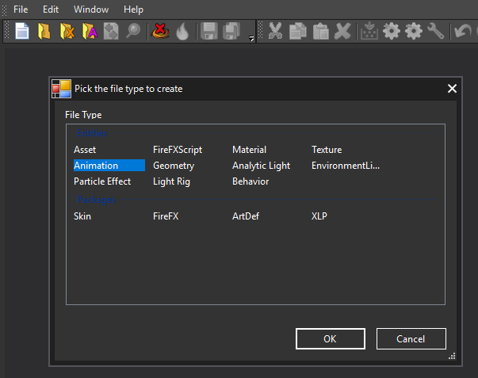
-
在ClassName（类名）下拉菜单中选择您想要的类（1）。在创建实体后更改类可能会有些麻烦，所以请尽量确保选择正确的类。
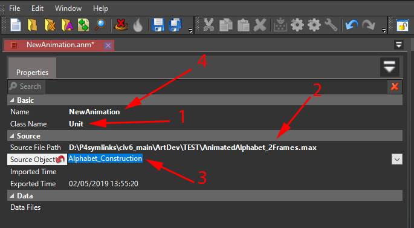
-
点击“Source File Path（源文件路径）”行（2），浏览到包含您的动画的Max或Maya文件。
-
当您选择文件时，编辑器将解析文件并找到可用于导出的动画对象。这将在“Source Object（源对象）”下拉菜单（3）中填充所有可用的动画供您选择，因此请点击下拉菜单并选择您想要的动画对象。
-
动画的“Name（名称）”（4）将自动设置为源对象的名称，但您可以在保存动画之前将其更改为任何您想要的名称。
-
转到“File（文件） > Save（保存）”，完成操作。
Working with ArtDef Files（使用艺术定义文件）
ArtDef文件是XML文件，告诉引擎如何使用打包在BLP文件中的资产和实体。
ArtDef文件引用XLP条目，并添加引擎需要的元信息以正确渲染XLP条目。由于每个引擎系统需要不同的信息，因此ArtDef文件在每个系统中的结构都不同。
您可以使用资产编辑器(Asset Editor)编辑ArtDef文件。只需点击“Open an existing art definition document”并选择要编辑的ArtDef文件。大多数您需要的ArtDef文件已经为您创建好。
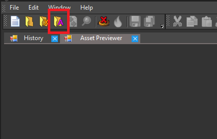
通常，ArtDef文件由Collections（集合）和Parameters（参数）组成。集合是您创建的无限列表的元素。每个元素都有一组有限的参数供您编辑。一个元素还可以包含一个或多个集合。
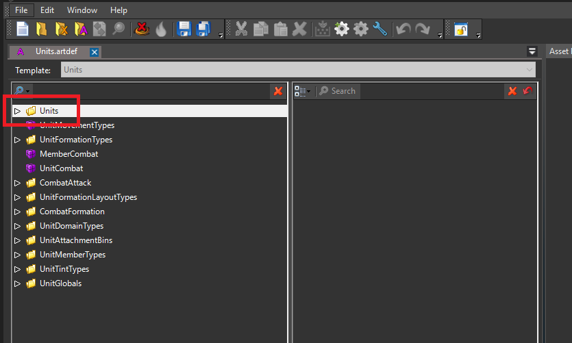
集合可以通过左侧的三角形进行展开。您可以右键单击集合并添加一个新元素，该元素将自动以集合的名称命名，并附加一个递增的计数。
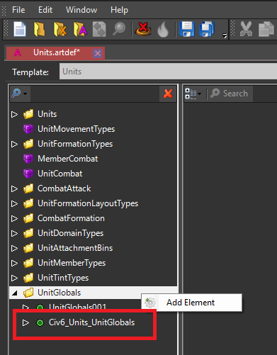
参数无法展开，选择参数后，右侧窗格将允许您编辑其值。ArtDef支持不同的参数类型：
-
Integer（整数）（整数，例如42），
-
Float（浮点数）（小数，例如4.2），
-
String（字符串）（ASCII文本，例如“forty two”），
-
Boolean（布尔值）（true或false），
-
Enumeration（枚举）（从预设的一组值中选择的下拉选项，例如从1、2或3中选择2），
-
RGB（红绿蓝颜色值）（每个颜色的取值范围为0-255，例如R:122 G:255 B:34），
-
2D Coordinate（二维坐标）（沿X和Y轴的二维坐标，例如X:0.5 Y:1.2），
-
BLP Entry（BLP条目）（来自XLP文件的标识符，引用资产或实体，例如Features_Marsh），
-
ArtDef Reference（ArtDef引用）（对同一文件中另一个ArtDef条目的引用，例如Collection1），以及
-
Collection（集合）（参数的数组，例如[42, 13, 55]）。
ArtDef文件直接由引擎解析，因此发现任何错误的唯一方法是保存更改并运行游戏。ArtDef错误通常通过所谓的断言（assertions）表现出来，它们是带有红色X的弹出对话框。通常它们会告诉您出了什么问题，有时甚至告诉您如何修复。
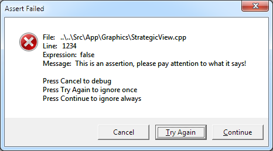
Concept Process（概念流程）
2015年7月13日，星期一
下午1:23
步骤
-
与设计团队交流，确保理解建筑结构的设计目的 - 与团队讨论（如果需要，与Kat、Matt和Brian - 设计师）
-
草图 - 粗略布局和形状。至少6-10个。这些不应该花费太多时间。整体体量和粗略形状 - 批准
-
包含反馈的草图 - 需要批准
-
进入最终的黑白线稿 - 需要批准
-
最终上色 - 可能需要进行小的微调，但没有重大变动。最终批准
需要注意的要点
-
六边形顶点应位于页面底部。
-
光源来自西南方向（参见游戏）。
-
应指示安全框架。
-
草图应充分突出每个草图中建筑物的形状。尝试使用多种不同的建筑物形状，而不仅仅关注一组的排列。
-
为了比例参考，希望看到它与其他建筑物的关系。
-
在等待反馈时可以继续进行其他任务。
- 在构思建筑时，始终努力通过截图或其他现有建筑物进行比较，以提供尺度上下文。这个结构在我们的地图上实际上会显得有多大？例如： -
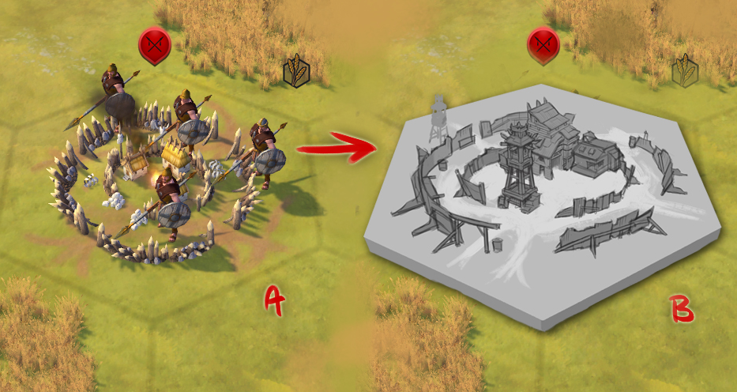
在征求或提供反馈时需要考虑的事项：
- 是否符合我们的艺术风格？
- 是否解决了需要解决的视觉问题？
- 在你的视觉选择背后的原因是什么？
概念阶段和时间框架：
当一件作品被发送以便进行批评时，概念艺术家应该努力清楚地说明任务的阶段和他们对时间框架的最佳估计（如果有的话）。例如，“这些是我对X的早期探索性草图（阶段），所以我正在探索一些非常奇特的想法。然而，在我们希望着手确定X的最终设计之前，我还有大约一周的时间（时间框架）”，或者“这是我对Y的最终设计（阶段）。我们的目标是今天下午将其发送给建模团队（时间框架）”。
尽量不要让要求反馈的电子邮件被无视。即使只是简单地说“看起来很棒！继续努力！”也比保持沉默要好。如果你认为作品达到了所有需要达到的标准，那么就这样说。如果你有想法或反馈，但需要一些时间来整理后再发送给他们，那么也要说出来。“嘿，贝丝，我现在自己的绘画工作已经很忙了，但我对你的吸血帝国悬浮艇任务有一些想法。我们稍后讨论一下怎么样？”
电子邮件不适合传达概念反馈：
在可能的情况下，所有的反馈或批评都应该通过口头交流进行传达。如果在口头交流中确定了目标或变更，那么应该在简洁的电子邮件中记录下来，以便没有人会忘记说过什么，并且在他们长达一周的在南极洲与冰鳄鱼搏斗的假期后，他们可以立即回到正轨，可能会忘记他们一直在工作的概念。“今天早上，弗兰克和我讨论了他的长颈鹿生物概念上的激光炮。我们一致认为它们需要更大，并且他可以尝试使用绿色激光而不是紫色激光。好了，伙计们，我要去与一些冰鳄鱼搏斗了。一周后见。”
当给别人提供反馈时，你应该清楚地说明哪些是必须做的，哪些只是建议。“我认为你绝对需要改变龙角的大小。它的角应该比其他龙的角要大，因为我们的设计团队将其指定为大角龙。也许你还可以尝试添加一些刺来使它看起来更具威胁性？”
文档
讲述一个故事：
所有的概念从早期阶段到完成都有一个故事。在某个地方记录下这个故事！可以是非正式的电子邮件，也可以是通过One Note、Discourse或团队为项目约定的任何文档平台进行正式记录，但一定要在某个地方写下来，并且对每个作品都要保持一致，随着故事的展开进行记录。当几个月后你早已忘记为什么那个紫色的海豚直升机经历了这么多次修改时，这将非常有用。我们One Note中的一个很好的例子是约翰·柯廷的领导人概念页面：（链接）Concept
“首先，我开始收集参考图像（链接到参考图像文件夹）。然后，我画了几页粗略草图（链接到粗略草图）。之后，我与我的主管和艺术总监进行了交流，他们都认为第16个草图是最好的。 接下来，我对那个草图进行了修改（链接到草图），并再次展示了出来。我的艺术总监喜欢它的发展方向，但决定设计需要更多的激光炮。 接下来，我修改了设计，增加了更多的激光炮（链接到修改后的设计），然后将其制作成最终阶段（链接到最终概念）”。
保存参考图像：
始终将你使用的所有参考图像保存在一个与概念相关的小文件夹中。如果你使用了照片或绘画中的任何内容，特别是进行了照片合成或从现有设计中借用了内容，这一点尤为重要。对于字体或其他资源也要做同样的保存。
文件夹结构和命名约定：
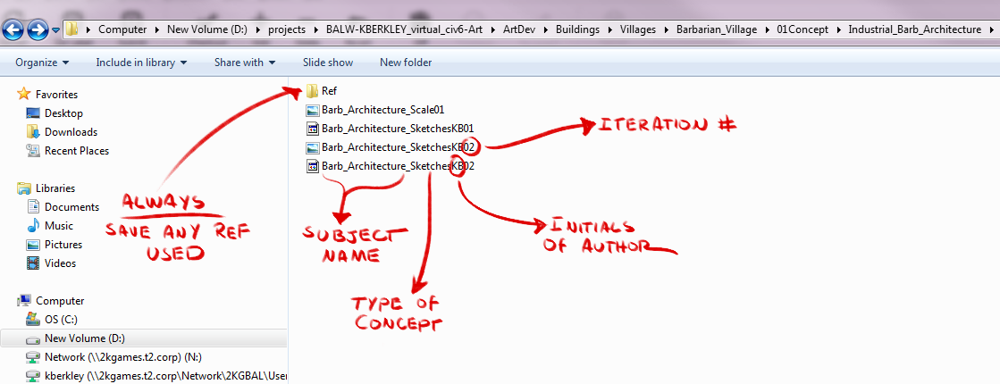
建筑艺术风格分解
2016年8月29日 星期一
下午2:21
我们的建筑物形状简单、夸张和厚实！
记住，我们的玩家通常会从非常远的地方观察这些建筑物。他们可能一次在屏幕上看到数百座建筑物，并且需要能够从人群中辨认出它们。一个好的经验法则是将它们想象成小玩具模型，而不是真实世界建筑的代表。
-大而简单的形状
-屋顶细节很重要，因为玩家的摄像机角度。避免空白的屋顶
-注重形状集群。2-3个高度不同的建筑物组合效果很好
-保持简单。避免过多的视觉噪音
-尽量避免直线
-避免让所有的形状大小都相同
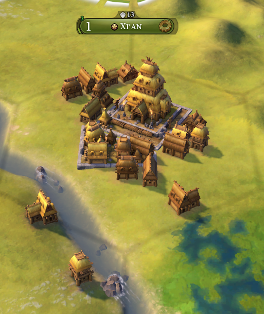
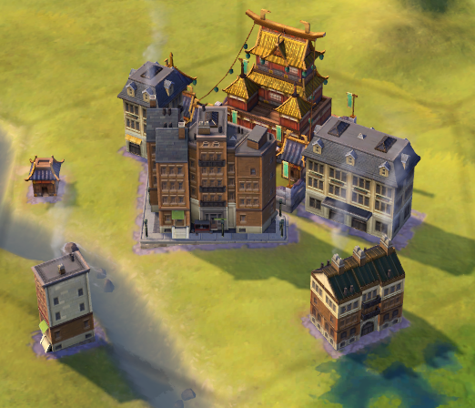

形状：
将形式分为大形状、中等形状和细节，比例为3:2:1。你的大形状可以是整个房屋的主体或整个屋顶。你的中等形状可以是遮阳篷、非常大的梁、阳台或烟囱。你的细节可以是微小的木板、单个砖块或一堆茅草。
示例：
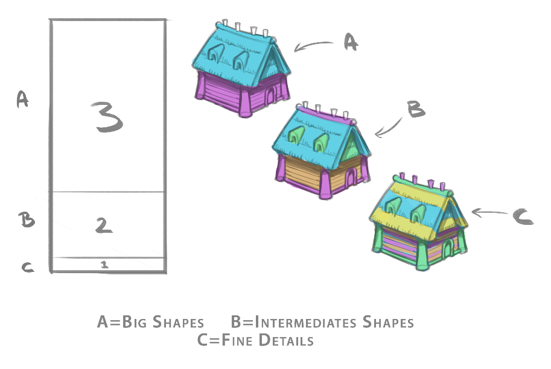
大形状和中等形状应该是影响建筑物轮廓的唯一元素。不要过于关注细节。首先考虑建筑物的大形状。
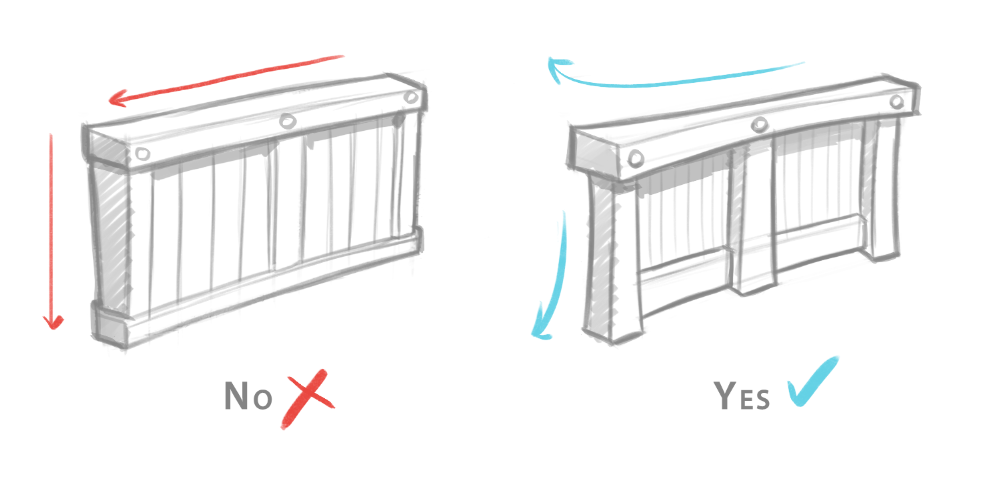
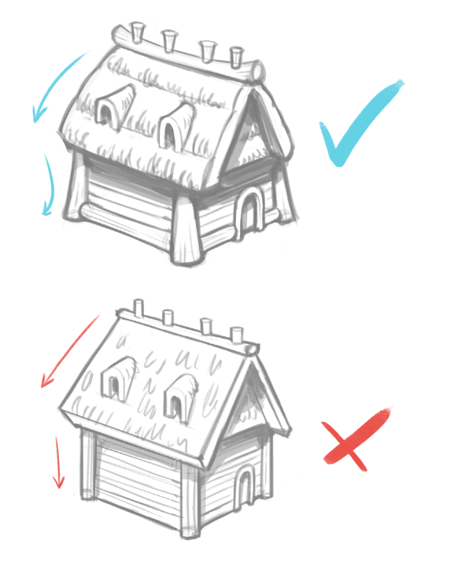
-用大形状和中等形状打破轮廓
-保持形状有趣和奇特。避免无聊的直线
-避免让所有的形状大小都相同
-如果你把弹珠放在上面，它会安静地停在那里还是会滚动？它应该会滚动！
概念检查清单
2016年9月21日 星期三
上午11:17
改进
1)你是否考虑了六边形瓷砖的安全边界？
2)是否有任何动画的机会？
3)你将如何区分已加工状态和未加工状态？
建筑建模流程
2015年8月10日 星期一
上午10:42
本节将描述建筑流程的许多方面，从纹理到在引擎中设置。
资源列表：
带有安全区的六边形
\ArtDev\Reference_Files\Official_Hex.max
3ds Max单位设置
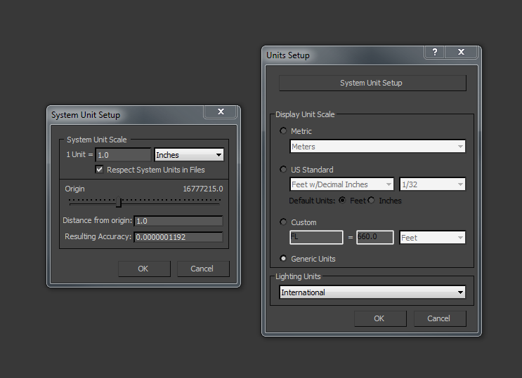
建筑纹理
2014年7月17日 星期四
下午4:27
在大多数情况下，纹理应该采用模块化、图集化的方法进行，这样可以得到一个类似网格的纹理集。当然，有些东西可能需要显式映射或者可能偏离模块化的峰值，但尽量保持模块化。典型的纹理尺寸大约是每层楼128像素。虽然我们在游戏中使用PBR模型，但由于我们的资产在屏幕上非常小，实时阴影和环境遮挡通常很难看到。因此，在纹理中放置阴影仍然是一种可行的方法。以下是一些示例：（左侧，工业城市），（中左，现代城市），（中右，营地），（右侧，大本钟），底部（带有颜色变体的莫卧儿风格）。
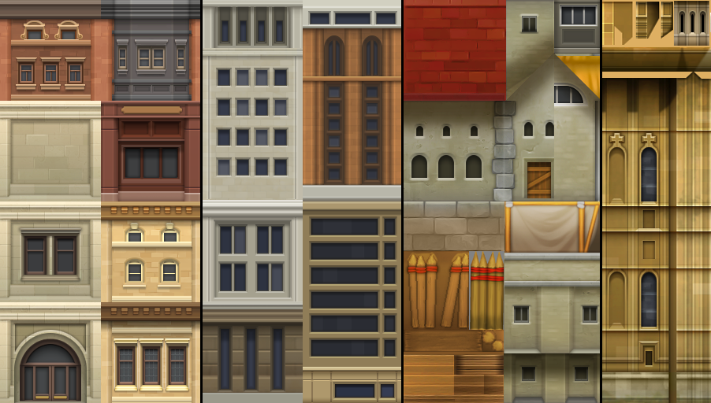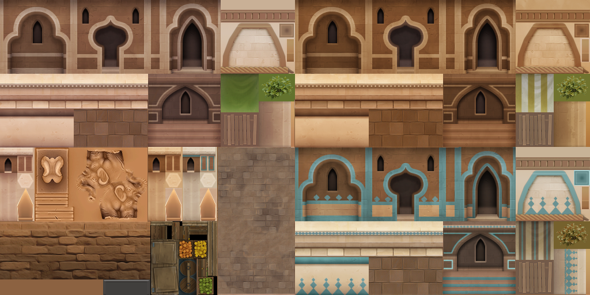
使用灰色漫反射和渐变斜坡来控制光泽度。白色：更高的光泽度，黑色：较低的光泽度。注意，只有当达到大约50%的灰度时，你才会看到明显的光泽。
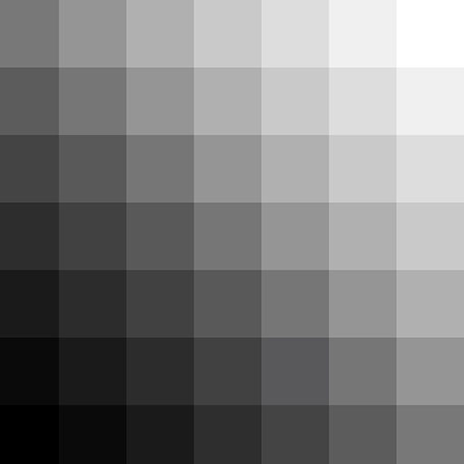
资产名称：Material_Gloss_Test
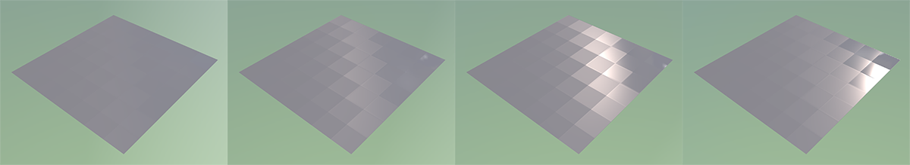
同时使用相同的贴图来控制光泽度和金属度。注意金属度会使基础颜色变黑（+环境光）。金属度越高，它就越像铬。资产：Material_Metalness_Test
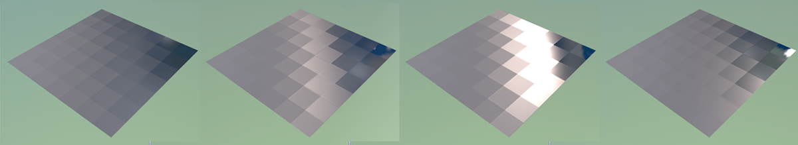
左侧为光泽度，右侧为金属度/光泽度
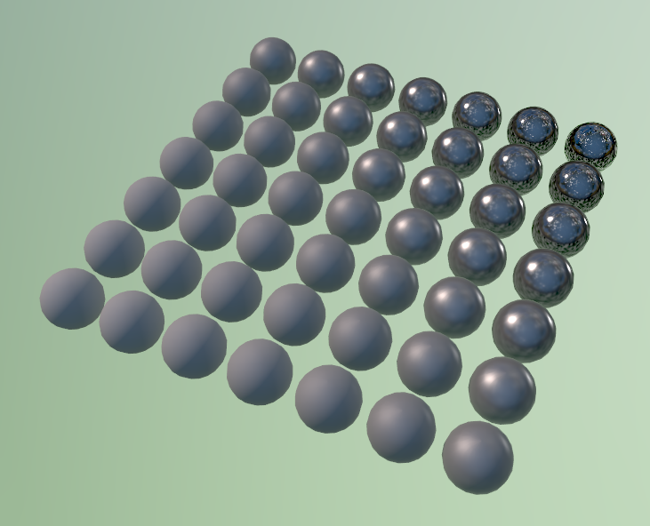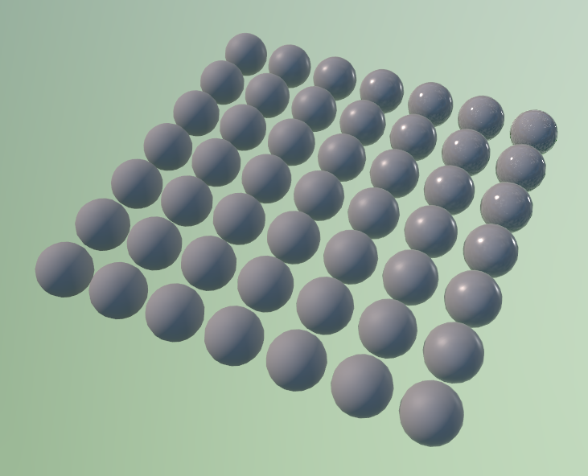
光泽度贴图示例，兵营 - 值的变化在光线照射屋顶瓦片时产生更强的对比度。
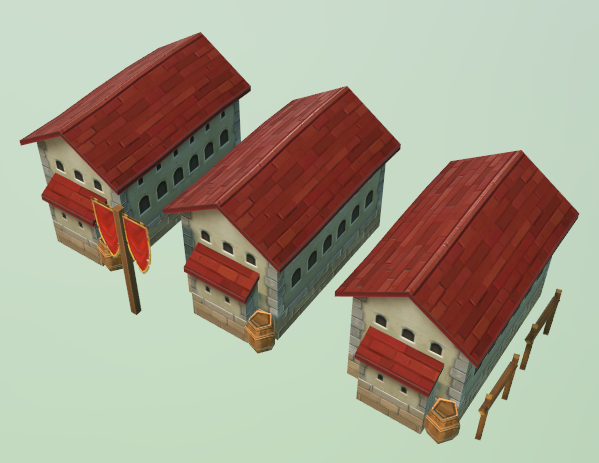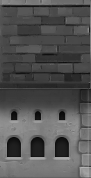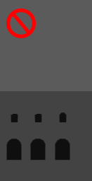
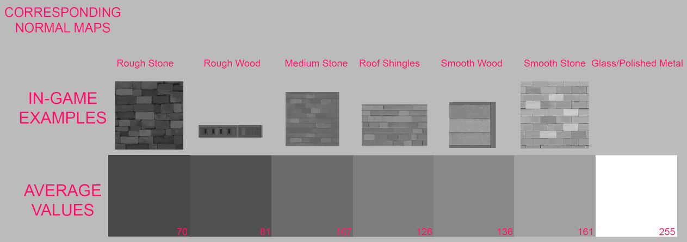
法线贴图的生成似乎最快通过使用Ndo或Crazybump。法线贴图是通过获取基础颜色并去除任何光照，简化形状，并考虑纹理的高度图来生成的。不应该出现仅通过去饱和基础颜色来生成法线贴图的情况。
以下示例 - 左侧：基础颜色，中间：正确的法线支持，右侧：错误的法线支持
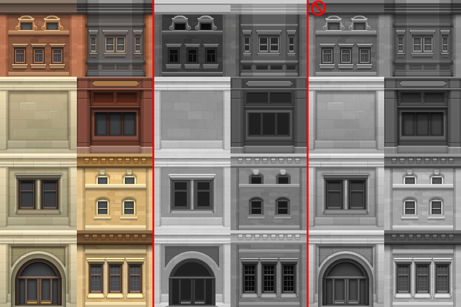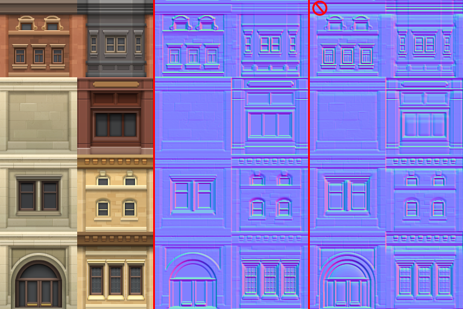
Ndo工作流程顺序
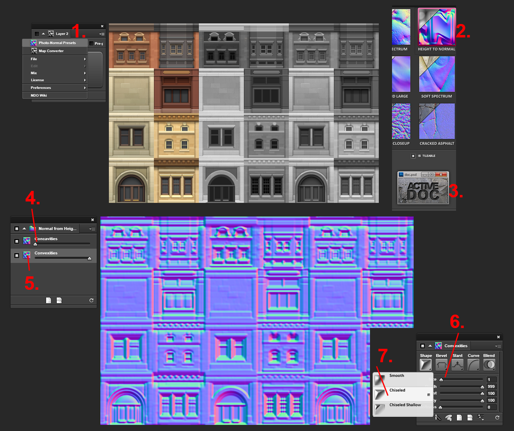
最后一个考虑因素：法线贴图是我们的朋友！
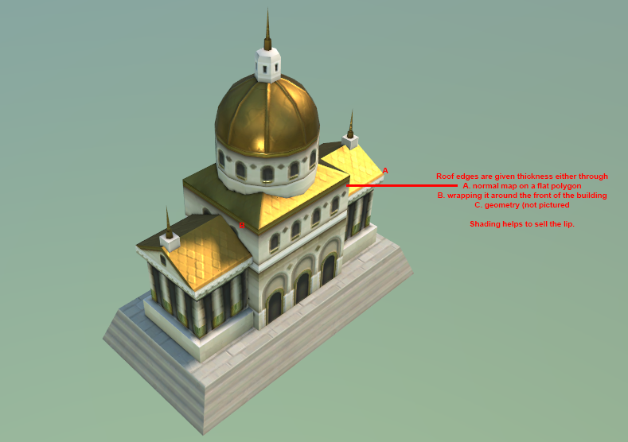
我们对区域有基本的着色蒙版功能。TintMask纹理只是一个分配给资产中的TintMask插槽的黑白纹理。颜色可以在照明选项卡中预览，并在地标 > 区域 artdef 中分配。
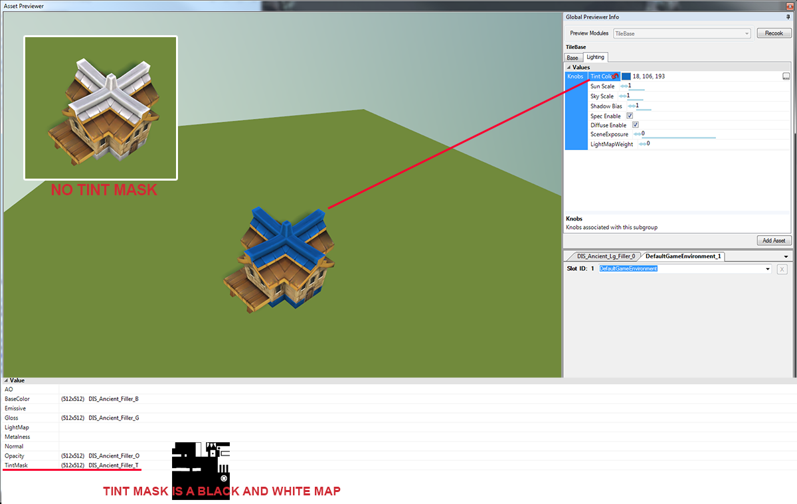
已添加新功能以支持环境遮挡贴图（AO maps）。现在我们可以将环境遮挡分配给资产而不是每个资产中包含的每个材质。资产级别的环境遮挡将覆盖该特定资产上基于材质的环境遮挡。否则，它将默认使用各个材质的环境遮挡贴图。这对于多子资产是一个重要的工具（这也在建筑命名约定中有说明）。
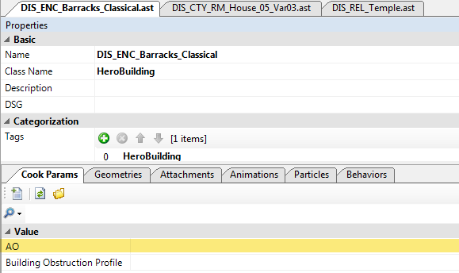
区域/改进设置
2016年8月17日，星期三
下午1:38
在设置区域和改进时，通常涉及以下7个元素：
-
Tilebases（TB） - 这些是包含附件和英雄建筑的基础资产，通常与相匹配的贴花配对使用。
-
Attachments（附件） - 单独的资产，由tilebase引用。具有地形跟随和裁剪功能。
-
Herobuildings（HB） - 主要建筑资产，通常由游戏玩法引用，并且是tilebase的一部分。
-
Decals（贴花） - 可以是tilebase或attachment的一部分，是添加到资产的第二个几何体。
-
Obstruction Blockers（OBs） - 用于排除资源（或在某些改进的情况下使道路绕过资源）。它们不会阻止道路进入六边形。
-
Road Connection Points（RoadCP） - 用于在给定点将道路连接到区域/改进。通常每个六边形边缘尽量设置一个。
-
FX Nodes（特效节点） - 可以放置在tilebases、attachments或herobuildings上。
让我们更深入地了解每个元素：
Tilebases（基础资产）
下图展示了一个典型的区域设置。这是生产（PRD）区域，工业时代。
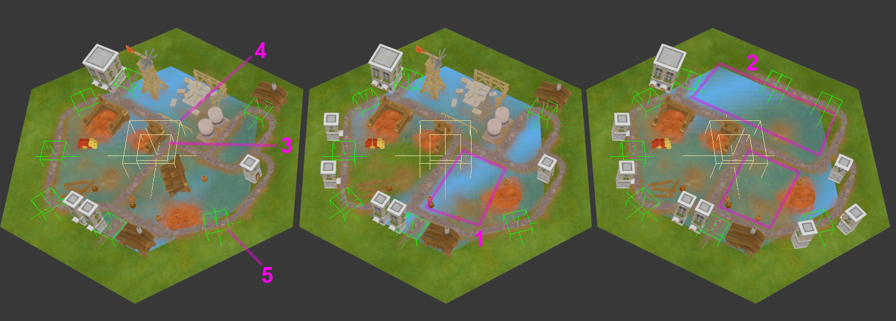
改进的基础资产（此处未显示）通常不包含英雄建筑，因此通常仅限于时代基础资产（4个）。而区域则具有一系列的英雄建筑，并且需要更多的基础资产来适应它们和时代的变化。当涉及到区域基础资产时，唯一可以节省时间和精力的方法是，如果您的布局在古代时代到工业时代之间没有变化，您可以在编辑器中通过贴花材质进行所有调整。
您在这里看到的所有模型都是附件。
最左边的基础资产（TB）没有包含英雄建筑。1. 表示第一个英雄建筑（车间）的位置，因此附件已从该区域移除以容纳它。第三个基础资产同时为车间和2.（工厂）预留了空间。
-
基础资产附件点辅助对象（DIS_PRD_Industrial_Base_01）
-
基础资产贴花点辅助对象（DIS_PRD_Industrial_Base_01_Decal）（这是贴花命名约定的典型示例）
-
道路连接点
资源资产（Resource Assets）
Tilebases（基础资产）在添加各种资源时有些不同。
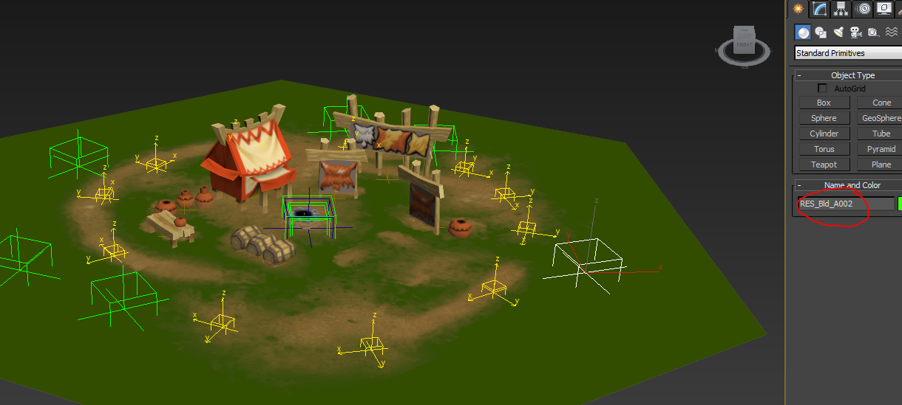
首先，您需要资源附件（请参阅下面的附件部分）。
附件最终将从附件中提取其资源名称。在此示例中，我有一个名为RES_Deer_Bld_A的鹿资产和一个名为RES_Fox_Bld_A的狐狸资产。因此，我的附件助手将获得该名称，并提取资源名称（RES_Bld_A）。在导入时，如果编辑器在基础资产附件中找到任何地方的“RES”，则会询问您使用的资源基础资产类型。
附件（Attachments）
这些附件可以是存在于基础资产的Max文件中或其他Max文件中的资产。一般的经验法则是，如果它们特定于某个改进或基础资产，请将附件保留在该文件中。
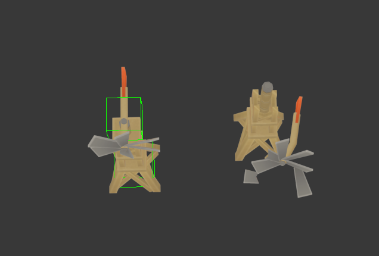
上面的示例显示了PRD区域文件中的一个附件。左侧的风车（DIS_PRD_Windmill）是游戏中的工作版本（带有用于动画的骨骼）。枢轴点是您希望对象放置的位置。右侧的风车（DIS_PRD_Windmill_PIL）是被掠夺的版本。它应该具有相同的枢轴点。大多数附件不会有CON（construction）状态。
原始附件名称非常重要。这些名称是云端用来引用该资产及其引用的名称。一旦创建了这些名称，它们就被锁定了（除非您费力地从数据库中删除并创建新资产）。在命名原始附件（并确保其变换被重置）之后，您可以在基础资产上复制附件，并进行引用。稍后在编辑器中，PROP_Barrel023将删除其数字，变为PROP_Barrel，并在XLP中寻找PROP_Barrel（该文件引用了原始资产）。
英雄建筑（Herobuildings）
与附件类似，英雄建筑通常存在于它们所引用的Max文件中。它们的不同之处在于它们的枢轴点通常基于它们在六边形/区域内的放置位置，并且它们通常具有PIL和CON状态。示例：
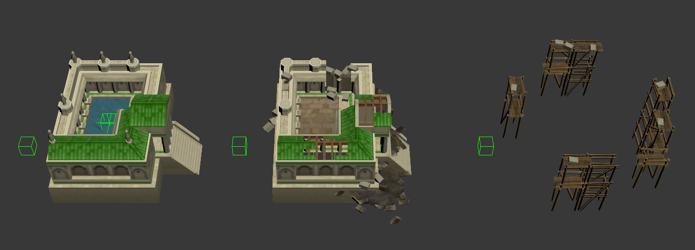
最左侧：工作状态（DIS_AQD_Bath）。中间：PIL和CON建筑状态（DIS_AQD_Bath_PIL）。右侧：CON脚手架（DIS_AQD_Bath_CON）。
通过在PIL和CON状态下使用相同的几何体，我们节省了时间和性能/内存。它还为AO贴图节省了纹理空间。
贴花（Decals）
如上所述，贴花是资产内的独立几何体。因此，它们有自己的点助手，其父级为（_decal）。我们稍后会介绍设置，但每个贴花通常包括一个古代时代的贴花，然后是其上方的其他时代的贴花。
建筑贴花高度
古代贴花：从枢轴点向+Z方向移动6-10个单位
古典-现代道路贴花：从枢轴点向+Z方向移动11-15个单位
其他位于道路上方的贴花：从枢轴点向+Z方向移动16-20个单位
烧毁/损坏贴花：从枢轴点向+Z方向移动21-25个单位
Obstruction Blockers阻挡器 (OBs)
如上所述，OBs（阻挡器或者说障碍物）的作用如下：
-
阻止城市建筑进入某个区域，并剔除该区域内的任何附件（仅适用于区域）
-
从覆盖区域中移除资源
-
使道路绕过给定区域（仅适用于改进，如果没有CP（交叉点）存在）
以下是在牧场改进中使用的OB的示例（在这种情况下，道路将绕过该OB）。OB（粉色）可以在编辑器中打开或关闭。

障碍物不是针对单独的附件制作的，而是针对基础资产制作的。
通常，通过在顶视图中使用样条线绘制边界，并为其分配一个Edit Mesh修改器，快速制作障碍物。它们应该是2D的，没有高度信息，枢轴点居中于基础资产的Point Helper对象，并以_OB后缀结尾（例如IMP_Pasture_AN_OB）。
道路连接点（RoadCP）
如上所述 - 每个六边形尽量只有一个。使用点助手创建。道路连接并在Y+方向上对齐。在Max中，它们应该被命名为Road_CP(XX)。
特效节点（FX Nodes）
在可能的情况下，将特效节点放在附件上，而不是基础资产上（因为它们也会实例化）。特效节点可以在任何状态下打开或关闭，并可以接收任何类型的变换。它们可以作为资产的任何部分的父级，但通常会作为资产的辅助对象的父级。
特效节点通常以FX_(效果类型)命名。 （例如FX_Smoke）
区域/改进导入
2016年8月17日，星期三
下午1:38
作为之前提醒，以下是您通常在区域或改进中找到的元素：
-
基础资产（Tilebases）（TB） - 这些是包含任何附件和主建筑的基础资产，通常与相应的贴花配对使用。
-
附件（Attachments） - 由基础资产引用的单独资产。具有地形跟随和剔除功能。
-
主建筑（Herobuildings）（HB） - 通常由游戏玩法引用的主要建筑资产，是基础资产的一部分。
-
贴花（Decals） - 可以是基础资产或附件的一部分，是添加到资产上的第二个几何体。
-
障碍物（Obstruction Blockers）（OBs） - 用于剔除资源（或在某些改进的情况下使道路绕过资源）。它们不会阻止道路进入六边形。
-
道路连接点（Road Connection Points）（RoadCP） - 用于在给定点将道路连接到区域/改进。通常每个六边形边缘尽量设置一个。
-
特效节点（FX Nodes） - 可以放置在基础资产、附件或主建筑上。
典型的导入工作流程：
导入附件（Import Attachments）
首先，导入您的附件。长方法是在资产编辑器(Asset Editor)中选择"文件（File） > 新建（New）"，然后从列表中选择“资产(Asset)”。这种方法一次只能处理一个资产。
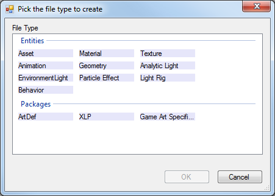
这种方法较长，仅作为脚本出错时的备用方法。
相反，使用“文件（File）”>“运行脚本（Run Scripts）”，然后导航到 C:\Program Files\Civ6\Asset Cloud - Civ6\AssetEditor\Scripts。这样可以一次处理一个或多个资产。
运行 Create_Assets_From_Source_File.py
接下来的对话框将显示一个类别列表供您选择。Tilebase附件（用于区域、改进和奇观）始终是Tilebase类别。然后，您将被要求选择一个Max文件以及您想要从该Max文件中制作附件的资产。选择您想要的资产（作为地标）并进行导入。导入所需的时间取决于您导入的资产数量。
导入后，它将提示您将资产放入.xlp文件中。Tilebases应放入Tilebase.xlp文件中。如果该.xlp文件在资产编辑器(Asset Editor)中打开，它将自动添加而无需提示。始终确保在将新资产添加到.xlp文件之前，确保您拥有最新的.xlp文件。
导入基础资产（Tilebases）
导入基础资产的方式与附件相同，只是在Max中应该使用导出为骨骼（Export as Bone）标记其附件。
![机器生成的替代文本：Firaxis模型管理器场景中的对象要导出的对象清单高级IJVW删除透视匹配所选对象DIS PRO ald A002 V Ex»rtasaone Llse Granny Tangents Clean Scene TileBase Cleanup o o o o o o o o o o o o o o o o o o o o o o o o o o) DIS DIS DIS DIS DIS DIS DIS DIS DIS DIS DIS DIS DIS DIS DIS DIS DIS DIS DIS DIS DIS DIS DIS DIS DIS DIS DIS Pot Pot Pot Pot Pot Pot Pot Pot Pot Pot Pot Pot Pot Pot Pot Pot Pot Pot Pot Pot Pot Pot Pot Pot Pot orange007 Orange012 Orange014 OrangeOIS Orange016 orange017 Orange018 OrangeOIg orange020 Orange021 orange022 Orange024 orange025 orange026 orange027 orange028 orange02g orange030 Orange031 orange032 orange033 Orange034 orange035 orange038 ald A ald 4001 DIS DIS DIS DIS DIS DIS DIS DIS DIS DIS DIS DIS DIS DIS DIS DIS DIS DIS DIS DIS Pot Pot Pot Pot Pot Pot Pot Pot Pot Pot Pot Pot Pot Pot Pot Pot Pot OrangeOIg（仅骨骼）Orange020（仅骨骼）Orange021（仅骨骼）Orange022（仅骨骼）Orange024（仅骨骼）Orange025（仅骨骼）Orange026（仅骨骼）Orange027（仅骨骼）Orange028（仅骨骼）Orange02g（仅骨骼）Orange030（仅骨骼）Orange031（仅骨骼）Orange032（仅骨骼）Orange033（仅骨骼）Orange034（仅骨骼）Orange035（仅骨骼）_Orange038（仅骨骼）ald A ald 4001（仅骨骼）Granny模型在Expy t列表DIS DIS DIS DIS DIS Num PRO Factory PRD Classical Base 01 PRD Classical Base 01 Decals PRD Industrial Base 03DecaI of Granny Models: 169 V Auto-sync Selecton](BuildingsProcess/media/image33.png)
请注意区别。附件将列出几何体以及其中的网格。
![机器生成的替代文本：属性名称IMP SILO Launch Pad类名Tile Base描述地标激活M... M...最后刷新时间：下午3:34:45时间：白天文本（I项）Tile Base动画粒子行为燃烧缺陷分类标签封装参数几何附件IMP SILO Launch _ Pad（IMP SILO Launch _ Pad）；顶点数：ICE2；基元数：738；骨骼数2IMP SILO Launch Pad PIL（IMP SILO Launch Pad PIL）。顶点数：ISO。基元数：1065。骨骼数IMP SILO Launch Pad PIL Decal（IMP SILO Launch Pad PIL Decal）；顶点数8。基元数4。骨骼数Mesh IMP IMP IMP IMP IMP SILO SILO SILO SILO SILO Launch Launch Launch Launch Launch Pad Pad Pad Pad Pad Group IMP SILO IMP SILO IMP SILO IMP SILO IMP SILO B... Worked U nwor ked B.. . Pillaged Constructi Unbuilt State Material IMP SILO IMP SILO IMP SILO IMP SILO IMP SILO Visible v I FOWMateriaI Base B ase Base B ase Base True T rue False False FOW/DefauIt M aterial FOW/DefauItMateriaI FOW/Defau It M aterial FOW/DefauItMateriaI FOW/DefauIt M aterial](BuildingsProcess/media/image34.png)
基础资产没有这些信息。它们的所有信息都包含在附件级别。
![机器生成的替代文本：IMP SILO.ast IMP SILO Launch Pad. ast et H reviewer Last Refreshed At: 3:3444pm Time Of Day: Day Behaviors Properties Basic Name Class Name Desc ri pticn Animations Particles IMP SILO Tile Base Text C ategorization Tags Cook Params (I items) Tile Base Geometries Attachments IMP SILO (IMP SILO); Vertex Count: O. Primitive Count: O. Bone Count O IMP SILO Decals (IMP SILO Decals); VertexCount 940. Primitive Count 582. Bone Count 73 IMP SILO Launch Pad PIL (IMP SILO Launch Pad PIL). VertexCount 1660. PhmtiveCount 1065. Bone Count IMP SILO Launch Pad PIL Decal (IMP SILO Launch Pad PIL Decal); VertexCount 8. PnmtiveCount 4. Bone Count 2 Mesh Group State](BuildingsProcess/media/image35.png)
这意味着状态（稍后介绍）是在附件级别进行的，而不是基础资产级别。
导入主建筑（仅适用于区域）
导入方式与基础资产（Tilebases）相同。主建筑与基础资产一样，可能包含附件。但是，附件不能支持其他附件。主建筑将添加到Herobuildings.xlp中。
几何状态和参数
![Machine generated alternative text: Cook Params Geometries Attac h ments Animations Particles Behaviors Burn Material Default Burn M aterial IMP SILO Launch _ Pad (IMP SILO Launch _ Pad:.; Vettex Count: ICE2; Phmitive Count: 738; Bone Count 2 IMP SILO Launch Pad PIL (IMP SILO Launch Pad PIL). Vertex Count: ISO. Primitive Count: 1065. Bone Count IMP SILO Launch Pad PIL Decal (IMP SILO Launch Pad PIL Decal); VertexCount 8. Primitive Count 4. Bone Count 2 Mesh 1M P SILOLaunchPad Mesh Mesh Mesh Mesh Group IMP SILOBase Stat U nwor ked Pillaged Construction U nbuilt Material Visible True T rue False False True FOWMateriaI FOW/DefaultM FOW/DefauItMateriaI FOW/Defau It M aterial FOW/DefauItMateriaI FOW/Defau It Mate rial IMP IMP IMP IMP IMP SILO SILO SILO SILO SILO Base B ase Base B ase Base IMP SILO IMP SILO IMP SILO IMP SILO Launch Launch Launch Launch Pad Pad Pad Pad IMP SILO IMP SILO IMP SILO IMP SILO B ase Base B ase Base](BuildingsProcess/media/image36.png)
红色圆圈表示如何导入新的或现有的几何体。您可以使用此功能向资产添加贴花（基础资产贴花、被掠夺贴花等）或PIL或CON状态（如区域/改进设置中所述）。
网格（Mesh）指的是Max文件中几何体的名称。
组（Group）是分配给Max文件中资产的材质的名称。
状态（State）用于控制资产的可见性。在这种情况下，我们的未被破坏版本在已工作/未工作/未建造状态下可见。PIL几何体将在被掠夺和建造状态下设置为True。这可能因资产而异。例如，改进项目具有特定的已工作和未工作状态，并且在这些状态下可能会打开和关闭资产。
FOW材质（FOWMaterial）通常可以保持默认设置。如果资产具有透明边缘，则有一个“无线条”版本的材质，可以关闭透明几何体的边缘。
燃烧材质（BurnMaterial）默认应用于被掠夺状态。它会以编程方式将烧毁着色器应用于资产的被掠夺版本。
添加附件和参数
那么我们如何在基础资产上添加附件？
附件已经分配给资产，只是我们还看不到它们。目前有一个脚本可以更新资产上的附件。它将添加任何新的附件到基础资产上。该脚本名为Update_Asset_Attachments.py。它将查看您在资产上设置为父级的任何骨骼对象，并为其创建一个附件。
如果您正在处理使用资源的资产（即，名称中带有RES的骨骼），它将询问您是否要为其分配资源，方法是询问您它是哪种类型的资源资产。之前已经讨论过这方面的设置。
编辑器确实允许我们直接添加自己的附件（而无需在Max中使用它们），但这通常由不想处理Max文件的特效艺术家使用。下面圈出了该按钮。
![Machine generated alternative text: Filter: acne Name Position o.o.o Rotation Scale Asset IMP IMP IMP IMP Connection Type NONE NONE NONE NONE Rescu rceTy pe Terrain FollowMode Pivot Height Pivot Height Pivot Height Pivot Height I Cull Mode VI TerrainType RandomizeAnims Model Instance Point Name Fort Truck Modern Fort Truck Modern002 SILO Contr01001 SILO Launch Pad001 IMP IMP IMP IMP IMP IMP IMP Fort Truck Modern Fort Truck Modern002 SILO Contr01001 SILO Launch Pad001 Fort Truck Modern Fort Truck Modern SILO Control SILO Launch Pad IMP IMP IMP IMP SILO SILO SILO SILO DON DON DON DON 'T CARE 'T CARE 'T CARE 'T CARE OPTIONAL OPTIONAL OPTIONAL OPTIONAL DON DON DON DON 'T CARE 'T CARE 'T CARE 'T CARE True T rue True True](BuildingsProcess/media/image37.png)
让我们来看看参数。
附件点名称（Attachment Point Name）是Max中资产的名称。您可以更改此名称而不会对任何内容产生影响，但默认情况下会使用Max中的名称。
模型实例（Model Instance）是附件点所属的父级的名称。
骨骼名称（BoneName）是在Max中创建骨骼的字面资产名称。如果您想将资产放置在其他位置，可以将其分配给其他骨骼，但默认情况下通常保持不变。
位置（Position）、旋转（Rotation）、缩放（Scale）允许在编辑器中对附件进行手动变换。这可能会导致Max文件不同步，因此请谨慎使用。
资产（Asset）是附加到附件点的资产的名称。请注意，如区域/改进设置中所讨论的，数字已被移除。如果是特效，这里不应该有任何内容。
连接类型（Connection Type）指的是道路连接。如果您在Max中的辅助对象命名为Road_CP，它将默认为Road。
资源类型（ResourceType）用于具有特定资源六边形上特定资产的资源类型，例如矿井和采石场。
地形跟随模式（TerrainFollowMode）默认为Pivot，通常是您想要的选项。Average和Maximum都会对边界框进行采样，并相应地放置资产。None表示不进行地形跟随。
剔除模式（CullMode） 可选（默认）- 资产会被城市建筑物、道路和水域移除。 重要 - 只会从水域中剔除。 永久 - 永远不会被移除。
地形类型（TerrainType）将资产设置为仅在特定地形类型上渲染。
随机动画（RandomizeAnims）在给定的附件上偏移动画，从而在相同的重复附件之间创建变化。
特效（FX）
如上所述，您创建的任何特效节点都应显示在附件列表中。再次强调，它不应该有任何附加的资产。
特效可以手动完成，也可以使用脚本。
手动方式
![Machine generated alternative text: DIS CTY Properties Name Class Name Desc ri pticn MGG Block_LG SQ01ast DIS CTY MGG Block LG C ityB lock Standard Landmark Asset Previewer Last Refreshed At: Time Of Day: Day Type W'avior ktachment P oint Duration TimeSeconds Global Previewer Info CityBIock Base Camera H Knobs Reset Lighting Hide Skybox Text Color Sac kgrcu nd Color Skybox Toggle Joints Toggle Joint Names Toggle Wireframe Show FOW Toggle Decals Expand Decals AlphaFade Graph ics Settings Text (I items) C ityB lock Animations Particles Behaviors Categorization Tags Cook Params Geometries Attachments Filter: Attachment Point Name FX_Light Blink FX Smoke EX Smoke005 Asset Trigger : Properties PILLAGED A H,'ORKEC Acti on ArtOefVFX Asset VFX Asset VFX Light Trans fer Model Instance DIS CTY MGG DIS CTY MGG DIS CTY MGG Position History Bone Name FX_Light Blink EX PIL EX Smoke005 Block LG 01 Default DIS CTY Bock LG SQ_OI Attachment Point EX Smoke005 FX_Smoke LG_SQOI_ Reset To Defat Attac DIS CTY MGG Block LG DIS CTY Base Motion Display Transform Asset VFX FX FX Smoke005 Asset Previewer LOOP Building_Steam (FX SmokeOOö) Light Fader Red Building (FX Light Blink)](BuildingsProcess/media/image38.png)
您可以在中间的资产上看到特效附件。与动画一样，您需要分配一个DSG。首先，（1）创建一个时间轴。将其命名为与动画状态相对应的名称。在这种情况下，资产有两个时间轴，Worked State（夜间闪烁灯光和蒸汽效果）和Pillaged State（燃烧烟雾）。这里我们可以看到创建了WORKED_A时间轴。（2）在Asset VFX旁边（红线处），右键单击并创建一个新的关键帧。然后可以选择关键帧（3）并为其分配一个效果（4）。Asset指的是将播放的特效，Attachment Point指的是您希望该特效播放在哪个骨骼上。如果是可循环播放的动画，则将Duration设置为-1。
(5)显示了在需要排除特效播放问题时，切换骨骼和骨骼名称的选项。
目前，该系统存在一些小问题，有时需要关闭并重新打开资产才能正常工作。
脚本（Script）
使用脚本可以大大节省设置特效的时间。转到文件>运行脚本，然后选择Add_FX_To_Tilebases.py。
![Machine generated alternative text: a Assign FX to Tilebases Fltter AO Emitter Large Archer Amow Trail Balloons FAce Radial 3D Face Velocity AA aplo Aero Windsock ArcraftCamer AntiAr Muzzleflash ArcraftCamer BowWake Wake ArcraftCamer Bow Wake Aircraft Camer Wake Airstrip Windsock AmphitheaterFIag AntiAr Muzzleflash 01 Fltter kt achment P Oint WORKED A Add Assets FXto Add FX Duration - Process Assets Apostle Apostle Apostle Apostle Apostle Apostle Dirt Grass Sand Snow Water ktack Ground O ktack Staff 01 Martyr 01 Shock Ground O Sparkles In 01 Arc Sparks Burst Arc Sparks Continuous Arc Sparks Parent Arc Sparks Wonder Animation Add FXto Selection](BuildingsProcess/media/image39.png)
首先，在右上角选择Add Assets。这将提示您使用对话框选择要添加特效的一组资产。重要！这些资产必须已经添加了用于特效的附件骨骼。
![Machine generated alternative text: Assign FX to Tilebases Rher blink 2 02 2 04 2 06 2 08 2sec 'sec 7%ec Animation Fltter ktachmentPoint 02 PIL DIS DIS DIS DIS DIS DIS CTY CTY CTY CTY CTY cry CTY CTY MCG MCG MCG MCG MCG MGG Block Block Block Block Block Block Block Block so SQ SQ SQ SQ so SQ SQ Add Assets FXto Add 01 01 02 02 03 03 Process Assets Ljght Light Ljght Ljght Light Light Ljght Ljght Ljght Light Ljght Blinker Red Blinker White EX WORKED A Light _ Blink Smoke 005 Smoke LG SQ O PIL Smoke are MCG Block LG SQ Light_BIinkCCI SmokeOOE F,re LG SQ 03 PIL Broadway Broadway Broadway Broadway Broadway Broadway Broadway Broadway Bro adway Blink Blink Blink Blink Blink Blink Blink Blink Blink Add FXto Selection](BuildingsProcess/media/image40.png)
首先选择您的特效（1）。接下来，您（2）选择要将该特效添加到的附件点。（3）选择您的时间轴和持续时间（4），记住手动方法中讨论的内容。（5）将特效分配给所选的附件点。您可以添加任意数量的特效和时间轴。准备好后，处理资产（6）。
使用脚本将自动添加DSG、时间轴和所有特效到所选的附件点。
Animations（动画）
设置已在此处进行了详细记录 - Adding animation to Buildings（ - 添加动画到建筑物）
Obstruction Blockers (OBs)）
OBs是在瓦片基础或附件的Cook参数中添加的。

Obstruction Profile AutoGenerate（自动生成遮挡配置文件）是默认设置，如果没有手动添加遮挡块的话。 Obstruction Profile（遮挡配置文件）是您可以为资产添加新的或现有的配置文件，以便更好地进行控制。
Artdef 设置
在设置好您的资产之后，您需要将您的区域和改进的瓦片基础（而不是附件）添加到 Artdef 中。
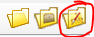
区域和改进使用 Landmarks.artdef。
在这个例子中，我们将看一下 IMP_Fort 的设置：
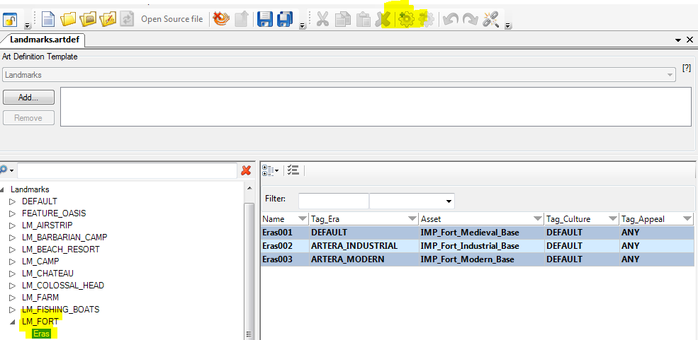
在这里，您可以看到堡垒下拉菜单中有时代的设置。大多数改进有两个资产。堡垒有三个。在这种情况下，只要不是工业时代或现代时代，就使用古典时代的堡垒资产。工业时代使用工业堡垒资产，现代时代使用现代堡垒资产。这些时代都是通过顶部的齿轮+图标添加的。
在大多数情况下，名称、文化和吸引力不会被使用，可以保持默认值。
区域稍微复杂一些：
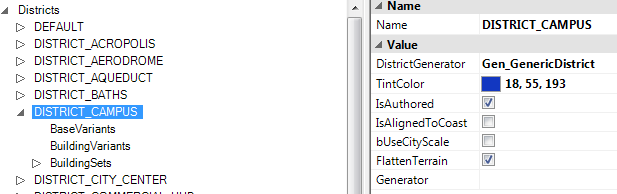
选择校园后，您可以看到许多参数。老实说，您不应该需要调整大多数这些设置。我想强调以下几点：
TIntColor（区域颜色） - 这是区域的颜色。它会给区域中的任何带有色彩蒙版的物体上色。
FlattenTerrain（平整地形） - 实际上，这个功能也适用于改进。它会平缓地形上的山丘，并减少瓦片基础与地形重叠的问题。一个不使用此功能的例子是农田。
首先，我们添加到我们的建筑集合中
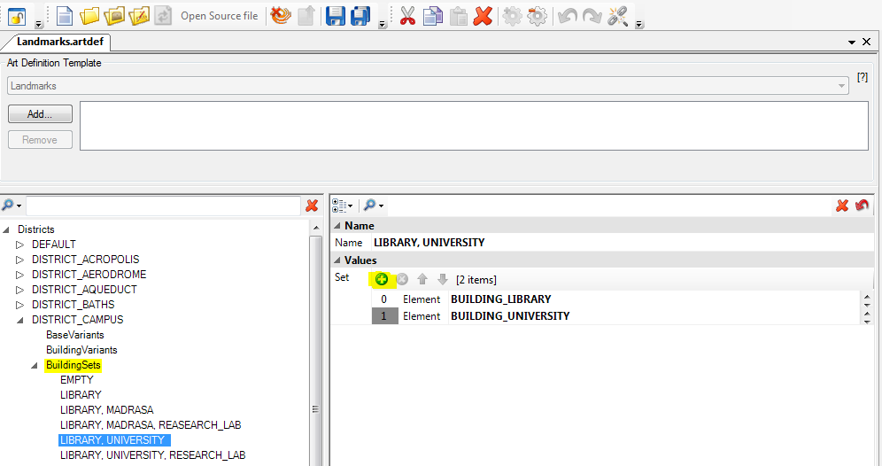
这是一个区域可以拥有的不同配置列表。它应该按照设计笔记（城市区域）的顺序，并在 Landmarks.artdef 中使用较低的 herobuilding 名称。使用齿轮+图标添加新条目。
在列表的每个条目下，使用绿色+图标添加新建筑物，并在右侧的下拉菜单中选择建筑物。
![Machine generated alternative text: Districts DEFAULT DISTRICT DISTRICT DISTRICT DISTRICT DISTRICT ACROPOLIS AERODROME AQUEDUCT BATHS CAMPUS Filter: Name Bu ildingVariants002 B uiIdingVariants004 BuildingVariants005 B uiIdingVariants2 Tag Herc3uiIding Tag Era ARTERA MODERN DEFAULT DEFAULT DEFAULT DEFAU Tag Culture DEFAULT CIVILIZATION DEFAULT DEFAULT DEFAU ARABIA Asset DIS CMP Research DIS CMP Madrasa HB ERROR DIS CMP Library DIS_CM niversity Tag Appeal ANY ANY ANY ANY AN BUILDING BUILDING BUILDING BUILDING RESEARCH LAB MADRASA OBSERVATORY LIBRARY UNIVERS BaseVariants C:' BuildingSets](BuildingsProcess/media/image46.png)
接下来，我们可以填写 BuildingVariants，使用齿轮+图标添加新条目。在这里，我们可以选择我们在 BuildingSets 中定义的 herobuilding 之一，设置它在某个时代显示，并选择我们要在该条目中使用的艺术资产。
![Machine generated alternative text: DISTRICT DISTRICT DISTRICT DISTRICT AERODROME AQUEDUCT BATHS CAMPUS Name BaseVariantsOOI BaseVariants002 BaseVar iants003 BaseVar iants004 BaseVariants005 BaseVariants005001 BaseVariants006 BaseVar iants007 BaseVariants008 BaseVa nts008001 BaseVar iants009 BaseVariantsOIO BaseVariantsOI I BaseVariantsOIIOOI BaseVariants012 Base VariantsOI 2001 Set Herc3uiIdings Tag _ Era ARTERA ANCIENT ARTERA ANCIENT ARTERA CLASSICAL ARTERA CLASSICAL ARTERA CLASSICAL ARTERA CLASSICAL ARTERA INDUSTRIAL ARTERA INDUSTRIAL ARTERA INDUSTRIAL Tag Culture DEFAULT DEFAULT DEFAULT DEFAULT DEFAULT CIVILIZATION DEFAULT DEFAULT DEFAULT CIVILIZATION DEFAULT DEFAULT DEFAULT CIVILIZATION DEFAULT CIVILIZATION Asset Tag Appeal ANY ANY ANY ANY ANY ANY ANY ANY ANY ANY ANY ANY ANY ANY ANY ANY C MP Ancient EMPTY LIBRARY EMPTY LIBRARY LIBRARY, LIBRARY, EMPTY LIBRARY LIBRARY, LIBRARY, EMPTY LIBRARY LIBRARY, LIBRARY, LIBRARY, LIBRARY, UNIVERSITY MADRASA UNIVERSITY MADRASA UNIVERSITY MADRASA UNIVERSITY, RESEARCH MADRASA REASEARCH LAB LAB ARABIA ARABIA ARABIA ARABIA DIS DIS DIS DIS DIS DIS DIS DIS DIS DIS DIS DIS DIS DIS DIS DIS Base B ase Base B ase Base B ase 01 02 01 02 03 CMP CMP CMP CMP CMP CMP CMP CMP CMP CMP CMP CMP CMP CMP CMP Ancient C lassical C lassical C lassical C lassical BaseVariants Bui Idi ngVariants C:' BuildingSets DISTRICT DISTRICT DISTRICT DISTRICT DISTRICT DISTRICT DISTRICT DISTRICT DISTRICT DISTRICT DISTRICT CITY CENTER COMMERCIAL HUB ENCAMPMENT ENTERTAINMENT COMPLEX HARBOR HOLY SITE INDUSTRIAL ZONE LAVRA MBANZA NEIGHBORHOOD Industrial Base 01 Industrial Base 02 Industrial Base 03 Industrial Base 03 ARTERA ARTERA ARTERA ARTERA ARTERA ARTERA ARTERA INDUSTRIAL MODERN MODERN MODERN MODERN MODERN MODERN M odern Modern Modern Modern M odern Mode r n Base B ase Base B ase Base B ase 01 02 03 04 04](BuildingsProcess/media/image47.png)
最后是 BaseVariants，用于瓦片基础，类似于我们在 BuildingVariants 中所做的。在这里，我们可以选择我们的 BuildingSets 中的一个，并设置时代和要使用的瓦片基础资产。
最后的步骤
完成所有这些步骤后，您应该能够制作 Landmarks.artdef 和 Tilebases.xlp，并在游戏中看到您的资产。
城市建筑设置
2016年8月22日 星期一
下午4:37
城市建筑由区块（blocks）和建筑物（blds）（单独的建筑）组成。该过程如下：
城市集合可以在以下目录中按时代找到：
\ArtDev\Buildings\Districts\Cities
在开始新的集合时，最好加载一个现有的集合，以确保所有的枢轴点都在正确的位置。
填充物
第一步是创建所有的填充物建筑物，它们既可以单独使用，也可以用于填充城市区块。通常，您可以使用大约10-15个变体和颜色变体。
古木（AW）填充物建筑：
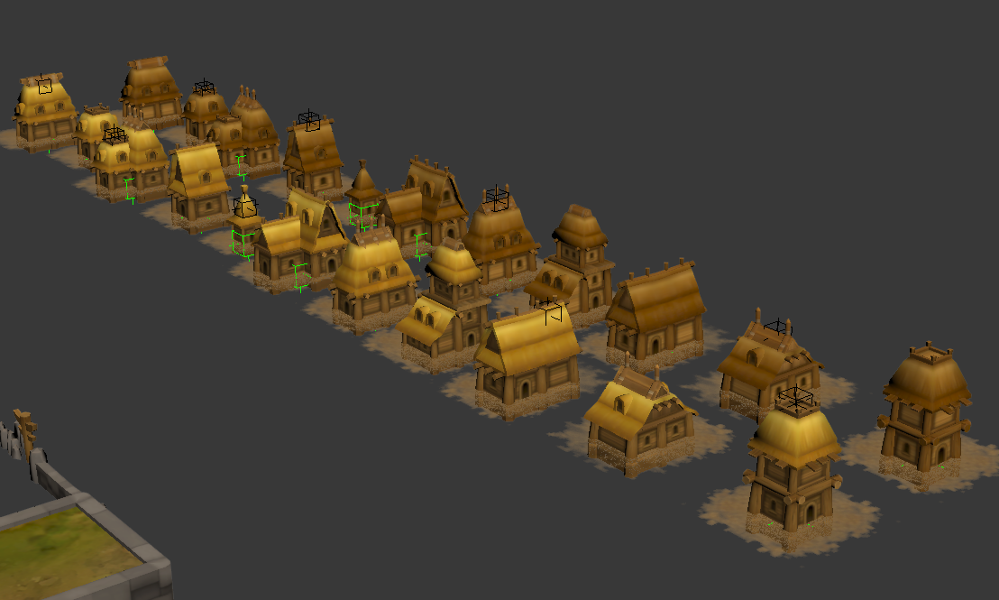
使用现有文件的另一个好处是确保建筑物具有相似的高度和基础比例，随着时代的发展而增长。
填充物建筑的枢轴点应该居中 - 枢轴点将位于 Z 轴（0），所以确保将建筑物向下延伸超过该点，以适应山丘的高度。
在实际开始之前，请确保阅读以下其他有用的链接！
填充物建筑的命名约定可以在此处找到 - 建筑命名约定和尺寸
关于建筑形状和尺寸以及它们与设置的关系的文档可以在此处找到 - 城市填充物 ID
贴花
每个填充物建筑都会有一个与之关联的贴花，根据时代而定。这些贴花应该使用相同的命名约定，在末尾加上_decal。贴花不应超过2个绘制（例如，在其下面有1个古典贴花和1个古代贴花），因此请确保附加任何类似材质的贴花。
特效
特效节点的应用方式与区域/改进类似（可以在此处看到一个很好的示例 - 区域/改进导入），应使用FX_effectname的命名约定。这些特效节点可以直接作为建筑的子级，或者将所有内容附加到带有建筑名称的点辅助器上。
AO（环境光遮蔽）
城市建筑在 UV 通道 2 中有自己的 AO 贴图，通常为 512x512。如果建筑上只使用了一个材质，将 AO 贴图放在材质中即可。您也可以将其放在 Cook Params 中。如果选择这样做，建议使用脚本MultiAssign_Landmark_AO.py。它会将 AO 贴图应用于每个建筑的 AO cook param 插槽。如果不确定，使用材质方法 - 这样在更改建筑使用的 AO 贴图时需要进行的设置/开销较少。
区块
区块由单独的建筑物组成。在第一次进行时，建议将建筑物直接作为区块辅助节点的子级。一旦它们在游戏中得到适当的评估，然后应该进行附加和优化。
通常，一个文化集合会有15个区块（5种类型 + 每种类型3个变体）。
古木区块：
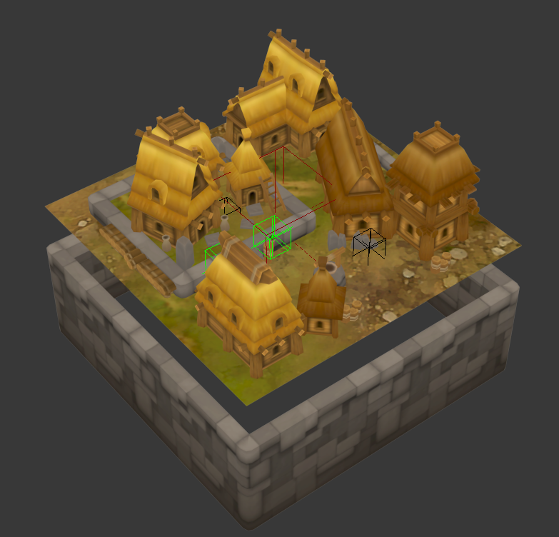
除了我们当前的现代集合，我们希望将这些区块共享给各种文化集合，因此将它们分割成了独立的几何体。因此，它们不包括在特定区块的父级/导出中。在上面的截图中，您可以看到哪些是组合在一起的，哪些不是。这里的红色节点是此资产的主要父级辅助器DIS_CTY_LG_SQ_Block_01。绿色节点是工作中的特效节点（在本例中是火炬），黑色节点代表被掠夺的特效（烟雾）。
![Machine generated alternative text: perties dame lass Name ripticn DIS CTY AW Block_LG C ityB lock Standard Landmark T Of Dav: Dav Text (I items) C ityB lock C ategorizat ion Cook Params Animations Particles Behaviors Geometries Attachments CTY AW Block LG SQ 01 (DIS CTY AW Block LG SQ 01); 7089. 4064. BoneCo CTY Foundation LG SQ Decal Ancient (DIS CTY Foundation LG SQ Decal Ancient); Vertex Count 8. Primitive CTY Foundation LG SQ LgGrayBIock (DIS CTY Foundation LG SQ LgGrayBIock). Vertex Count 96. Primitive Co Group State](BuildingsProcess/media/image50.png)
上面显示了在资产编辑器(Asset Editor)中的设置。您可以看到我们有三个（3个）几何体 - 建筑物/特效节点作为一个几何体，基础（灰色区块）作为第二个几何体，贴花作为第三个几何体。您可以使用脚本Assign_Geo_To_MultipleAssets.py更轻松地将基础和贴花多重分配给区块形状。
区块形状由其命名约定定义，不需要用户在 Cook Params 中进行修改。
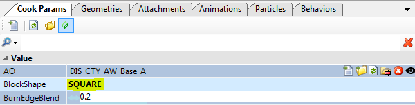
AO（环境光遮蔽）
城市区块的 AO 需要在资产级别上完成，因为它涉及多个材质/网格。城市区块有自己专用的 AO 贴图，位于通道 2 上。同样，使用MultiAssign_Landmark_AO.py脚本可以帮助您更快地完成这个过程。
区块的基础部分的 UV2 映射被推到了右上角大约16x16像素的位置。因此，为了确保它们在游戏中不会显得太暗，在生成区块的 AO 贴图后，您应该确保 Photoshop 中右上角至少有32x32像素的区域是白色的。
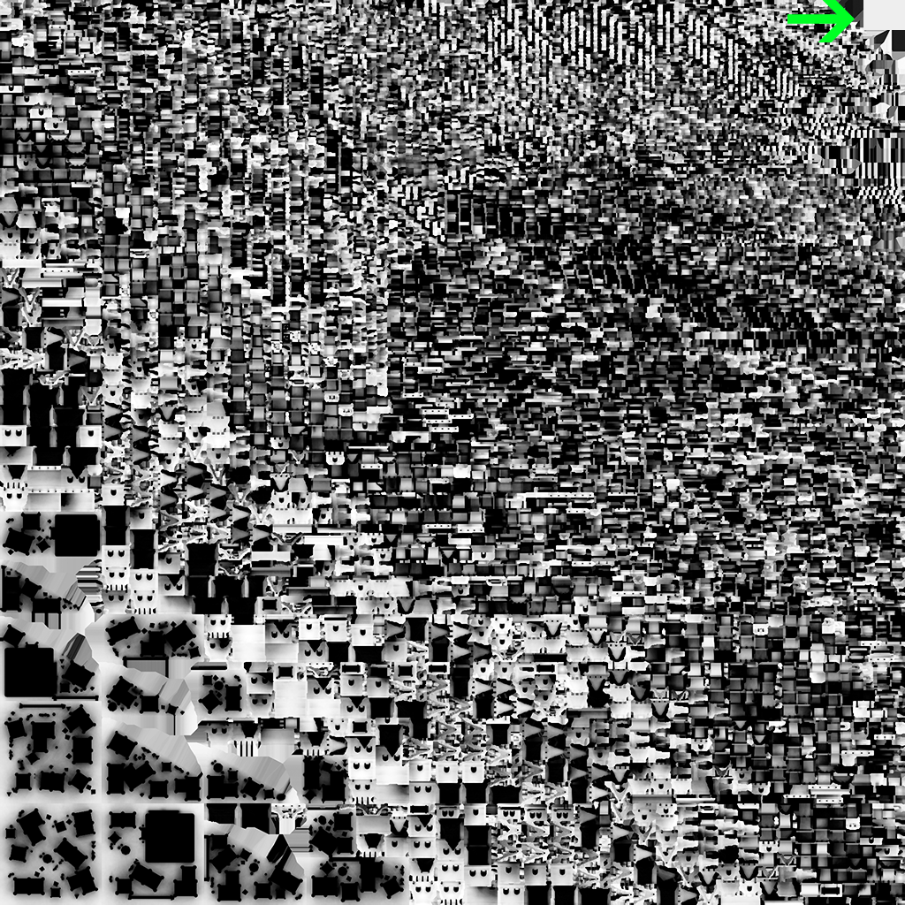
导入（Importing）
在导入所有资产后，它们应该添加到city_buildings.xlp中。
接下来打开CityGenerators.artdef，进入Gen_CityCenter > Block部分。这是进行所有建筑分配的地方。要将新建筑添加到此列表中，请运行脚本CreateCityBlocks.py。这将为您提供city_buildings.xlp中的建筑，并将它们添加到列表中。然后，您只需要批量分配时代和文化给这些资产。
![Machine generated alternative text: THIS ARTOEF IS INCOMPLETE MAY CHANG Generator DEFAULT Gen CityCenter Block G rcmthStage C:' EraOistribution C:' Gen GenericOistrict PriorityTag GroundingMateriaIs Filter: Name Block001 Block002 Block003 Block004 Block005 Block006 Block007 Block008 Block009 Block010 Block011 Tag Culture Ancient Earth Ancient Earth Ancient Earth Ancient Earth Ancient Earth Ancient Earth Ancient Earth Ancient Earth Ancient Earth Ancient Earth Ancient Earth v I Tag_Era ARTERA ANCIENT ARTERA ANCIENT ARTERA ANCIENT ARTERA ANCIENT ARTERA ANCIENT ARTERA ANCIENT ARTERA ANCIENT Asset City310ck MD B 02 MD B 01 SM B 02 SM B 01 Cabana B 01 XSM B 02 XSM B 01 SM B 03 Tower B 01 Cabana A 01 SM A 03 DIS DIS DIS DIS DIS DIS DIS DIS DIS DIS DIS CTY AE CTY AE CTY AE CTY AE CTY AE CTY AE CTY AE CTY AE CTY AE CTY AE CTY AE Bid Bid Bid Bid Bid Bid Bid Bid Bid Bid Bid ARTERA ARTERA ARTERA ARTERA ANCIENT ANCIENT ANCIENT ANCIENT](BuildingsProcess/media/image53.png)
Cooking the（封装）CityGenerators.artdef和city_buildings.xlp应该使您能够在游戏中看到您的新资产。
城市填充物 ID
2016年8月8日，星期一
下午12:07
为了提高性能，城市填充物建筑需要按照大小进行分类，并在资产编辑器(Asset Editor)中标记为组 ID。
Ted Maselko 对该系统的概述如下：
“城市区块形状越多，城市在增长或变化时更新所需的时间就越长。
城市区块可以分配到几种特定的“区块”形状或几种通用的“填充物”形状中。
区块较大，因此它们可以快速填充一个城市。总共有5个（实际上是7个）固定形状的区块。
填充物较小，因此它们需要更长的时间来填充一个城市。填充物形状越多，运行速度就越慢。这些形状可以在不同的设置中发生变化。
在一个设置中，不同填充物形状的最佳范围是四个或更少。”
要确定填充物建筑的组，您需要评估每个城市设置中每个模型的边界框。
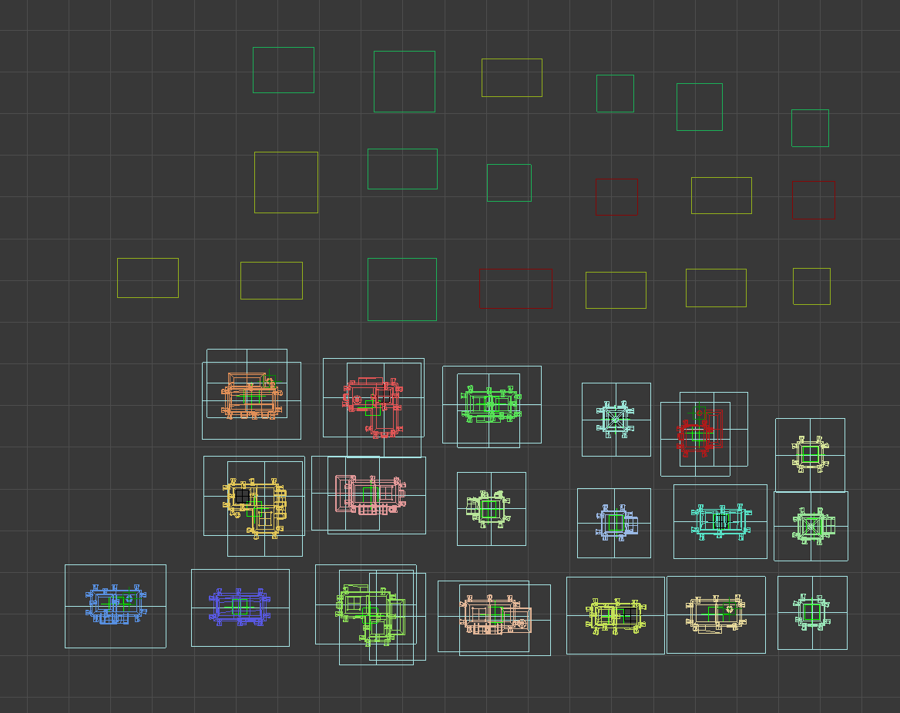
古代砖城市填充物（底部）和相应的边界框（顶部）
在每个城市设置的 .max 文件中，选择填充物建筑并运行 Edited Bounding Box 脚本，为每个填充物创建相应的边界框网格。可以在此处找到一个方便的 Maxscript：
N:\2KGBAL\Users\tbergantz\Todd Tools Maxscripts\TranslatedBoundingBox_EDIT_DB.mcr。这将在 3DS Max 的 Customize User Interface 面板中显示为“Edited Bounding Box”命令。安装后，可以通过热键或作为工具栏按钮来触发。
将这些边界框移到一边，并为它们创建一个名为“BB”的图层。
| 确保使用“取消关联选择”（ | ）按钮，以解除与导出模型的任何关联，并从文明6模型管理器中删除边界框模型（它们的前缀都以“UBX_”开头）。 |
评估所有的边界框，并注意其中主轴与大多数边界框不一致的情况。给定城市设置中的所有填充物都需要将其长轴与其他填充物保持相同的方向。如果有任何不一致的情况，旋转填充物建筑（以及其贴花），确保任何受影响的部分都进行 Xforms 重置，并重复该过程以捕获边界框。
按大小对边界框进行排序，理想情况下将它们分成四个或更少的组。任何两侧尺寸都小于 45 最大单位的填充物将自动由引擎填充到该尺寸，并应该分组在一起。任何组中都不应只有一个填充物建筑。
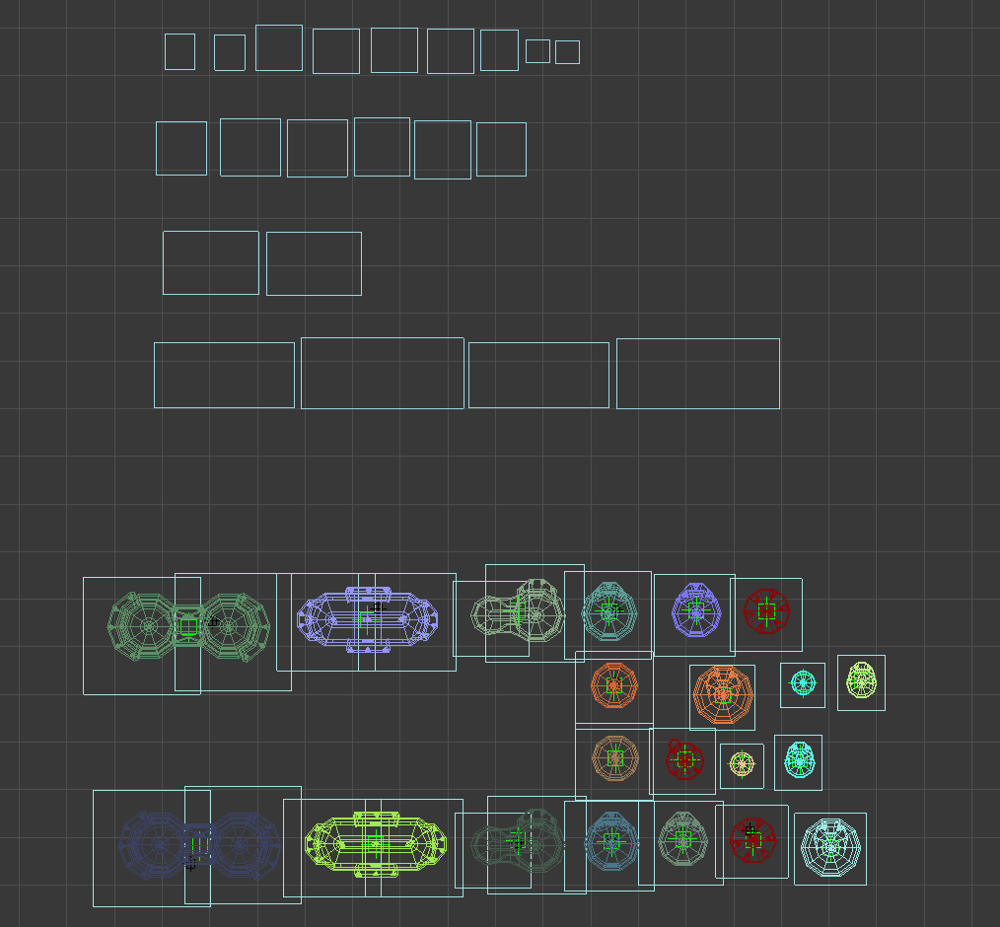
古代地球填充物（底部）和排序后的边界框（顶部）
一旦将边界框按照各自的组进行排序，记录每个类别的内容（请参考下面的核心游戏城市设置图表）。重新导入任何为了保持一致性而旋转的填充物，不要忘记更新贴花。
在资产编辑器(Asset Editor)中打开该设置的每个填充物。在 Cook Parameters 选项卡中，将 BlockShape 值设置为该组的相应编号，从 Filler_0 开始。实际的组编号并不重要，只要为组的分配正确即可。
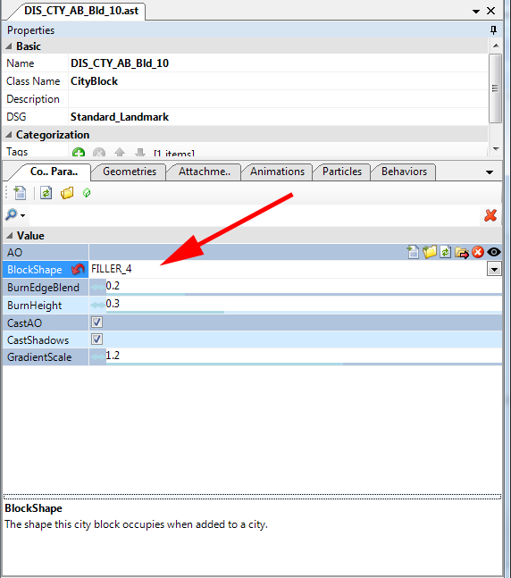
一个设置为填充物 ID 4 的古代砖填充物建筑
保存 .ast 文件，进行游戏封装，验证是否没有断言错误，然后完成。
常见问题解答
问：为什么我要再次进行这个步骤？
答：与 Ted 谈谈。
问：如何知道我是否正确设置了填充物 ID？
答：与 Ted 谈谈。
问：有人会欣赏在城市上进行这个额外的工作步骤吗？
答：与 Ted 谈谈。
问：如果 Ted 离开项目，我应该找谁讨论这个问题？
答：除非 Ted 被解雇和/或去世，否则与 Ted 谈谈。
如果你无法让 Ted 出来回答问题，尝试用零食引诱他。
与此同时，以下是基础游戏的分配供参考：
| DIS_CTY_AB_Base | Filler_0: | Filler_1: | Filler_2: | Filler_4 (skipped 3): |
|---|---|---|---|---|
DIS_CTY_AB_Bld_01* DIS_CTY_AB_Bld_03 DIS_CTY_AB_Bld_04* DIS_CTY_AB_Bld_05 DIS_CTY_AB_Bld_08 DIS_CTY_AB_Bld_11 DIS_CTY_AB_Bld_18 |
DIS_CTY_AB_Bld_12 DIS_CTY_AB_Bld_13 DIS_CTY_AB_Bld_14 DIS_CTY_AB_Bld_15 DIS_CTY_AB_Bld_16 DIS_CTY_AB_Bld_19 |
DIS_CTY_AB_Bld_02 DIS_CTY_AB_Bld_09* DIS_CTY_AB_Bld_07 |
DIS_CTY_AB_Bld_06 DIS_CTY_AB_Bld_10 DIS_CTY_AB_Bld_17 |
| DIS_CTY_AE_CityLayout - 21 | Filler_0: | Filler_1: | Filler_2: | Filler_3: |
|---|---|---|---|---|
DIS_CTY_AE_Bld_Cabana_A_01 DIS_CTY_AE_Bld_Cabana_B_01 DIS_CTY_AE_Bld_SM_A_03 DIS_CTY_AE_Bld_SM_B_03 DIS_CTY_AE_Bld_Well_01 DIS_CTY_AE_Bld_XSM_A_01 DIS_CTY_AE_Bld_XSM_A_02 DIS_CTY_AE_Bld_XSM_B_01 DIS_CTY_AE_Bld_XSM_B_02 |
DIS_CTY_AE_Bld_SM_A_01 DIS_CTY_AE_Bld_SM_A_02 DIS_CTY_AE_Bld_SM_B_01 DIS_CTY_AE_Bld_SM_B_02 DIS_CTY_AE_Bld_Tower_A_01 DIS_CTY_AE_Bld_Tower_B_01 |
DIS_CTY_AE_Bld_MD_A_01 DIS_CTY_AE_Bld_MD_B_01 |
DIS_CTY_AE_Bld_LG_A_01 DIS_CTY_AE_Bld_LG_B_01 DIS_CTY_AE_Bld_MD_A_02 DIS_CTY_AE_Bld_MD_B_02 |
| DIS_CTY_AW_Base - 22 | Filler_0: | Filler_1: | Filler_2: | Filler_3: |
|---|---|---|---|---|
DIS_CTY_AW_Bld_A_11 DIS_CTY_AW_Bld_B_07 |
DIS_CTY_AW_Bld_A_02 DIS_CTY_AW_Bld_A_05 DIS_CTY_AW_Bld_A_06 DIS_CTY_AW_Bld_A_07 DIS_CTY_AW_Bld_A_10 DIS_CTY_AW_Bld_B_01 DIS_CTY_AW_Bld_B_02 DIS_CTY_AW_Bld_B_05 DIS_CTY_AW_Bld_B_06 DIS_CTY_AW_Bld_B_09 |
DIS_CTY_AW_Bld_A_01 DIS_CTY_AW_Bld_A_03 DIS_CTY_AW_Bld_A_09 DIS_CTY_AW_Bld_B_08 DIS_CTY_AW_Bld_B_10 DIS_CTY_AW_Bld_B_11 |
DIS_CTY_AW_Bld_A_04 DIS_CTY_AW_Bld_A_08 DIS_CTY_AW_Bld_B_03 DIS_CTY_AW_Bld_B_04 |
| DIS_CTY_RNA_Base - 12 | Filler_0: | Filler_1: | Filler_2: | Filler_3: |
|---|---|---|---|---|
DIS_CTY_RNA_Bld_01 DIS_CTY_RNA_Bld_09 DIS_CTY_RNA_Bld_10 DIS_CTY_RNA_Bld_17 |
DIS_CTY_RNA_Bld_11 DIS_CTY_RNA_Bld_12 |
DIS_CTY_RNA_Bld_23 DIS_CTY_RNA_Bld_24 |
DIS_CTY_RNA_Bld_13 DIS_CTY_RNA_Bld_21 DIS_CTY_RNA_Bld_22 DIS_CTY_RNA_Bld_25 |
| DIS_CTY_RMED_Base - 16 | Filler_0: | Filler_1: | Filler_2: | Filler_3: |
|---|---|---|---|---|
DIS_CTY_RMED_Bld_01 DIS_CTY_RMED_Bld_02 DIS_CTY_RMED_Bld_09 |
DIS_CTY_RMED_Bld_04 DIS_CTY_RMED_Bld_07 DIS_CTY_RMED_Bld_013 DIS_CTY_RMED_Bld_014 DIS_CTY_RMED_Bld_016 |
DIS_CTY_RMED_Bld_03 DIS_CTY_RMED_Bld_05 DIS_CTY_RMED_Bld_010 DIS_CTY_RMED_Bld_012 DIS_CTY_RMED_Bld_015 |
DIS_CTY_RMED_Bld_06 DIS_CTY_RMED_Bld_08 DIS_CTY_RMED_Bld_011 |
| DIS_CTY_RM_Pieces - 22 | Filler_0: | Filler_1: | Filler_2: | Filler_3: |
|---|---|---|---|---|
DIS_CTY_RMUG_Bld03 DIS_CTY_RMUG_Bld09 DIS_CTY_RMUG_Bld10 DIS_CTY_RMUG_Bld13 DIS_CTY_RMUG_Bld14 DIS_CTY_RMUG_Bld17 DIS_CTY_RMUG_Bld18 |
DIS_CTY_RMUG_Bld01 DIS_CTY_RMUG_Bld02 DIS_CTY_RMUG_Bld04 DIS_CTY_RMUG_Bld05 DIS_CTY_RMUG_Bld12 DIS_CTY_RMUG_Bld15 DIS_CTY_RMUG_Bld19 DIS_CTY_RMUG_Bld20 DIS_CTY_RMUG_Bld21 |
DIS_CTY_RMUG_Bld06 DIS_CTY_RMUG_Bld08 DIS_CTY_RMUG_Bld11 DIS_CTY_RMUG_Bld16 |
DIS_CTY_RMUG_Bld07 DIS_CTY_RMUG_Bld22 |
| DIS_CTY_RSA_Base - 23 | Filler_0: | Filler_1: | Filler_2: | Filler_3: | Filler_4: | Filler_5: |
|---|---|---|---|---|---|---|
DIS_CTY_RSA_Bld_04 DIS_CTY_RSA_Bld_22 |
DIS_CTY_RSA_Bld_03 DIS_CTY_RSA_Bld_05 DIS_CTY_RSA_Bld_11 DIS_CTY_RSA_Bld_19 |
DIS_CTY_RSA_Bld_01 DIS_CTY_RSA_Bld_06 DIS_CTY_RSA_Bld_13 DIS_CTY_RSA_Bld_18 DIS_CTY_RSA_Bld_21 DIS_CTY_RSA_Bld_23 |
DIS_CTY_RSA_Bld_02 DIS_CTY_RSA_Bld_09 DIS_CTY_RSA_Bld_14 |
DIS_CTY_RSA_Bld_07 DIS_CTY_RSA_Bld_10 DIS_CTY_RSA_Bld_15 DIS_CTY_RSA_Bld_16 DIS_CTY_RSA_Bld_20 |
DIS_CTY_RSA_Bld_08 DIS_CTY_RSA_Bld_12 DIS_CTY_RSA_Bld_17 |
| DIS_CTY_RE_Base - 42 | Filler_0: | Filler_1: | Filler_2: | Filler_3: |
|---|---|---|---|---|
DIS_CTY_RE_Bld_Brick_Tower_B_01 DIS_CTY_RE_Bld_Brick_Tower_B_02 DIS_CTY_RE_Bld_Brick_Tower_B_03 DIS_CTY_RE_Bld_Brick_Tower_B_04 DIS_CTY_RE_Bld_Brick_Tower_B_05 DIS_CTY_RE_Bld_Brick_Tower_B_06 DIS_CTY_RE_Bld_Tower_B_01 DIS_CTY_RE_Bld_Tower_B_02 DIS_CTY_RE_Bld_Tower_B_03 DIS_CTY_RE_Bld_XSM_A_01 DIS_CTY_RE_Bld_XSM_A_02 DIS_CTY_RE_Bld_XSM_B_01 DIS_CTY_RE_Bld_XSM_B_02 |
DIS_CTY_RE_Bld_Brick_Tower_B_7 DIS_CTY_RE_Bld_Brick_Tower_B_8 DIS_CTY_RE_Bld_MD_A_01 DIS_CTY_RE_Bld_MD_A_02 DIS_CTY_RE_Bld_MD_B_03 DIS_CTY_RE_Bld_MD_B_04 DIS_CTY_RE_Bld_Tower_B_04 |
DIS_CTY_RE_Bld_MD_A_03 DIS_CTY_RE_Bld_MD_A_04 DIS_CTY_RE_Bld_MD_A_011 DIS_CTY_RE_Bld_MD_A_024 DIS_CTY_RE_Bld_MD_B_01 DIS_CTY_RE_Bld_MD_B_02 DIS_CTY_RE_Bld_SM_A_01 DIS_CTY_RE_Bld_SM_A_02 DIS_CTY_RE_Bld_SM_B_01 DIS_CTY_RE_Bld_SM_B_02 |
DIS_CTY_RE_Bld_LG_A_01 DIS_CTY_RE_Bld_LG_A_02 DIS_CTY_RE_Bld_LG_A_03 DIS_CTY_RE_Bld_LG_A_04 DIS_CTY_RE_Bld_LG_A_05 DIS_CTY_RE_Bld_LG_A_06 DIS_CTY_RE_Bld_LG_B_01 DIS_CTY_RE_Bld_LG_B_02 DIS_CTY_RE_Bld_LG_B_03 DIS_CTY_RE_Bld_LG_B_04 DIS_CTY_RE_Bld_LG_B_05 DIS_CTY_RE_Bld_LG_B_06 |
| DIS_CTY_RJ_Base - 16 | Filler_0: | Filler_1: | Filler_2: | Filler_3: |
|---|---|---|---|---|
DIS_CTY_RJ_Bld_01 DIS_CTY_RJ_Bld_02 DIS_CTY_RJ_Bld_04 DIS_CTY_RJ_Bld_12 DIS_CTY_RJ_Bld_16 |
DIS_CTY_RJ_Bld_06 DIS_CTY_RJ_Bld_10 DIS_CTY_RJ_Bld_11 DIS_CTY_RJ_Bld_14 |
DIS_CTY_RJ_Bld_05 DIS_CTY_RJ_Bld_09 DIS_CTY_RJ_Bld_15 |
DIS_CTY_RJ_Bld_03 DIS_CTY_RJ_Bld_07 DIS_CTY_RJ_Bld_08 DIS_CTY_RJ_Bld_13 |
| DIS_CTY_RC_Base - 16 | Filler_0: | Filler_1: | Filler_3 (skipped 2): | Filler_4: |
|---|---|---|---|---|
DIS_CTY_RC_Bld_04 DIS_CTY_RC_Bld_07 DIS_CTY_RC_Bld_12 DIS_CTY_RC_Bld_13 DIS_CTY_RC_Bld_16 |
DIS_CTY_RC_Bld_01 DIS_CTY_RC_Bld_03 DIS_CTY_RC_Bld_11 DIS_CTY_RC_Bld_14 |
DIS_CTY_RC_Bld_05 DIS_CTY_RC_Bld_15 DIS_CTY_RC_Bld_02 |
DIS_CTY_RC_Bld_06 DIS_CTY_RC_Bld_08 DIS_CTY_RC_Bld_09 DIS_CTY_RC_Bld_10* |
| DIS_CTY_RSS_CityLayout - 27 | Filler_0: | Filler_1: | Filler_2: | Filler_3: |
|---|---|---|---|---|
DIS_CTY_RSS_Bld_01 DIS_CTY_RSS_Bld_02 DIS_CTY_RSS_Bld_12 DIS_CTY_RSS_Bld_13 DIS_CTY_RSS_Bld_14 DIS_CTY_RSS_Bld_23 DIS_CTY_RSS_Bld_24 DIS_CTY_RSS_Bld_26 |
DIS_CTY_RSS_Bld_04 DIS_CTY_RSS_Bld_07 DIS_CTY_RSS_Bld_08 DIS_CTY_RSS_Bld_10 DIS_CTY_RSS_Bld_18 DIS_CTY_RSS_Bld_19 DIS_CTY_RSS_Bld_21 |
DIS_CTY_RSS_Bld_03 DIS_CTY_RSS_Bld_06 DIS_CTY_RSS_Bld_09 DIS_CTY_RSS_Bld_15 DIS_CTY_RSS_Bld_17 DIS_CTY_RSS_Bld_20 DIS_CTY_RSS_Bld_25 DIS_CTY_RSS_Bld_27 |
DIS_CTY_RSS_Bld_05 DIS_CTY_RSS_Bld_11 DIS_CTY_RSS_Bld_16 DIS_CTY_RSS_Bld_22 |
| DIS_CTY_INDCL_Base - 9 | Filler_0: | Filler_1: | Filler_2: | |
|---|---|---|---|---|
| DIS_CTY_INDCL_Bld_07 | DIS_CTY_INDCL_Bld_01 DIS_CTY_INDCL_Bld_04 DIS_CTY_INDCL_Bld_05 DIS_CTY_INDCL_Bld_06 DIS_CTY_INDCL_Bld_09 |
DIS_CTY_INDCL_Bld_02 DIS_CTY_INDCL_Bld_03 DIS_CTY_INDCL_Bld_08 |
| DIS_CTY_IC_Base - 18 | Filler_0: | Filler_1: | Filler_2: | Filler_3: |
|---|---|---|---|---|
DIS_CTY_IU_Bld_Tall_04 DIS_CTY_IU_Bld_Tall_06 DIS_CTY_IU_Bld_Tall_07 DIS_CTY_IU_Bld_Tall_08 DIS_CTY_IU_Bld_Tall_09 DIS_CTY_IU_Bld_Tall_12 DIS_CTY_IU_Bld_Tall_13 DIS_CTY_IU_Bld_Tall_14 DIS_CTY_IU_Bld_Tall_15 DIS_CTY_IU_Bld_Tall_16 DIS_CTY_IU_Bld_Tall_18 |
DIS_CTY_IU_Bld_Tall_01 DIS_CTY_IU_Bld_Tall_03 DIS_CTY_IU_Bld_Tall_05 DIS_CTY_IU_Bld_Tall_11 |
DIS_CTY_IU_Bld_Tall_10 DIS_CTY_IU_Bld_Tall_17 |
DIS_CTY_IU_Bld_Tall_02 |
| DIS_CTY_MG_Base - 19 | Filler_0: | Filler_1: | Filler_2: | Filler_3: |
|---|---|---|---|---|
DIS_CTY_MG_Bld_01 DIS_CTY_MG_Bld_03 DIS_CTY_MG_Bld_05 DIS_CTY_MG_Bld_06 DIS_CTY_MG_Bld_10 DIS_CTY_MG_Bld_11 DIS_CTY_MGG_Bld_03 DIS_CTY_MGG_Bld_04 DIS_CTY_MGG_Bld_07 DIS_CTY_MGG_Bld_08 |
DIS_CTY_MG_Bld_04 DIS_CTY_MG_Bld_07 DIS_CTY_MG_Bld_08 DIS_CTY_MGG_Bld_02 |
DIS_CTY_MG_Bld_02 DIS_CTY_MG_Bld_09 DIS_CTY_MGG_Bld_05 |
DIS_CTY_MG_Bld_12 DIS_CTY_MGG_Bld_01 |
建筑命名规范和尺寸
星期四，2015年5月7日
上午11:21
命名规范
适用于所有区域和城市：
DIS_CTY_XX_Base 是用于 max 文件、max 文件材质设置、游戏内材质和纹理的基础，其中 XX 对应时代和文化（例如，DIS_CTY_AW_Base 代表古代木材，DIS_CTY_RE_Base 代表文艺复兴欧洲）
Max 文件应命名为 DIS_CTY_XX_Base.max
模型可以去掉“base”，因为它们更具体。
方块网格应命名为：
Rectangular
DIS_CTY_XX_Block_REC_01
DIS_CTY_XX_Block_REC_02
DIS_CTY_XX_Block_REC_03
Large Square
DIS_CTY_XX_Block_LG_SQ_01
DIS_CTY_XX_Block_LG_SQ_02
DIS_CTY_XX_Block_LG_SQ_03
Small Square
DIS_CTY_XX_Block_SQ_01
DIS_CTY_XX_Block_SQ_02
DIS_CTY_XX_Block_SQ_03
Wedge Right
DIS_CTY_XX_Block_WR_01
DIS_CTY_XX_Block_WR_02
DIS_CTY_XX_Block_WR_03
Triangle Right
DIS_CTY_XX_Block_TR_01
DIS_CTY_XX_Block_TR_02
DIS_CTY_XX_Block_TR_03
Individual meshes (examples) should be named:
DIS_CTY_AE_Bld_01
DIS_CTY_AE_Bld_02
DIS_CTY_AE_Bld_03
Main Textures would be:
DIS_CTY_XX_Base_B (basecolor)
DIS_CTY_XX_Base_A (ambient occulsion)*
DIS_CTY_XX_Base_O (opacity)
DIS_CTY_XX_Base_N (normal)
DIS_CTY_XX_Base_G (gloss)
DIS_CTY_XX_Base_M (metalness)
DIS_CTY_XX_Base_E (emissive)
DIS_CTY_XX_Base_L (lightmaps)
DIS_CTY_XX_Base_T (tintmaps)
*环境光遮蔽可以应用于单个材质级别或资产级别。对于任何使用多个材质的资产（例如城市区块），您将希望在资产的封装参数级别使用环境光遮蔽，它会覆盖材质的环境光遮蔽。
请注意，在单个建筑物（仅有一个材质）的 DIS_CTY_RMED_Base 材质中使用了 AO 贴图。
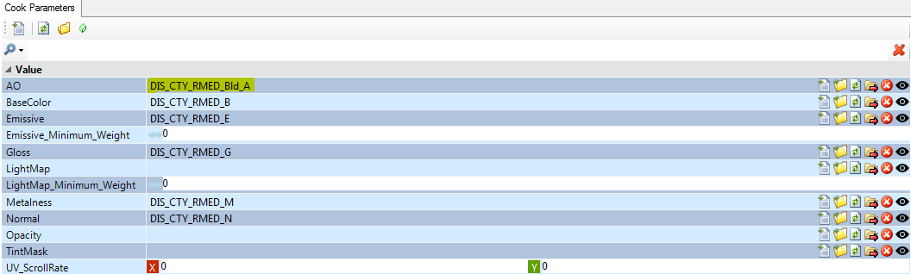
对于由于存在多个材质而使用的方块，应在资产的封装参数级别使用环境光遮蔽。
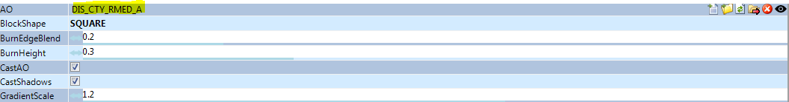
奇观和改进应遵循类似的规则，只需更换 DIS_CTY 部分。例如，WON_Great_Library.*
*奇观还有一个用于动画状态的附加文件，应命名类似于在末尾添加“Wonder_Movie”。例如，WON_Great_Library_Wonder_Movie.max
区域使用 DIS，然后是一个三个字母的命名规范，用于标识实际区域。例如：
DIS_CMP（校园）
DIS_ENC（营地）
纹理尺寸
这些是基本的纹理尺寸，根据烘焙的资产数量可能会有所变化。
城市
1024x512 – 基础颜色、法线、金属度、光泽度、不透明度
1024x1024 – 城市区块环境光遮蔽
512x512 – 建筑（单个）环境光遮蔽
512x512 – 光照图
256x256 – 自发光
512x512（Max）– 基础颜色、法线、金属度、光泽度（基础部分）
256x256 – 宫殿环境光遮蔽
区域
1024x1024 – 基础颜色、法线、金属度、光泽度、不透明度
1024x1024 – 环境光遮蔽
512x512 – 光照图
256x256 – 自发光
改进
1024x512 – 基础颜色、法线、金属度、光泽度、不透明度
512x512 – 环境光遮蔽
512x512 – 光照图
256x256 – 自发光
奇观
1024x1024 – 基础颜色、法线、金属度、光泽度、不透明度
1024x1024 – 环境光遮蔽
1024x1024 – 基础颜色、法线、金属度、光泽度、不透明度（建筑道具/共享）
1024x512 – 基础颜色、法线、金属度、光泽度、不透明度（砖块/共享）
512x512 – 光照图
256x256 – 自发光
P4 文件夹结构
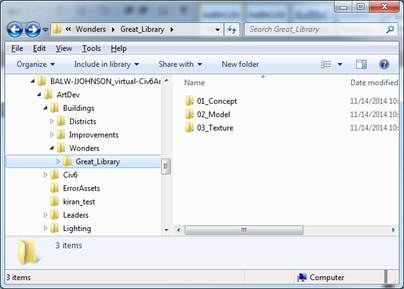
01_Concept（概念）
• 根文件夹是最终（经批准的）概念的存放位置。
• 还有一个“InProgress（进行中）”子文件夹，用于存放PSD文件、概念性的死胡同、缩略图等。
• 这个文件夹还可以展示反馈模型、情绪板和外部承包商启动信息。
02_Model（模型）
• 根文件夹是最终版本或最新版本的max文件的存放位置。
• 还有一个“InProgress（进行中）”子文件夹，您可以将所有工作文件或其他与建模相关的文件放在其中。
03_Texture（纹理）
• “PSDs（PSD文件）”文件夹是您可以存储主要PSD文件的位置。
• 根文件夹将包含导出的最终.tga文件。
夜晚/镜头照明
2016年8月3日，星期三
下午4:59
本页面详细介绍了设置模型以用于夜间或特殊镜头使用的过程。在大多数情况下，建筑物只使用自发光贴图，但某些资产（特别是奇观）可以通过光照贴图来增强效果，可以替代自发光或与之结合使用。另外，分析性照明系统也可以被节制地用于照明资产。
资产UV的结构
游戏中的建筑资产使用2-3个UV通道，具体取决于它们对光照的需求。
本示例使用来自//civ6/main/ArtDev/Buildings/Improvements/Chateau/02_Model/IMP_Chateau.max的IMP_Chateau_Main模型。
游戏中的Chateau资产，应用了自发光和动态光照
| UV通道1 - 这是处理基础颜色、金属度、光泽度、法线等的基础艺术通道。 | UV通道2 - 这个通道主要用于环境遮挡（AO），但如果资产需要光照贴图，光照贴图也会使用UV2。 | UV通道3 - 这个通道仅用于自发光贴图。 如果模型需要使用自发光进行照明，它才应该具有UV3。 。 |
|---|---|---|
| Chateau - 在Basecolor纹理上的UV1 | Chateau - 在AO纹理上的UV2 | Chateau - 在自发光纹理上的UV3 |
 |
||
| Chateau - 编辑视图：正常的白天 | Chateau - 编辑视图：AO白天 | Chateau - 编辑视图：启用自发光的夜晚 |
 |
在3DS Max中，您可以通过Tools>Channel Info("工具" > "通道信息")来查看模型或模型组的通道信息。
IMP_Chateau_Main的Map通道信息对话框
为了使游戏中的资产显示自发光效果，几何体必须具有三个UV通道。我们的编辑器不理解UV通道的编号，只理解数量。如果一个资产只有UV1和UV3，自发光将无法在编辑器或游戏中正常工作，因为它会被解释为UV1和UV2。
尽管某个资产未经过自发光处理或根本不需要自发光，但遇到具有所有三个通道的资产并不罕见。这将导致整个资产像应用了自发光棋盘图案一样发光，因为在3DS Max中，添加通道的默认UV布局是一个大小可变的自上而下投影：
显示IMP_Chateau_Main默认UV3的图像
如果您遇到一个不应该具有材质照明的资产，您可以通过上述对话框右键单击通道并选择"清除"来清除第3个Map通道：
显示Map通道信息右键单击选项的图像
这样做后，将在修改器堆栈中添加一个UVW映射清除修改器(**UVW Mapping Clear** modifier)。折叠堆栈以解决此问题，或删除修改器以恢复通道信息。
自发光Emissive
仅使用自发光照明的资产示例
自发光贴图的主要目标是在结构上提供室内照明的效果。自发光还可以用于伪造投射光照的外观，扮演光照贴图的角色，从而节省纹理内存。然而，自发光纹理在视觉上会覆盖基础颜色纹理，因此在使用自发光进行伪造投射光照时应该有所限制。
在给定资产中，为一个或多个模型设置使用自发光映射的方式因资产类型而异，但一般的步骤是相同的：
-
选择在给定文件中需要自发光并共享材质的模型或模型
-
在这些模型上设置UV通道3，将需要自发光照明的面孔隔离出来，将非照明面孔隔离到左上角像素
-
将结果UV3通道的基础颜色烘焙到参考图像中
-
选择适当尺寸的自发光模板文件，并添加参考图像
-
使用模板文件中的图层蒙版来定义和详细说明自发光图像
这些步骤将在本节后面详细描述。
资产的类型将在很大程度上决定自发光纹理的焦点：
改进和区域：在Max文件中选择应该接受自发光处理的模型或模型。隔离这些模型，并在Max和资产编辑器(Asset Editor)中评估它们的材质使用情况。理想情况下，它们都应该共享相同的材质，但在区域中，从一个文件共享模型到另一个文件是常见的。您需要确保自发光纹理仅应用于给定场景中使用的材质，否则其他资产上可能会发生意外的照明。
示例：娱乐区的自发光模型集。尽管在.max文件中有18种不同的瓷砖基础布局和近3000个零件，但只有这12个模型需要共享自发光UV布局。
城市：城市要求所有建筑部件（不包括基础或地板板块）、填充建筑和相关的宫殿都包含在共享的UV3布局中。即使宫殿使用了独特的纹理集，这一点也是正确的。由于使用了大量的几何体，尤其是在古代建筑中，有时需要分组处理UV。这最容易分解为自发光纹理布局的四个象限。
示例：文艺复兴/中国人口建筑集 - 所有显示的部件，包括宫殿，共享一个自发光纹理和UV布局。
奇迹：奇迹通常只需要处理一个模型的自发光。这个模型不是从单独的模型目录中提取的，而是从奇迹电影的最后一帧中提取的。这是因为奇迹模型在剪辑电影的过程中经常发生变化，因此需要不同的UV1/UV2变化来适应这些剪辑。需要与奇迹电影的艺术家（目前是Rambo）合作，确保通过该奇迹电影文件提供一个单独的、优化的模型（或带附件的主模型）。一旦选择了最终的电影组件，创建自发光的过程是相同的，但通常不会进行更多的面共享（见下文），因为奇迹是在游戏中近距离展示的模型。
示例：莫斯科大剧院的最终帧模型和自发光纹理布局
详细过程：
选择需要自发光并共享材质的给定文件中的模型
如上所述，第一步是确定你正在处理的.max文件中哪些模型需要接收自发光。除了古代建筑外，这通常是一个直接的选择，因为你要寻找的是窗户、敞开的门以及模型中代表光源（灯柱、灯笼等）的部分。开放的拱门、显著的嵌入细节，甚至是在不使用光照贴图的情况下添加投射光的机会也是可选的。后者尤其重要，因为自发光贴图往往比光照贴图更便宜，应该节约使用。最昂贵的设置是同时具有自发光和光照贴图的模型，仅保留给少数必要的区域和奇迹。
我们以DIS_AQD_Base_Bath模型为例，逐步介绍整个过程。该模型的最终结果具有窗户细节、凹陷的拱门和虚拟的投射效果：

启用3DS Max中DIS_AQD_Base_Bath模型的复合自发光网格
在这些模型上设置UV通道3，将需要自发光照明的面隔离，将非照明面隔离到左上角像素
确定哪些模型需要自发光后，需要将每个模型的照亮面放置在共享的UV布局中。在Max视口中选择这些模型后，对它们应用共享的Unwrap UVW。Unwrap UVW默认使用映射通道1。在修改面板的展开UVW选项中，将映射通道值设置为3，然后选择弹出的通道更改警告对话框中的“移动”。实际上，“移动”将从当前通道（1）复制UV信息到新通道（3）。

示例：两个选择的模型，使用共享的Unwrap UVW设置为通道3
完成这一步后，打开UV编辑器，将使用UV1布局作为起点。通常可以使用基础颜色纹理来定位和选择需要自发光的开口。这种方法创建了自发光面的初始组，并有助于定位隐藏的几何体或部分剪裁的细节，你不希望它们发光。如果存在重叠的情况，或者你有意照亮一个非开口的区域，可能需要手动选择面。
一般规则是避免将自发光应用于显示模型纹理错误的面 - 被切成两半的窗户、具有极端UV扭曲的区域等。这也是评估模型几何和查找错误和优化的好机会。
水渠区的两个组成部分都将使用自发光。通过纹理布局选择了浴室的窗户开口和两个结构的拱门，因此捕捉到了所有这些开口的实例。此外，还选择了浴室开口的地板、墙壁和内部柱面作为虚拟投射光的区域。
在确定了要照亮的面后，反选你的选择，将这些面分离以打破可能的共享顶点或边，并将非照亮区域暂时移出0-1空间。最好在UV布局完成之前不要保留这些部分的当前比例，以防你错过了某个面或决定要照亮其他区域。
对于照亮区域，你的目标是在最大化UV空间的同时提供多样性的选择。针对每种类型的开口或区域，评估面的使用频率以及是否有多个面在相邻的区域使用。如果某个区域使用不频繁，那么在UV布局中只需要一个实例可能就足够了。特别是对于窗户，将一个区域分成三个或更多组是有益的，这样同一个照亮的窗户就不会与自身并排。给定组可以分割的次数将取决于你有多少其他元素需要在UV布局中放置，而不浪费纹理空间。
选择了具有小拱窗的墙壁的三个部分之一，显示了该部分UV布局中活动的面。
确定了给定模型所需的组数后，按照正常方式打包UV，确保在角落留有一些缓冲空间。在某些情况下，特别是当模型具有塔楼，窗户仅位于矩形UV元素的顶部时，可以重叠UV岛以节省空间。对于计划伪造投射光的区域，你可能会发现将其离散地展开以便在纹理中叠加漫反射细节效果更好。
*所有未接收自发光照明的面都缩小到一个像素的大小（可能有一些偏差），并放置在UV布局的左上角。在下面的屏幕截图中，左上角的小绿色像素代表了两个模型的所有未选择面。不要跳过这一步，并确保在UV布局的每个角落都有足够的空隙。
完成UV布局后，将所有受影响的模型合并。

展示了水渠区模型的最终UV3展开图。请注意，开放的拱门和窗户部分被分成三个组，前门墙壁和地面被离散地展开，考虑到它们的照明效果。此图像显示了在展开UVW对话框中可见的烘焙基础颜色参考。
将结果UV3通道的基础颜色烘焙为参考图像。
完成UV3布局后，选择所有受影响的模型并克隆它们，将生成的副本移动到一侧。将这些复制的网格合并为一个模型。将结果模型重命名为"[资产名称]_Emissive"（例如DIS_AQD_Emissive）。将新模型添加到名为"Emissive"的单独图层中。
在进行其他操作之前，执行以下两个步骤：
-
取消关联几何体，以防止它与任何导出模型相关联
-
打开Civ6模型管理器，并从要导出的对象列表中移除发光模型。
这样做既备份了步骤1，也确保在资产编辑器(Asset Editor)中引入新几何体时实体不可见。
![Machine generated alternative text: Firaxis Model Manager Objects In Scene Tower Tower Tower Tower Tower Decal Decal Mesh Mesh p IL PIL Objects To Export AQD wall 0B bathhfire aox002 aox003 aox004 aoxoos Patch Pat&1001 Pat&1002 Pat&1003 Pat&1004 Pat&oos Pat&1006 Patch007 Pat&1008 Patch Sm Pat&l smool Pat&l sm002 Pat&l sm003 Patch Sm004 Clear List Advanced Selected Object Emissiv e Export as Bone Use Granny Tangents o o o o o o o o o o o o o o o o o o o o o o o o o DIS DIS DIS DIS DIS DIS DIS DIS DIS DIS DIS DIS DIS DIS DIS DIS DIS DIS DIS DIS DIS DIS DIS DIS DIS DIS AQD_ AQD_ AQD_ AQD_ AQD_ AQD_ AQD_ AQD_ AQD_ AQD_ AQD_ AQD_ AQD_ AQD_ AQD_ AQD_ AQD_ AQD_ AQD_ AQD_ AQD_ AQD_ _AQD_ AQD_ AQD_ AQD_ Base Base Base Base Base Base Base Base Base Base Base Base Base Base Base Base Base Base Base Base Base Base Cir de Cirde Cirde Cirde Cirde Cirde Cirde Cirde Cirde Cirde Cirde Cirde Cirde Cirde wallool Wall Decal wall Decal PIL Wall Mesh Wall Mesh PIL Decal Decal Decal Decal Decal Decal Decal Decal Decal Decal Decal Decal Decal Decal ANC ANC ANC ANC ANC ANC ANC ANC ANC ANC ANC ANC ANC ANC wall PIL Waterwheel Waterwheel Waterwheel W a terwh eel Waterwheel Waterwheel Waterwheel Waterwheel Waterwheel Waterwheel Waterwheel Anim Anim Reversed FX001 Mesh Mesh Reversed p IL Rev ersed Rot Bone Rot Sone Reversed Decal 01 01 Decal Granny Models in Export List DIS DIS DIS DIS Num. AQD aase Tower PIL AQD_aase aath CON AQD_aase Gate PIL AQD_aase wall PIL Classical Base 01 of Granny Models: 126 Classical Base 01 Classical Base 01 Constructon Base Constructon Base Auto-sync Selecton](BuildingsProcess/media/image86.png)
Once this complete, select the combined Emissive model and use Render to Texture to render the UV3's layout as a Basecolor reference texture.
![Machine generated alternative text: Render To Texture Output Path: D: Skip Existing Files Render Settings Netnork Render File Name DIS AQD Emissi... Output Element Name DiffrseMap 512x512 Dele te General Se tnngs AL W -TBERGANTZ2 Civ6-main t V Rendered Fr ame Window Setup... Sub-Object Channel Edge Padding Selected Element Common Settings V Enable Name: DiffseMa File Name and Type: DIS A D EmissiveDiffuseMa 0000 Target Map Slot: Elemen t Type: diffuseMap Elemen t Backgr ound: Use Automabc Map Size Objects to Bake Object and Output Settngs Preset: Name Name DIS AQD Emissive Selected Object Se tings V Enabled Projection Mapping Object Channel Obje... Padding: sub-o. Pick... Width: 512 Height: 512 128K 128 256x256 512x512 768768 1024x1024 2048x2048 Selected Element Linique Settings Ligh ting Shado Baked Ma terial Baked Material Settings • Output Into Source Save Source (Create Shell) Projection Modifier Object L Options... @ Put to Baked Material Put to Baked Material Ful Size Pr opor tonal Mapping Coor dina tes Update Baked Materials Render to Files Only ObJect: Sub-objects: • Use Existing Channel Use Automabc Unwrap use Existing Channel use Automatic unwrap Clear Unwrappers • All Selected Clear Shell Materials Keep Source Ma terials Keep Baked Ma terials Au toma tic Mapping Views Render Unwrap Only Close Original: Baked: All Prepared Render](BuildingsProcess/media/image87.png)
-
选择目标目录 - 这通常应该是与资产相关的03_Texture\PSDs文件夹。
-
添加一个漫反射贴图到输出。
-
选择渲染图像的尺寸。这里你需要决定发光贴图的大小。对于城市、大型奇观和复杂的行政区，可以从1024开始。对于其他所有情况，使用512x512或更小的尺寸，尤其是如果只涉及少量窗口。在基础游戏的艺术开发中有很多可用的参考资料供您参考。请记住，您将以比最终输出更大一倍的尺寸制作纹理。
-
在渲染之前选择“输出到源文件夹”。这将防止3DS Max创建一个外壳材质，从而改变目标模型上的材质分配。发光模型不会导出，但最好一开始就避免使用外壳材质。不幸的是，这个按钮选择不会保存在.max文件中，所以每次打开文件时都需要设置它，即使是重复渲染。
完成后，点击右下角的“渲染”按钮，将文件保存到PSDs文件夹中，如下所示：
DIS_AQD_EmissiveDiffuseMap.tga
选择合适尺寸的发光模板文件，并添加参考图像
发光纹理工作的一套模板存储在Perforce的以下位置：
//civ6/main/ArtDev/Buildings/Shared/EmissiveTemplates/
选择与UV3漫反射渲染匹配的尺寸，并将该文件以原始模型材质的名称和“_E”作为后缀保存在相关的PSDs文件夹中。例如，Aqueduct行政区的标准纹理的PSD文件名为“DIS_AQU_Base.psd”，那么您的发光文件将命名为“DIS_AQU_Base_E.psd”。
在背景图层上方添加了DIS_AQD_Emissive渲染的起始图层堆叠
每个模板都有预设的图层和图层蒙版，用于创建发光蒙版。每个图层的蒙版目前已经被占用，因此您可以切换图层以了解它们的工作原理。在开始工作之前，您需要将所有图层蒙版涂黑 - 选择每个蒙版并填充为0,0,0。
将渲染的UV3漫反射复制粘贴到背景图层上方，位于发光图层组之外。
使用模板文件中的图层蒙版来定义和细节发光图像
安装好UV3渲染后，关闭发光基础黑色图层，并从底部开始使用蒙版逐层堆叠：
-
基础橙色(Base Orange) - 这是最重要的层，因为该层的蒙版会被复制到堆栈中的大多数其他效果中。该蒙版定义了所有窗户和门的开口，以及拱门内或表面上的伪光的渐变。
-
颜色(Color) - 这个图层的名称有些误导，因为图层模式实际上是叠加模式。不过它被称为颜色，是因为您可以根据需要将发光颜色推向黄色或红色。这个图层定义了建筑物开口内的隐含照明效果。使用基础橙色图层的副本作为该图层的蒙版。
-
ANC红色叠加(ANC Red Overlay) - 这个图层的目的是将所有的发光颜色推向红色，适用于古代或古典（古典、文艺复兴、中世纪）时代引入的模型。该图层的强度应该是30%或更低 - 只需足够使其在游戏中呈现为“火焰”而不是“灯泡”。使用基础橙色图层的副本作为起点，但删除纹理中适用于游戏后期引入部分的任何特征。这在行政区或改进纹理中最常见，因为其中混合了各个时代的建筑物。对于现代建筑，可以将此图层更改为MOD颜色图层（见下文）。
-
乘法层(Multiply - aka) - 也称为“窗户中的猫”(cats in windows) - 这个图层是应用更多开口细节的地方。首先将基础橙色图层的蒙版复制到这个图层，然后通过按住Ctrl键并单击图层蒙版图标来选择蒙版。使用RGB值为255, 255, 255的前景填充两次，以在蒙版上添加填充。取消选择，并使用主要较暗的颜色在该图层上绘制RGB。不过，一些颜色斑点（绿色、蓝色等）也没有关系。目标是给人一种房间内的阴影、物品在框架上的剪影和深度的印象。
|
= |
使用乘法图层在一组窗户中调整强度和颜色的示例。
-
黑化 - 此图层可用于调整单个窗户/门口的值，以调整游戏中的发光强度。这不是必需的，但可以是进行粗略调整或纠正开口边缘上错误发光的简便方法。该图层不使用基础橙色图层的副本。相反，图层蒙版仅用于根据需要将图像涂黑。
在处理现代建筑的发光效果时，希望将窗户颜色推向浅蓝色，以模拟荧光灯或LED照明。为此，您需要更改ANC红色叠加图层的颜色（如果不需要该图层），或者创建一个新图层。MODern蓝色的标准颜色为217, 226, 224，混合模式应设置为颜色。图层的不透明度通常约为40%，具体取决于对象。
一旦发光PSD准备好进行实施，将其保存为TGA格式的副本，并放置在03_Texture文件夹中。除了复杂的城市和少数奇迹之外，将此TGA的尺寸缩小为主PSD的50%（例如，如果PSD是1024x1024，则TGA应为512x512）。重要的是始终缩小TGA而不是PSD，因为缩小PSD然后保存会导致纹理周围的像素颜色发生变化，这会导致本应为黑色的区域添加颜色。由于模型的未照明部分位于左上角，如果以错误的顺序缩小纹理尺寸，它们将呈现出部分发光的效果。
在3DS Max中显示发光纹理
要在.max文件中的受影响模型上显示发光纹理，您需要设置一个复合材质（Composite map）。您可以复制原始材质或将复合材质添加到现有材质中。
如果复制材质，请在材质名称后添加“_COMP”，以明确表示它是用于特殊用途的材质，并在导出之前不要忘记重新应用原始材质。
如果使用现有材质，请在保存文件供其他用户使用之前关闭复合图层（见下文）。
![Machine generated alternative text: Material Editor -DIS CTY AB Modes Material Navigation Options Utilities ÜQQQQ DIS CTY AB Base Shader Basic Parameters Wir e Face Map alinn Basic Parameters Sel f-lllumina bon Color Opacity: 100 Standard 2-sided Face ted Ambient: Specular Highlights Specular Level: GIO ssiness: Soften: 0.1 Extended Paramete ; Super Sampling Amount Ambient Color . . 100 V Diffise Color . . 75 (DIS CTY AE aase_a.tga) . 100 Specular Color . 100 Specular Level . 100 Glossiness Self-Illumina bon . 100](BuildingsProcess/media/image92.png) |
|
![Machine generated alternative text: Material/Map Browser Search by Name - 16Grids.mat Diffuse Color: Map #1078 (16grid 1024x512.tga) Diffuse Color: Map #1077 (16grid 512x2 Topaottom.tga) Diffuse Color: Map #1077 (16grid 1024x2.tga) - Maps - Standard Camera Map Per Pixel Cellular Checker IorCorrection mbustion mposite Dent Falloff Flat Mirror Gradient G radient Ramp Map Output Selector Marble . Mask Noise . N ormal Bump . O utput article Age article MBIur Perlin Marble Refl ect/Refract . RG3MuItipIy . RGa Tint Smoke . Speckle . Splat](BuildingsProcess/media/image94.png) |
![Machine generated alternative text: Material Editor -DIS CTY AB Modes Material Navigation Options Utilities ÜQQQQ Diffise Color: Map #1075 Coordina tes Bitmap icit Map Channel Texture Environ Mapping: Show Map on Back Llse Real-World Scale Offset -riling U: 0.0 v: 0.0 • vw Map Channel : Mirror Vile w: Angle 0.0 0.0 Rotate Blur: 1.0 Bitmap: Blur offset: 0.0 Bitmap Parameters AncientErickIP3 TextureVIS CTY AE aase_a.tga Cropping Placemen t Apply View Image • Crop v: 0.0 Jitter Placement: I O Alpha Source RGB Intensity None (Opaque) Fil tering • pyramidal Summed Area Mono Channel Output: • RGB Intensity RGE Channel Output: • RGE](BuildingsProcess/media/image93.png)
要设置复合材质（Composite map）：
-
点击3DS Max材质中现有的漫反射（基础颜色）贴图槽位
-
为该条目选择贴图类型
-
从材质/贴图浏览器中选择Standard>Composite Map
-
当出现“替换贴图”对话框时，选择“保留旧贴图作为子贴图？”并点击确定。这将使原始纹理成为新的复合设置中的第一层
-
5a: 点击“添加新图层”按钮，然后点击新图层中的左侧“None”框，并将发光纹理作为位图添加进去
-
将混合模式调整为Addition，并将不透明度设置为80，然后点击按钮在视口中显示标准贴图。纹理图像旁边的小“眼睛”可以让您切换此复合图层的显示和隐藏。
根据.max文件和场景的复杂性，您可能会发现发光的显示有时会出现错误。通常，这可以通过切换在视口中显示标准贴图的选项来解决，先关闭再重新打开。
您可能还会发现，在您在Photoshop中保存文件后，3DS Max中的发光纹理不会自动更新。保存文件并重新加载场景，这应该可以解决问题。这种情况通常发生在复杂的场景中，其中显示了大量使用了复合材质的几何体。
添加发光纹理并在资源编辑器中查看模型
一旦您的发光纹理准备好进行实施，您需要将其添加到资源编辑器中相应的MTL文件中。
在资源编辑器中打开将要更新发光纹理的模型。以Aqueduct District Bath为例，使用模型的材质条目上的“打开”功能，打开每个受影响部分对应的MTL文件。
带有发光纹理的Aqueduct Bath模型的MTL设置
在每个MTL的Cook Parameters中有一个发光槽（Emissive slot）。根据需要使用“添加新项”或“添加现有项”将发光纹理从artdev添加到MTL文件中，并在需要时创建新的.tex和.dds文件。
在发光槽下方是一个发光最小权重（Emissive_Minimum_Weight）值，默认为0。除非您的名字是Arthur，否则请将其保持为0。真的，请不要触碰它。
然后，您需要调整资源预览器以显示纹理照明。全局预览器信息面板中有三个参数可以实现这一点：太阳比例（Sun Scale）、天空比例（Sky Scale）和光照图权重（Light Map Weight）。
| 全局预览器信息（Global Previewer Info） - 默认的“白天”设置 | 全局预览器信息（Global Previewer Info） - “夜晚”设置 |
太阳比例（Sun Scale）和天空比例（Sky Scale）用于控制资源预览器的环境。两者默认值都为1。要将场景从“白天”切换到“夜晚”，将太阳比例减至0，将天空比例减至0.15。
光照图权重（Light Map Weight）是一个全局值，用于控制游戏中的整体昼夜循环。光照图权重默认为0。要在资源预览器中以完整值查看发光图（Emissive map），将光照图权重设置为4。
![Machine generated alternative text: Global Previewer Info Module Landmark Base Camera Hex HUD Lighting Knobs Bounce Color Sun Scale Sky Scale Shadow Bias Spec Enable Diffuse Enable Show Base Color Show Metalness Show AO Scene Exposure .46, 65, 6 Add Asset DefaultGameEn.. I Reset To Default Attached Assets Light Map Weight Day Threshold Night Threshold Time Of Day Culling DIS Base Bath Attachment Point DLBONE BathPool DIS AQD_Base Bath DIS AQD_Base Bath O Base Motion Display Transform Animation Knobs Show Model Center Show Obstructions Asset State Worked](BuildingsProcess/media/image101.png) |
![Machine generated alternative text: Asset Previewer Global Previewer Info FPS: 58.8 Draws: 14 Module Landmark Last Refreshed At: pm Time Of Day: Night Base Camera Hex Knobs Bounce Color Sun Scale Sky Scale Shadow Bias Spec Enable Diffuse Enable Show Base Color Show Metalness Show AO Scene Exposure Light Map Weight Day Threshold Night Threshold Time Of Day Culling H LID Lighting .46, 65, 6 Add Asset DefaultGameEn.. I Reset To Default Attached Assets DIS Base Bath Attachment Point DLBONE BathPool DIS AQD_Base Bath DIS AQD_Base Bath O Base Motion Display Transform Animation Knobs Show Model Center Show Obstructions Asset State Worked](BuildingsProcess/media/image102.png) |
资源预览器对比：Aqueduct District Bath模型在“白天”（左侧）和“夜晚”（右侧）的显示，显示了启用的发光图。请注意，浴池内的蓝色照明来自分析光照点（详见下文）。
资源预览器是评估给定模型上发光纹理的颜色、强度和放置位置的关键工具。然而，需要注意的是，在这个独立的环境中显示的效果与游戏本身并不完全准确，并且提供的设置只允许您评估发光图在深夜以外的时间。没有经过直接在游戏中审查的资产不应被视为最终版本。
如果您正在制作奇观资产，这是您的终点。Wonder_EM模型需要添加到相应的奇观电影文件中，才能在游戏中正确显示。请与您的奇观专家（Rambo）进一步了解相关信息。
在游戏中审查发光模型
在资源编辑器中更新模型和材质，并进行最新的编译后，您将能够在游戏中看到效果。一旦加载了地图并放置了建筑物，使用波浪符号（~）键切换调试菜单。点击左侧（向下）箭头打开调试视图面板，勾选“显示时间”选项，然后点击并拖动滑块来改变时间。0.00表示午夜，这是评估发光效果最有用的时间。您可以修改和实时加载发光纹理。
光照图（Lightmap）
只使用光照图（Oracle）或兼用发光图和光照图的资产示例（悉尼歌剧院，百老汇）
光照图与发光图类似，它们都向模型添加了光照信息，但光照图的生成过程和应用方式有所不同。光照图产生了广泛区域的光照效果，但不像发光图那样覆盖模型纹理的基本颜色信息。在游戏中，光照图具有更多的叠加功能，并且往往呈现出更为细微的颜色变化。光照图可以单独使用，也可以与发光图结合使用。
与发光图不同，光照图不使用独立的UV通道。它们使用模型或模型集的UV2布局，该布局之前已经设置了环境遮挡（AO）。这种重复使用UV2的方法可以避免模型本身变得更加昂贵，但使用光照图也有一些负面考虑因素：
-
UV2通道的共享使用意味着如果资产在其流程中不是100%完成，UV布局容易发生变化。模型的环境遮挡（AO）需求的任何更改都会导致需要重新烘焙光照图。
-
光照图在纹理内存方面是昂贵的。UV2布局将模型的每个面都离散展开，通常包括不会受到光照影响的部分几何体，例如“正在施工”或“被掠夺”状态下的部分，或者建筑物中不受影响的简单部分。因此，即使只有部分几何体受到光照，光照图通常需要是1024x1024的尺寸。
-
光照图无法影响游戏中的贴花或地形。
-
对于区域（Districts）而言，附件的变化性意味着单个光照图无法正确影响所有不同的瓷砖基础布局。在这种情况下，光照需要限制只对单个结构产生影响。
-
对于城市（Cities）而言，街区（Blocks）和建筑物（Buildings）的随机放置和旋转意味着光源位置永远不固定。因此，光照图很可能会产生视觉错误，而不是增强整体效果。
在本节顶部提供的三个屏幕截图中，可以看到其中两个具有特定的基础，用于支撑奇迹的建筑物。这是光照图的最佳情况，因为资产是独立的，光照与地形隔离开来。相比之下，百老汇是一个类似城市的资产，没有随机旋转的部分，因此可以在建筑物之间实现细微的照明，以及对广告牌的照明。
设置模型进行光照图
在3DS Max中生成光照图有两种主要方法：使用标准的Max灯光和建筑材质。
Max灯光
本节假设您熟悉在3DS Max中对物体进行灯光设置的基础知识，并且只涵盖一些特定的内容。
Mental Ray可以为光照图生成良好的渲染效果，并且只要您遵循一些特定的参数，渲染时间并不长。
在继续之前，请在渲染设置菜单中将渲染预设更改为mental.ray.no.gi。
![Machine generated alternative text: Render Setup: NVIDIA mental ray Render Elements Renderer Global Illumina bon Time Output • Single Processing Common Par ame ters Every Nth Frame: Active Time Segment: O To 100 Range: O File Number Base: Frames Area to Render Outp_lt Size Custom Width: Height: Image Aspect: 1.333 V Atmospherics Effects V Displacement Video Color Check Render to Fields Advanced Ligh ting Auto Region Selected Aperture Width(mm): 36.0 320x240 640x480 720x486 800x600 Pixel Aspect: 1.0 Render Hidden Geometry Area Lights/Shadows as Points For ce 2-Sided Super alack V Use Advanced Lighting Compute Advanced Lighting when Required Bitmap Performance and Memory Options Bitmap Proxies / Paging Disabled Render Ou tput Put Image File List(s) in Output Path(s) Setup... Create Now Autodesk ME Image Sequence File Imsq) Legacy 3ds max Image File List ifl) V Rendered Frame Window Skip Existing Images EmF'l , tficabons Kripts Preset: View : 3dsmax scanline no advanced lighting draft 3dsmax scanline no advanced lighting high 3dsmax. scanline radiosity. draft 3dsmax. scanline radiosity high lighting analysis assistant. preset mental. ray. daylightng.high mental. ray daylightng mental. ray. hidden line. contours mental. ray. photometric. lightng. with .gi Load Preset Save Preset](BuildingsProcess/media/image111.png)
在场景中使用Mental Ray标准灯光，并选择阴影投射方式。一致使用远程衰减参数有助于减少渲染时间。
使用最终的资产模型，设置一个适合所需外观的灯光系统。由于光照是预先渲染的，您可以根据需要使用少量或大量灯光，尽管使用较少的灯光更容易修改并减少渲染时间。
左上方：悉尼歌剧院基色；右上方：模型的Max灯光效果；左下方：使用了许多灯光的线框图；右下方：Max灯光加上发光物体设置（下一节）
建筑材质
从左到右：悉尼歌剧院模型、模型的灯光系统以及应用了建筑材质的发光物体模型。
除了使用Max灯光外，一些模型可以通过使用发光物体获得更好的效果。通常，这个物体是模型中发光部分的副本，然后在材质编辑器中使用建筑材质进行设置。建筑材质是一种可以从材质/贴图浏览器中获取的标准材质。
通过上下方的屏幕作为参考，您可以看到已经分离为克隆并使用建筑材质设置的悉尼歌剧院的部分。虽然标准灯光可以用于给基础模型提供相同的照明效果，但这种替代方法对于不寻常和椭圆形状（在所示模型中有很多）可以更快速和准确。
将材质类型更改为建筑后，您需要关注物理特性部分的两个设置：
漫反射贴图：对于此贴图槽位，您将使用为模型创建的发光纹理。发光纹理将提供投射光照的颜色和初始强度。
亮度 cd/m²：此值控制场景中发光物体的亮度。对于典型的奇观模型，常见值范围为3000-6000。
在使用这种方法时需要注意一点：为了正确渲染出发光物体，您需要在场景中至少有一个灯光。这个灯光不需要用于任何其他用途；实际上，它可以关闭，发光物体仍然会正确渲染。只需要存在一个灯光，渲染器才能正确识别发光物体的贡献。
从左到右：使用标准Max灯光照亮的悉尼歌剧院模型；仅使用发光物体几何体照亮的相同模型；标准灯光和发光物体照明的渲染结果
关于这种方法，您可以在网上找到更多信息。这里有一个快速简单的教程：http://www.cgarena.com/freestuff/tutorials/max/glowingmaterial/
在3DS Max中渲染光照贴图
一旦您设置好了灯光，就可以准备渲染光照贴图了。请参考发光部分的“渲染到纹理”信息进行基本设置。这里我们将重点介绍光照贴图的特定参数。
在“渲染设置”面板中，转到全局光照选项卡。只有在预设设置为使用Mental Ray时，才会显示此选项卡。
![Machine generated alternative text: Render Setup: NVIDIA mental ray Renderer Render Elements Common Global Illumina bon Processing Skylights & Environment Lighting (EL) Skyligh t Mode Skylight Illumination from Final Gather (FG) Skylight Illumination from IBI_ Shadow Quaitv Shadow Mode anal Gathering (FG) V Enable anal Ga ther FG Precision Presets: Mulbplier: 1.0 Project FG Points From Camera Position (aest for Stills" Divide Camera Path by Num. Segments: Inital FG Point Density: Rays per FG Point: Interpolate Over Num. FG Points: Diffise Bounces Adv anced Noise Fil tering (Specke Reducto . Draft Mode Co Precalculabons) Final Gathering Trace Depth Stenderd Max. Depth: Max. Refections: Max. Refractions: 5 Llse Falloff (Limits Ray Distance) FG Point Interpolation Llse Radius Interpolaton Method (Instead of Num. FG Points) Racii in Pixels Min. Radius: 0.5](BuildingsProcess/media/image123.png) |
|
![Machine generated alternative text: Render To Texture Objects to Bake Object and Output Settings Preset: Name Name WON Sydney Opera_House... Selected Object Se tings V Enabled Projection Mapping Object Sub-Object Edge Channel Channel Padding Obje... sub-o. Padding: Pick... Options... Projection Modifier Put to Baked Material Put to Baked Ma terial Mapping Coor dina tes ObJect: Sub-objects: File Name WON Sydney WON_Sydney • Use Existing Channel Llse Automatc Unwrap @ Use Existing Channel use Automabc Unwrap Clear Unwrappers • All Selected Output Element Name LightingMap CompleteMap All Pr epared 1024x1024 1024x1024 Dele te a House EMLi( Selected Element Common Settings V Enable Name: ht Ma File Name and Type: WON S dne Target Map Slot: Elemen t Type: Elemen t Backgr ound: bngMap 512x512 768768 1024x1024 2048x2048 Views Render Use Automabc Map Size W'dth: 1024 Height: 1024 128K 128 256x256 Selected Element Linique Settings V Shadows V Direct Light On V Indirect Light On Baked Ma terial Baked Material Settings Output Into Source Save Source (Create Shell) @ D*ate Close Render Unwrap Only Original : Baked:](BuildingsProcess/media/image124.png) |
|
在大多数情况下，渲染输出可以简单地保存为对应的03_Texture文件夹中的TGA文件，并附加一个“_L”后缀（例如：WON_Sydney_Opera_House_L.tga）。然而，在使用Wonders时，您通常是在盲目操作，因此始终可以选择使用Photoshop进行修改。您会注意到，光照贴图往往具有比您预期的更低的值 - 请记住，这严格是光照值和颜色，没有模型下方的任何信息。
示例：悉尼歌剧院的最终光照贴图
在资源编辑器中设置光照贴图
将光照贴图添加到资源编辑器材质中的过程与所有纹理贴图相同，只是放置在光照贴图槽中。与发光贴图参数一样，不要更改LightMap_Minimum_Weight的默认值0。
有关在夜间模式下查看模型以评估资源的光照贴图的信息，请参考上面的发光部分。
 |
"移除发光贴图"脚本
在区域、改良或（有时）奇观资源接收到发光贴图和/或光照贴图设置，并且资源在游戏中工作后，需要禁用“（正在）建造”和“未开垦”状态下的光照显示。为此，运行Remove_Emissive.py脚本。
*在运行脚本之前关闭资源预览器*
从资源编辑器中，选择 文件 > 运行脚本：

在对话框中，选择Remove_Emissive.py：
![Machine generated alternative text: Open 000 Organize Desktop Computer OSDi5k (C:) New folder Program Files Name cp.6 Asset Cloud AssetEditor Scripts Scrip ts Type py Fi py Fi py Fi py Fi py Fi py Fi py Fi py Fi py Fi py Fi py Fi py Fi py Fi Size 20 KB 27 KB 34 KB 25 KB 10 KB 17 KB Date modified 7/20/20161:11 PM 5/24/2016 6:59 PM 5/27/2016 4:25 AM 7/20/2016 3:42 PM 5/27/2016 4:25 AM 2/23/2016 5:59 PM 5/27/2016 4:25 AM 7/20/20161:11 PM 6/9/2016 3:08 PM 7/20/20161:11 PM 7/28/2016 5:27 PM 2/9/201612:56 PM 5/27/2016 4:25 AM 7/5/2016 3:27 PM Todd Bergantz (Firaxis) Computer OSDisk AMD Autodesk MSOCache PerfLogs Program Files Adobe Autodesk CCIeaner Ci,.6 Asset Cloud - Civ6 AssetCIoudServer AssetEditor Scripts ImportTooI Project8uiIder File name: Add FX To Tilebases.py Assign Geo To MultipleAssets.py Create Assets.py Create Assets From Source File.py CreateCity810cks.py GlobalScriptingVariabIes.py MenuSetupWizardCommand.py MultiAssign Landmark AO.py Nudge_Triggers.py Preview Unit.py Remove Emissive.py ResaveAssets.py UnitMember from Asset.py Update Asset Attachments.py Remove Emissive.py Python Script C.py) Open Cancel](BuildingsProcess/media/image129.png)
脚本将显示Tilebases.xlp中所有资源的对话框：
![Machine generated alternative text: aa Please Pick the Assets to have the emmissive remov... Replace any emissive materials in the given assets wth non-emissive copies Assets AW Monument Ancient AW Monument Classical AW Monument Industhal AW Monument Modem AnimatedWater EM Right Right_EM Right Right_EM Right Right EM Attach Attach Attach Attach Attach Attach Attach Attach Attach Attach Build Build Build Build Build Build Build Build Build Build Left Left Low Low Mid Mid _ Top _ Top _ Top _ Top ktachment Collumn Build Paik Left Mid Build Paik Right Build Paik_Top aty wall MED Tower TEMP Chsto Chsto Chsto Chsto Chsto Chsto Chsto Shub a Shub b Shub c Shub d stone a stone stone](BuildingsProcess/media/image130.png)
从列表中选择尚未运行过或自上次运行以来已更改的资源。脚本将打开每个文件并评估零件上的材质（MTL）使用情况。
如果正在使用具有发光贴图的材质，脚本将创建MTL的副本，将“_Non_Emissive”附加到名称，并删除任何发光贴图或光照贴图条目。
然后，脚本将将新的非发光MTL分配给文件中任何几何体的“未开垦”和“建造”状态，并保存文件，结果如下所示：
![Machine generated alternative text: Cook Params Geometries Attachments Animations Particles Behaviors DIS DIS DIS DIS DIS DIS DIS DIS SPACE Bid SPACE Bid SPACE Bid SPACE Bid SPACE Bid SPACE Bid SPACE Bid SPACE Bid SPACE Bid Material DIS SPACE DIS SPACE DIS SPACE DIS SPACE DIS_SPACE_ B ase Base B ase Non Non Em issive Em issive Visible True T rue False False A (CIS _ SPACE Bld A); Vertex Count: 183; Primitive Count: Bone Count I A CON (DIS SPACE Bid A CON): VettexCount 5715, Count 2725, Bone Count 2 A DECAL PIL(DIS SPACE Bid A DECAL PIL). Ve,texCount 8. BoneCount4 A PIL(DIS SPACE_81d Ve,texCount 371 Pnmitive Count 723, Bone Count A A A A Group DIS SPACE DIS SPACE DIS SPACE DIS SPACE DIS_SPACE_ B ase Base B ase State Worked U nwor ked Pillaged Construction](BuildingsProcess/media/image131.png)
请注意，被劫掠状态不受影响：劫掠着色器本身不支持发光贴图或光照贴图输入，因此不需要修改材质。
由于在游戏中的使用方式，某些改良在未开垦状态下保持亮灯。当前包括以下列表：
IMP_Airstrip
IMP_Fort（中世纪、工业和现代）
对于上述情况中具有发光贴图的零件，在运行Remove_Emissive脚本后，必须手动恢复.ast文件中的材质分配。

如果Remove_Emissive脚本再次处理这些零件，手动恢复操作必须重复进行。
区域本身目前永远不被视为未开垦状态，因此游戏核心不会向模型传递数据以更改这些区域基块及其附件的状态。无论如何，Remove_Emissive脚本都会对这些零件进行处理，以适应将来可能发生的方法变更。截至目前，尚不清楚区域中的英雄建筑是否受到工作/未开垦状态的影响，因此再次运行Remove_Emissive脚本以允许该功能。
如果您遇到脚本问题，特别是输出错误或处理失败错误，请咨询Arthur。
分析光照
仅使用分析光照（动态光照）的资产示例（油井），分析光照与发光贴图结合使用的资产示例（飞机跑道），以及带有发光贴图的特效动态光照的资产示例（城堡）
在只需要小范围光照或希望光照同时影响地面和模型的情况下，可以使用分析光照（也称为动态光照）代替或与发光贴图或光照贴图结合使用。
分析光照通过资源编辑器进行设置，其行为类似于3DS Max中的全局光照，尽管控制范围较小。Fork FX系统还提供了通过相同的分析系统进行动态光照的选项，但需要通过FX设置资产。
分析光照的主要优点是，如果遵守限制条件（见下文），对性能的影响很小，并且不使用纹理内存。分析光照的主要缺点是缺乏阴影投射功能，在系统被滥用时会对性能产生显著影响，并且如果没有通过FX系统设置，动画功能有限。
限制条件
在进行设置之前，了解系统的主要限制条件非常重要。在游戏中查看来自任何来源的动态光照的资产时，在四个六边形区域中不应超过四个动态光照点。特别是城市在核心开发的后期添加了许多动态实体，核心城市六边形的动态特效数量通常超过四个。请注意您的资产在游戏中的放置方式。
分析光照没有投射阴影的属性。在设置光照时，请注意光线如何穿过附近的几何体，因为这可能导致被视为错误的视觉效果。这可以通过负光（见下文）在一定程度上减轻。
3DS Max设置
在3DS Max中为分析光照设置资产的过程与特效设置相同：创建一个或多个点帮助器，并将它们链接到父网格或控制虚拟物体。仅使用动态光照的帮助器应以前缀“DLBONE_”或“DL_”和一个描述性名称命名。
示例：选择DLBONE的Aqueduct District Bath资产，并显示层次结构的示意图。
在资源编辑器中创建光照
在进行操作之前，请注意：该系统是一种思想框架，在资源编辑器内可能无法完全一致地运行。有时，在资源预览器中显示光照时会失败，即使光照最初已创建。在调整参数之前，建议创建.lit实体，关闭资源编辑器，然后重新打开。
要在资源编辑器中创建新的光照，请选择”文件（File） > 新建（New）”，然后从实体面板中选择“分析光照（Analytic Light）”：
这将创建一个新的.lit实体。首先，使用“DL_”前缀和描述性名称为实体命名，该名称与您将在光照上使用的对象有关（例如DL_AQDBathGlow.lit）
-
命名后，您需要将.lit实体的类名设置为Generic_PointLight。当您首次创建新的.lit时，类名条目将为空，但幸运的是，在下拉菜单中只有一个选择。在执行此操作之前，光照的封装参数将不可用。
-
行为部分指定光照如何响应游戏的白天和夜晚系统：
-
ApplyLightMapWeight - 此标志确定是否应将光照的强度乘以当前光照贴图权重，然后传递给动态光照系统。通常情况下，您会希望启用此选项。
-
TimeOfDay - 此下拉菜单可选择指定光照是否始终开启（All），仅在白天（Day）或仅在夜晚（Night）开启，使用游戏中的白天/夜晚阈值。
-
值部分指定光照实体的大小和颜色：
-
Attenuation - 范围为0.01至100 - 控制光照的衰减，并调整从光照中心到由半径定义的外边缘的衰减曲线。在3DS Max中，此控制的等效设置为设置为Inverse Square的Decay。
-
Color - 范围为0,0,0至255,255,255 - 不出所料，定义了光照的颜色。在仅在资源预览器中查看光照时，255的白色会有一个黄色的光晕 - 这是由于光照与默认的绿色六边形混合而导致的。
-
Intensity - 范围为-100至100 - 光照的亮度。0实际上表示“关闭”。负数用于定义负光（见下一节）。在3DS Max中，此设置的等效设置为Multiplier。
-
Radius - 范围为0.025至500 - 这是光照的外部边界。此设置和衰减相互配合，定义了光照在游戏中的大小。在3DS Max中，此设置的等效设置为Far Attenuation的结束值。
在资源预览器中查看光照时，请记住一个重要的事实：预览器窗口中的默认光照对象仅略高于参考六边形。因此，除非您将其放置在模型上并进行适当调整（不要将其放置得过于接近地面），否则大小、衰减甚至颜色都不会完全符合预期。您需要将光照实际应用于相应的模型，并随后对.lit实体进行调整，以正确评估这些值。
左图：在资源预览器中显示的DL_AQDBathGlow.lit实体；右图：应用于Aqueduct District Bath资产的DL_AQDBathGlow.lit实体。请注意颜色和大小上的差异。
创建.lit实体后，您需要将该新条目添加到light.xlp文件中。虽然您可以在资源编辑器中预览和分配光照给资产，但如果其条目在XLP中不存在，您将无法在游戏中看到光照。
![机器生成的替代文本：编辑视图窗口帮助打开源文件DLTEST Negative.lit Light.xlp DI.. AQ.. Ba...as.. DL AQDBathGlow.lit 模块名称Light 包名称Light Ljn1A XLP类别Light @ Windows C) Mecos 实体名称DL_AQDBathG D L _ NegativeShar p D rangeG low D L_Ora ngeG low B D L_OrangeGranaryLight DL_StepweIIG low DL YellowAirstipBeacon DL_YeIIowBoatLight DL_YeIIowBoatLightB DLTEST Negative DLTest RedLight LT Warning C) iOS 过滤器：条目，ID DL_AQDBathG'ow D L _ NegativeShar p D rangeG low D L_Ora ngeG low B D L_OrangeGranaryLight DL_StepweIIG low DL YellowAirstipBeacon DL_YeIIowBoatLight DL_YeIIowBoatLightB DLTEST Negative DLTest RedLight LT Warning](BuildingsProcess/media/image141.png)
light.xlp清单。点击红色箭头指向的按钮以添加您的新光照。
负光
分析光（目前）没有任何属性可以使其成为除了点光源之外的其他类型光源。您无法选择锥形、直射或半球形状，因为显示这些形状的光源的额外计算被认为过于昂贵。但是，您可以选择使用负光，它们将屏蔽其区域内的任何动态光照。
 |
左图：石油井改进小屋的DLBONE。黄色的辅助线是正向橙色光源，其余是负光源。圆形样条线近似于在资源编辑器中设置的半径。右图：在资源预览器中查看的石油井改进。如果没有负光源，小屋周围的桶和地面的所有部分都会被照亮。
创建负光的过程大部分相同，但有两个例外：
-
您的颜色应该是255,255,255
-
光照的强度必须为负值，通常为-100
当您在资源编辑器中设置负光时，在资源预览器中将看不到任何内容。
在设置这两个值后，设置负光的其余工作是位置和大小。衰减将允许您产生非常锐利或非常柔和的“遮罩”边缘，根据您的喜好选择。与正向光照一样，通过在模型上设置光源实体并使用它来指导您的选择，您将获得最佳效果。
由于负光是球形的，通常需要更多的负光来产生您想要的效果（例如建筑物的侧面照明，遮蔽抬高结构的底部）。请记住动态光源的4x4规则，因为负光也计入该总数。
将光源分配给资产
| 在导入带有关联的DLBONEs的模型后，确保点击“Add Attachment Points to All Bones”按钮（ | ）在附件选项卡中，并验证骨骼是否列出。 |
然后，您将进入资产触发器编辑器（Asset Trigger Editor）：
-
验证资产的正确状态是否已定义。对于分析光照，通常使用WORKED_A状态。如果您想要的状态缺失，请使用“添加时间轴”按钮进行定义。
-
展开所需状态的展开栏，并找到光源轨道。
-
在光源轨道的时间轴上右键单击，选择Keys>Light以添加一个事件。
-
设置事件的持续时间。对于大多数分析光照，右键单击事件，选择将持续时间设置为无限。
-
在右侧面板中，选择Asset行项目，并从弹出的对话框中添加您想要显示的特定分析光照实体。
-
接下来的行项目是AttachmentPoint。下拉菜单将仅显示与您正在处理的资产相关的有效附着点。选择适用于您应用的光照的相应DLBONE条目。
-
对于每个您想要分配光源的附着点，重复上述步骤。
在为给定的资产设置了所有所需的分析光照后，保存文件。然后，单击要查看的状态名称，并使用播放控件播放动画。这将在资产预览器中显示分析光照。每当您调整.lit实体的参数时，返回到分配的资产时动画将关闭。再次点击播放以查看更新后的光照。在使用循环功能查看非动画资产的光照时，正常情况下会出现光照显示的跳跃 - 这只会在资产预览器中发生，而不会在游戏中发生。
常见问题解答
问：我在编辑器中设置了一个新的光源并将其添加到模型中。在游戏中，它变成了一个大蓝色的光源。怎么回事？
答：如果一个新的光源没有添加到light.xlp并进行封装，游戏将使用“LT_Warning” .lit代替，它实际上是一个大蓝色的光源。
问：除了将它们设置为特效，还有其他方法可以使这些光源进行动画吗？
答：是的，您可以使用资产触发器编辑器中的时间轴来指定何时打开和关闭分析光照。例如，IMP_Airstrip的跑道灯就是这样设置的。在IMP_Airstrip的情况下，这还可以确保每个六边形中的分析光照数量最多为四个，因为有两个灯是常亮的，而在每一帧中只有六个跑道灯中的两个是亮着的。
给建筑物添加动画
2015年9月8日 星期二
下午4:50
动画步骤：
(在Max中)
- 一旦模型被动画化，编辑起来可能会有些棘手，所以尽量在绑定之前将其调整到正确的比例和方向。
- 添加所有的骨骼，将它们作为网格的父级，设置好层次结构，并将网格与骨骼进行绑定。
- 骨骼需要成为被导入的几何体的一部分，所以所有的东西都需要作为几何体根部的子级。
- 创建您的动画。
- 将动画添加到动画管理器中，并给它一个好的名称。
(在资产编辑器(Asset Editor)中)
- 添加DSG。这是一个状态图，告诉资产为每个状态循环播放单个动画。
- 动画不是独立存在的，它们与不同的资产状态相关联。
- 点击“添加新的”，将动画导入到云端。
- 然后通过点击状态右侧的框将动画分配给您想要的状态。
- 然后重新导入几何体，因为它需要包含骨骼。
- 有两种播放动画的方式：
- 在资产旋钮选项卡（带有资产名称的选项卡）中，转到“动画”选项卡。在“到状态”处，您需要在右侧的下拉菜单中选择要播放的状态。
或者：
- 打开“触发器编辑器”面板（默认情况下位于资产编辑器(Asset Editor)底部）。为每个具有分配动画的状态添加一个时间轴。
- 双击时间轴以播放动画。您可以使用时间轴编辑器更好地浏览动画。
- 您可能会注意到您的动画现在偏离中心，因为这是您在Max文件中的动画位置。如果这不是您想要的结果，您需要返回到动画管理器中，选择您的动画，并将其RMA（根动作累积）设置为1。然后保存并重新导入动画。
- 您可以将同一动画分配给多个状态，或者每个状态可以有一个单独的动画。
- 每个状态只能有一个动画，所以所有的几何体都必须包含在动画中使用的骨骼。
(故障排除)
动画无法播放：
- 确保在添加了一些动画或者骨骼的名称或层次结构发生变化后重新导入几何体。
- 检查骨骼是否在模型管理器中被分配导出（默认情况下应该是的，但还是要检查一下）。
- 确保将动画分配给正确的状态。
当动画未播放时，我的物体旋转错误：
- 可能是因为您将物体的旋转烘焙到动画中（即在动画对象动画化之后进行旋转）。
我需要修改我的网格，但它已经被动画化了：
- 您有两个选择：
- 您可以在“皮肤”修改器下添加一个“编辑多边形”修改器，并在其中进行所有的更改。
- 您可以删除皮肤修改器，进行更改，然后重新对网格进行皮肤绑定。
(注意事项)
- 奇迹电影的可见性动画是基于每个网格进行的，与骨骼动画无关。
- 只有附着点动画会与地形相适应（例如驴）。
- 注意不要通过更改名称来破坏已存在的动画的特效和声音触发器。
审批流程
2015年12月1日 星期二
下午2:45
每个审批阶段都应发送给负责人、艺术总监、创建概念的概念艺术家和制片人。
资产建模清单
| 草图 | |
|---|---|
| 根据概念/审查创建模型 | |
| 与类似资产进行比较 | |
| 添加贴花 | |
| 在游戏中测试所有适用条件 | |
| 添加到OneNote - 电子邮件链接 | |
| 审批 #1（需要负责人批准） | |
| 建模 | |
| 模型/附件完成 | |
纹理符合OneNote指南
|
|
| 使用模型/附件和游戏设置每个时代的基础瓷砖 | |
| 创建遮挡配置文件 | |
| 创建道路连接点（如果适用） | |
| 在游戏中测试所有适用条件 | |
| 审批 #1 - 基础瓷砖/资产（需要负责人批准） | |
| 创建施工和被掠夺状态（如果适用） | |
| 创建未处理状态（如果适用） | |
| 创建AO贴图 | |
| 创建自发光/光照贴图 | |
添加特效节点
|
|
| 创建动画（如果适用） | |
| 在游戏中测试所有适用条件 | |
| 添加到OneNote - 电子邮件链接 | |
| 审批 #2（需要负责人批准） |
起重机（Crane人名？）
这* 是资产所在的地面基座，包括所有贴花、道路连接点（如果适用的话，包括区域和改进）
建筑愿望清单
2016年8月17日 星期三
上午11:31
-汤米
-
可能对金属度蒙版进行变化，而不仅仅是黑白。要有些微妙的变化。
-
更好的贴花系统，我仍然注意到连接点存在问题，即使在自定义道路时也存在问题，即使已经实施了新的环绕系统。
-
所有建筑都要有被掠夺状态，即使是城市填充物。
-
在区域和城市街区内增加更多的填充物或植物的变化。
-兰博（Rambo）
-
云的阴影
-
浅水中的光斑
-
天气
-
更多种类的植被
-
改进的建筑变体
-
野生动物
-
更宽的河流，并有能力建造桥梁跨越它们
-
地图纸变化
-
季节。为植被和建筑物提供模型变体，并使用着色器将其染成春天、秋天或冬天的颜色？
-
当其他领导者抢先建造奇迹时，用一堆资源取代正在进行中的奇迹模型。目前你的奇迹只是消失了。
-
松鼠在木质瓷砖上从树上跑到树上
-
更暗/更亮的古老土壤斑块
-
水中更多的生命（也许是灯塔底部周围的藻类）
杰罗姆（Jerome）-
-
一些较小的建筑物可以添加一些简单的植物、小灌木或物体，以帮助打破边缘并将它们与地面连接起来。
奇迹建模流程
2015年3月27日 星期五
下午2:56
以下是设置奇迹资产并在游戏中连接的说明
奇迹电影
2016年2月24日 星期三
下午3:55
奇迹电影制作
目标
使用预制的部件和纹理为特定的奇迹创建动画。动画应该流畅，并且能够真实地展示建筑物的建造过程。
可见性动画
奇迹电影可以支持移动和缩放动画，但大部分动画将使用可见性来完成。此外，大部分动画将在切线线性模式下完成（右图）
右键单击所选对象 → 转到对象属性 → 将可见性设置为0或100以进行动画
将提供一个Max脚本，可以将此操作绑定到Max中的键或按钮上。
热键设置：

运行脚本"switchVisibility.ms" → 转到"自定义" → "自定义用户界面" → 转到"键盘"选项卡 → "Madrid Tools" → 将键绑定到可见性切换热键。
将可见性绑定到按钮（Binding Visibility to a Button）：
转到"工具栏"选项卡 → 将可见性切换拖动到Max工具栏上 → 单击按钮（Go to Toolbars tab Click and drag Visibility Switch to max tool bar Click on button）
流程
墙壁和地面 → 框架 → 脚手架 → 奇迹部件 → 贴花 → 附件 → 相机 → 动画 → 特效 → 辅助附件（Walls & Ground Frames Scaffolding Wonder Pieces Decals Attachments Camera Animations FX Attaching helpers）
当您打开文件时，您会看到游戏中的奇迹模型、地面贴花、两个虚拟附件以及带有安全框架几何体的六边形几何体。材质编辑器应包含模型和贴花上使用的标准Max材质。
开始之前
-
不要修改材质名称，因为我们的工具根据命名约定从云端获取这些材质。
-
不要修改奇迹低多边形几何体（除了将其切割成片段）。
-
在建造过程中，最好先粗略完成动画。暂时不要太担心时序。
-
在动画的开头和结尾留出空间，以便贴花和脚手架的进出。
-
使用图层，每个流程步骤至少一个图层（例如墙壁、框架等）。参考示例资产。
-
您可以创建自己的部件，只要使用相同的纹理。已经为独特纹理预留了一些纹理空间，但在这样做之前请与我们咨询。
-
您应将视口设置为"一致颜色"，以避免延迟并提高可读性。
墙壁和地面：
-
您将获得一个名为"WON_Wonder_movie_Base"的Max文件，将您在奇迹动画中使用的建筑材料合并进去。只从"Asset_Library"图层中合并资产。
-
每个墙壁组件有两个版本：一个用于墙壁，底部面被移除（B和D），一个用于地板或其他没有移除底部面的区域（A和C）。这些对象在Max文件中有标签。在最后，将优化A和C组中不需要的底部面。
-
墙壁组件目前有3种不同的纹理替换。红砖、黄砖和现代灰砖纹理。请按照我们的建模师指示使用纹理集。
-
墙壁组件由单个砖块组成，逐渐向上动画。一旦墙壁填满，单个砖块将被一个实心的大墙壁部件替换。
-
使用奇迹低多边形模型作为指南，确保最终的奇迹几何体包含砖块堆积结构。（右图）
-
砖块不必按照奇迹的细节进行缩放。
-
使用单个砖块填充那些对于墙壁组件来说太小的区域，例如斜角和楼梯。
-
您可以使用任何修改器来修改墙壁组件以适应您的奇迹。大多数情况下，您只需使用弯曲修改器。（左图）
-
如果奇迹有砖地面，您可以使用仍带有底部面的墙壁（A和C）组件，并将其侧倒。
-
完成地面层的墙壁组件后，您可以复制设置，并将复制的墙壁组件的动画帧进一步移动到时间轴下方。（右图）
 |
木质和钢铁框架（Wood and Steel Frames）：
-
有两种不同的框架：金属和木材。古代奇迹将使用木材，而更现代的奇迹将使用更多金属框架。如果您不确定应该使用哪种，请告诉我们。
将框架放置在真实建筑中需要支撑的位置。一般规则是，框架应该直接位于墙壁内部。这些框架可以用于屋顶、墙梁和地板支撑。现代建筑的框架层（水平和垂直部件）应该在填充砖块之前开始。
脚手架（Scaffolding）：
-
有两种不同的脚手架组件：木质和金属（上图）。
-
木质脚手架用于古代奇迹，金属脚手架用于现代奇迹。
-
在砖块之前搭建脚手架。
-
与墙壁一样，脚手架组件已经具有动画效果。同样，当您完成第一层后，可以复制原始脚手架并将复制组件的动画向前移动到时间轴上（下图）。
-
添加足够的脚手架以显示奇迹正在建设中，但不要过多以至于遮挡奇迹的轮廓。
-
脚手架还具有拆除动画，位于时间轴的后部。
完成奇迹结构动画后，调整脚手架拆除的关键帧，使其与建筑完成的最终阶段相匹配。
-
您可以取消组合脚手架组件以创建自己的组件，但请记住预制的框架。
奇迹零件（Wonder Pieces）
-
将奇迹低多边形模型切割成零件。切割足够多的零件，以便它们能够平滑地进行动画。零件越多，动画效果就越流畅。
-
奇迹的零件应该在建筑物通过该零件时进行动画（右图）。
-
对于某些奇迹，您可能希望拿出一些切割出来的零件，复制它们，并重新映射到灰泥纹理上，使灰泥版本在实际奇迹零件之前出现。这种技术对于带有许多绘画的奇迹零件效果很好，使过渡更加平滑。
-
有时候您需要创建自定义的几何零件。例如，Big Ben奇迹电影中的齿轮。在这种情况下，我们能够使用已经存在的纹理将一些齿轮组合在一起。这对于某些奇迹可能有效，而其他奇迹可能需要为它们创建自定义纹理（之前已经讨论过）。
贴花（Decals）
-
有4套贴花 - 现代、工业、古典和古代。每套贴花都应该在古代贴花下面。通常的工作流程是，首先使用古代贴花布置所有贴花，然后复制一份，并将更现代的贴花材质应用于复制品。
-
将古代贴花放置在Z轴的6个单位处，其余贴花放置在11个单位处。
-
奇迹电影中有两个主要的贴花事件。在建设过程中和建设完成后出现的贴花。建设完成后的奇迹贴花应该已经完成，并成为奇迹低多边形的一部分。因此，您只需要创建开始时的贴花事件。
-
在建设过程中，您几乎只使用古代贴花套装。您可以重叠多个贴花以创建更复杂的形状。这些形状的集合不应该是随机的，而应该与建筑的占地面积相关，给人一种进行挖掘的错觉。
-
在建设开始之前和期间使它们动画化。
-
确保贴花是平坦的，并且都位于相同的Z轴位置。
-
不要让贴花超出六边形太多。
-
当奇迹建设完成时，将古代贴花动画移出，并让最终的贴花出现。
-
如果可能，不要改变贴花的大小。
附件：
-
您将获得一个名为“WON_Wonder_movie_Base”的Max文件。该文件将包含动画的建设杂物。将您在奇迹动画中使用的建设材料合并进去。只从“Attachment_Library”图层中合并资产。
-
大多数奇迹除了主建筑外还会有其他资产。通常称为“附件”，有两个用途 - 1. 它们与地形相符合，2. 它们是实例化几何体，允许对原始几何体进行更改，并影响游戏中的所有实例。
-
所有奇迹应该已经设置好了附件对象，所以您可能不需要处理奇迹的附件。但是您需要设置建设杂物的附件。
确保所有附件对象的名称与您从主文件引用的名称相同（左图）。然后在该名称后面添加3位数字 - 001、002、003等（右图）。
-
复制并放置它们在奇迹周围。确保它们不超出六边形范围，也不与其他几何体重叠。
-
然后调整杂物集的动画，使其与您的奇迹动画相匹配。
相机Camera：
-
从"WON_Camera_Movie_Base"的Max文件中导入相机样条曲线。
-
从"WON_Camera_Movie_Base"的Max文件中导入相机样条曲线。
-
使相机动画沿着样条曲线运动。
-
转到Motion选项卡 -> 添加路径 -> 选择样条曲线。（Go to Motion Tab Add Path Select Spline）
动画Animation：
-
记得切换回切线线性模式（左图）。大部分时间您将在该模式下工作。
-
一些模型已经有了动画效果。您只需要在时间轴上滑动动画。
-
当您完成动画的初步制作后，很可能会想要调整时间。您可以使用时间轴下的缩放工具来缩放动画，使其变长或变短，这比手动移动一组帧更快。建议在多次缩放时要小心，因为它可能会缩放不正确，导致丢失重要的关键帧。
-
让离相机最远的物体建设速度比离相机较近的物体更快，以创建景深效果。
-
尽量保持所有物体以相同的速度进行动画。
-
在同一时间内让多个物体进行动画，以增加动画的层次感。但不要超过5000个物体。
-
记得在动画开始时留出时间来显示贴花，并在结束时将脚手架拆除。
-
确保所有物体在第499帧之前完成动画，这样最终的奇迹将在第500帧显示。
-
如果需要，动画可以超过500帧，但不要超过600帧。
-
让一些墙体和脚手架在奇迹部件覆盖时消失，以节省内存。
-
改变墙体和脚手架的动画时序，使得不是所有物体都在同一时间进行动画。
-
奇迹电影的最后一帧将显示奇迹在游戏中完成时的模型。
特效FX：
-
您需要创建虚拟辅助对象，以便在引擎中将特效附加到它们上面。
-
将节点命名为"WON_name_Movie_FX"，并在后面添加编号，如001、002、003等。
-
让这些辅助对象随着奇迹的建设而向上移动。并不是所有的辅助对象都需要位于最顶部。
-
让这些辅助对象均匀分布。
起重机
-
从"WON_Cranes_Movie_Base.max"文件中合并起重机。
-
有三种不同类型的起重机：古代、工业和现代。
-
在奇迹周围放置1或2个起重机附件。
-
让起重机只与砖堆附件进行交互。
-
确保起重机不会与场景中的任何物体发生碰撞。
-
虚拟辅助对象不能具有可见性动画，因此请将起重机几何体的名称与起重机虚拟辅助对象的名称进行交换。
-
仅导出起重机几何体，并将其导出为骨骼。
道路点辅助器
-
如果道路贴花靠近安全帧六边形的边界，请在其上放置一个点辅助器对象。每个六边形边缘只放置一个点辅助器。
-
将该点命名为“Road_CP001”等等。
-
使点辅助器对象的Y轴与其所在的贴花垂直。
附加辅助器
-
作为提醒，我们提供的文件应该已经包含两个辅助器对象。
-
将大的辅助器重命名为“WON_name_Movie”，将另一个辅助器重命名为“WON_name_Movie_Decal”。
-
使用上方工具栏中的“选择并链接”工具，将所有模型附加到“WON_name_Movie”辅助器上，将贴花附加到“WON_name_Movie_Decal”上，使用相同的工具。
-
有时候对象太多，无法一次全部附加。因此，可以分组进行附加。
-
将特效辅助器附加到“WON_name_Movie”辅助器上。
-
不要将相机附加到任何辅助器上。
导出模型和动画
-
在导出之前，您必须安装3DSMax Civ 6 Max工具。安装完成后，您应该能够在“工具”面板中的“Max Script”下的“工具”下拉菜单中选择Civ 6 Tools并点击它。然后，在下方的面板中应该显示出一系列工具。
-
模型管理器是一个用于启用/禁用导出模型的工具。重要的是，任何要导出到游戏中的模型都应该在右侧的“Objects to Export”窗口中。一个典型的工作流程可能如下：
-
清空模型管理器中的列表，以防止不需要的文件导出（清空列表按钮位于“Objects to Export”窗口上方）。
-
选择要导出的所有模型和特效节点，然后点击箭头将其移动。如果对象过多，也可以分组进行操作。
-
选择作为附件的模型，并勾选“导出为骨骼”。
在“导出列表中的Granny模型”中，您应该只看到奇迹电影相机、奇迹电影和奇迹电影贴花节点。
-
将动画命名为“WON_name_Wonder_Movie”。
-
输入起始动画和结束动画，并点击“添加动画”。
-
保存Max文件。
-
导入：
-
在引擎中选择“文件”“新建”“创建新资产”。(
In the engine go to File New Create new asset
) -
按照上图所示的方式填写新资产（右图），但将“test”替换为奇迹的名称。然后点击“几何体”选项卡，再点击第二个图标。
-
导入两个辅助器和奇迹相机。
-
不要导入相机目标。
-
纹理应该会自动导入，因为Max中的所有材质都已正确命名。
-
运行脚本“Update_Asset_Attachments.py”，并在更新附件列表时重新运行该脚本。
-
点击“动画(Animation)”选项卡点击“Reveal_A”行，从您的Max文件中导入动画。
-
保存新资产。
-
您可以通过转到右侧菜单来查看动画。
-
点击“动画(Animation)”选项卡，选择“ANY”作为起始状态，选择“REVEAL”作为目标状态。
-
然后点击播放。
转到WonderMovie.xlp文件，并添加您创建的新资产。这告诉引擎在玩家在游戏中创建该奇迹时放置您的资产。
-
WIP
-
如果更新了瓷砖基础，请重新烘焙。
-
在启动游戏之前重新烘焙WonderMovie.xlp和WonderMovie.artdev。
闲置特效(Idle FX)
闲置特效是在奇迹建造过程中播放的特效。
创建一个盒子，并将其命名为“FX_Sparks001”或“FX_Dust001”。
将其放置在您希望在建造过程中到达某个点时启动特效的位置。
然后调整对象的可见性。
始终至少保持一个闲置特效开启，但不要超过4或5个。
导出为骨骼。
如何查看它们
毁坏状态
显示毁坏状态。
确保燃烧材质应用在您想要的对象上。
创建新的附件。
重命名骨骼，并调整其位置。
创建时间毁坏A。
添加资产。
分配资产和附件点，选择火焰或烟雾。
将循环设置为-1。
Max脚本新脚本
删除向下的面。
清理重复的材质。
合并奇迹 - 最后执行此操作，无法撤销。
放置自发光模型
在第500帧时关闭所有内容，然后用自发光模型替换它们。
确保对象上应用了自发光材质。
确保节点未缩放
向毁坏状态添加火焰和烟雾
艺术开发相关内容，如起始帧、结束帧和时间
需要500帧
如何制作奇迹电影（3dsMax）
2015年7月2日，星期四
上午9:15
为了与时间推移的奇迹电影系统配合使用，奇迹电影需要非常特定的文件组织方式。这里的一些指示是必需的，而一些则是为了让您的工作更轻松的最佳实践。
场景层次结构
有三种不同的方式可以设置奇迹电影的场景层次结构，具体取决于您希望它如何工作：
-
将对象设置为根骨骼的父级：任何作为根骨骼的父级的对象将保持相对于骨骼本身的位置。这意味着这些对象不会单独适应地形。在导入到引擎中时，所有对象将作为单个几何文件导入。

-
保持对象分离：如果您在层次结构中保持所有对象分离，它们将都适应地形。在导入到引擎中时，每个单独的对象将被视为单独的几何文件，如果有许多不同的对象，这将使管理变得有些棘手。

-
将单独的对象作为附件导入：为此，您需要为每个单独的对象创建一个附件点，然后将每个附件创建为单独的资产并进行附加。然后，每个附件将适应地形。与仅使用单独的几何体相比，这种方法的主要优点是相同的资产可以多次附加，而不需要为多个副本付费内存。这只有在部件不是唯一的情况下才有意义，并且它们只会被奇迹使用。

-
奇迹和电影的所有几何体应该位于一个虚拟对象下。既包括在奇迹电影中进行动画的部件，也包括完成的奇迹的部件。
-
贴花应该放在它们自己的根虚拟对象下。
-
摄像机应该位于层次结构的顶部。
-
奇迹部件和贴花的根虚拟对象不应具有任何缩放或旋转，并且它们应该位于世界原点。
材质
由于奇迹有许多单独的部件，利用资产编辑器(Asset Editor)的自动材质分配功能非常有用。为了使自动系统正常工作，Max中分配给部件的材质名称必须与将分配给WonderMovie的资产云中的材质名称相同。自动匹配发生在将奇迹几何体添加到WonderMovie资产时，因此在将几何体添加到资产之前，您应该在编辑器中创建材质。
![AssetEditor - D: ro ctsXBALW-AGOULD Civ6 mainXCiv6 n File Edit View Window Open Source file Pyramid Material 01.mtI ateriaIsXP ramid M.. Material Editor - ramid Material 01 Modes Material Ny.:igeticn Opticn: 00000 eeeee eeeee Basic Name Pyramid Material 01 Same erspective) (Realistic Name Pyramid Material 01 Shader Basic Parameters Wir e Face Map alinn Basic Parameters Sel f-llluminabon Color O Opacity: 100 Standard 2-sided Face ted (I items) items) Specular Class Nam Landmark Description C ategorization Tags Groups Landmark o Cook Parameters Value 3aseCcIcr Emissive Gloss LightMap Metal ness Normal Opac ity Document Saved Specular Highligh ts Specular Level: GIO ssiness: Soften: 0.1 Extended Par ame ters Super Sampling mental ray Connection](BuildingsProcess/media/image200.png)
奇迹动画
每个奇迹需要两个动画，一个是IDLE动画，一个是REVEAL动画。
REVEAL动画是在玩家建造奇迹时播放的动画。这是一种时间推移的动画样式，其中部件的可见性被打开和关闭。这个动画也用于显示玩家建造奇迹的进度。
IDLE动画是奇迹在地图上时播放的动画。这个动画应该是起重机等在闲置状态下工作的循环动画。这个动画只会在可见的对象上播放。
您需要在“动画管理器”中设置这两个动画。要找到动画管理器，转到命令面板中的“实用工具”选项卡（1），选择Maxscript按钮（2），然后在“实用工具”下拉菜单中选择“Civ 6工具”（3），然后您将找到“动画管理器”按钮（4）。
这将打开“动画管理器”窗口，您可以在其中添加可以导出的动画。要添加动画，点击“（+）添加动画”（1）按钮。然后选择刚刚创建的动画，并给它一个标识名称（例如“[奇迹名称]_Idle”）（2），然后选择动画的帧范围（3）。动画创建完成后，您可以关闭管理器。如果更改了动画的帧数，或者决定向文件中添加更多动画，您需要返回到动画管理器。
故障排除
- 模型上显示了错误的材质：确保资产云中有一个与您在3dsMax中分配的材质名称相同的材质。
- 显示错误的几何体或未刷新：确保在Max文件的模型管理器中，所有正确的对象都被标记为导出。或者，确保在资产云中的几何体指向正确的Max文件。您可以通过直接打开几何体（'文件>
连接到游戏
星期五，2015年3月27日
下午2:58
1. 检查奇迹是否已经有一个占位符：
打开资产编辑器(Asset Editor)，打开WonderMovie.xlp。检查条目列表，看是否已经有一个以您奇迹的名称命名的条目。大多数奇迹已经连接好了，但它们指向使用大图书馆资产，所以您只需要将条目指向您的奇迹资产。
如果您的奇迹已经有一个占位符，并且您只是更改了它指向的资产，您可以跳到步骤5。否则，您需要继续进行步骤2并按照后续步骤操作。
2. 查找建筑类型名称：
首先，您需要找到游戏中用于引用您想要连接的奇迹的名称，称为BuildingType。要找到您关心的奇迹的建筑类型，请转到文件：
[您游戏的项目文件夹]Civ6\Game\installed_assets\Gameplay\Data\Buildings.xml
然后找到您想要连接的奇迹。假设我们要连接的是奥拉克尔神庙，所以我们在文件中找到奥拉克尔神庙条目的标签：
![Machine generated alternative text: CROW C Row C Row C Row C Row CROW CROW C Row C Row C Row C Row C Row C Row C Row c Row — Medieval Era—— - Wonders n BUILDING AMPHITHEATER" BUILDING CASTLE" BUILDING AMPHITHEATER" BUILDING AMPHITHEATER DESCRIPTION" DRAMA POETRY" Loc BUILDING CASTLE" BUILDING CASTLE DESCRIPTION" FORTIFICATION" BUILDING uurvrnsl'l%'" BUILDING uurvrnsl'l"l'" BUILDING uurvrnsl'l%' DESCRIPTION" EDUCATION" BUILDING WORKSHOP" BUILDING WORKSHOP" BUILDING WORKSHOP DESCRIPTION" METALWORKING" BUILDING ARMORY" BUILDING ARMORY" BUILDING ARMORY DESCRIPTION" MACHINERY" EN BUILDING SHIPYARD" BUILDING SHIPYARD" BUILDING SHIPYARD DESCRIPTION" ASSEMBLY LINE" BUILDING BANK" BUILDING BANK" BUILDING BANK DESCRIPTION" BANKING" coblERCIAL BUILDING STAR PORT" BUILDING STAR PORT" BUILDING STAR PORT DESCRIPTION" MILITARY ENGINEERING" BUILDING MUSEUM" BUILDING MUSEUM" BUILDING MUSEUM DESCRIPTION" preregcivic—ncrv'lc HUMANISM" the following fields should only be used for wondersÄdjacentDistrict, AdjacentRescurce, Coast, RequiresPIacement NCTE: the follow should NOT be use BUILDING BUILDING BUILDING BUILDING BUILDING BUILDING BUILDING BUILDING BUILDING BUILDING BUILDING "BUILDING BUILDING BUILDING BUILDING BUILDING BUILDING BUILDING BUILDING ALHAMBRA" BUILDING ALHAMBRA" BUILDING ALHAMBRA DESCRIPTION" FORTIFICATION" CHICHEN BUILDING CHICHEN BUILDING CHICHEN 1'rzA DESCRIPTION" preregcivic—ncrv'lc GUILDS" ME COLOSSEUM" BUILDING COLOSSEUM" BUILDING COLOSSEUM DESCRIPTION" CONSTRUCTION" COLOSSUS" BUILDING COLOSSUS" BUILDING COLOSSUS DESCRIPTION" SHIPBUILDING" FORBIDDEN cl'l%'" BUILDING FORBIDDEN cl'l"l'" BUILDING FORBIDDEN cl'l%' DESCRIPTION" PRINTING" cost:"' GREAT LIBRARY" BUILDING GREAT LIBRARY" BUILDING GREAT LIBRARY DESCRIPTION" preregcivic—ncrv'lc RECORDED HISTORY" GREAT LIGHTHOUSE" BUILDING GREAT LIGHTHOUSE" BUILDING GREAT LIGHTHOUSE DESCRIPTION" CELESTIAL GREAT ZIMBA_BiE" BUILDING GREAT ZIMBABV,E" BUILDING GREAT ZIMBABV,E DESCRIPTION" BANKING" HAGIA SOPHIA" BUILDING HAGIA SOPHIA" BUILDING HAGIA SOPHIA DESCRIPTION" EDUCATION" HANGING GARDENS" BUILDING HANGING GARDENS" BUILDING HANGING GARDENS DESCRIPTION" IRRIGATION" MAHABODHI TEMPLE" BUILDING MAHABODHI TEMPLE" BUILDING MAHABODHI TEMPLE DESCRIPTION" preregcivic—ncrv'lc THEOLOGY' Lac BUILDING Lac BUILDING DRAY-A '240" Maxi') PETRA" BUILDING PETRA" BUILDING PETRA DESCRIPTION" MATHEMATICS" cost:" 240" MaxWozIdInstances—": PYRAMIDS" BUILDING PYRAMIDS" BUILDING PYRAMIDS DESCRIPTION" MASONRY" STONEHENGE" BUILDING STONEHENGE" BUILDING STONEHENGE DESCRIPTION" ASTROLOGY" TAJ MAHAL" BUILDING TAJ MAHAL" BUILDING TAJ MAHAL DESCRIPTION" preregcivic—ncrv'lc HUMANISM" TENOCHTITIÄN" BUILDING TENOCHTITIÄN" BUILDING TENOCHTITIÄN DESCRIPTION" MILITARY TAcT1csn cost: TERRACOTTA ARMY" BUILDING TERRACOTTA ARMY" BUILDING TERRACOTTA ARMY DESCRIPTION" ENGINEERING" ARSENAL" BUILDING ARSENAL" BUILDING ARSENAL DESCRIPTION" ASSEMBLY](BuildingsProcess/media/image203.png)
我们特别关注标签中的BuildingType，这是游戏在尝试确定如何显示奇迹时将要查找的名称。所以在我们的例子中是"BUILDING_ORACLE"。
3. 将您的奇迹电影资产添加到一个包中：
现在，我们需要确保我们创建的奇迹已经添加到奇迹电影的.XLP文件中，以便游戏可以使用它。打开资产编辑器(Asset Editor)，打开WonderMovie.xlp。在这个文件中，我们需要为您的奇迹电影添加一个新的条目。因此，在条目部分，点击“添加现有”按钮，并在浏览器中选择您的奇迹电影资产。
![Machine generated alternative text: se 'tor - Edit View Window ma I n TER Mountain Base.mtl TER Mountain G.tex GameLighting.artdef WonderMovies.atdef Landmarks.atdef Entity Name Wonde r Movies.xlp Library_Construction movie Library_Construction movie Library Construction movie Library_Construction movie Library_Construction movie Library_Construction movie Library_Construction movie Library_Construction movie Library_Construction movie Library Construction movie Library_Construction movie Module Name Package Name XLP Class Entries Add Existing B RARY WonderMovie Wonder Movies Wonder Movie WON WON WON WON WON WON WON WON WON WON WON WON Great G reat Great G reat Great G reat Great G reat G reat G reat Great G reat BUILDING BUILDING BUILDING *BUILDING BUILDING BUILDING BUILDING BUILDING BUILDING BUILDING BUILDING ALHAMBRA CHICHEN ITZA COLOSSEUM COLOSSUS FORBIDDEN CITY GREAT LIGHTHOUSE GREAT ZIMBABWE HAGIA SOPHIA HANGING GARDENS MAHABODHI TEMPLE MONT ST MICHEL](BuildingsProcess/media/image204.png)
您可以更改条目的名称，然后保存对XLP文件的更改。
4. 将XLP条目连接到奇迹电影的ArtDef：
仍然在资产编辑器(Asset Editor)中，您需要打开WonderMovie.artdef。您需要向WonderMovie列表中添加一个奇迹的条目，所以点击WonderMovie（1），然后转到“文件>添加元素”（2）。
![Machine generated alternative text: AssetEditor - D. Edit View Window TER Mountain Base.mtl TER Mountain Alt Definition Template WonderMovie .'.,'orcerMovie G. tex GameLighting.artdef AssetEditor - D: Window Ctrl Ctrl* Ctrl* Ctrl Ctrl* Edit Won View Undo Redo Copy Paste Delete y x v in G.tex GameLighting.artdef EAT LIBRARY ALHAMBRA CHICHEN ITZA COLOSSEUM COLOSSUS FORBIDDEN CITY GREAT LIGHTHOUSE GREAT ZIMBABWE HAGIA SOPHIA HANGING GARDENS MAHABOOHI TEMPLE MONT ST MICHEL ORACL POTALA PETRA STONEHENGE MAHAL TENOCHTITLAN TERRACOTTA ARMY VENETIAN ARSENAL Delete Ctrl*A aulLOI BUILDING BUILDING BUILDING BUILDING BUILDING BUILDING BUILDING BUILDING BUILDING BUILDING BUILDING BUILDING BUILDING BUILDING BUILDING BUILDING BUILDING BUILDING BUILDING BUILDING Select All Add Element Keyboard Shortcuts Load or Save Settings... Reload Project Config Preferences... MAHABOOHI TEMPLE MONT ST MICHEL ORACL POTALA PETRA STONEHENGE MAHAL TENOCHTITLAN TERRACOTTA ARMY VENETIAN ARSENAL a ILOING BUILDING BUILDING BUILDING BUILDING BUILDING BUILDING BUILDING BUILDING BUILDING BUILDING](BuildingsProcess/media/image205.png)
新条目的名称将类似于WonderMovie1，您需要将名称更改为我们从步骤1获得的BuildingType。在我们的例子中，名称应为BUILDING_ORACLE。然后点击条目左侧的箭头展开它，并选择属于该条目的资产。在这里，我们需要分配我们在XLP文件中设置的奇迹电影资产。
保存ArtDef，完成。
5. 在游戏中查看
为了在游戏中看到您的奇迹资产，首先需要对其进行封装。为了封装资产，请右键单击系统托盘上的AssetCloud图标，然后点击“Cook Local Assets… > XLP…”。在浏览器对话框中，您需要选择我们添加奇迹电影的XLP文件，因此选择WonderMovie.xlp。
稍等片刻，您应该会在系统托盘上看到一个小气泡，告诉您封装已完成。现在您可以加载游戏并放置您的奇迹，它应该播放动画。
颜色键
颜色键不是技术上的资产，它们只是游戏直接使用的松散实体（具体来说是纹理）。
在游戏中查看颜色键
我们现在将一个颜色键应用于世界视图。默认情况下，它是关闭的。要打开它，请在控制台中输入“colorkey <xxx>”，其中<xxx>是您想要的颜色键的名称。要关闭它，只需键入“colorkey”即可。
要查看可用的颜色键名称列表，请键入“colorkey listnames”。
创建颜色键
步骤0：使用控制台从游戏中捕获屏幕截图。输入“screenshot colorkey”或“screenshot colorkey noui”。
这将创建一个带有嵌入的颜色表的屏幕截图。在Photoshop中打开屏幕截图文件。对它进行任何操作。只要对整个图像进行操作，而不是其中的子集，那么所有对图像的操作
都将反映在颜色表中。将屏幕截图保存在artdev中的某个位置，以便以后找到它。
步骤1：将纹理导入资产云
打开资产编辑器(Asset Editor)。选择 File->New。将要求您选择实体类型。选择纹理。按照下面的说明进行操作：
1. 从下拉菜单中选择“ColorKey”
2. 浏览到所需的文件
3. 如果文件是PSD格式，在此处选择适当的组
步骤2：将云纹理添加到颜色键包中
打开 Package -> ColorKeys.XLP（位于
1. 点击“add existing”按钮
2. Entry ID 是引擎将用来引用颜色键的名称。默认情况下，它与 ColorKey 的名称相同，但您可以根据需要进行更改。
3. 选择 File->Save 保存文件，然后选择 File->Cook 进行封装。您的 ColorKey 现在已经准备好使用了。
步骤3：进行迭代
打开资产编辑器(Asset Editor)。选择 File->Open 打开。打开要更改的颜色键。选择 File->Reimport 重新导入纹理，从原始源文件重新导入（假设可以找到源文件）。如果源文件在 artdev 下已经在 perforce 中检入，并且其他人已经同步了，他们也可以重新导入它。如果同时打开了 ColorKey 纹理和 XLP，当重新导入颜色键时，工具将自动重新封装。如果还同时打开了游戏，它将进行热加载。如果上述任何情况未发生，请告知工具团队。
步骤4：此时，ColorKey 可以通过 artdefs 被调用。目前，ScreenWashEffects 和 GameLighting artdefs 可以在游戏中使用 ColorKey。
数据文档
马德里
导出日期：2019年2月8日
Modders（以及你的同事）需要帮助理解我们的数据工作原理。请浏览以下列表，并对你了解的每个类别写一些说明。
请记住，这些文档的目标读者是不了解我们技术的人。对于资产和艺术实体，了解它们与哪些其他实体一起使用以及ArtDefs如何引用它们是很重要的。
对于ArtDefs和XLPs，了解使用它们的系统以及使用方式也很有帮助。
我们正在尽量在这些文档中提供足够的细节，以便Modders能够回答类似的问题，比如，如果我想添加一个建筑，我需要修改哪些数据？
资产（Assets）
| 资产类别 | 描述 |
|---|---|
| CityBlock | 以程序化填充物的形式放置在城市和区域周围。被视为“地标”。有关流程，请参考建筑流程。 |
| Landmark | 曾被所有内容使用，现在仅被DynamicGeometry用于样条几何和塔楼。 |
| Leader | |
| RouteDoodad | 根据特定规则沿着道路放置，目前仅支持桥梁。被视为“地标”。 |
| StrategicView_DirectedAsset | 表示沿着瓦片（六边形）边缘放置的StrategicView资产，因此需要12个排列组合（一个瓦片的六个边乘以两个迷雾状态，可见和已揭示）。排列组合是封装参数（StrategicView_Sprite纹理），按照罗盘方向命名，例如“北东方向已揭示、北东方向可见、东方向已揭示、东方向可见、东南方向已揭示等）。游戏中使用的示例包括桥梁和悬崖。 StrategicVIew.artdef的TerrainBlends、Features和Improvements集合引用了有向资产XLP条目。 |
| StrategicView_Route | 表示StrategicView道路，连接每个瓦片（六边形）边缘的中点。由于道路可以镜像，并且在大多数情况下穿过瓦片中心，只需要8个排列组合（4个道路段乘以两个迷雾状态，可见和已揭示）。这四个道路段是：
游戏中使用的示例包括道路。 StrategicVIew.artdef的Routes集合引用了道路XLP条目。 |
| StrategicView_TerrainBlend | 表示包含70个封装参数的StrategicView地形混合，可以使用17、31或70个纹理填充，代表不同的地形混合类别（参见StrategicView地形概述和基础游戏的Art OneNote的StrategicView → 生成地形混合部分）。 StrategicVIew.artdef的TerrainBlends集合引用了地形混合XLP条目。 |
| StrategicView_TerrainBlendCorners | 表示共享的地形混合角，包含4个封装参数（参见StrategicView地形概述和基础游戏的Art OneNote的StrategicView → 生成地形混合部分）。 StrategicVIew.artdef的TerrainBlendCorners集合引用了地形混合角XLP条目。不太可能需要创建或修改任何地形混合角资产。 |
| TerrainElementAsset | 表示的资产 |
| TileBase | 作为区域、建筑物、改进等放置。可以附加到其他TileBase资产。被视为“地标”。有关流程，请参考建筑流程。 |
| UILensAsset | 描述给定“镜头”要打开/关闭的镜头层。 |
| Unit | |
| VFX | 表示由视觉效果系统管理或可以由粒子效果系统生成的资产。VFX资产不需要具有dsg、几何、动画或粒子效果。 |
| WonderMovie | 表示游戏中用于代表世界奇观的资产。这些资产通常具有WonderMovie几何类和WonderMovieCamera几何类的相机信息。通常，相机和基础几何来自同一个3DS Max文件，但位于不同的层次结构中。还可以将DecalGeometry资产类的几何添加到此资产中。直接添加到WonderMovie资产的DecalGeometry在游戏中放置时始终可见。此外，可以将附加几何（来自TileBase资产类）添加到WonderMovie资产中。附加几何（以及与之关联的任何贴花）仅在附加点几何可见时才可见（由WonderMovie资产状态定义），并且附加点本身可见（由揭示动画可见性定义）。还请注意，连接类型为ROAD的附件将在游戏中立即作为连接点添加（而不管与之关联的附加点的可见性如何）。 请注意，奇观电影资产在游戏中放置时不需要动画或相机动画；但是，至少需要一个基础几何才能正常工作。 建设过程中的视觉进度变化 - 在建造奇观的过程中，它所达到的建造进度被归一化，并用于采样与其揭示动画相关的可见性轨迹，以确定应显示哪些几何体。此外，附加点骨骼的可见性与附加到可见骨骼的附加效果的显示相关。附加点可见性信息很重要，因为它允许建造动画循环并在不可见骨骼上剔除对可见骨骼的视觉效果的调用。 以下信息可用于确定放置奇观资产时的状态：
|
材质（Materials）
| 材质类别 | 描述 |
|---|---|
| BurnMaterial（烧焦材质） | 烧焦材质可使现有材质呈现烧焦效果。它包含一组纹理，用于覆盖烧焦区域的材质纹理，并包含一组参数，用于控制用于在烧焦和非烧焦材质之间混合的程序噪声。任何具有烧焦材质的资产都将应用程序噪声烧焦效果。 程序噪声烧焦效果还依赖于一些资产级参数，这些参数在CityBlock和Landmark资产的封装参数中指定。这些参数包括：
|
| DecalMaterial（贴花材质） | 用于放置在地形上的贴花的材质。 |
| FOWLineDrawing（迷雾线条绘制） | 该材质控制在几何体上绘制的迷雾笔画类型。FOW材质可用于禁用翅膀笔画、鳍笔画或两者。默认的FOWLineDrawing材质绘制两种笔画类型。常见的用途是在诸如小麦等使用Alpha测试的几何体上禁用FOW笔画。这是为了防止绘制基础几何体的轮廓。 您还可以通过省略材质来防止几何体在FOW中出现。如果材质为空，则几何体在FOW中完全不可见。 有关更多信息，请参阅“LandmarkModel”几何体类的文档。 |
| Landmark（地标） | 用于所有被视为“地标”的资产的材质。 |
| Leader（领导者） | |
| Leader_Cloth（领导者_布料） | |
| Leader_Glass（领导者_玻璃） | |
| Leader_Hair（领导者_头发） | |
| Leader_Matte（领导者_哑光） | |
| Leader_Skin（领导者_皮肤） | |
| RiverWater（河水） | 用于河流的简化水材质变体。 |
| SnowMaterial（雪材质） | 雪材质是一个占位符。如果将雪材质分配给三角形组，则会应用程序噪声雪效果。否则，将不会应用。如果存在程序噪声雪着色器的设置，则在资产级别指定。 |
| TerrainElement（地形元素） | 手工建造的地形局部区域，与程序化地形混合。 |
| TerrainMaterial（地形材质） | 由TerrainElement或程序化地形层使用的地形材质。 |
| UILensMaterial（UI镜头材质） | 用于UI镜头模型资产的简单材质，例如移动环。 |
| Unit（单位） | |
| VFXModel（视觉特效模型） | 表示与VFX相关内容使用的较基本版本的材质。 |
| VFXModel_FX（视觉特效模型_FX） | 表示与VFX相关内容的更高级版本的材质。该材质包含额外的功能，如多个纹理层、UV滚动和Alpha模式选择。 |
| Water（水） | 用于海洋、浅滩、湖泊和自然奇观等水体的水材质控制。 |
| WaveMaterial（波浪材质） | 指定用于沿海波浪的纹理图集的材质。波浪图集被视为灰度图像，仅使用红色通道。 |
几何体（Geometry）
| 几何体类别 | 描述 |
|---|---|
| DecalGeometry（贴花几何体） | 表示可用于地形贴花的几何体类别。 |
| LandmarkModel（地标模型） | 表示用于建筑物、杂物、城市街区和其他类似元素的几何体类别。地标模型几何体类别可能在FOW中可见。FOW中的地标模型将使用其BaseColor贴图与羊皮纸纹理混合进行渲染。它们还会在网格边缘上渲染“笔画”。 有两种类型的FOW笔画：
FOWLineDrawing（FOW线条绘制）材质控制着渲染的笔画类型（翅膀或鳍），而几何体类别定义了控制笔画放置的参数：
|
| LandmarkObstructionProfile（地标遮挡配置） | 指示一个区域，通常在TileBase资源上，其他资源不能占据该区域。该区域必须是XY平面的，每个顶点的Z坐标必须相同。 |
| Leader_ShadowVolume（领袖阴影体积） | |
| UILensModel（UI镜头模型） | |
| Unit（单位） | |
| VFXModel（视觉效果模型） | 表示可添加到与视觉效果相关的内容的几何体类别。在游戏和资源编辑器中，当放置VFX资源时，它们将以默认资源状态放置。 |
| WonderMovieCamera（奇迹电影摄像机） | 表示可用于奇迹相关内容的摄像机几何体类别。 |
| WonderMovieModel（奇迹电影模型） | 表示可用于奇迹相关内容的基础骨架/网格的几何体类别。 附加导出信息 - 确保具有可见性信息的对象具有唯一的名称；否则，系统将无法正确获取可见性信息。此外，为了在3DS Max中导出骨骼的可见性，您需要创建一个具有可见性的网格，并在模型管理器中为这些网格设置“导出为骨骼”的选项。 |
动画（Animation）
| 动画类别 | 描述 |
|---|---|
| 地标（Landmark） | 可以添加到任何被视为“地标”的资产的动画类别。 |
| 领导者（Leader） | |
| 单位（Unit） | |
| VFX | 表示可以添加到与视觉效果相关的内容的动画类别。 |
| 奇迹电影（WonderMovie） | 表示可以添加到与奇迹相关的内容的动画类别。 |
状态图（DSG）
| DSG类 | 描述 |
|---|---|
| Clutter（杂物） | |
| Landmark（地标） | 用于任何被视为“地标”的资产的状态图类。 |
| LeaderDSG（领导者状态图） | |
| TerrainElementAsset（地形元素资产） | 用于任何被视为“地形元素资产”的资产的状态图类。 |
| Unit（单位） | |
| VFX（视觉特效） | 表示可添加到与VFX相关的上下文中的状态图类。在游戏和资产编辑器(Asset Editor)中，当放置VFX资产时，它们将应用从ANY到IDLE的状态图转换。 |
| WonderMovie（奇迹电影） | 表示可添加到与奇迹相关内容中的状态图类。 |
纹理（Texture）
| Texture Class（纹理类别） | Description（描述） |
|---|---|
| ColorKey（颜色键） | 颜色键纹理用于实现表格化的颜色校正。要生成颜色键，您需要通过游戏内的调试控制台拍摄特殊截图。打开控制台并输入'screenshot colorkey'，这将在您的截图目录中生成一个图像文件，其中包含游戏截图和嵌入的颜色表。您可以对生成的图像进行颜色校正，并使用资产编辑器(Asset Editor)导入它。资产编辑器(Asset Editor)将从导入的图像中提取颜色表并丢弃其余部分。 |
| Decal_BaseColor（贴花基色） | 此纹理类别定义了贴花材质的基色。基色用于调整漫反射光照。它是一个带有透明度的sRGB颜色图像。 |
| Decal_FOWColor（贴花FOW颜色） | 此纹理类别定义了贴花材质在战争迷雾（FOW）中的颜色。当地形处于FOW状态时，此纹理用于直接设置地形的颜色，而不进行光照。它是一个带有透明度的sRGB颜色图像。 |
| Decal_Heightmap（贴花高度图） | 此纹理类别定义了贴花材质的详细高度数据，在生成法线贴图之前与地形混合。它是一个线性纹理，其中红色通道表示高度，alpha通道表示混合值。 |
| Decal_Spec（贴花高光） | 此纹理类别定义了贴花材质的高光。白色像素表示光泽，黑色像素表示无光泽。这是一个线性值，编码了GGX粗糙度。Civ6引擎使用基于一对Beckman lobes的GGX近似，并使用CLEAN映射对其进行滤波，以避免在缩小纹理的常见情况下丢失高光。高光效果应该类似于GGX，但可能不会产生完全匹配。 |
| FOW（战争迷雾） | 此纹理类别用于战争迷雾的羊皮纸和图案纹理。 |
| FOWGreyscale（战争迷雾灰度） | 一种只有一个颜色通道的灰度战争迷雾纹理。这也可以用于羊皮纸和图案纹理。 |
| FOWSprite（战争迷雾贴花） | 此纹理类别用于战争迷雾的贴花。 |
| Generic_AO（通用环境光遮蔽） | 此纹理类别用于环境光遮蔽纹理。它是一个灰度图像，由着色器解释为线性值。 |
| Generic_BaseColor（通用基色） | 此纹理类别用于基色。基色用于调整漫反射光照。在金属表面上，漫反射光照被禁用，基色代替地调整高光光照。基色贴图是一个sRGB颜色图像。 |
| Generic_BurnMap（通用烧伤贴图） | 此纹理类别定义了与基色混合的备用基色贴图，用于实现程序化的烧伤效果。它是一个sRGB颜色图像，在转换为线性颜色空间后与基色混合。 |
| Generic_Emissive（通用自发光） | 此纹理类别用于具有自发光表面（如照明窗户）。它是一个sRGB颜色图像。自发光颜色在转换为线性颜色空间后直接添加到着色结果中。 |
| Generic_Gloss（通用光泽） | 此纹理类别用于光泽效果。白色像素表示光泽，黑色像素表示无光泽。这是一个线性值，编码了GGX粗糙度。Civ6引擎使用基于一对Beckman lobes的GGX近似，并使用CLEAN映射对其进行滤波，以避免在缩小纹理的常见情况下丢失高光。高光效果应该类似于GGX，但可能不会产生完全匹配。 |
| Generic_LightMap（通用光照贴图） | 此纹理类别用于预计算的全局光照，适用于建筑纹理。它是一个sRGB颜色图像，在转换为线性空间后通过基色进行调制。 |
| Generic_Metalness（通用金属度） | 此纹理类别用于标记表面的金属区域。它是一个灰度图像，由着色器解释为线性值。 |
| Generic_Normal（通用法线贴图） | 这是一个法线贴图。它将由资产封装器进行后处理，生成一个CLEAN贴图。 |
| Generic_OPAC（通用不透明度贴图） | 这是一个不透明度贴图。它是一个灰度图像，由着色器解释为线性值。Civ6使用基于MSAA覆盖掩码导出的屏幕门透明度，因此可用的不透明度级别与用户在图形选项中选择的MSAA级别成比例。在极限情况下，当禁用MSAA时，此技术退化为经典的Alpha测试。因此，具有混合边缘的高对比度贴图效果最佳。中间色调和细微的图案通常无法很好地解析。 |
| Generic_TintMask（通用着色蒙版） | 此纹理类别用于在基色和外部定义的“着色颜色”之间进行混合。它是一个灰度图像，由着色器解释为线性值。单位材质还支持一个半透明模式，可以在帆等物体上实现背光和次表面散射等效果。在半透明模式下，着色蒙版被重新用作半透明蒙版。 |
| Leader_Anisotropy（领袖各向异性） | |
| Leader_AO（领袖环境光遮蔽） | |
| Leader_BaseColor（领袖基色） | |
| Leader_BlurWidth（领袖模糊宽度） | |
| Leader_Fallback（领袖备用） | |
| Leader_FilmGrain（领袖胶片颗粒） | |
| Leader_Fuzz（领袖模糊） | |
| Leader_Gloss（领袖光泽） | |
| Leader_Metalness（领袖金属度） | |
| Leader_Normal（领袖法线贴图） | |
| Leader_OPAC（领袖不透明度贴图） | |
| Leader_Tangent（领袖切线） | |
| Leader_Tint（领袖着色） | |
| Leader_Translucency（领袖半透明） | |
| Overlay（叠加层） | 用于文化边界、移动镜头、准星和其他各种游戏内叠加层的纹理。 |
| SkyboxTexture2D（天空盒纹理） | 用作“天空盒”的纹理。这是通过世界地图的顶部和底部可见的背景纹理。此类纹理被封装到'SkyboxTexture' XLP中。 |
| StrategicView_CultureBorder（战略视图文化边界） | 一个2D的、256x256的RGBA8纹理，表示在StrategicView_TerrainBlend资产中使用的文化边界掩码。 |
| StrategicView_Riverbank（战略视图河岸） | 一个2D的、256x256的RGBA8纹理，表示在StrategicView_TerrainBlend资产中使用的河岸和海岸线掩码。 |
| StrategicView_Sprite（战略视图贴花） | 一个2D的RGBA8纹理，尺寸可变（4x4 - 4096x4096），表示战略视图中使用的任何贴花（地貌、改良、建筑等）。主要通过StrategicView.artdef的各种集合中的StrategicView_Sprite XLP条目进行引用。请参阅“Base game's Art OneNote”的“StrategicView → How to Get Art into the Strategic View → Photoshop File Organization for Sprites and Terrain Types”和“Importing New Sprites and Terrain Types into the Asset Cloud”部分。 |
| StrategicView_TerrainBlend（战略视图地形混合） | 一个2D的、256x256的RGBA8纹理，表示在StrategicView_TerrainBlend资产中使用的地形混合掩码。 |
| StrategicView_TerrainType（战略视图地形类型） | 一个2D的RGBA8纹理，尺寸可变（4x4 - 4096x4096），表示地形类型（草地、平原、雪地等）。主要通过StrategicVIew.artdef的TerrainType集合中的StrategicView_TerrainType XLP条目进行引用。 |
| Terrain_BaseColor（地形基色） | 这个纹理类定义了地形材质的基色。基色用于调节漫反射光照。它是一个sRGB颜色图像。 |
| Terrain_FOWColor（地形FOW颜色） | 这个纹理类定义了地形材质的FOW颜色。当地形处于FOW状态时，该纹理用于直接设置地形的颜色，没有光照效果。它是一个sRGB颜色图像。 |
| Terrain_Fuzz（地形模糊） | |
| Terrain_Heightmap（地形高度图） | 这个纹理类定义了用于生成法线贴图的地形材质详细高度数据。它是一个线性纹理，其中红色通道表示高度，黑色较低，白色较高。 |
| Terrain_Spec（地形光泽） | 这个纹理类定义了地形材质的光泽度。白色像素是有光泽的，黑色像素是暗淡的。这是一个线性值，编码了GGX粗糙度。Civ6引擎使用基于一对Beckman lobes的GGX近似，使用CLEAN映射进行滤波，以避免在缩小纹理的情况下丢失镜面效果。镜面效果应该与GGX类似，但可能不会产生一对一的匹配。 |
| TerrainElementBlendmap（地形元素混合图） | 这个纹理类定义了用于驱动TerrainElementHeightmap混合的混合图。 |
| TerrainElementHeightmap（地形元素高度图） | 这个纹理类定义了用于定义地形几何体高度的高度图。 |
| TerrainElementIDMap（地形元素ID图） | 这个纹理类定义了在特定地形区域中应绘制哪些地形材质。它是一个带有alpha通道的线性纹理，其中alpha通道用于标识每个像素使用的材质。alpha通道必须设置为有效的AlphaIdentifier（参见TerrainMaterial）或0以保留现有材质。 |
| TerrainElementNoise2D（地形元素噪声纹理） | 这个纹理类定义了在一些程序生成的地形通道中使用的噪声纹理。它是一个线性纹理，红色和绿色通道中包含噪声。 |
| UserInterface（用户界面） | UI纹理可以以两种不同的方式进行编码：
|
| VFXParticle_BaseColor（VFX粒子基色） | VFX纹理资产的颜色映射。 |
| VFXParticle_Mask（VFX粒子遮罩） | VFXModel_FX材质使用的灰度图，用于图层遮罩。 |
| VFXParticle_Ramp（VFX粒子渐变） | VFXModel_FX材质用于在生命周期内混合颜色的颜色渐变。这是一个一维纹理，只使用顶部一行像素。 |
| Water_Color（水体颜色） | 此纹理类不再使用。在项目配置中声明但未引用。请删除！ |
| WaterDensityMap（水体密度图） | 该图控制光线在不同水深处的吸收或衰减速度。它是一个一维纹理，只使用顶部一行像素。左侧是水表面，右侧是由“DensityMapRange”参数指定的深度（低于此深度的部分被夹紧）。您应根据特定水类型所需的精细控制程度设置DensityMapRange。 高密度值会使物体看起来像颜色反转。这意味着纯蓝色的图像会导致水下物体呈现黄色，因为它们没有蓝光照射。它们在水下越深，呈黄色的程度就越高。颜色通道与alpha通道相乘，以给出密度图的实际值。颜色可以用于控制色调，而alpha可以控制强度。 |
行为（Behaviors）
| 行为类别 | 描述 |
|---|---|
| Unit（单位） |
粒子效果（Particle Effects）
| 粒子类别 | 描述 |
|---|---|
| FireFXParticle（火焰粒子效果） | 该类别用于使用新的FireFX脚本系统的粒子效果。有关理解脚本语言的文档，请访问此处。 |
| VFXParticle（视觉特效粒子效果） | 表示可添加到与VFX相关内容的粒子效果类别。 |
灯光（ANALYTIC）
| 灯光（ANALYTIC）类别 | 描述 |
|---|---|
| Generic_PointLight（通用点光源） | 表示点光源的类别。该类别公开了各种属性，允许用户定义光源对场景和周围物体的影响方式。 |
| Generic_SpotLight（通用聚光灯） |
灯光（ENVIRONMENT）
| 灯光（ENV）类别 | 描述 |
|---|---|
| GameEnvironment（游戏环境灯光） | 游戏环境灯光由“GameEnvironment”灯光架引用。 |
| LeaderEnvironment（领导者环境灯光） |
灯光架（Light Rigs）
| 灯光架类别 | 描述 |
|---|---|
| GameEnvironment（游戏环境灯光架） | “GameEnvironment”灯光架由日夜时间艺术定义引用。日夜系统在时间的变化过程中定义了不同环境灯光之间的混合。 |
| LeaderEnvironment（领导者环境灯光架） |
XLP
| XLP类别 | 描述 |
|---|---|
| CameraAnimation（相机动画） | |
| CityBuildings（城市建筑） | 包含城市街区（CityBlock）资源。 |
| ColorKey（颜色键） | 该包含所有已处理的颜色键，可用于颜色校正。 |
| DynamicGeometry（动态几何） | 包含动态几何系统使用的地标（Landmark）资源。 |
| FireFX | |
| FOWSprite（战争迷雾贴花） | 包含战争迷雾贴花纹理。 |
| FOWTexture（战争迷雾纹理） | 包含全局战争迷雾纹理，如刻度图案和羊皮纸。 |
| GameLighting（游戏灯光） | 包含已处理的游戏环境灯光权利。 |
| Landmark（地标） | 包含无特定使用者的地标资源。 |
| Leader（领导者） | |
| LeaderFallback（领导者备用） | |
| LeaderLighting（领导者灯光） | |
| Light（灯光） | 引用使用灯光资源类创建的资源。预期条目名称和条目值字段将具有相同的名称。这是为了确保灯光资源能够通过灯光触发器正确地被其他资源引用。LT_Warning资源是灯光的警告资源（看起来像一个青色聚光灯）。当灯光触发器在某个资源上触发，但在已处理的xlp中没有与灯光触发器资源名称相对应的灯光资源时，LT_Warning资源将在游戏中出现（在非最终发布版本中）。 |
| OverlayTexture（叠加纹理） | 该包含已处理的叠加纹理，用于各种游戏内UI元素。 |
| RouteDecalMaterial（路径贴花材质） | 包含由程序化路径使用的贴花材质。 |
| RouteDoodad（路径装饰物） | 包含由程序化路径使用的路径装饰物资源。 |
| SkyBoxTexture（天空盒纹理） | 该包含已处理的天空盒纹理，可用作背景图像。 |
| StrategicView_DirectedAsset（战略视图-定向资源） | 引用游戏使用的所有战略视图-定向资源。包括桥梁和悬崖。在StrategicView.artdef中的TerrainBlends、Features和Improvements集合中，除了默认的贴花纹理XLP条目外，还引用了定向资源的XLP条目。 |
| StrategicView_Route（战略视图-路径） | 引用游戏使用的所有战略视图-路径资源。在StrategicView.artdef中的Routes集合中引用了路径XLP条目。 |
| StrategicView_Sprite（战略视图-贴花） | 引用游戏使用的战略视图-贴花纹理。有几个使用该类的BLP文件，例如StrategicView_Features、StrategicView_Districts等。在StrategicView.artdef中的大多数集合中引用了贴花XLP条目。请参考“Base游戏的Art OneNote的StrategicView → How to Get Art into the Strategic View → "Photoshop File Organization for Sprites and Terrain Types"和"Importing New Sprites and Terrain Types into the Asset Cloud"部分。 |
| StrategicView_TerrainBlend（战略视图-地形混合） | 引用游戏使用的战略视图-地形混合资源。在StrategicView.artdef中的TerrainBlends集合中引用了地形混合XLP条目。 |
| StrategicView_TerrainBlendCorners（战略视图-地形混合角落） | 引用游戏使用的战略视图-地形混合角落资源。在StrategicView.artdef中的TerrainBlendCorners集合中引用了地形混合角落XLP条目。 |
| StrategicView_TerrainType（战略视图-地形类型） | 引用游戏使用的战略视图-地形类型纹理。在StrategicView.artdef中的TerrainTypes集合中引用了地形类型XLP条目。 |
| TerrainAsset（地形资源） | |
| TerrainElement（地形元素） | |
| TerrainMaterial（地形材质） | |
| TileBase（瓦片基础） | 包含瓦片基础资源。 |
| UILensAsset（UI镜头资源） | |
| UITexture（UI纹理） | 该包类型包含游戏UI使用的UserInterface纹理的引用。 |
| Unit（单位） | |
| VFX（视觉特效） | 引用使用VFX资源类创建的资源。预期条目名称和条目值字段将具有相同的名称。这是为了确保VFX资源能够通过VFX资源触发器正确地被其他资源引用。FX_Warning资源是VFX的警告资源（看起来像一个黄色的让路标志图标喷泉）。当VFX资源触发器在某个资源上触发，但在任何已处理的xlp中没有与VFX资源触发器资源名称相对应的VFX资源时，FX_Warning资源将在游戏中出现（在非最终发布版本中）。 |
| Water（水） | 包含已处理的水材质，这些材质被艺术定义引用。 |
| Wave（波浪） | 包含已处理的波浪材质，这些材质被艺术定义引用。 |
| WonderMovie（奇迹电影） | 引用使用WonderMovie资源类创建的资源。 |
ArtDefs（艺术定义）
| ArtDef类 | 描述 |
|---|---|
| Appeal（吸引力） | 将一定范围的六边形“吸引力”值绑定到特定名称，可以被其他艺术定义引用。 包含与游戏相关的内容。 |
| Buildings（建筑） | 将建筑名称绑定到各种系统可用的资产。 包含与游戏相关的内容。 "Building"元素名称必须与相应游戏XML条目中的"type"属性相同。 StrategicView属性在StrategicView.artdef的Buildings集合中创建了BuildStates和条目之间的关联。 BuildStates集合包含建筑的有效建造状态，并且必须与游戏的硬编码值匹配。 BuildingChains包含被StrategicView.artdef的Buildings集合中的条目引用的命名集合。BuildingChain编码了区域→建筑等级1→建筑等级2→建筑等级3的进展（例如科学区→图书馆→大学→研究中心）。 WorldView绘制区域及其所有建筑（可能是被掠夺的状态），而StrategicView只绘制最新（或最近被掠夺）的区域/建筑。为了实现这一点，它需要知道区域/建筑出现的顺序，并能够在列表中向上和向下移动（在掠夺的情况下）。 请注意，在同一级别中，特殊项目（即特定文明的区域或建筑）应该放在“普通”项目之后，因为游戏会反向遍历级别的元素，并使用找到的第一个元素。 还请注意，DLC和mod版本的ArtDef将其新元素追加到每个级别的末尾，并仅在名称相同的情况下覆盖元素。 |
| Camera（相机） | 定义游戏内相机的配置设置。相机artdef中的每个条目都是一组设置，并支持编辑以下内容：
DEFAULT_CAMERA条目是默认使用的。目前没有办法在不使用游戏内控制台的情况下覆盖相机配置。 |
| Cities（城市） | 将Eras.artdef中的时代与StrategicView.artdef的Cities集合中的条目关联。 |
| CityGenerators（城市生成器） | 定义CityGen使用的程序化生成参数和资产列表，用于创建程序化的“城市中心”区域和附近区域的小填充建筑。 |
| Civilizations（文明） | 所有必须引用文明的ArtDef的来源。 包含与游戏相关的内容。 "Civilization"元素名称必须与相应游戏XML条目中的"type"属性相同。 |
| Clutter（杂物） | 定义一组随机散布的模型的杂物资产。 |
| Cultures（文化） | 将文明分组，以便在其他ArtDef中更方便地引用。为什么要添加15个条目，当你可以添加一个条目和一个文化呢？ |
| Districts（区域） | 将区域名称绑定到各种系统可用的资产。 包含与游戏相关的内容。 "District"元素名称必须与相应游戏XML条目中的"type"属性相同。 StrategicView属性在StrategicView.artdef的Districts集合中创建了BuildStates和条目之间的关联。 BuildStates集合包含区域的有效建造状态，并且必须与游戏的硬编码值匹配。 |
| DynamicGeo（动态几何） | 定义“墙壁”：一组具有元数据的动态几何资产，可以在游戏中使用。 |
| Eras（时代） | 将时代名称绑定到各种系统可用的资产。 将一组时代绑定到可以被其他ArtDef引用的特定ArtEra名称。 包含与游戏相关的内容。 "Era"元素名称必须与相应游戏XML条目中的"type"属性相同。 |
| Farms（农田） | 定义农田系统使用的资产瓷砖集合。 |
| Features（地貌特征） | 将地貌特征名称绑定到各种系统可用的资产。 包含与游戏相关的内容。 "Feature"元素名称必须与相应游戏XML条目中的"type"属性相同。 StrategicView属性在StrategicView.artdef的Features集合中创建了Shapes和条目之间的关联。Shapes可以是：
（上述顺序均为游戏坐标，从左下到右上按行顺序排列。） |
| FOWConfig（迷雾配置） | 定义迷雾配置。迷雾配置是一系列全局控制项，用于控制迷雾区域的外观。它还定义了散布在全迷雾和中迷雾中的各种贴花的放置规则。 迷雾的artdef引用了嵌入在FOWSprites和FOWTextures xlps中的纹理。 |
| GamePropertyRanges（游戏属性范围） | |
| GenericObjectBLPs（通用对象BLPs） | |
| GoodyHuts（好运小屋，就是村庄） | |
| GraphicsTweaks（图形调整） | 包含各种旋钮和开关，用于对图形设置进行低级别控制。 |
| Improvements（改良） | 将改良名称绑定到各种系统可用的资产。 包含与游戏相关的内容。 "Improvement"元素名称必须与相应游戏XML条目中的"type"属性相同。 StrategicView属性在StrategicView.artdef的Improvements集合中创建了BuildStates和条目之间的关联。 BuildStates集合包含改良的有效建造状态，并且必须与游戏的硬编码值匹配。 |
| Landmarks（地标） | 包含大量描述区域、其中的建筑物、构成它们的资产以及它们之间关系的元数据。还描述了“地标”，其中大部分是瓷砖改良，其中夹杂着一些资源和地貌特征。凡是进入此处者，放弃一切希望。 |
| LeaderFallback（领袖回退） | |
| Leaders（领袖） | |
| Lenses（镜头） | |
| Minimap（小地图） | |
| Overlay（覆盖层） | |
| Resources（资源） | 将资源名称绑定到各种系统可用的资产。 包含与游戏相关的内容。 "Resource"元素名称必须与相应游戏XML条目中的"type"属性相同。 |
| Routes（路径） | 将资源名称绑定到各种系统可用的资产。 包含与游戏相关的内容。 "Route"元素名称必须与相应游戏XML条目中的"type"属性相同。 StrategicView属性在StrategicView.artdef的Routes集合中创建了BuildStates和条目之间的关联。 BuildStates集合包含路径的有效建造状态，并且必须与游戏的硬编码值匹配。 |
| ScriptedArtSelector（脚本化艺术选择器） | |
| SkyBox（天空盒） | 允许覆盖背景纹理。 |
| StrategicView（战略视图） | 控制战略视图中的所有可绘制内容。大多数可绘制内容需要两种迷雾状态：已揭示（也称为中间迷雾）和可见。因此，战略视图中的大多数可绘制内容首先被分组为“条目”（例如FeatureEntries、ImprovementEntries、BuildingEntries等），然后这些条目再被分组为实际的可绘制“元素”（例如Features、Improvements、Buildings等）。 条目将纹理XLP条目的引用与绘制特定的元信息（例如要绘制纹理的哪个部分）进行分组。 元素将多个条目组合在一起，并添加使用特定的元信息（例如条目在地图上的绘制位置和方式）。 条目（在任何*Entries集合中找到）包括以下内容：
Visible_XLPEntry和Revealed_XLPEntry是可见和已揭示纹理的XLP引用，用于表示可绘制内容。 Visible_TopLeft和Revealed_TopLeft是表示可见和已揭示可绘制内容的纹理区域的左上角的2D坐标（以像素为单位）。 Visible_BottomRight和Revealed_BottomRight是表示可见和已揭示可绘制内容的纹理区域的右下角的2D坐标（以像素为单位）。 *_TopLeft和*_BottomRight的2D坐标允许您创建包含多个贴花的图集纹理，并且每个ArtDef条目仅引用该图像的一个小矩形部分。如果*_TopLeft和*_BottomRight的2D坐标相同，则绘制整个图像。 元素（在除了Properties、PositionSets、PlacementRules、TerrainBlends和TerrainBlendCorners之外的任何其他集合中找到）包括以下内容：
PositionSet（位置集）是对PositionSet集合中的条目的ArtDef引用。该条目确定可绘制内容在瓷砖内的放置位置。 PlacementRule（放置规则）是对PlacementRules集合中的条目的ArtDef引用。该条目确定如何将PositionSet的值映射到各个条目。 Render标志是一个布尔值，确定是否在屏幕上绘制贴花。这对于像宫殿或城墙这样的物体很有用，它们在世界视图中绘制，但在战略视图中只显示为UI元素。 TileCount确定Entries集合中引用的条目将覆盖多少个游戏内瓷砖。根据所选的PlacementRule，这个数字可能需要与Entries集合中的元素数量相等，也可能不需要相等。 Entries是对相应*Entries集合中的条目的ArtDef引用的子集合。该条目表示将要渲染的实际可见和已揭示纹理。 StrategicView.artdef包含以下集合：
|
| TerrainMaterialSet（地形材质集） | |
| TerrainStyle（地形样式） | 用于控制程序化地形层的参数。 RidgelineMountain（脊线山脉）：控制程序化脊线山脉的外观。 StandardHills（标准丘陵）：控制基本地形类型的丘陵外观。这些丘陵通过地形元素的高度图混合到地形中。 DuneDesertHills（沙丘沙漠丘陵）：控制沙漠丘陵，这些丘陵是程序化生成的沙丘。 StandardCoastline（标准海岸线）：控制游戏中程序化海岸线的外观。 StandardRiver（标准河流）：控制游戏中程序化河流的外观，以及用于河流源和随机散布的河流资产的TerrainElement条目列表。 StandardFlat（标准平原）：控制游戏中平坦地形类型的外观。平坦地形由地形材质和微小的高度变化的地形元素组成。 StandardOcean（标准海洋）：控制程序化海洋的外观。 StandardIceShelf（标准冰架）：控制冰地形瓷砖周围的程序化冰架的外观。 DesertMountain（沙漠山脉）：控制新的沙漠山脉样式的外观。删除此条目将使所有山脉使用RidgelineMountain样式。 NaturalWonders（自然奇观）：定义自然奇观资产的条目列表，包括地形资产、地形元素和水样式设置。自然奇观的地形元素必须具有512像素或1024像素的正方形纹理（用于覆盖单个六边形或更大区域）。下面的两个图表显示这两种尺寸的纹理如何与游戏中的六边形对齐。Pattern组中的条目允许您为1-6号六边形定义特定属性，游戏会根据需要自动旋转资产以确保正确对齐。这些属性包括：
MaterialSet（材质集）：地形材质的列表，被自然奇观列表中的TerrainElementIDMap条目引用。如果您没有将材质放入此列表中，游戏将无法加载它，并使用黑色错误材质。 |
| Terrains（地形） | 将资源名称绑定到各个系统可用的资产。 包含与游戏相关的内容。"Terrain"元素的名称必须与相应游戏XML条目中的"type"属性完全相同。StrategicView属性引用了StrategicView.artdef中TerrainTypes集合中的条目。 |
| TimeOfDay（时间） | 控制白天时间系统。大部分情况下使用名为'DEFAULT_LIGHTING'的TimeOfDay设置。当奇观影片激活时，使用名为'WONDER_TOD'的设置。引擎和奇观影片将使用0到24之间（从午夜到午夜）的值来设置时间。时间系统提供以下控制，所有这些控制都可以随时间进行动画处理：
|
| UIPreview（用户界面预览） | |
| UnitActivities（单位活动） | |
| UnitOperations（单位操作） | |
| Units（单位） | |
| UserInterfaceBLPs（用户界面BLP文件） | |
| VFX（视觉效果） | 包含有关全局命名的视觉效果的信息。NormalVFX集合中的视觉效果通常在游戏中（通过名称）直接引用，当特定的游戏条件发生时。这些视觉效果也可以通过ArtDef触发器由资产引用。WeaponVFX、TerrainVFX和MaterialVFX集合包含了表格，表示在使用特定武器、击中特定地形/特征类型或遇到特定材质时应显示的视觉效果类型。WeaponVFX、TerrainVFX和MaterialVFX集合通常由单位的ArtDef触发器引用，游戏的单位系统会确保为每个集合提供适当的上下文，以正确选择要显示的视觉效果（通常发生在战斗中）。请注意，WeaponVFX、TerrainVFX和MaterialVFX集合中的DEFAULT条目将在命名元素的表格中找不到适当匹配项时使用。 |
| WaterMaterials（水材质） | |
| WaterSettings（水设置） | 提供了控制河流和海洋水外观的全局控制。包括：
|
| WaveSettings（波浪设置） | 用于沿海波浪的各种控制和调整。 |
| WonderMovie（奇观影片） | 包含游戏可以显示的每个世界奇观的信息。此外，特殊建筑物（如小型、中型和大型火箭）也被表示为奇观。在创建建筑物的视觉表示时，会先检查奇观artdef中的建筑物，然后再检查建筑物的artdef。 |
| WorldViewRoutes（世界视图路径） | 定义在世界视图中创建程序化道路时要使用的材质和模型（而不是战略视图！）。此外，还定义了一些参数，用于控制程序化道路的形状和形成。 |
几何体（.geo）
几何体文件包含用于单位、建筑物、领袖等的3D数据。目前我们支持直接从3DSMax和Maya导入几何体。
几何体文件的结构
几何体文件以一种非常特定的方式组织，引擎依赖于此方式来设置资产。
-
.Geo文件
-
模型（Model）
-
网格（Mesh）
-
三角形组（Triangle Group）
-
-
网格（Mesh）
-
三角形组（Triangle Group）
-
-
网格（Mesh）
-
三角形组（Triangle Group）
-
三角形组（Triangle Group）
-
-
网格（Mesh）
-
三角形组（Triangle Group）
-
-
-
因此，每个Geo文件只包含一个模型（Model），它是Geo文件中所有网格（Mesh）的逻辑分组，每个网格文件可以有任意数量的三角形组（Triangle Group）。在定位网格时，请记住网格的中心点将在导出时设置为0,0,0。这意味着任何所需的偏移量都必须添加到网格本身中。
然而，层次结构中顶级网格的任何子对象将保留其中心点偏移。
使用资产编辑器(Asset Editor)
-
在资产编辑器(Asset Editor)中，转到“文件 > 新建”，然后从列表中选择几何体（Geometry）。
-
在类名（Class Name）下拉菜单中选择所需的类（1）。在创建实体后更改类可能有些棘手，所以请尽量确保选择正确的类。
-
单击“源文件路径”（Source File Path）行（2），然后浏览到包含几何体的Max或Maya文件。
-
当您选择文件时，编辑器将解析文件并找到可供导出的模型。这将使用所有可用模型填充“源对象”（Source Object）下拉菜单（3），供您选择，因此请单击下拉菜单并选择所需的模型对象。
-
几何体的“名称”（Name）（4）将自动设置为源对象的名称，但您可以在保存之前将其更改为任何您想要的名称。
-
转到“文件 > 保存”，完成操作。
图标包和图标XML创建
添加图标是一个多步骤的过程，如果已经设置了项目或图标文件，则可以跳过某些步骤。步骤如下：
创建图标包
将图标包添加到项目
编辑图标XML以添加图标条目
1. 创建图标包
打开AssetEditor，要么打开现有的Icons.xlp文件，要么通过选择“文件 > 新建 > "XLP"（在包中）”来创建新的XLP文件。
在条目列表下，选择“添加新项”图标，将图标文件映射到包名称。名称映射通常是与文件名相同的资产名称。

在这里，XP1_UnitActions80的EntryID被映射到XP1_UnitActions80.dds文件。
（XP1_UnitActions80图标的索引设置在Expansion1_Icons_UnitActions.xml中，解释在第3步中。）
2. 将图标包添加到项目
打开Project Builder，从文件菜单中选择该项目的“Game Art Specification”。
对于基础游戏，路径为$\Civ6\pantry\Civ6.Art.xml
对于XP1，路径为$\Civ6\DLC\Expansion1\pantry\Expansion1.Art.xml
对于XP2，路径为$\Civ6\DLC\Expansion2\pantry\Expansion2.Art.xml
在库部分，点击“添加...”或选择现有的“UITexture”库。右侧将显示一系列图标包：
点击最右边的“添加...”旁边的“Packages”，然后选择新的XLP文件。
3. 编辑图标XML以添加图标条目
逐步指南
在相应的XML文件的IconTextureAtlases部分，添加一个条目，将纹理资产名称（来自包）映射到图集名称。该文件可能不存在，需要创建并定义其IconTextureAtlases部分。您可以将不同分辨率的多个纹理映射到相同的图集名称，根据UI控件的大小自动选择正确的尺寸。
示例：
| <IconTextureAtlases> <Row Name="ICON_ATLAS_POTTERY" IconSize="32" Filename="TechPottery32"/> <Row Name="ICON_ATLAS_POTTERY" Iconsize="48" Filename="TechPottery48"/> </IconTextureAtlases> |
带有手动图集纹理的示例：
| <IconTextureAtlases> <Row Name="ICON_ATLAS_TECH" IconSize="32" IconsPerRow="8" IconsPerColumn="8" Filename="Tech32"/> <Row Name="ICON_ATLAS_TECH" IconSize="48" IconsPerRow="8" IconsPerColumn="8" Filename="Tech48"/> </IconTextureAtlases> |
2. 在IconDefinitions部分，添加一个条目，将图集名称映射到图标名称。如果图标是手动图集化的，则需要指定图集位置的索引。图标名称用于在UI中获取正确的纹理。
示例：
| <IconDefinitions> <Row Name="ICON_TECH_POTTERY" Atlas="ICON_ATLAS_POTTERY"/> </IconDefinitions> |
带有手动图集纹理的示例：
| <IconDefinitions> <Row Name="ICON_TECH_MINING" Index="2" Atlas="ICON_ATLAS_TECH"/> </IconDefinitions> |
在实体上进行迭代
一旦将实体导入到资产云中，如果对原始源文件进行了更改，有几种方法可以更新它：
文件监视（File Watches）
每当在资产编辑器(Asset Editor)中打开一个实体时，它会在相应的源文件上创建一个文件监视，因此如果您在编辑器中打开了实例，它将在检测到源文件更改时尝试重新导入实体。它还会在组成您打开的实体的所有实体上放置监视器，因此如果您打开一个资产，它将在组成它的所有实体上放置文件监视。
您可以通过查看资产编辑器(Asset Editor)中默认位于底部的“文件监视”选项卡来查看所有文件监视的列表。如果没有显示该选项卡，您需要通过转到窗口 > 文件监视来启用它。
手动重新导入：
有时，如果文件监视无法成功检测到您的更改，或者如果您在没有在工具中打开实体的情况下对源文件进行了更改。
您有两个选项：
-
打开需要重新导入的实体，然后转到“文件 > 导入”（CTRL + SHIFT + I），或者点击顶部工具栏上的导入按钮
-
如果您尝试重新导入的实体被其他资产或实体引用，请找到引用该实体的位置，通常附近会有一个重新导入按钮：

对于资产中的几何图形、动画和粒子，按钮在这里
对于封装参数（可以是任何类型的实体），按钮在这里
将GameCore ID映射到ArtDef条目
GameCore使用数据库ID（行号）来引用特征、资源、改进、城区、建筑和单位。因此，当玩家建造某个东西时，GameCore会要求引擎绘制“improvement 14”。根据游戏的版本、加载的DLC、扩展包或MOD，“improvement 14”可能指代不同的资产。引擎提供了一个翻译层，通常称为Xref，它将“improvement 14”翻译为特定的ArtDef条目。如果翻译层中缺少条目，即使引擎端存在相应的ArtDef条目，资产也不会显示出来（并触发红色的数据错误）。
GameCore数据库ID
GameCore数据库包含所有特征、资源、改进、城区、建筑和单位，这些数据从位于//civ6/main/Civ6/game/assets/Gameplay/Data/…的XML文件中创建。每个XML文件对应一个资产类别：
-
Buildings.xml（建筑物）
-
Districts.xml（城区）
-
Features.xml（特征）
-
Improvements.xml（改进）
-
Resources.xml（资源）
-
Terrains.xml（地形）
-
Units.xml（单位）
您不应编辑这些文件，但通过查看<Types>元素中的条目，您可以了解GameCore在每个类别中可以请求的“事物”。每个这些条目都必须对应于Xref ArtDef中的一个条目！
Xref ArtDefs
引擎的翻译层通过位于//civ6/main/Civ6/game/ArtDefs/…的ArtDef文件实现。您将为GameCore数据库中的每个XML文件找到一个Xref ArtDef文件：
-
Buildings.artdef（建筑物）
-
Districts.artdef（城区）
-
Features.artdef（特征）
-
Improvements.artdef（改进）
-
Resources.artdef（资源）
-
Terrains.artdef（地形）
-
Units.artdef（单位）
每个ArtDef文件包含一个单独的集合，其中的条目名称与GameCore XML中的<Types>元素条目完全相同。任何拼写错误或缺少的条目都会导致引擎找不到GameCore请求的条目，并且无法渲染它。
Xref ArtDef中的条目包含多个参数，通常是Audio和StrategicView（WorldView稍后添加）。这些参数是其他ArtDef文件中条目的名称 - 在StrategicView的情况下，它是StrategicView.artdef中的条目。
艺术部门需要确保所有GameCore数据库ID在各自的Xref ArtDef文件中都有对应的表示，并且ArtDef条目引用了有效的类型特定的ArtDef条目名称！
例如，如果Features.xml包含FEATURE_FLOODPLAINS，则Features.artdef必须包含一个名为FEATURE_FLOODPLAINS的条目，其StrategicView参数引用了StrategicView.artdef中的Floodplains条目。
打包资产
一旦您创建了一个资产（或独立实体，例如纹理），您将需要将其打包，以便引擎能够加载它。
引擎无法加载松散的文件。所有资产和实体都必须被“封装”成二进制库包（BLP），这是一种二进制文件格式，其中包含经过处理的艺术数据，以便在引擎启动期间快速加载。
ModBuddy包含了Cooker，这是一个工具，它从您的Mod中获取资产和实体，根据游戏配置文件对它们进行处理，并将结果写入特定于平台的文件中（例如，Windows BLP在iOS上不起作用，反之亦然）。
Cooker使用一个XML库包（XLP）文件来确定哪些资产和实体属于一个单独的BLP。XLP文件列出了来自资产云的资产和实体，并为它们分配了标识符（名称）。引擎以及其他工具只引用这些标识符，而不是来自资产云的实际资产和实体名称。
编辑XLPs
为了将新的艺术资产（或实体）添加到游戏中，您首先需要将其打包：
-
打开资产编辑器(Asset Editor)。
-
大多数XLP文件应该已经为您创建好了，所以点击打开现有的XLP文档按钮，然后选择要编辑的XLP文件。
-
如果找不到合适的XLP文档，请与负责人确认新的BLP是否适合您的新资产。
-
在XLP中，单击添加现有按钮（如果您要添加的资产或实体已经存在于资产云中）或添加新建按钮（如果您要添加的资产或实体尚未存在于资产云中）。
-
当您点击添加现有按钮时，会弹出一个新的资产浏览器窗口，允许您从资产云中选择资产或实体。
-
资产编辑器(Asset Editor)可能会要求您确认您希望从Perforce检出XLP文件，您应该这样做。
-
新添加的XLP条目默认使用资产或实体的名称，您可能需要更改。
-
-
一旦您将所有要添加到游戏中的资产或实体添加到XLP文件中，请确保保存它，然后导航到文件 > 封装以使用您新添加的更改更新BLP。
-
请注意底部的输出窗口，确保封装成功完成。
-
创建新的XLPs：
在大多数情况下，您可能希望使用已经存在的XLP，该XLP是您正在使用的系统的一部分，但也有一些情况下您可能希望创建新的XLP：
-
您可能希望将实体包分解为逻辑组（例如，您可能有一个单独的资产组用于某个时代），以便进行组织。
-
如果您想添加特定于游戏Mod或扩展的内容。
-
您所使用的系统要求将BLP分开，以便可以单独加载它们（例如，领导者系统只加载游戏中存在的领导者的BLP）。
粒子效果（.ptl）
2015年4月9日 星期四
下午3:14
粒子效果由Fork使用的基本数据组成，用于模拟粒子系统的过程动画。
目前引擎正在使用Fork作为其粒子系统，因此您必须在将其引入引擎之前在Fork的粒子工作室中创建您的粒子系统。
使用资产编辑器(Asset Editor)
-
在资产编辑器(Asset Editor)中，转到'File > New'（“文件 > 新建”），然后从列表中选择ParticleEffect。
-
在类名下拉菜单中选择您想要的类（1）。目前，所有的VFX都只使用一个“VFXParticle”类，但以后可能会创建更多的类。
![Machine generated alternative text: AssetEditor - D. Edit View Window Open Source file VT Particle Effect.peb FT Particle Effect.ptr Basic Name Class Name Desc ri pticn C ategorization Tags Groups Source Source File Path Source Object Imported Time Exported Ti me Data Data Files Cook Parameters Value FT Particle Effect VFXParticle (I items) VFXParticle items) Path D:XprojectsXBALW-AGOULD Civ6 mainXArtDevXFunctionaITest 1/1/0001 AM 1/1/0001 AM Relative Path FT Particle Effect.psb FT Particle Effect Texture](ParticleEffects/media/image2.png)
-点击“源文件路径”行，并浏览到您粒子效果的.PEB文件。
-一旦选择了源文件，'Cook Parameters'选项卡将填充用于效果中所有纹理和模型的插槽（3）。如果这些实体已经存在于云端，它们将自动分配。如果它们不存在，您将需要点击每个插槽的“添加新建”按钮（4）并导入相应的实体。请参阅进一步的说明。
-
粒子效果的“Name”（名称）（5）将自动设置为源文件的名称，但您可以在保存之前将其更改为任何您想要的名称。
-
转到“File（文件） > Save（保存）”，完成操作。
简化的粒子工作流程
2015年9月14日 星期一
下午1:49
由于粒子效果资产相对简单，创建一个粒子效果的过程可能是相同的（直到您开始制作更复杂的效果，将多个粒子效果、网格和动画组合在一起）。
您仍然需要像往常一样在Fork中创建您的粒子效果，但一旦准备将其引入引擎，请按照以下步骤进行操作：
-
确保资产云正在运行
-
打开资产编辑器(Asset Editor)
-
文件 > 新建 > 资产
-
选择“VFX”类名
-
选择“Particles”选项卡
-
在“Particles”选项卡中点击“添加新建”工具栏按钮，启动Mini Importer
-
点击“+ 添加源文件...”，浏览到所需的.peb文件，然后点击“确定”
-
确保所选的.peb文件出现在Mini Importer的文本框中并被选中。然后点击“导入”
-
如果您重新导入.peb文件，需要确保“签出”按钮被选中
-
或者，如果您重新导入.peb文件，您可以简单地在“Particles”选项卡中选择该项目，然后点击“重新导入”工具栏按钮（它看起来像回收标志）。
-
-
-
在资产预览器（窗口 > 资产预览器）中，您应该至少看到粒子效果播放一次。
-
注意：工具团队正在研究一个错误，即粒子效果在首次添加时不会播放（如上所述），因此您需要在“全局预览器信息”部分的左上角点击“重新封装”按钮，以查看您的更改。
-
-
如果在“资产预览器”中粒子效果看起来正确，那么剩下的就是根据您的需求在“Cook Params”部分调整封装参数的值。如果粒子效果看起来不正确（通常是因为未绑定的纹理），那么您需要通过以下按钮打开.ptl文件：
-
在.ptl文档中，您需要查看封装参数并导入任何未绑定的纹理。因为工具会自动绑定之前导入的纹理，所以任何未绑定的纹理都是需要绑定的新纹理。您可以使用下面的按钮快速绑定纹理，并浏览到您的ArtDev目录中的命名纹理：
-
当所有纹理都被绑定后，您的vfx资产应该看起来正确。在此之后，您可以保存您的.ptl文件，并将vfx资产另存为新名称（如果需要绑定其他纹理，您可以稍后重新打开.ptl文件，但否则不需要保持打开状态）。
-
然后，您可以打开VFX.xlp文件并将新资产添加到其中，或者您可以打开粒子工作室进一步调整它（使用工具的热加载功能捕捉更改或手动重新导入）。
-
在将事物调整到您满意的状态后，保存所有修改的文档。
-
如果您想在游戏中看到您的更改，只需确保将资产添加到VFX.xlp文件并对VFX.xlp进行封装（右键单击资产云 > 封装本地资产... > 文件... > VFX.xlp）。然后启动游戏，您可以使用FireTuner2中的资产预览选项卡在游戏中放置您的vfx。
地形反射光照
概述
我们有能力对地形上的方向光进行粗略的反射光照近似，以帮助模型与地形融合。为了进行视觉检查，可以通过“shaders bounce”控制台命令切换此功能。每个六边形都有一个代表性颜色，该颜色是根据地形类型、特征类型和改良类型的艺术家提供的颜色组合计算得出的。这些值在每个不同类型的ArtDef中指定。该字段应该位于“Lighting”下的“BounceColor”中。
图层叠加
某些类型还具有“BounceAlpha”，它指定该图层应该覆盖下面的图层的程度。此功能可用于：
1) 混合特征的颜色 - 例如，将颜色向水域颜色偏移，以考虑放置在好事者小屋下的污垢贴花
2) 模拟环境遮蔽 - 将森林的反射颜色降低到地形类型是有意义的
计算光照
反射光照被模拟为位于单位下方的光源。最终的反射光照颜色是最终的六边形颜色与方向光颜色相乘得到的。太阳的角度也被考虑在内，因此随着太阳接近地平线，效果会变暗。该效果还会从模型底部垂直消退，因此如果大型模型显著穿过地形，可能会看起来奇怪，因为衰减不会遵循地形表面。
地形概述
马德里
导出日期：2017年6月30日
战略视图使用修改过的偏移混合来渲染大部分基于地形的元素（例如地形混合、河流、海岸线、六边形网格和文化边界的渲染）。偏移混合使用混合网格来定位所有渲染元素。混合网格是一个与游戏网格相隔半个六边形的网格，其位移在笛卡尔坐标系的X轴和Y轴上。此外，游戏网格的奇数行沿着正向笛卡尔X轴位移，而混合网格的奇数行沿着负向笛卡尔Y轴位移（请参见图1中的游戏和混合网格的六边形[0, 1]）。
图1 图1：游戏六边形网格（黑色）和混合六边形网格（灰色）。
每个混合六边形与三个游戏六边形重叠，反之亦然（请参见图1中游戏六边形[1, 1]由混合六边形[1, 2]、[2, 2]和[2, 1]组成）。图2中的动画GIF显示了混合六边形与游戏六边形之间的关系。
图2 图2：游戏网格与混合网格之间的关系。
由于这个原因，游戏六边形之间的边的两侧都包含在一个混合六边形中。这确保了不同地形纹理之间的混合始终完美对齐。唯一的缺点是来自不同混合纹理的混合必须在六边形的六个点的三个位置（2点钟、6点钟和10点钟）上对齐。
为了渲染地形系统，需要六个纹理：
地形混合纹理(Terrain Blend Texture)，
覆盖混合六边形右下角（红色部分）的地形漫反射纹理(Terrain Diffuse Texture)，
覆盖混合六边形左下角（绿色部分）的地形漫反射纹理(Terrain Diffuse Texture)，
覆盖混合六边形顶部（蓝色部分）的地形漫反射纹理(Terrain Diffuse Texture)，
海岸线/河岸纹理(Coastline / Riverbank Texture)，以及
文化边界/六边形网格纹理(Culture Border / Hex Grid Texture)。
除非另有说明，这些纹理都是256x256的无压缩DDS文件（8.8.8.8. ARGB 32 bpp | unsigned）。
地形混合纹理(Terrain Blend Texture)
地形混合纹理确定每个地形漫反射纹理的渲染位置。纹理使用红色通道来放置地形漫反射纹理1，绿色通道来放置地形漫反射纹理2，蓝色通道来放置地形漫反射纹理3。alpha通道用于渲染实际的六边形形状，并防止渲染的四边形可见重叠。
图3显示了使用直线分隔三个漫反射纹理的示例纹理。图4显示了更高级的混合纹理。
| 通道 | 描述 |
|---|---|
| R | 右下角（红色）地形漫反射纹理将在此处绘制。 |
| G | 左下角（绿色）地形漫反射纹理将在此处绘制。 |
| B | 顶部（蓝色）地形漫反射纹理将在此处绘制。 |
| A | 六边形形状的可见性，以防止四边形重叠。 |
地形漫反射纹理(Terrain Diffuse Textures)
这三个地形漫反射纹理提供了不同地形类型的颜色信息。理想情况下，它们是六边形平铺的，即每个六边形的六个边缘与其相对边缘完美匹配。
| 通道 | 描述 |
|---|---|
| R, G , B | 地形类型的漫反射颜色信息。 |
| A | 无信息 |
海岸线/河岸纹理(The Coastline / Riverbank Texture)
海岸线/河岸纹理存储了代表海岸线和河岸线的线条的亮度信息，以及沿海岸轮廓/河水的放置信息。由于颜色将叠加在地形混合之上，因此纹理内的位置只需要大致遵循地形混合即可。
亮度信息以九（9）个不同的层次存储在三（3）个单独的排列纹理中：
海岸线/河岸线内部右侧（存储在第一个纹理的红色通道中），
海岸线/河岸线外部右侧（存储在第一个纹理的绿色通道中），
海岸线/河岸线内部左侧（存储在第二个纹理的红色通道中），
海岸线/河岸线外部左侧（存储在第二个纹理的绿色通道中），
海岸线/河岸线内部顶部（存储在第三个纹理的红色通道中），
海岸线/河岸线外部顶部（存储在第三个纹理的绿色通道中），
左上角点海岸线/河岸线（存储在第一个纹理的蓝色通道中），
右上角点海岸线/河岸线（存储在第二个纹理的蓝色通道中），以及
底部角点海岸线/河岸线（存储在第三个纹理的蓝色通道中）。
方向（右/左）描述了海岸线/河岸线的转向方式 - 右表示向2点钟方向转向，左表示向10点钟方向转向。内部/外部描述了海岸线/河岸线相对于其各自的地形混合的位置 - 内部表示海岸线/河岸线与地形混合重叠，外部表示它与其余两个地形混合重叠。点是用于连接延伸到相邻混合六边形的海岸线/河岸线组合的，例如两个对角线排列的左内部海岸线/河岸线。这些点很可能只需编写一次，然后重复使用。
除了海岸线/河岸线线条的亮度信息外，海岸线/河岸线纹理还在每个三个纹理的alpha通道中存储了沿海岸轮廓/河水的放置信息。
河流可以从混合六边形的六个方向之一开始（参见图13）。海岸线/河岸线纹理的特殊变体提供了这些情况的亮度信息，就像点一样，很可能只需编写一次，然后重复使用。
图3 图13：河流源流方向。
不幸的是，由于海岸线轮廓需要比河水区域更宽，海岸线纹理和河流纹理无法共享。
| 通道 | 描述 |
|---|---|
| R | 海岸线/河岸线内部亮度信息。 |
| G | 海岸线/河岸线外部亮度信息。 |
| B | 海岸线/河岸线点亮度信息。 |
| A | 海岸轮廓/河水放置。 |
文化边界/六边形网格纹理
文化边界/六边形网格纹理存储了文化边界的亮度（或可能的渐变查找）信息，以及六边形网格的亮度信息。由于颜色将叠加在地形混合或海岸线/河岸线上，因此纹理中的位置必须与前两个纹理之一完全匹配。
亮度/渐变查找信息以九（9）个不同的层表达，存储在三（3）个单独的排列纹理中：
右侧内部文化边界（存储在第一个纹理的红色通道中），
右侧外部文化边界（存储在第一个纹理的绿色通道中），
左侧内部文化边界（存储在第二个纹理的红色通道中），
左侧外部文化边界（存储在第二个纹理的绿色通道中），
顶部内部文化边界（存储在第三个纹理的红色通道中），
顶部外部文化边界（存储在第三个纹理的绿色通道中），
左上角点文化边界（存储在第一个纹理的蓝色通道中），
右上角点文化边界（存储在第二个纹理的蓝色通道中），以及
底部角点文化边界（存储在第三个纹理的蓝色通道中）。
方向（右/左）描述了文化边界转向的方向 - 右表示向2点钟方向转向，左表示向10点钟方向转向。内部/外部描述了文化边界与其相应的地形混合之间的关系 - 内部表示文化边界与地形混合重叠，外部表示它与其他两个地形混合重叠。点用于连接延伸到相邻混合六边形的文化边界组合，例如两个左内部文化边界对角排列的情况。这些点很可能只需编写一次，然后重复使用。
除了文化边界的亮度/渐变查找信息外，文化边界/六边形网格纹理还在每个三个纹理的alpha通道中存储了六边形网格的亮度信息。
图4 图17：六边形网格亮度信息。
文化边界/六边形网格纹理与地形混合纹理的地形混合形状或海岸线/河岸线形状紧密耦合，因此不能同时与两者关联。
| 通道 | 描述 |
|---|---|
| R | 内部文化边界亮度/渐变查找信息。 |
| G | 外部文化边界亮度/渐变查找信息。 |
| B | 点文化边界亮度/渐变查找信息。 |
| A | 六边形网格亮度信息。 |
制作和运行
（有关如何制作地形混合纹理的详细步骤，请参阅基础游戏的Art OneNote、StrategicView、Generating Terrain Blends。）
每个地形混合（带有或不带有相应的海岸线/河岸线）都在一个PSD文件中进行制作，其中包含许多图层。导出过程负责将图层编码为不同的纹理通道，并将其分配给纹理。封装器然后创建所有可能的海岸线、河岸线和文化边界的排列，并将它们作为单独的条目存储在BLP中。运行时，引擎根据程序生成的地形简单地选择适当的BLP条目。
下表中的“Group”列指定了地形混合PSD文件中必须存在的图层：
Base表示可以应用于没有河岸、源头或海岸线的任何混合块的地形混合。
Channel必须包含所有Base图层，并表示可以应用于具有海岸线或河岸线但没有源头的块以及可以应用于任何Base可以应用的混合块的地形混合。
Source必须包含所有Base和Channel图层，并表示可以应用于任何混合块，包括具有河源的混合块的完整地形混合。
| Group(组) | Layer(图层) |
|---|---|
| Base | TerrainBlend（地形混合） |
| CultureBorder_Right（文化边界_右） | |
| CultureBorder_Left（文化边界_左） | |
| CultureBorder_Top（文化边界_上） | |
| RiverbankCorners_CultureBorder_RightBottom（河岸角_文化边界_右下） | |
| RiverbankCorners_CultureBorder_RightTop（河岸角_文化边界_右上） | |
| RiverbankCorners_CultureBorder_RightTopAndBottom（河岸角_文化边界_右上和下） | |
| RiverbankCorners_CultureBorder_LeftBottom（河岸角_文化边界_左下） | |
| RiverbankCorners_CultureBorder_LeftTop（河岸角_文化边界_左上） | |
| RiverbankCorners_CultureBorder_LeftTopAndBottom（河岸角_文化边界_左上和下） | |
| RiverbankCorners_CultureBorder_TopLeft（河岸角_文化边界_上左） | |
| RiverbankCorners_CultureBorder_TopRight（河岸角_文化边界_上右） | |
| RiverbankCorners_CultureBorder_TopRightAndLeft（河岸角_文化边界_上右和左） | |
| Channel | RiverbankChannelRight_ChannelBottomThin（河岸通道右_通道底部细） |
| RiverbankChannelRight_ChannelBottomThin_CultureBorder_Left（河岸通道右_通道底部细_文化边界_左） | |
| RiverbankChannelRight_ChannelBottomThin_CultureBorder_Right（河岸通道右_通道底部细_文化边界_右） | |
| RiverbankChannelRight_ChannelBottomThin_CultureBorder_Top（河岸通道右_通道底部细_文化边界_上） | |
| RiverbankChannelRight_ChannelBottomFat（河岸通道右_通道底部粗） | |
| RiverbankChannelLeft_ChannelBottomThin（河岸通道左_通道底部细） | |
| RiverbankChannelLeft_ChannelBottomThin_CultureBorder_Left（河岸通道左_通道底部细_文化边界_左） | |
| RiverbankChannelLeft_ChannelBottomThin_CultureBorder_Right（河岸通道左_通道底部细_文化边界_右） | |
| RiverbankChannelLeft_ChannelBottomThin_CultureBorder_Top（河岸通道左_通道底部细_文化边界_上） | |
| RiverbankChannelLeft_ChannelBottomFat（河岸通道左_通道底部粗） | |
| RiverbankChannelRight_ChannelLeft（河岸通道右_通道左） | |
| RiverbankChannelRight_ChannelLeft_CultureBorder_Left（河岸通道右_通道左_文化边界_左） | |
| RiverbankChannelRight_ChannelLeft_CultureBorder_Right（河岸通道右_通道左_文化边界_右） | |
| RiverbankChannelRight_ChannelLeft_CultureBorder_Top（河岸通道右_通道左_文化边界_上） | |
| Source | RiverbankSourceRight（河岸源_右） |
| RiverbankSourceRight_CultureBorder_Right（河岸源_右_文化边界_右） | |
| RiverbankSourceRight_CultureBorder_Top（河岸源_右_文化边界_上） | |
| RiverbankSourceRight_ChannelBottomThin（河岸源_右_通道底部细） | |
| RiverbankSourceRight_ChannelBottomThin_CultureBorder_Right（河岸源_右_通道底部细_文化边界_右） | |
| RiverbankSourceRight_ChannelBottomThin_CultureBorder_Top（河岸源_右_通道底部细_文化边界_上） | |
| RiverbankSourceRight_ChannelBottomFat（河岸源_右_通道底部粗） | |
| RiverbankSourceRight_ChannelLeft_ChannelBottomThin（河岸源_右_通道左_通道底部细） | |
| RiverbankSourceRight_ChannelLeft_ChannelBottomThin_CultureBorder_Top（河岸源_右_通道左_通道底部细_文化边界_上） | |
| RiverbankSourceRight_ChannelLeft_ChannelBottomFat（河岸源_右_通道左_通道底部粗） | |
| RiverbankSourceRight_ChannelLeft（河岸源_右_通道左） | |
| RiverbankSourceRight_ChannelLeft_CultureBorder_Right（河岸源_右_通道左_文化边界_右） | |
| RiverbankSourceRight_SourceLeft_ChannelBottomThin（河岸源_右_源左_通道底部细） | |
| RiverbankSourceRight_SourceLeft_ChannelBottomThin_CultureBorder_Left（河岸源_右_源左_通道底部细_文化边界_左） | |
| RiverbankSourceRight_SourceLeft_ChannelBottomThin_CultureBorder_Top（河岸源_右_源左_通道底部细_文化边界_上） | |
| RiverbankSourceRight_SourceLeft_ChannelBottomFat（河岸源_右_源左_通道底部粗） | |
| RiverbankSourceRight_SourceBottom_ChannelLeft（河岸源_右_源底_通道左） | |
| RiverbankSourceRight_SourceBottom_ChannelLeft_CultureBorder_Left（河岸源_右_源底_通道左_文化边界_左） | |
| RiverbankSourceRight_SourceBottom_ChannelLeft_CultureBorder_Right（河岸源_右_源底_通道左_文化边界_右） | |
| RiverbankSourceLeft（河岸源_左） | |
| RiverbankSourceLeft_CultureBorder_Left（河岸源_左_文化边界_左） | |
| RiverbankSourceLeft_CultureBorder_Top（河岸源_左_文化边界_上） | |
| RiverbankSourceLeft_ChannelRight_ChannelBottomThin（河岸源_左_通道右_通道底部细） | |
| RiverbankSourceLeft_ChannelRight_ChannelBottomThin_CultureBorder_Top（河岸源_左_通道右_通道底部细_文化边界_上） | |
| RiverbankSourceLeft_ChannelRight_ChannelBottomFat（河岸源_左_通道右_通道底部粗） | |
| RiverbankSourceLeft_ChannelBottomThin（河岸源_左_通道底部细） | |
| RiverbankSourceLeft_ChannelBottomThin_CultureBorder_Top（河岸源_左_通道底部细_文化边界_上） | |
| RiverbankSourceLeft_ChannelBottomFat（河岸源_左_通道底部粗） | |
| RiverbankSourceLeft_ChannelRight（河岸源_左_通道右） | |
| RiverbankSourceLeft_ChannelRight_CultureBorder_Left（河岸源_左_通道右_文化边界_左） | |
| RiverbankSourceLeft_SourceBottom_ChannelRight（河岸源_左_源底_通道右） | |
| RiverbankSourceLeft_SourceBottom_ChannelRight_CultureBorder_Left（河岸源_左_源底_通道右_文化边界_左） | |
| RiverbankSourceLeft_SourceBottom_ChannelRight_CultureBorder_Right（河岸源_左_源底_通道右_文化边界_右） | |
| RiverbankSourceBottom_Thin（河岸源底_细） | |
| RiverbankSourceBottom_Thin_CultureBorder_Left（河岸源底_细_文化边界_左） | |
| RiverbankSourceBottom_Thin_CultureBorder_Right（河岸源底_细_文化边界_右） | |
| RiverbankSourceBottom_Fat（河岸源底_粗） | |
| RiverbankSourceBottom_ChannelRight（河岸源底_通道右） | |
| RiverbankSourceBottom_ChannelRight_CultureBorder_Left（河岸源底_通道右_文化边界_左） | |
| RiverbankSourceBottom_ChannelLeft（河岸源底_通道左） | |
| RiverbankSourceBottom_ChannelLeft_CultureBorder_Right（河岸源底_通道左_文化边界_右） | |
| RiverbankSourceBottom_ChannelRight_ChannelLeft（河岸源底_通道右_通道左） | |
| RiverbankSourceRight_SourceLeft_SourceBottom（河岸源_右_源左_源底） |
此外，以下四个纹理是单独的地形混合角落PSD的一部分，因为它们不依赖于单独的地形混合：
| Corners（角落） | CultureBorderCorners_All（文化边界角落_全部） |
|---|---|
| RiverbankCorners_All（河岸角落_全部） | |
| RiverbankWaterCorners_All（河岸水角落_全部） | |
| RiverbankCorners_CultureBorder_All（河岸角落_文化边界_全部） |
纹理（.tex）
纹理是表示像素数据的实体，用于材质中的不同地图，或者可以用于用户界面（UI），或者作为战略视图层中的贴花。
引擎目前支持两种不同的源格式来创建纹理：TGA和PSD。您可以使用资产编辑器(Asset Editor)(Asset Editor)逐个创建）或使用资产导入器（一次导入多个，只要它们来自同一源文件）来创建纹理。
使用资产编辑器(Asset Editor)
资产编辑器(Asset Editor)允许您逐个创建纹理，首先创建实体，然后选择纹理类和其他参数。
从TGA格式创建
-
在资产编辑器(Asset Editor)中，转到文件（File） > 新建（New）
-
您将被提示选择要创建的文件类型。选择纹理（Texture），然后点击确定（OK）
-
现在，您需要通过从类名（ClassName）下拉菜单中选择来为您创建的纹理选择类
-
现在，您需要将源文件分配给纹理，因此点击源文件路径（Source File Path）行，浏览按钮将出现。点击按钮，将弹出一个浏览器，您可以在其中导航到您的.tga文件
-
选择源文件后，您将看到纹理的名称（Name）更改为与源文件的名称相匹配，此时它还将尝试导入源文件。
-
如果需要，您可以将纹理的名称（Name）更改为您想要的任何名称
-
在窗口底部，您还可以调整纹理的导出设置
-
最后，通过转到文件（File） > 保存（Save）保存您的纹理
纹理导出设置
Thursday, April 09, 2015
12:19 PM
像素格式（Pixel Format）：
这是实际的纹理数据格式，将被导出并在引擎中使用。这由定义类的工程师决定，在导入阶段无法修改。
滤波类型（Filter Type）：
这是封装器用于生成纹理MIP贴图的算法。不幸的是，选择正确的滤波器可能有些棘手，因为它们都具有不同的性能特征，这些特征严重依赖于图像中的内容类型（某些滤波器适用于具有许多小细节的纹理，而其他滤波器适用于具有清晰直边的纹理）。关于使用哪种滤波器的完整讨论超出了本文档的范围，但如果您有兴趣，可以与当地的图形工程师讨论。默认情况下，我们使用Box滤波器，它在远处会使物体看起来有点模糊，但计算速度非常快，并且不会在远处产生视觉伪影。
从顶部采样（Sample From Top）：
这用于告诉MIP贴图生成步骤根据最高分辨率计算每个MIP，而不是前一个MIP步骤。启用它通常会产生稍微更好的结果，但如果纹理很大（每个尺寸超过1k），计算速度可能会变得非常慢。
导出模式（Export Mode）：
这允许您选择默认的纹理导出和MIP生成，或者使用源文件中手动设置的MIP。
这是设置手动MIP时源文件的样子。
使用MIP（Use Mips）：
我不确定这是做什么的...
手动MIP的数量（Number of Manual Mips）：
如果您只手动创建了一定数量的MIP级别，可以在此处设置该数字。
完整的MIP链（Complete Mip Chain）：
如果您手动生成了所有的MIP级别，请勾选此框，否则它将使用手动MIP的数量。
值的最大/最小限制（Value Clamp Max/Min）：
这设置了纹理内允许的最大和最小值，并将夹紧超出这些范围的任何像素。
缩放（Scale）：
这允许您覆盖纹理将被导出的像素大小（如果您在非常大的尺寸上创建了纹理，但在进入云端之前不介意它被缩小）

领导者可以说是《文明VI》中成本最高的部分。无论是花费数月时间创建一个完全动画的领导者，还是处理不同文化服装的复杂性，领导者都是一个挑战。在本文中，我们希望以我们所知的最佳方式记录创建这些角色的过程。
为了开始创建这样一个复杂的移动角色，我们像游戏开发中的大多数其他概念一样，从一次对话开始。
启动：
一旦我们确定了文明的概念和领导者的身份，我们作为一个团队坐下来讨论所有的制作想法。在这个过程中，可能会呈现一个概念的初步草图（或几个草图），我们会讨论建模和动画对于这个领导者的所有想法。

概念参考文件夹非常重要。这是由概念部门收集的图像文件夹，在整个流程中使用。文件夹中包含有关服装、颜色和其他道具的一般文化注释，供建模部门参考。

配音工作：
流程中非常重要但经常被放在最后的一个环节是领导者对话的配音录制。一旦我们确定了角色的个性和文化的整体外观，编剧们就会开始编写领导者将要说的台词。希望在此过程中，建模部门可以根据录制的台词开始工作，以便我们在流程的3D部分拥有所有所需的信息。
在这里需要注意的是，设计团队对于要录制的配音台词有明确的设定。不应该录制设计团队不再考虑或持有犹豫态度的台词。这样，在后续流程中，不会浪费时间在那些根本不是选项的台词之间进行审核和选择。

概念：
会议结束后，概念和建模团队会会面讨论下一步的计划。通常的下一步是概念开始细化更终的想法。
当完成配音录制后，动画团队会开始拍摄测试参考，探索领导者的运动和行为方式。这将有助于概念团队在最终确定他们的想法时做出决策。
一旦我们真正开始理解概念的方向，就会进行最终反馈。通常这是交接阶段，建模团队可以开始工作。在这里，建模团队确定是否有他们所需的一切（或至少有很大一部分），以便开始工作，并检查是否存在任何问题。此时，我们应该对这个领导者的整体概念有共识。
最终概念？
虽然我们尽量不经常回到2D草图，但有时概念团队会继续完善概念中的想法，或尝试新的调色板想法。
建模团队可以根据需要从新的想法中提取内容，或者使用它们尝试不同版本的最终领导者纹理。
此外，有时需要进行涂鸦以使基本形状感觉正确，这些涂鸦往往成为后续更终绘图的基础。

建模：
从我们用于领导者的基础模型之一开始，建模团队开始对其进行粗略的雕刻。这个阶段我们可以给出初步的反馈意见。这个阶段通常包括面部的处理和服装形状的大致估计。我们可以开始细化一些细节。在这个阶段，我们还会决定一些事情，比如是否使用Marvelous Designer来制作服装，以及在Substance中完成多少工作。通常在从2D到3D的转换过程中会出现一些问题。概念团队通常会再次参与讨论，我们会来回讨论一些问题，但只有在翻译过程中遇到困难时才会这样。建模团队会尽量将大部分形状粗略地完成。宁愿拥有而不需要，也不要漏掉任何东西。
一旦我们满意了基础形状，我们就开始进行最终的高模型制作。这个阶段模型会更加完善。在Zbrush中，我们尝试在雕刻本身中给出一些材质定义（不要太多，因为大部分工作将在Substance中完成），并清理掉一些不必要的形状。模型被分解和分离。建模师开始考虑低模型的形状，并决定如何对低模型进行拓扑。
在这个阶段还有许多较小的任务，并不一定在所有的领导者身上都发生。如果使用了Marvelous Designer，我们会清理这些模型，因为它们通常是三角化的，并且比我们实际渲染的要高保真度。我们发现，如果褶皱是固定的而不会移动，那么效果并不好。如果角色有很多硬表面部分（如盔甲），我们会将它们分开，并确定哪些部分是分离的。

一旦我们满意了高模型，我们开始生成低模型。虽然使用的软件可能有所不同，但通常我们要么使用TopoGun，要么使用Maya在高模型上进行建模。

我们考虑镜像的部分和UV的元素。高模型和低模型之间通常会有来回的调整，重新投影和调整网格，以生成最干净的模型。


使用像UV Layout这样的程序，我们在它和Maya之间快速切换，随着进行调整网格，以获得尽可能干净的UV。UV的制作是线性进行的。
这样做的原因是，任何拉伸都是由网格本身引起的，不会被注意到。而且我们的纹理流程主要使用平铺纹理，所以当存在线性UV时，它们更容易应用。
一旦完成UV并打包好，我们在其中放置一个Texel纹理，以确保所有内容的密度大致相同。我说大致，因为我们有时会在我们认为重要的部分（POI）中塞入更多的细节。任何POI通常会有更高的Texel分辨率。
然后，我们转到Marmoset，开始我们的第一个HUB程序。在我们的流程中，艺术资源被捕捉到两个HUB程序中：
Marmoset用于所有高模型和低模型的烘焙网格
Substance用于所有纹理和源纹理。
这样做可以保持整洁，并创建一个"活动的流程"。
这意味着在Marmoset中的所有内容都与驱动器上的源资产位置实时链接，因此如果更新了源资产，Marmoset场景也会更新，然后实时生成法线贴图，再将其传回Substance...等等。基本上，我们所做的每个调整都可以相对轻松地通过纹理流程传递，尽管情况并非总是如此。

在Marmoset中进行烘焙非常简单，而且除了Maya和Substance之外，建模团队几乎只使用这个程序。烘焙的一致性非常重要，能够依赖相同质量的法线贴图和环境遮挡质量（我们烘焙的两张贴图）使后续工作更加容易。在将高模型和低模型分组后，只需点击"烘焙"，然后使用提供的笔刷调整自动的cage网格和法线偏移，以创建干净的烘焙结果。

继续建模流程，我们将低模型和我们创建的所有源纹理（法线和环境遮挡）导入Substance，并使用Substance的内部贴图转换器创建其他所需的贴图。这样做更加清晰，而且智能材质会假设这些贴图是以这种方式创建的。然后，根据概念进行材质的初步阻塞，并根据需要调整材质，以适应新的想法。由于我们在Painter中使用了文明技术着色器，这使得我们可以在进入引擎之前在Substance中进行一些实时的调整。

使用预先制作的文明技术导出预设，我们在将贴图初步阻塞后导出纹理。之后，我们加载资产编辑器(Asset Editor)并在引擎中创建一个领导者资产。这包括选择资产类型并将几何体从Maya导入场景中。然后我们为皮肤和服装创建着色器。
一旦建模团队完成了这些设置，我们就开始在引擎和Substance之间来回切换，因为所有纹理都会实时更新，并且可以相对容易地进行迭代。
领导者的服装有两种着色器类型，一种是布料着色器，另一种是通用的超级着色器，用于其他部分。这些着色器的网格定义是在Maya中完成的，通过为网格分配材质来进行定义。Maya中的每个材质都被视为一个材质组，因此可以为其分配材质。
这将带我们到一个准备好进行初步反馈的纹理版本。

最终的配音已经录制完成。动画师选择他们将使用的台词。动画师与编剧和设计师重新同步，讨论配音的选择。这些配音和表演方式告诉动画师如何在基本动作中摆姿势。
测试姿势：
双臂交叉放在胸前、双臂放在身体两侧、双手合拢放在前方，以检查比例并确保领导者看起来放松。这可能会导致对模型的修改请求。

使用道具进行IK和FK切换，躯干扭转和折叠，脚部滚动和手指皮肤绑定。我们对身体的每个控制器进行彻底的调查。握拳、面部表情和口型。我们需要看到角色能够做出令人信服的O、M和T形状，鼓起腮帮子，闭上眼睛。我们希望看到眉毛能够形成吸引人的形状。


动画师开始使用功能性骨骼创建和评估基本的空闲姿势（快乐、中立、不快乐）。

这对于几个原因来说是非常有价值的，例如看姿势如何对基本照明产生反应，以及角色的比例如何保持。在这个阶段，我们会集合在一起，查看姿势并讨论需要进行的更改。如前所述，这有时包括模型的修改，以及骨骼和权重的调整。骨骼和模型可能会再次进行调整，以完成最终的骨骼设置。
此时，照明团队进行初始的基本姿势照明。
动画师使用选定的空闲姿势拍摄配音和基本设置的参考视频。动画师根据动画主管批准的选择进行表演。
布局
布局是动画师选择描述表演的主要姿势。他们大致确定这些姿势的时间。在这个过程中，可以发现骨骼与参考视频之间的限制和差异。这是我们可以进行大幅度表演和时间调整的阶段。如果需要，我们可以返回并重新拍摄参考视频。
布局可以是阶段性或平滑的。它们之所以被称为布局阶段，是因为它们缺乏精细的细节。可能会有一些面部表情，但不是全部。手从IK切换到FK的点可能不会平滑。我们从布局阶段中获取的唯一信息是动画师的意图。
平滑化
在动画师获得批准的布局阶段后，他们开始添加细节。添加口型同步，平滑切换和清理。时间紧缩。如果布局阶段是阶段性的，动画师会切换到平滑模式。添加更多的过渡姿势以更好地描述动作。
润色
现在动画是平滑的，并且具备了使其有意义和可操作的一切。它所缺少的是精细调整。在润色阶段，我们再次关注眼睛、瞳孔和眉毛。我们添加细微的眼睛运动。我们再次检查手指，确保所有接触点都感觉真实可信。我们使一切都变得流畅。
在编辑器和游戏中进行测试
在整个动画过程中，动画会在资产编辑器(Asset Editor)和游戏中进行测试。这确保我们看到他们眼睛的真实目标，发现压缩和混合的问题。保持更新并查看其他部门对角色所做的更改，并确保这些更改能够良好地工作。
同时...材质开始最终化。照明继续调整。我们不会根据照明设置进行动画和纹理制作，而是根据我们的制作创建照明设置。
拼接
当多个动画师共同制作一个需要动力学的角色时，需要进行拼接。
这样可以将动力学应用于整个动画序列，从而节省大量时间。

随着动画接近准备好进行反馈，我们开始进行调整和模型微调的循环。通常情况下，动画主管和建模主管会坐下来进行微调。建模团队对预期的外观提出建议，而动画团队则更清楚地呈现他们对角色的意图。
随着动画的进行，照明开始进行调整，与空闲姿势相匹配。随着动画和材质的最终化，照明将继续进行修正。我们不会根据照明设置进行动画和纹理制作，而是根据我们的制作创建照明设置。
为了进行拼接，动画使用RedNine将所有用于语音的动画合并到一个语音文件中，并将所有用于基础动画集的动画合并到一个基础动画集文件中。
一旦完成拼接，所有大型形式的动画更改停止，而小型形式的面部和手部微调继续进行。建模方面的工作也在进行，但此时大部分建模微调停止，只在需要时进行。动画师只在拼接文件中进行微调。
在文明游戏中，所有动态物品（布料、项链等）都不是实时完成的。我们必须将在Maya中完成的模拟结果转换为静态结果。
此时，音频可以开始进行音效处理。动画和动力学大部分已经确定下来。
最后，我们开始进行最终的润色阶段。随着动力学的最终化，我们开始审查整体效果。照明根据背景进行微调（强度），我们开始进行最后的材质微调等。最终的错误清单被清除，如果一切都正确完成，我们应该得到一个与基础游戏不冲突的领导者场景。
音频现在可以完全发挥作用，以完善整体效果。
瓷砖（瓦片）基础
Monday, March 30, 2015
3:54 PM
Tilebases（瓷砖基础）在文明6中具有相当复杂的流程，以支持程序化建筑放置，以及模型和材质共享。每个瓷砖基础由一个基础资产构建，其中包含其他瓷砖基础资产在游戏中的插槽点。
以下是构建瓷砖基础资产的一组步骤。这不是唯一的构建方式，但它应该解释了所有所需的部分，然后您可以根据您构建的瓷砖基础的需要的方式来构建它们。
构建瓷砖基础的规定步骤：
步骤1：构建Max场景文件：
构建您的Max文件。Max场景应由构建瓷砖基础所需的部件组成，并且每个部件的副本都以相同的名称加上一个数字作为结尾命名。所有对象副本都应作为根骨骼的子对象，根骨骼的名称与基础资产的名称相同（请与您的主管讨论命名约定）。以下是您的Max场景应该是什么样子的一个示例：
![Machine generated alternative text: Select Display Edit Name Houseoos House007 LamppostOOI Lamppost002 Lamppost003 PineTreeOOI PineTree003 PineTree004 PineTreeoos PineTree006 PineTree007 PineTreeoog PineTreeOIO PineTreeSmaIOOI PineTreeSma11002 PineTreesma11003 PineTreeSma11004 PineTreeSma11005 PineTreesma11007 PineTreeSma11008 PineTreeSmaIIOOg House Lamppost PineTree PineTreeSmaII Workspace: Default (Perspective) (Realistic) These will become the attachment points of the Base Asset where the Attachment Assets will slot into These will become the Attachment Assets Autodesk 3 cls Max 2015 Tilebase_SampIeA55et.max 0/0 This will become the Base Asset](TileBase/media/image2.png)
注意：请记住，如果Max/Maya中分配给对象的材质名称与Asset Cloud中兼容材质的名称匹配，引擎将尝试通过自动分配材质来帮助您。
一旦您按照所需的方式布置好场景，您需要运行“TileBase Cleanup”脚本，将所有对象副本转换为具有相同名称的点，以便将其导入引擎时作为骨骼而不是网格：
-
选择将所有部件副本作为父对象的根骨骼/点。
-
运行“TileBase Cleanup”脚本，该脚本位于“Civ 6 Tools”下（图像显示了一种获取脚本的方法）。
-
在工具的对话框中点击“Do Cleanup”按钮。
-
您将看到每个根下的对象位置处出现一个点。
-
保存您的Max文件，它已经准备好导入到引擎中了。
为Max文件中的每个模型创建一个资产：
我们有一个脚本，可以自动将Max文件中的每个模型转换为资产。转到“File > Run Script”，加载脚本“C:\Program Files\Civ6\Asset Cloud - Civ6\AssetEditor\Scripts\Create_Assets_From_Source_File.py”。脚本将弹出一个提示框，询问资产应该是哪个资产类别，选择“TileBase”，然后点击“OK”
然后，您将通过Mini导入器对话框进行提示。点击“+ Add Source File…”按钮，在文件浏览器中导航到您的Max文件。Mini导入器将显示您的Max文件中找到的所有模型的列表。默认情况下，它们都将被设置为导入，但如果有一个您不想导入的模型，请点击其左侧的复选框以禁用其导入。每个模型右侧还会显示一个下拉菜单，指示它应该是什么几何类别。3D模型应该是“LandmarkModel”，贴花模型应该设置为“DecalGeometry”。对话框顶部有一个下拉菜单，可以同时为所有模型分配一个几何类别，只需从下拉菜单中选择类别，然后点击“Apply to Selected”按钮
根据您的Max文件中有多少模型，这可能需要几分钟的时间，但完成后，它将提示您将新创建的资产添加到XLP中。点击“Yes Please…”并选择要将资产添加到的XLP。目前，瓷砖基础正在添加到“tilebases.xlp”文件中（如果不确定，请向您的主管确认）。在提示要检出XLP文件时点击“Yes”，然后保存XLP文件。
在基础资产上创建附着点：
通过“File > Open Entity”打开由脚本创建的基础资产，找到您的资产，在浏览器中选择它，然后点击“OK”。
选择“Attachments”选项卡，点击“Add Attachment Points to all Bones”按钮。这将自动为基础资产中的每个骨骼/点创建一个附着点（这些骨骼是Max中“TileBase Cleanup”脚本创建的骨骼）。
创建附着点后，保存您的资产。您可以通过转到右侧的旋钮，选择资产的选项卡（与您的资产同名后跟“_0”的选项卡），然后点击“Attach by name”来测试附着点和附着资产，这将将资产插入到相应的附着点中。
这实际上并不连接附着点，只是预览附着点。实际的附着连接是在Landmarks.artdef文件中完成的。
连接附着资产到基础资产：
Landmarks.artdef文件是将附着与基础资产关联的地方。之所以将这些信息存储在artdef中，是因为同一个基础资产可能具有多个不同的附着集。例如，矿井可能使用相同的基础资产，但与不同的资源类型关联的矿石附着资产不同。
由于许多瓷砖基础资产都有几十个附着，手动设置所有连接可能需要很长时间，因此有一个脚本可以自动化这一步骤。转到“File > Run Script”，加载脚本“C:\Program Files\Civ6\Asset Cloud - Civ6\AssetEditor\Scripts\Create_District_Base.py”。这将弹出一个对话框，显示tilebases.xlp文件中所有资产的列表。从列表中选择之前创建的基础资产，然后点击“OK”。这将为您打开Landmarks.artdef文件，并创建带有所有附着的瓷砖基础条目。
![Machine generated alternative text: BLP Entry Browser Name CityCent er_ Lg _ Test CityCenter Sm Test CityCent er_Test Asset Path DIS DIS DIS DIS DIS DIS DIS DIS DIS DIS DIS DIS DIS DIS DIS DIS DIS CTY AW CTY AW CItyCenter Sm Test CTY AW CItyCenter_Test DIS DIS DIS DIS DIS DIS DIS DIS DIS DIS DIS DIS DIS DIS Ancient Ancient Ancient Ancient Ancient Ancient Ancient Cross flag Lg aller Sm Banner Sm Filler Stone Patch Wood Ancient Ancient Ancient Ancient Ancient Ancient Ancient Cross flag Lg aller Sm Banner Sm Filler Stone Patch Wood CM p CM p CM p CM p CM p CM p CM p CM p CM p CM p CM p CM p CM p CM p Ancient Base 01 Ancient Base 02 Ancient _ Lg Filler Ancient Base 01 Ancient Base 02 Ancient Lg Filler Base Classical Base Industrial Classical Base Classical Base _ Temp _ Temp 02 Base Classical Base Industrial Classical Base Classical Base _ Temp _ Temp 01 02](TileBase/media/image8.png)
与之前的脚本一样，与资产关联的部件越多，脚本处理的时间就越长，但在最坏的情况下，可能需要一分钟左右。您将收到一个消息框，告诉您处理已完成，这样您就知道何时完成。在脚本完成后，请务必保存Landmarks.artdef文件。
连接Asset(资产)到游戏中：
这个过程在连接改进/地标或区域时会有些不同。
Landmark(地标)：
如果您没有打开它，请打开Landmarks.artdef文件。在左侧有一个树形列表，展开“Landmarks”列表，点击左侧的箭头。
这将显示当前游戏正在使用的条目列表。如果您正在处理的资产尚未有条目，您需要设置它。关于将artdef条目与游戏元素关联的连接说明在这里：将GameCore ID映射到ArtDef条目。如果您需要帮助设置，请向您的负责人或正在处理系统的相关程序员咨询。
如果您需要的条目已经存在，请展开它，然后您将看到一个名为“Eras”的条目。点击“Eras”条目（1），右侧将显示一个网格，将刚刚创建的瓷砖基础与特定时代进行映射。如果您需要的时代已经存在，请点击“Ref_LandmarkBase”项，它将显示一个下拉菜单，您可以在其中选择上一步创建的瓷砖基础（2）。如果您需要的时代不在列表中，请点击顶部工具栏上的“Add Element”按钮（3）。这将向网格中添加一个新元素，您可以从可用时代的下拉菜单中设置“Tag_Era”，然后分配瓷砖基础。
![Machine generated alternative text: AssetEditor - D:XprojectsXBALW-AGOULD Civ6 mainXCiv6Xpantry%ArtDefsXLandmarks.artdeff File Edit View Window Landma rtdef* Alt Definition Template Landmarks Open Source file Ref Landmark3ase VIL Tribal Thatch 01 v I Tag Era DEFAULT Filter: Name CAMP Erasl Districts Landmarks DEFAULT M M M M M M M CAMP CHATEAU FARM CMP CMP CMP CMP CMP CMP Ancient Base 01 Ancient Base 02 Base Classical Temp Base Industrial Temp Classical Base 01 Classical Base 02 FISHING BOATS GOODY HUT LUMBER ILL MINE OFFSHORE OIL RIG OIL WEL PASTURE PLANTATION QUARRY STEPWEL ZIGGURAT Dis trictGenerators Tileaase Her08uiIdingTags Res ourceTags Cul tureTags EraTags UsageTags Globals CITY GL08ALS](TileBase/media/image10.png)
District(区域)：
如果您没有打开它，请打开Landmarks.artdef文件。在左侧有一个树形列表，展开“Landmarks”列表，点击左侧的箭头。
![Machine generated alternative text: AssetEditor - D:XprojectsXBALW-AGOULD Civ6 mainXCiv6Xpa File Edit View Window Landma rtdef* Alt Definition Template Landmarks C.i3trict3 ACROPOLIS AERODROME AQUEDUCT CAMPUS CITY CENTER COMMERCIAL HUB ENCAMPMENT ENTERTAINMENT cot, HARBOR HOLY SITE INDUSTRIAL ZONE MBANZA NEIGHBORHOOD SPACEPORT THEATER DEFAULT DISTRICT DISTRICT DISTRICT DISTRICT DISTRICT DISTRICT DISTRICT DISTRICT DISTRICT DISTRICT DISTRICT DISTRICT DISTRICT DISTRICT DISTRICT DISTRICT Landmarks Dis trictGenerators Tileaase Her08uiIdingTags Res ourceTags Cul tureTags EraTags UsageTags Globals CITY GL08ALS](TileBase/media/image11.png)
这将显示当前游戏正在使用的条目列表。如果您正在处理的资产尚未有条目，您需要设置它。关于将artdef条目与游戏元素关联的连接说明在这里：将GameCore ID映射到ArtDef条目。如果您需要帮助设置，请向您的负责人或正在处理系统的相关程序员咨询。
如果您需要的条目已经存在，请展开它，然后您将看到一个名为“BaseVariants”的条目。点击“BaseVariants”条目（1），右侧将显示一个网格，将刚刚创建的瓷砖基础与特定时代、文化和英雄建筑集进行映射。如果您需要的时代/文化/英雄建筑组合已经存在，请点击“Ref_DistrictBase”项，它将显示一个下拉菜单，您可以在其中选择上一步创建的瓷砖基础（2）。如果您需要的组合不在列表中，请点击顶部工具栏上的“Add Element”按钮（3）。这将向网格中添加一个新元素，您可以从可用的下拉菜单中设置时代/文化/英雄建筑，并分配瓷砖基础。
![Machine generated alternative text: AssetEditor - D:XprojectsXBALW-AGOULD Civ6 mainXCiv6Xpantry%ArtDefsXLandmarks.artdef File Edit View Window Open Source file Landmarks.artdef tilebas Alt Definition Template Landmarks Districts Tag Era DEFAULT DEFAULT DEFAULT MCDERN ARTERA MODERN ARTERA MODERN ARTERA_MODERN Tag Culture DEFAULT DEFAULT DEFAULT DEFAULT Ref District3ase DIS HBR Base Classical 01 DIS HBR Base Classical 02 DIS HBR Base Classical (B DIS 01 Filter: Name BaseVariantsOOI BaseVariants002 Var iants003 3aseVariantsDDS BaseVariants006 BaseVar iants007 Set Herc3uiIdings EMPTY LIGHTHOUSE LIGHTHOUSE SHIPYARD LIGHTHOUSE LIGHTHOUSE, SHIPYARD HTHOUSE SHIHARD. SEAPOR ACROPOLIS AERODROME AQUEDUCT CAMPUS CITY CENTER COMMERCIAL HUB ENCAMPMENT ENTERTAINMENT cot, HARBOR DEFAULT DISTRICT DISTRICT DISTRICT DISTRICT DISTRICT DISTRICT DISTRICT DISTRICT DISTRICT DISTRICT City CMP CMP CMP CMP CMP CMP Ancient Base 01 Ancient Base 02 Base Classical Temp Base Industrial Temp Classical Base 01 Classical Base 02 BaseVariants Bull dingVariants C:' BuildingSets DISTRICT DISTRICT DISTRICT DISTRICT DISTRICT DISTRICT Landmarks HOLY SITE INDUSTRIAL ZONE MBANZA NEIGHBORHOOD SPACEPORT THEATER Dis trictGenerators Tileaase Her08uiIdingTags Res ourceTags Cul tureTags EraTags UsageTags Globals CITY GL08ALS](TileBase/media/image12.png)
完成连接资产后，请保存artdef文件。要在游戏中查看资产，请对tilebases.xlp进行Cook处理，然后加载游戏并构建刚刚添加的瓷砖基础。
检查所有内容：
一旦您确认瓷砖基础在资产中按预期工作，您可以直接通过Perforce进行检查，或者您可以使用Asset Cloud。
文明6单位预览脚本
这是如何将带有文化变体和道具的单位从游戏中加载到资产编辑器(Asset Editor)中。
从资产编辑器(Asset Editor)的顶部菜单中选择“文件”->“运行脚本”。
在..\Steam\steamapps\common\Sid Meier's Civilization VI SDK\AssetModTools\AssetEditor\Scripts目录中选择Preview_Unit.py。
在“选择单位”弹出窗口中选择您的单位，然后点击“确定”按钮。
在“选择文化”弹出窗口中选择您的文化，然后点击“确定”按钮。
这将打开Unit_Bins.artdef、Units.artdef和您选择的单位的一个随机装甲资产。
这还会根据单位和文化的定义，附加帽子、武器、头发组合和身体。
这是Redcoat\European的示例：
*** 注意 *** 这里不会显示文化皮肤的着色。例如，非洲和中东的身体只会显示默认的粉色皮肤。但实际的头部将从该文化的定义的一组文化头部中获取，只是皮肤颜色不正确。下面显示了一个非洲弓箭手的正确头部...只是皮肤颜色不正确。
奇怪的是，在右侧的弓箭手单位选项卡下的TRANSFORM选项卡中，您可以更改着色。默认情况下，着色始终为白色。 但是，它会给头部、身体和装甲着色，而不是手部。
好了
现在，如果您想编辑该单位的时间轴，您需要打开其行为。在这个例子中，它是Redcoat.bhv。
加载后，您可以在选择bhv时编辑时间轴，并播放动画。
尽情享受吧！

如何使用Tiled导入器进行世界构建
打开Tiled编辑器并新建一个地图( (File -> New -> New Map))（文件 -> 新建 -> 新建地图）

选择六边形地图，对于图块层格式选择CSV，并将渲染顺序设置为最下方
在地图大小下，您可以设置任何喜欢的尺寸，但保持接近现有文明地图的尺寸可能是最好的。
决斗：宽44个图块，高26个图块
微型：宽60个图块，高38个图块
小型：宽74个图块，高46个图块
标准：宽84个图块，高54个图块
大型：宽96个图块，高60个图块
巨型：宽106个图块，高66个图块
在图块尺寸下，选择宽度：32像素，高度：64像素

使用Tiled的文件→打开功能加载您要使用的每个图层的图块集。它们目前位于Examples/WorldBuilder Tiled Importing文件夹中。
在地图 -> 属性下(Map -> Properties: )：
六边形（交错）
图块宽度：32
图块高度：64
交错轴：Y
交错索引：Even
图块层格式：XML
图块渲染顺序：选择“右下”或“右上”都可以。导入器可以识别并相应地翻转地图。

图层可以是图块图层和对象图层的混合。对于某些类型，对象图层是必需的，因为它们允许您定义传递给导入器的每个图块的参数。
从图层列表的顶部到底部的顺序必须是：Rivers（河流）、Buildings（建筑物）、Districts（城区）、Cities（城市）、Continents（大陆）、Improvements（改良）、Resources（资源）、Features（地貌）和Terrain（地形）。
Terrain（地形）必须是一个图块图层，并且您应该始终定义地形图层上的所有图块。使用填充工具可以将整个地图设置为基本类型。
您不必在给定的地图中拥有所有图层才能成功导入，但是您拥有的最高图层以下的所有图层必须存在。例如，如果您想在地形上放置改良物，则仍然必须有资源和地貌图层。只是不要在它们上面放置任何东西。
Features（地貌）可以是图块图层或对象图层。未使用的六边形不需要填充。
Resources（资源）应该是一个对象图层。在放置每个资源后，点击属性列底部的“+”按钮，添加一个名为“number”的自定义属性，类型为“int”。然后将该值设置为表示该六边形中存在的该资源的数量。
Improvements（改良）应该是一个对象图层。与资源一样，添加一个名为“player”的自定义属性，类型为“int”。该值确定改良物属于哪个文明。
Continents（大陆）目前应该是一个图块图层。它们的图块依次表示：非洲、亚美尼亚、美洲、南极洲、北极洲、亚洲、亚美尼亚美洲、大西洋、亚特兰蒂斯、澳大利亚、阿瓦隆、阿扎尼亚、巴尔提卡、西米里亚、哥伦比亚、刚果板块、欧美、欧洲、冈瓦纳、卡拉哈里亚、哈萨克斯坦、科诺兰、库马里坎达姆、劳拉亚洲、劳伦西亚、勒穆里亚、穆、内纳、北美洲、新派恩吉亚、努纳、大洋洲、泛地球、终极泛地球、泛诺提亚、罗迪尼亚、西伯利亚、南美洲、澳大利亚、乌尔、瓦尔巴拉、文迪亚和泽兰迪亚。
Cities（城市）可以是图块图层或对象图层。在两种情况下，图块为1-16，表示游戏中最多16个玩家。这里的图块1与改良图层中的“player 0”相同，2与“1”相同，依此类推。
如果将其设置为对象图层，您可以添加一个名为“spawn”的自定义参数，类型为Bool。这将显示为参数列表中的复选框，如果选中它，这将成为玩家的出生点，而不是在现场生成城市。
Districts（城区）应该是一个带有“player”自定义参数的对象图层。
Buildings（建筑物）应该是一个带有“player”自定义参数的对象图层。
Rivers（河流应该是一个带有名为“direction”的自定义参数的对象图层，类型为String。有效值为“NE”、“E”、“SE”、“SW”、“W”或“NW”。TODO：这个参数的含义是什么？
设置参数的步骤如下：
点击这里：

这将弹出以下界面：

在文本字段中输入名称，并使用下拉菜单设置类型：

新参数将显示在左侧列中，您可以在其中设置值。建筑物应该是一个带有“player”自定义参数的对象图层。
每个图层只能使用一个图块集中的图块。如果使用多个图块集，导入器的行为不能保证正确。
将文件保存为tmx格式。
在Civ VI->附加内容->世界构建器中选择“导入地图”。
将出现“高级设置(Advanced Setup)”屏幕，不包括地图大小选项。选择地图的玩家数量以及如果您希望它们成为特定文明的特定团队，以及任何规则更改。
点击“导入地图”按钮，Civ文件浏览器将出现，并带有额外的按钮，用于在计算机上的任何位置进行完整的驱动器导航。选择一个地图，世界构建器将加载所选的地图。
在世界构建器中完成查看/微调后，按Esc键弹出菜单，然后点击“保存游戏”按钮以保存带有您的地图的游戏。

发射器属性
这些是可以分配给特定发射器的所有发射器属性。这些属性必须在编译时定义（不能根据脚本逻辑在运行时更改）。
属性的语法是关键字“property”，后面是属性标识符，后面是等号（=），后面是值。例如：
|
property blend_type = alpha |
默认值为'none'。
仅适用于具有模拟块的发射器。
描述：确定发射器的几何类型。
|
material_type = [none, quad_unlit, string_unlit, quad_unlit_masked, string_unlit_masked, quad_unlit_distorted, string_unlit_distorted] |
默认值为'none'。
仅适用于具有模拟块的发射器。
描述：已弃用：请改用其他材质属性的组合。
|
blend_type = [none, alpha, additive] |
默认值为'none'。
仅适用于具有模拟块的发射器。
描述：设置粒子的混合模式。
|
distorted = [true,false] |
默认值为'false'。
仅适用于具有模拟块的发射器。
描述：启用扭曲纹理槽。
|
masked = [true,false] |
默认值为'false'。
仅适用于具有模拟块的发射器。
描述：启用遮罩纹理槽。
|
normalmap = [true,false] |
默认值为'false'。
仅适用于具有模拟块的发射器。
描述：启用法线贴图纹理槽。仅在启用定向光照时使用。
|
material_lighting = [none, directional, non_directional] |
默认值为'none'。
仅适用于具有模拟块的发射器。
描述：设置粒子的光照模式。
|
sort_order = [emit_order, reverse_emit_order] |
默认值为'emit_order'。
仅适用于具有模拟块的发射器。
描述：设置此发射器发射的粒子的排序模式。
|
priority = [0到256之间的整数] |
默认值为0。
仅适用于具有模拟块的发射器。
描述：确定同一树中发射器的渲染顺序。优先级较低的发射器在优先级较高的发射器之前渲染。
|
layer = [opaque, blended, underwater, overblended, overlay, primary] |
默认值为'primary'。
仅适用于具有模拟块的发射器。
描述：将发射器渲染到的图层。
|
callbacks = [true,false] |
默认值为'false'。
描述：启用发射器生命周期事件的回调。这会消耗性能，所以只在真正需要回调时启用它。
|
shadows = [true,false] |
默认值为'true'。
仅适用于具有模拟块的发射器。
描述：启用此发射器的阴影投射。在覆盖层或使用加法混合模式时不可用。
FireFX UI 后端设计
UI 与 FireFX 脚本的映射方式是通过代码注入实现的，用户可以选择映射到代码块的块，这些代码块将被合并
标签用于指示包含代码的部分，或者代码应该注入到的部分
< > 标签表示应将代码复制到与标签标识符匹配的部分
[ ] 标签表示后续代码块的标识符，应将其复制到由匹配标签定义的部分
代码应按照从上到下的顺序复制
在复制代码到一个部分时，任何相同的代码行（忽略空格进行比较）不应该被复制多次，只保留第一行。
块类型：
属性块：这些块对于每个发射器都是唯一的，可以定义多个不同的代码块，其中每个代码块都映射到用户可以从 UI 中选择的枚举项。可能还会有其他块参数的元数据，用于描述、工具提示等。不同的选项可能还会公开 UI 参数供用户选择（目前还不清楚，但我们应该假设我们需要）。
这些块用于定义发射器属性，并编写使属性有效的相应导出。这些块通常还会初始化其他块修改的关键变量。这通常是需要提供给导出的变量，用于位置或颜色等。
示例：
代码块 1 属性块示例 1
|
Description = "这决定了粒子在屏幕上的混合方式（网格粒子根据其材质自行确定混合方式）" |
代码块 2 属性块示例 2
|
# 该代码块与第一个代码块互斥 |
粒子逻辑块：这是最常见的块类型，将构成粒子逻辑的主要部分。这些块只包含一个代码块，以及其他元数据来指示块的类型、唯一性、其他逻辑块的先决条件和 UI 公开。
示例：
代码块 3 粒子逻辑块
|
# 用于指示该块是否在发射器内的一组块中是唯一的标志（每个发射器只允许一个生命周期块） |
空发射器块：该块会自动生成，用于每个发射器。除了名称之外，它没有用户暴露的内容，只是为其他块提供结构。"EMITTER_NAME+_particle" 表示该行应包含带有 "_particle" 后缀的发射器名称。
代码块 4 空发射器块
|
# 空发射器 |
空组块：类似于空发射器块，这只是代码的内部结构块，供其他代码注入使用。每个效果只有一个组块，并且是第一个被使用的块，其他所有块都放入其中：
代码块 5 空组块
|
<INCLUDES>（包含） |
特殊情况：
模板发射器块：这些是高度优化的发射器块，它们是自包含的，只向用户公开一些参数，但不能添加其他块。然而，在内部，它应该与常规的发射器逻辑块非常相似，直接注入到群组块中。
这些块的主要目的是涵盖常见用例，但不适用于高容量效果。
模板效果：这是一种情况，其中有一个非常优化的发射器，应该用于高容量效果共享。与模板发射器不同，它只公开了少量参数，不能添加其他块。不过，它的内部表达方式略有不同。这可能会被实现为一个特殊的群组块，注入到现有的共享 FireFX 文件中，以便使用此模板的所有效果可以一起编译。
注入顺序：
因此，块应该按以下顺序组合：
每个空发射器块应按顺序注入其所有属性块。然后按顺序注入其所有粒子逻辑块。
然后，每个完成的发射器块应按顺序注入空群组块。
在注入代码时，应忽略与已存在的代码行相同（忽略空格）的代码行。
类型和 UI 控件：
浮点数（可选的 3D 缩放 Gizmo、3D 半径 Gizmo 或灰度颜色选择器）
Float2
Float3
Float4（带有可选的 3D 旋转 Gizmo）
颜色（带有 HDR 颜色选择器，或至少是 SRGB 颜色选择器）
Point2D（带有 2D 位置 Gizmo，也许？）
Point3D（带有 3D 位置 Gizmo）
整数（映射到等效的浮点数）
布尔值（true = 1，false = 0）
字符串（用于引用其他发射器，尽管自动生成现有发射器的枚举更好）
样条选择器（范围待确定，但我们需要一种方式让用户能够指定一个一维函数，可以是预设函数或自定义样条）
代码块（允许用户输入代码片段）
示例用法：
在示例目录中，有一些示例块，如果使用所有默认值，并且粒子系统名称为“Root”，发射器名称为“CenterGlowWhite”，则应生成 Output.txt 脚本。
理解 FireFX 脚本
FireFX 是一种用于表达粒子或类似粒子的运动和渲染的语言。
该语言的结构和语法在很大程度上基于 C，因此本文档可能会忽略一些语法细节。本文档还假设读者具有一定的编程经验，但应涵盖编写自己脚本所需的所有内容。如果您发现文档中有任何空白，请填补它们或请其他人填补。
一个脚本文件可以包含多个不同粒子的逻辑。每个粒子被分解为一块代码，用于定义单个粒子的初始条件和模拟逻辑。它还具有将某些输出反馈给引擎的代码，以便引擎定义如何渲染粒子。
需要注意的一点是，FireFX 不区分粒子和粒子发射器。所有粒子都可以发射其他粒子（稍后我们将介绍语法），因此在本文档中，术语发射器和粒子将互换使用。
一个非常简单的粒子脚本可能如下所示：
代码块 1：简单脚本
|
group My_First_Particle |
第一行由两部分组成。关键字“group”用于表示这是脚本文件的入口点，后面跟着您选择的标识符，这里是“My_First_Particle”。所有粒子系统必须定义一个Group，它是该粒子系统的起始代码。一个脚本文件可以定义多个Group，但每次只能由一个粒子系统使用。
Group的代码必须包含在一对花括号中。
在Group内部有4个部分，即SPAWN代码、SIM代码、属性和RENDER代码。这个粒子没有定义任何生成或模拟逻辑，所以这些部分是空的。属性部分允许您设置一些特定于引擎的属性，这些属性对于每个粒子都是固定的，告诉引擎如何处理粒子系统提供的数据。有关所有属性的完整列表，请参阅此处（https://hub.firaxis.com/display/FXSMadrid/Emitter+Properties）。最后，Render部分有几行代码，每行代码都将一个带标签的导出项反馈给引擎，告诉它如何渲染这个粒子。
在文明6中，这个粒子的效果大致如下：

目前看起来并不起眼，但是这种语言可以表达更复杂的粒子系统。
变量和类型：
一旦您开始使用变量而不是固定值来驱动粒子行为，事情就变得更有趣了。FireFX目前只支持浮点数运算，因此可用的变量类型只是浮点数的组合：
float, number（单个浮点数）
float2, point2d（两个浮点数）
flaot3, point3d, color（三个浮点数）
float4（四个浮点数）
变量可以存在于两个作用域中：varying和local。"varying"变量在粒子的整个生命周期内持久存在，并且可以在粒子的任何地方访问。这允许您在生成块中初始化变量，在模拟块中每帧修改它，并在渲染块中使用它。Varying变量，也称为"varyings"，必须在粒子的任何块之外定义。
varying变量的语法是关键字"varying"，后跟变量类型，后跟您想要使用的名称或标识符，后跟分号。例如：
|
group My_Particle |
这个粒子有一个名为"silly_variable"的变量，在生成块中初始化为3，然后每次模拟块运行时该变量增加1（稍后详细介绍）。然后在渲染块中将该变量输出为粒子的ROTATION值。这将产生一个快速旋转的粒子：

另一方面，"local"变量仅存在于粒子的一个块的范围内，并且在该块结束时立即被销毁。局部变量用于在块内临时存储值，主要用于使代码更易读，或者在同一块中计算一次值并多次重用。模拟块中的局部变量在每次模拟块运行时重新初始化，因此数据不会跨块迭代保留。生成块中的局部变量在模拟块中不可访问，但模拟块中的局部变量可以在渲染块中访问。在内部，模拟块和渲染块合并为一个块，以便更轻松地将模拟数据传递到渲染步骤中。
局部变量的语法类似于varying变量。局部变量必须在将要使用它们的块内定义。使用关键字"local"，后面跟着类型，再跟着变量名，最后加上分号。您还可以在定义变量的同一行进行初始化，就像您所期望的那样。
|
group My_Particle(我的粒子) |
在这个例子中，你可以看到在Sim块中创建了两个局部变量"output_rotation"和"output_position"，它们在每次Sim循环运行时重新计算。这两个变量然后作为导出项在Render中使用，控制渲染行为。在这种情况下，你可以在导出函数中直接进行这些变量的计算，但是一旦计算变得更加复杂，这种方式可能会变得混乱。
注意：一般来说，稍微多一些数学计算总比使用更多的varyings要好。访问内存的速度通常比每帧重新计算一个值要慢得多。此外，CivTech游戏通常受到内存限制，而不是CPU性能的限制。
生成（Spawn）：
生成块是粒子实例化后立即执行的代码块。生成块每个粒子只执行一次，并且在Sim块中的任何代码执行之前保证完全执行。生成块是您初始化粒子中的任何varyings的地方，也是处理粒子的生成参数的地方（稍后详细介绍）。
模拟（Sim）：
模拟块是通过时间定义粒子行为的地方。模拟块每帧对每个粒子运行一次。从一帧传递数据到下一帧的唯一方法是使用varyings，因为每个局部变量都会在每帧重新初始化。还要记住，您正在为一个单独的粒子编写逻辑，它不知道其他粒子的信息。
由于Sim代码每帧运行一次，这意味着Sim块是与帧率相关的，您应该相应地编程。为了帮助您，有一个有用的系统函数delta_time()，它返回自上一帧以来的秒数。因此，您应该尽可能地根据该函数的结果编写粒子逻辑。例如：
|
group 我的粒子 |
在这个例子中，我们在Spawn块中设置了初始位置，然后在Sim块中使用速度来改变位置。如果我们每帧只是简单地添加速度值而不乘以delta_time值，那么在游戏以60 FPS运行时，粒子的移动速度将是在30 FPS运行时的两倍。
属性（Properties）：
每个粒子程序都有一组粒子属性，用于告诉引擎如何处理程序要导出的数据。粒子的属性在编译时固定，无法在运行时更改。某些属性需要填写特定的导出项。例如，对于"geometry_type"的"quad_rotated"属性，程序需要导出一个"ROTATION"值。
大多数属性都有默认值，这些默认值是基于传统粒子效果的常见值。因此，如果您没有指定属性，将使用默认值。
有关可用属性、可能的值和所需的导出项的更多信息，请访问此处（https://hub.firaxis.com/display/FXSMadrid/Emitter+Properties）。
每个属性在粒子程序中只能设置一次。
导出项（Exports）：
程序中的导出项最终是最重要的部分。您可以将导出项视为粒子程序向引擎实际输出的内容。您需要填写哪些导出项取决于粒子程序的属性，无论是显式的还是隐式的（隐式的是指您没有为其选择值的任何属性，它们将使用默认值）。
您可以填写不需要的导出项，该程序仍然会编译，但导出的数据将被忽略。如果您尝试通过更改使用的属性来进行迭代，这可能很有用，这样您就可以将有效数据导出到所有必需的导出项中。否则，您必须记住在更改程序的属性时更改导出项。
|
property geometry_type = quad_rotated; | 发射粒子
这个例子展示了即使"ROTATION"和"TANGENT"这两个值分别仅用于"quad_rotated"和"quad_aligned"属性，你仍然可以导出它们。这样，你可以通过在属性部分交换注释来轻松尝试不同的几何类型。
发射粒子：
|
到目前为止，我们一直在为单个粒子编写逻辑，这并不特别有趣。在FireFX中，每个粒子都可以在任何时刻发射其他粒子。为了能够发射一个粒子，你需要两个东西：一个粒子定义和一个发射语句。 |
一个发射器不能发射其他组，只能发射发射器。
一个发射器不能发射与自身相同类型的发射器。
一个发射器不能发射会导致循环依赖的发射器。
一个发射器在每帧只能发射一个发射器类型。因此，在同一个块中多次调用相同发射器类型的emit函数是不允许的。但是你可以在一帧中发射任意数量的不同发射器。
发射生成参数：
emit函数还允许您使用以下语法在发射粒子时传递任意数据到粒子中：
|
emit_count("[particle name(粒子名称)]", [number of particles to emit(要发射的粒子数量)]) |
{
|
export("[参数名称1]", [参数值1] ); |
|
export("[参数名称2]", [参数值2] ); |
…
|
export("[参数名称n]", [参数值n] ); |
};
|
|
消除粒子：
消除粒子可以停止给定粒子的执行。要消除粒子，您必须使用 kill() 函数。该函数接受一个比较表达式，如果比较结果为真，则粒子将被消除。
|
group My_Particle |
这个例子展示了一个带有时间变量的粒子，用于跟踪粒子存在的时间。kill() 语句检查时间变量是否大于 3，如果是，则消除该粒子。这样，粒子存在三秒钟后消失。
kill 语句将在脚本中的位置执行，因此如果粒子被消除，则不会执行 kill 语句后面的任何代码行。这对于在粒子被消除的帧上进行的发射调用尤其重要。如果希望在消除之前发射粒子，则这些调用需要在 kill() 语句之前。
注意：不再由游戏中的某个系统管理的粒子将在 10 秒后被消除，以避免游戏中充斥着未被消除的粒子。
流程控制：
FireFX 不支持任何传统的流程控制语句，如 if 或 for 语句。目前可用的最接近的是三元选择运算符，语法如下：
(条件表达式)? 表达式1 : 表达式2
如果条件表达式为真，则返回第一个表达式，如果条件为假，则返回第二个表达式。
您可以使用这个运算符根据条件是否为真来屏蔽特定的行为。例如：
|
group My_Particle |
这个例子展示了一个粒子，它跟踪其存在的时间，并根据经过的时间是否小于5来决定是否应用速度。
包含和定义：
FireFX 脚本系统包含一个类似于 C 语言的预处理步骤，可以使用包含文件和定义指令等功能。
包含文件允许您编写经常使用的脚本函数库。包含文件必须在脚本文件的最外层范围内进行，为了可读性，应将它们放在文件顶部进行分组。语法如下：井号符号（#）后跟关键字 "include"，然后是要包含的文件名用引号括起来：
#include "Math.FXH"
定义指令允许您使用易读的名称和简单的内联函数来定义常用的常量。定义指令的语法稍微复杂，这里不进行详细介绍。您可以在网络上查找 C 语言预处理器的语法。
系统函数：
以下是一些常用的系统函数：
hash(float x)：返回一个介于0到1之间的伪随机值，该值基于输入的浮点数确定。因此，如果给定相同的输入数字，将得到相同的随机数。
max(float a, float b)：返回两个值 a 和 b 中较大的那个。
min(float a, float b)：返回两个值 a 和 b 中较小的那个。
sin(float angle)：返回给定输入角度的正弦值。输入角度应以弧度为单位。
cos(float angle)：返回给定输入角度的余弦值。输入角度应以弧度为单位。
floor(float x)：返回最接近输入数字的向下取整的整数值。
ceil(float x)：返回最接近输入数字的向上取整的整数值。
frac(float x)：返回输入数字的小数部分。
mix(float a, float b, float time)：使用时间值 t（从零到一）在 a 和 b 之间进行线性插值。因此，如果 t = 0，则返回 a；如果 t = 1，则返回 b；如果 t = 0.5，则返回 a 和 b 之间的中间值。
Spawn 特定：
这些函数只能在程序的 Spawn 块中使用。
random()：返回介于 0 和 1 之间的伪随机数。
index()：返回粒子在系统中的索引。系统中的每个粒子都被赋予一个基于发射顺序的有序索引值（第一个发射的粒子索引为 0，下一个为 1，依此类推）。系统中的每个发射器都有自己的索引集，每个索引从 0 开始。
instance_id()：返回整个效果实例及其所有粒子的唯一标识符。
Sim 特定：
这些函数只能在程序的 Sim 块中使用。
delta_time()：返回自上一帧以来经过的时间（以秒为单位）。
最佳实践：
以下是一些最佳实践和范例，可帮助您创建高效且易于理解的脚本。
粒子年龄：
除法运算相对较昂贵（与乘法和加法相比），因此我们尽量避免在可能的情况下使用除法。对于粒子的归一化年龄值（从零到一）是一个非常常见的用例。如果您在粒子的 Spawn 阶段知道其寿命，可以计算其倒数，然后使用倒数在 Spawn 块中将年龄保持为归一化值，只使用一次除法运算：
|
group My_Particle |
在这个例子中，"age" 值在 Spawn 阶段开始为 0，并在 Spawn 块中随机计算的 "lifetime" 值达到粒子的寿命时变为 1。
补间和形状函数：
力和积分：
地形碰撞：
世界空间和局部空间：
翻页动画：
UI调试(Debug)功能
2014年12月19日星期五
11:20
调试XML属性
所有控件都派生自<Container>（在代码中为"ControlBase"），在<Container>上有一个特殊属性："d"，代表"debug"。当将特定值放入"d"中时，它将显示相应控件的调试信息，并在某些情况下显示其子控件的调试信息。
属性值1、2、3、4、5、6和*
根据使用的数字快速控制边界着色，如果使用*，则选择随机颜色。
属性值+
使用加号（"+"）将告诉ForgeUI将在此控件上设置的任何调试值级联到其子控件。
属性值id
如果小写字母"id"出现，则标识符（如果有）将显示在控件左上区域的文本中。将鼠标悬停在文本上将显示控件路径的工具提示（使用默认样式）。
示例：
使用"d"属性进行调试的示例。
将d设置为数字1、2、3、4、5或6
例如，d=”1”
<Container Anchor="R,T" Size="512,1" >
<Image Anchor="R,T" Size="119,119" Texture="HUDBackingCorner.dds" d="1" />
<!-- 等等... -->

例如，d=”6”
<Container Anchor="R,T" Size="512,1" >
<Image Anchor="R,T" Size="119,119" Texture="HUDBackingCorner.dds" d="6" />
<!-- 等等... -->

将d设置为数字，并在后面添加加号（“+”）以级联到子控件。
例如，d=”6+”
<Container Anchor="R,T" Size="512,1" d="6+" >
<Image Anchor="R,T" Size="119,119" Texture="HUDBackingCorner.dds" />
<!-- 等等... -->

或者，而不是数字，只使用星号（“*”），ForgeUI将循环显示12种随机颜色：
例如，d=”*+”
<Container Anchor="R,T" Size="512,1" d="*+" >
<Image Anchor="R,T" Size="119,119" Texture="HUDBackingCorner.dds" />
<!-- 等等... -->

例如，d=”id”
<Container ID="CultureArea" Anchor="R,T" Offset="100,0" Size="100,140" d=”id”>
<Image Anchor="L,T" Offset="3,20" Size="71,79" Texture="TopBarRingCulture.dds">
<Meter ID="CultureMeter" Anchor="L,T" Offset="7,17" Size="56,56" Texture="HUDTopBarCultureMeter.dds" />
</Image>
</Container>

将鼠标悬停在文本上：

例如，d=”id+”
<Container ID="CultureArea" Anchor="R,T" Offset="100,0" Size="100,140" d=”id+”>
<Image Anchor="L,T" Offset="3,20" Size="71,79" Texture="TopBarRingCulture.dds">
<Meter ID="CultureMeter" Anchor="L,T" Offset="7,17" Size="56,56" Texture="HUDTopBarCultureMeter.dds" />
</Image>
</Container>

将ID与着色和级联组合：
例如，d=”id*+”
<Container ID="CultureArea" Anchor="R,T" Offset="100,0" Size="100,140" d=”id*+”>
<Image Anchor="L,T" Offset="3,20" Size="71,79" Texture="TopBarRingCulture.dds">
<Meter ID="CultureMeter" Anchor="L,T" Offset="7,17" Size="56,56" Texture="HUDTopBarCultureMeter.dds" />
</Image>
</Container>

LUA 约定
以下约定强烈建议给那些为 Forge 编写 LUA 脚本的人使用。
使用 Havokscript 类型限定符
Havokscript 提供了一个扩展，可以将变量定义为特定类型（number、string、boolean、ifunction、table）。在可能的情况下，使用强类型定义可以获得 Havokscript 的一些好处：防止分配无效类型、执行更快、占用更少内存。
示例
local numPlayers :number = 0;
local isReady :boolean = false;
local data :table = {};
local callback :ifunction = nil;
LUA 变量命名
作用域
使用 "m_" 作为文件作用域变量的前缀。
一目了然地显示变量的作用域，并有助于防止函数与文件名冲突。
示例：
local m_currentPlayer;
使用 "g_" 作为全局作用域变量的前缀。
没有 "local" 关键字的变量（在包含时可全局访问）使用 "g_" 来标识其作用域。
示例：
g_debugColor :number = 0x3344ffee;
常量命名
| 前缀（Prefix) | 后缀(Suffix) | 类型(Type) | 示例(Example) | 描述（Description） |
|---|---|---|---|---|
| COLOR_ | number | COLOR_FILTERED_NOT | ABGR 颜色数值。 | |
| m_debug | * | m_debugOutputInfo | 某个调试功能的设置。 | |
| PIC_ | string | PIC_MARKER_PLAYER | 纹理的名称（可以是独立的 .DDS 文件或者 BLP 中的 ID）。 | |
| SIZE_ | _X | number | SIZE_MIN_SPEC_X | 宽度的像素大小。 |
| SIZE_ | _Y | number | SIZE_MIN_SPEC_Y | 高度的像素大小。 |
| TXT_ | string | TXT_TO_BOOST | 通过 Locale.Lookup() 获得的本地化字符串常量。 |
变量命名
| 前缀（Prefix) | 后缀(Suffix) | 类型(Type) | 示例(Example) | 描述（Description） |
|---|---|---|---|---|
| cached | * | m_cachedPathUnit | 用于本地防止多余计算和/或 C++ 调用的检查值。 | |
| e | number | m_ePlayer | C++ 枚举（通常从0开始，-1 表示无效） | |
| k | table | m_kFilters | 通用的 LUA 表。 | |
| k | IM | table | m_kEraLabelIM | 作为实例管理器的表（用于在池结构中动态创建控件实例的辅助工具）。 |
| m_ | ||||
| max | number | m_maxColumns | 一系列值中的最大值。 | |
| min | number | m_minMoves | 一系列值中的最小值。 | |
| p | table | pInputStruct | 从 C++ 创建的表（可能有 C++ 方法调用） | |
| is | boolean | isHandled | 通用的布尔值 | |
| ui | table | m_uiEraLabels | 保存动态创建的 UI 控件引用的表。 | |
| Control | table | civTextControl | UI 控件实例 |
函数命名
函数应使用 PascalCase，即每个单词的首字母大写，避免使用下划线，除非是一组类似命名的函数。
| 前缀（Prefix) | 后缀(Suffix) | 示例(Example) | 描述（Description） |
|---|---|---|---|
| On | OnPlayerElected | 作为事件、LUAEvent 或 UI 回调的函数。 |
定义一个 Initialize 函数
在 LUA 上下文中，相当于 CTOR 的是一个名为 "Initialize" 的函数，它定义在文件底部并在上下文加载时执行。
当在文件范围之外进行初始化可能很难确定时，这非常有用，特别是如果初始化跨越多行并且文件特别大。
示例：
function Initialize()
-- 进行设置
end
Initialize();
将 UI 回调链接放在 Initialize() 中
以前，UI 事件链接是在调用它们的函数之后立即定义的。这使得确定哪些回调被链接到 XML 更加困难。
示例：
function OnExitButtonPressed()
ExitScreen();
end
function Initialize()
Controls.ExitButton:RegisterCallback( Mouse.eLClick, OnExitButtonPressed);
end
事件注册
将广播回调放在文件底部的 Initialize() 中的 "Events" 部分。
这些事件要么由其他文件（LuaEvents）引发，要么由 C++ 部分引发，并且它们进行广播，因此可能有多个监听器，甚至在同一个文件中。
示例：
function Initialize()
-- 事件
ContextPtr:SetInitHandler( OnContextInitialize );
ContextPtr:SetRefreshHandler( OnRefresh );
Events.CitySelectionChanged.Add( OnCitySelectionChanged );
Events.LocalPlayerTurnBegin.Add( OnLocalPlayerTurnBegin );
Events.UnitOperationsCleared.Add( OnUnitOperationsCleared );
LuaEvent.TestPanel_AllSectionsClosed.Add( OnAllSectionsClosed );
end
LUAEvents
根据引发事件的上下文命名
为了知道哪个上下文可能引发了 LUA 事件，根据引发事件的上下文来命名事件。
如果同一个事件可以从两个不同的上下文中引发，那么该事件应该被视为移入引擎，或者它们应该被拆分为两个单独的 LUA 事件。
这样可以减少对于逻辑应用于 UI 的 LUA 事件来说，关于哪个 LUA 事件是从哪里引发的混淆，并简化调试基于 LUA 事件的问题。
示例：
LuaEvent.ActionPanel_OpenChooseResearch(); -- 从 ActionPanel.lua 引发，供任何监听器使用
只传递简单类型
只应将字符串、数字和布尔值作为参数传递给 LUAEvent。也可以传递表，只要它不是从游戏引擎返回的表，也不是在某个地方保存游戏引擎对象的表。这包括 UI 对象。
乍一看，它似乎可以工作，但是当接收事件的 LUA 上下文在处理传入的复杂类型时，拥有上下文的对象可能已经删除了该对象的支持，因此可能会出现问题。
例如，一个传递到其他上下文的按钮控件，在它所属的上下文清理时，会突然变为无效。
Include Files(包含文件)
任何包含的文件都会将其所有内容复制到本地上下文中。因此，包含文件应尽量减少其中使用的局部变量和状态，因为这会增加文件大小并可能导致潜在的名称冲突。
LUA输入
2015年4月8日，星期三
9:53
要在LUA环境中接收输入，需要设置一个回调函数作为处理程序。
处理程序函数应该返回true，如果输入已处理。
处理程序函数应该返回false，如果输入未被处理或者已处理但应该由其他输入考虑。
一旦输入被标记为已处理（true），在该根上下文中的其他控件（或上下文）将不会接收输入。但是，在其他根上下文中的其他控件/上下文将有机会处理输入，即使它在不同的根上下文中被标记为已处理（true）。
（注意：根上下文是通过C++设置的，很可能您正在单个根上下文中工作。）
每个上下文只能设置一个输入处理程序回调。
有两种类型的处理程序可以接收输入。
简单处理程序
当输入发生时，简单处理程序将回调并传入3个参数：
function InputHandler( uiMsg, wParam, lParam )
uiMsg将是输入的类型（键盘、鼠标、指针等），wParam和lParam将是具有意义的值，根据输入的类型而定。
要设置处理程序，请在上下文上调用SetInputHandler()，并传入接收输入的函数名称。
ContextPtr:SetInputHandler( InputHandler );
示例：
function InputHandler( uiMsg, wParam, lParam )
if (uiMsg==KeyEvents.KeyDown) then
if (wParam==Keys.VK_ESCAPE) then
OnBack();
return true;
end
end
if (uiMsg==MouseEvents.MouseMove) then
InspectWhatsBelowTheCursor();
return true;
end
return false;
end
ContextPtr:SetInputHandler( InputHandler );
扩展处理程序
扩展处理程序与简单处理程序几乎相同，只是它接收一个参数，该参数是一个包含输入信息的表：
function InputHandler( inputStruct )
inputStruct与ForgeUI中定义的"InputStruct"相同。它允许通过各种函数对输入进行详细查询。
要设置输入处理程序：
| ContextPtr:SetInputHandler( | InputHandler, true ); |
输入结构（InputStruct） functions include:
InputStruct的函数包括：
| 函数（Function） | 返回值（Returns） | 描述（Description） |
|---|---|---|
| GetFlags | number | 返回输入系统正在使用的低级位标志。 |
| GetKey | number | 获取AppHost键码。 |
| GetMessageType | number | 此结构实例中包含的输入消息类型。 值包括： KeyEvents.KeyDown KeyEvents.KeyUp MouseEvents.LButtonDown MouseEvents.LButtonDoubleClick MouseEvents.LButtonUp MouseEvents.MButtonDown MouseEvents.MButtonDoubleClick MouseEvents.MButtonUp MouseEvents.PointerDown MouseEvents.PointerUp MouseEvents.RButtonDown MouseEvents.RButtonDoubleClick MouseEvents.RButtonUp |
| GetMouseDX | number | 获取自上一帧输入以来鼠标的水平增量。 |
| GetMouseDY | number | 获取自上一帧输入以来鼠标的垂直增量。 |
| GetTouchID | number | 与生成事件的触摸关联的唯一ID。 |
| GetWheel | number | 获取鼠标滚轮值。 |
| GetX | number | 此鼠标或触摸事件的水平坐标。 |
| GetY | number | 此鼠标或触摸事件的垂直坐标。 |
| IsShiftDown | bool | Shift键是否按下？ |
| IsControlDown | bool | Control键是否按下？ |
| IsLButtonDown | bool | 左鼠标按钮（或触摸等效）是否按下？ |
| IsRButtonDown | bool | 右鼠标按钮是否按下？ |
| IsMButtonDown | bool | 中间鼠标按钮（通常是鼠标滚轮）是否按下？ |
| IsAnyButtonDown | bool | 左、右或中间鼠标按钮是否按下？ |
示例：
function KeyHandler( key:number )
if (key == Keys.VK_ESCAPE) then Close(); return true; end
return false;
end
function InputHandler( inputStruct:table )
local uiMsg = inputStruct:GetMessageType();
if (uiMsg == KeyEvents.KeyDown) then return KeyHandler( inputStruct:GetKey() ); end;
return false;
end
ContextPtr:SetInputHandler( InputHandler, true );
LUA参考
2014年10月8日 星期三
下午3:12
在运行时，可以使用LUA中的特定方法更改和编辑控件的常见属性。例如，可以通过这种方式改变窗口的大小、显示或隐藏窗口、改变窗口的屏幕位置等。
示例：
Controls.MyControl:SetSizeVal(width, height);
Controls.MyControl:SetHide(false);
控件操作
ContextPtr:LookUpControl( path )
根据控件在UI控件树中的位置查找控件。如果找到，返回控件本身；否则返回NIL。
路径使用正斜杠（"/"）分隔上下文和控件。
如果使用的上下文需要从当前位置向上跳转到父级，可以使用两个点（".."）。
通配符可以在路径中的任何位置使用星号（"*"），除了控件名称。如果有多个具有相同名称的控件，将返回找到的第一个匹配名称的控件。尽可能避免使用通配符查找，因为它们可能会消耗较多资源。
示例：
local a = ContextPtr:LookUpControl("/FrontEnd/FrontEndPopup/CloseButton"); -- 从根开始
local b = ContextPtr:LookUpControl("../FrontEndPopup/CloseButton"); -- 从当前上下文向上一级
local c = ContextPtr:LookUpControl("/FrontEnd/*/CloseButton"); -- 使用通配符匹配子上下文
local d = ContextPtr:LookUpControl("*/FrontEndPopup/CloseButton"); -- 使用通配符匹配根上下文
local e = ContextPtr:LookUpControl("*/*/CloseButton"); -- 从根上下文使用多个通配符
local f = ContextPtr:LookUpControl("../FrontEndPopup/*"); -- 非法，控件名称不能使用通配符
字符串操作符：
在字符串中使用的命令，会产生特殊行为。
| [NEWLINE] | 在字符串中插入换行符。 |
|---|---|
| [COLOR:ColorName] 要着色的文本字符串 [ENDCOLOR] | 将文本字符串的颜色动态设置为某个特定颜色，而不是默认颜色。'ColorName'是项目颜色图集中定义的颜色名称。 |
| [ICON_name] | 从文本图标图集中提取并插入一个图形“图标”到文本字段中。 |
文本和本地化
LocalizeAndSetText()
本地化并设置控件的文本字符串。
SetToolTipString("myString")
设置控件的工具提示文本。
SetText("mystring")
设置控件的文本。
LocalizeAndSetToolTip("MY_TEXT_KEY")
本地化并设置控件的工具提示文本。
Locale.Lookup("MY_TEXT_KEY")
将文本键转换为本地化的等效文本。
Tutorial Manager
UITutorialManager:ShowControlsByID("triggerID")
打开监听特定触发器ID的控件（或一系列控件）。
UITutorialManager:HideControlsByID("triggerID")
关闭监听特定触发器ID的控件（或一系列控件）。
UITutorialManager:HideAll()
关闭所有教程控件。
UITutorialManager:AddControlToAlwaysReceiveInput( control );
将控件设置为始终处于活动状态（基本上忽略教程调用）。
参考指南 (Reference Guide)
Madrid
导出于 2017 年 7 月 26 日
控件 (Controls)
“控件”是最小的离散 UI 组件，例如按钮或文本框。ForgeUI 具有以下控件类型：
布局控件 (Layout Controls)
容器 (Container)
容器是 ForgeUI 中最基本的控件。所有其他控件都继承自它。它用于创建一组可以一起修改的其他控件。
组 (Group)
类似于容器，但允许裁剪
选项卡控件 (TabControl)
通过点击选项卡在不同面板之间切换的控件
滚动面板控件 (ScrollPanel)
滚动面板控件，允许其子控件通过滚动条移动，并裁剪超出范围的子控件
世界锚点控件 (WorldAnchor)
与 3D 世界中的位置相关联的控件
堆栈控件 (Stack)
根据前一个子控件的位置排列其子控件的容器。堆栈可以线性或以 2D 网格的形式排列其子控件

上下文控件 (Context Controls)
上下文 (Context)
包含在 XML 文件中指定的控件的控件
Lua 上下文控件 (LuaContext)
由 Lua 程序支持的上下文控件
动画控件 (Animation Controls)
滚动纹理动画控件 (ScrollAnim)
滚动纹理动画控件
翻页动画控件 (FlipAnim)
翻页动画控件
滑动控件 (SlideAnim)
可以使其子控件在屏幕上滑动的容器
透明度动画控件 (AlphaAnim)
可以对其子控件的透明度进行动画处理的容器
可视化控件 (Visual Controls)
线条控件 (Line)
在两个点之间绘制线段的控件
矩形控件 / 颜色盒子控件 (Box / ColorBox)
填充单一颜色的矩形控件
进度条控件 (Bar)
使用实心颜色的进度条控件
纹理进度条控件 (TextureBar)
使用纹理的进度条控件
仪表盘控件 (Meter)
旋转的圆形进度条控件
图片控件 (Image)
包含任意纹理的控件
网格控件 (Grid)
9 分割图像，将纹理映射到 3x3 网格。这样可以使纹理仅拉伸中间区域，而边缘和角落保持一致

标签控件 (Label)
包含任意文本的控件
视频控件 (Movie)
可以播放视频（使用 Bink 编码）的控件
渲染控件 (Render)
用于绘制游戏生成的纹理的控件
图表控件 (Graph)
线形图，能够显示任意数据
交互控件 (Interactive Controls)
按钮控件 (Button)
具有实心颜色背景的简单按钮
盒子按钮控件 (BoxButton)
具有实心颜色背景的按钮
文本按钮控件 (TextButton)
带有文本的按钮
网格按钮控件 (GridButton)
具有 9 网格纹理背景的按钮
编辑框控件 (EditBox)
允许用户直接编辑文本的文本框
列表框控件 (ListBox)
包含条目列表的控件
多选列表框控件 (MultiSelectListBox)
允许选择任意数量可用选项的控件
复选框控件 (CheckBox)
只有两种状态的按钮类型
单选按钮控件 (RadioButton)
只有两种状态的按钮，一次只能激活一个按钮
滑块控件 (Slider)
允许用户使用滑块选择一个值的控件，例如音量
下拉框控件 (PullDown)
可以包含多个选项的下拉框
简化下拉框控件 (SimplePullDown)
下拉框的简化版本（适应性较差）
拖拽控件 (Drag)
可以通过鼠标拖动的控件
其他
缓动 (Tween)
包含 (Include)
将一个 XML 文件的内容包含到现有上下文中。主要用于包含多个上下文共享的实例。
创建实例 (MakeInstance)
创建对象的实例；类似于调用 ContextPtr:BuildInstanceForControl。如果定义了 ID 属性，则可以通过 Controls 表访问该实例。
工具提示类型 (ToolTipType)
教程 (Tutorial)
属性
每个控件都可以具有以下属性来初始化，某些控件还可以使用该控件类型特定的其他属性。
| 属性 | 描述 | 示例 |
|---|---|---|
| Size | 控件的大小。大小可以指定为以下之一：
注意：'full' 已被弃用，请使用 'parent' 替代 |
Size="parent-16, parent" Size="1920, auto" |
| Offset | 相对于父控件的位置 | Offset="16, 0" |
| ClampSize | 是否将控件的大小限制为其父控件的大小。可以是 1、0、True、False、Vertical 或 Horizontal | ClampSize="1" ClampSize="False" ClampSize="Vertical" |
| InnerPadding | 当子控件使用父控件大小时使用的填充量 | InnerPadding="8,0" |
| MinSize | 计算自动大小时，此控件的最小大小 | MinSize="32, 32" |
| Anchor | 锚定到父控件的哪个边缘：
|
Anchor="C,C" Anchor="R,B" |
| AnchorSide | 锚定在父控件的内部还是外部：I=Inside，O=Outside
|
AnchorSide="I,O" |
| Color | 用于此控件的颜色（多个控件类型不使用） RGBA 值范围为 0-255，alpha 是可选的。 颜色名称将使用 Civ6_ColorAtlas.xml 中定义的值 |
Color="206,218,225,255" Color="255,255,255" Color="White" Color="Black,128" |
| ID | 用于在 lua 中引用此控件的 ID | ID="Foo" |
| Hidden | 此控件当前是否可见 | Hidden="1" |
| NeedsMouseOver | 当鼠标悬停在此控件上时，是否应通知该控件 | NeedsMouseOver="0" |
| NoClip | 是否忽略剪切 | NoClip="1" |
| GlobalUpdate | 即使不可见，是否更新此控件 | GlobalUpdate="0" |
| ConsumeMouse ConsumeAllMouse |
此控件是否消耗所有鼠标操作 | ConsumeMouseButton="1" |
| ConsumeMouseButton | 鼠标点击是否被此控件消耗 | ConsumeMouseButton="0" |
| ConsumeMouseOver | 鼠标移动是否被此控件消耗 | ConsumeMouseOver="1" |
| ConsumeMouseWheel | 鼠标滚轮移动是否被此控件消耗 | ConsumeMouseWheel="0" |
| ModalBlocksInput | 当模态时，此控件是否允许输入 | ModalBlocksInput="1" |
| Disabled | 此控件是否处于禁用状态 | ModalBlocksInput="0" |
| AutoSize | 已弃用，请在 Size 属性中使用 'auto' | AutoSize="Vertical" |
| AutoSizePadding SizePadding |
计算自动大小时，添加到子控件周围的边框 | AutoSizePadding="16, 0" |
| Padding | 已弃用，与 AutoSizePadding 和 SizePadding 相同 | Padding="32, 32" |
| Alpha | 此控件及其子控件的不透明度 | Alpha="0.3" |
| ToolTip | 鼠标悬停在此控件上时显示的文本 | ToolTip="Foo" |
| ToolTipType | 显示工具提示时使用的面板类型 | ToolTipType="CivTooltip" |
| ShowOnMouseOver HideOnMouseOver ShowOnMouseOut |
当鼠标移动时，是否显示或隐藏此控件 | ShowOnMouseOver="1" |
| debug d |
* 用随机颜色的矩形突出显示控件 # 设置调试标签 |
d="*" d="#2" |


Lua
在 LuaContext 中定义的控件可以通过 Lua 进行控制。要引用一个命名的控件，请使用命名空间 'Controls'，例如 Controls.Background 将是一个具有 ID 'Background' 的控件。
所有控件都具有以下公开方法，某些控件还具有仅适用于该控件类型的其他方法：
| 方法(Method) | 描述(Description) |
|---|---|
| SetOffset | 将控件的偏移设置为指定的值，该值是一个二维向量 |
| SetOffsetX | 将控件的 X 偏移设置为指定的浮点数值 |
| SetOffsetY | 将控件的 Y 偏移设置为指定的浮点数值 |
| SetOffsetVal | 将控件的偏移设置为指定的 X、Y 浮点数值 |
| GetOffsetX | 返回此控件的 X 偏移 |
| GetOffsetY | 返回此控件的 Y 偏移 |
| GetOffsetVal | 返回此控件的 X 和 Y 偏移 |
| GetScreenOffset | 返回相对于屏幕左上角的偏移 |
| SetAnchor | 基于指定的逗号分隔字符串锚定控件 |
| SetAllChildrenVisible | 根据布尔参数显示/隐藏所有子控件 |
| SetHide | 根据指定的布尔值设置控件的可见性 |
| SetShow | 根据指定的布尔值设置控件的可见性 |
| SetNoClip | 根据指定的布尔值启用/禁用裁剪 |
| IsHidden | 返回控件是否不可见 |
| IsVisible | 返回控件是否可见 |
| GetNumChildren | 返回控件的子控件数量 |
| GetChildren | 返回包含此控件所有子控件的表 |
| ReprocessAnchoring | 强制控件根据其父控件更新位置和大小 |
| GetSizeX | 返回控件的宽度 注意：建议尽可能使用相对大小，而不是在 Lua 中手动调整控件的大小 |
| GetSizeY | 返回控件的高度 注意：建议尽可能使用相对大小，而不是在 Lua 中手动调整控件的大小 |
| GetSizeVal | 返回控件的宽度和高度 注意：建议尽可能使用相对大小，而不是在 Lua 中手动调整控件的大小 |
| SetSize | 将控件的大小设置为指定的值，该值是一个二维向量 |
| SetSizeX | 将控件的宽度设置为指定的浮点数值 |
| SetSizeY | 将控件的高度设置为指定的浮点数值 |
| SetSizeVal | 将控件的宽度和高度设置为指定的 X、Y 浮点值 |
| DoAutoSize | 强制控件根据其子控件调整大小 |
| GetParentRelativeSizeX | 返回控件在计算父控件大小时使用的 X 修饰符 |
| GetParentRelativeSizeY | 返回控件在计算父控件大小时使用的 Y 修饰符 |
| GetParentRelativeSizeVal | 返回控件在计算父控件大小时使用的 X 和 Y 修饰符 |
| SetParentRelativeSize | 将计算父控件大小时使用的修饰符设置为指定的 2D 向量 |
| SetParentRelativeSizeX | 将计算父控件大小时使用的 X 修饰符设置为指定的浮点值 |
| SetParentRelativeSizeY | 将计算父控件大小时使用的 Y 修饰符设置为指定的浮点值 |
| SetParentRelativeSizeVal | 将计算父控件大小时使用的修饰符设置为指定的 X、Y 浮点值 |
| GetParentRelativeOffset | 返回相对于锚点位置的 X 和 Y 偏移量 |
| SetColor | 设置控件的颜色，可以是包含 r、g、b 值的表，单个整数编码的 RGB 颜色，或分开的 RGB 值 |
| SetColorByName | 将颜色设置为 Civ6_ColorAtlas.xml 文件中的命名颜色 |
| SetAlpha | 将控件的不透明度设置为指定的浮点值 |
| GetAlpha | 返回控件的不透明度 |
| SortChildren | 使用指定的 Lua 比较函数对子控件进行排序 |
| AddChildAtIndex | 将指定的控件作为子控件添加到指定的序号位置，较低的索引首先渲染，实质上在较高的索引“后面” |
| BranchResetAnimation | 递归重置此控件及其子控件的所有动画 |
| SetID | 将此控件的名称设置为指定的字符串 注意：不会更改 Controls 命名空间中的值 |
| GetID | 返回此控件的指定名称 |
| SetDisabled | 根据布尔值参数启用/禁用控件 |
| IsDisabled | 返回控件是否已禁用 |
| SetEnabled | 根据布尔值参数启用/禁用控件 |
| IsEnabled | 返回控件是否已启用 |
| SetModal | 根据布尔值参数将控件设置为模态 |
| IsModal | 返回控件是否处于模态状态 |
| SetTag | 将标签设置为指定的整数，用于调试 |
| GetTag | 获取指定的调试标签 |
| CalculateVisibilityBox | 强制控件更新其可见性框 |
| SetToolTipCallback | 设置在显示工具提示时调用的 Lua 函数 |
| ClearToolTipCallback | 删除工具提示回调函数 |
| IsToolTipEnabled | 返回此控件是否有活动的工具提示 |
| EnableToolTip | 根据布尔值参数启用/禁用工具提示 |
| SetToolTipType | 将工具提示类型设置为定义的 ToolTipType |
| SetToolTipString | 设置工具提示中显示的字符串 |
| LocalizeAndSetToolTip | 在查找本地化字符串后，设置工具提示中显示的字符串 |
| GetToolTipString | 返回工具提示中显示的字符串 |
| ChangeParent | 更改此控件的父控件 |
| GetParent | 返回该控件的父控件 |
| GetParentByType | 递归向上查找，找到第一个具有指定类型的父控件 |
| GetParentByID | 递归向上查找，找到第一个具有指定名称的父控件 |
| Reparent | 将该控件重新附加到其父控件，使其位于最后一个索引位置 |
| HasMouseOver | 返回鼠标当前是否位于该控件上方 |
| DestroyChild ReleaseChild |
释放指定的子控件 |
| SetConsumeMouseOver | 根据指定的布尔值启用/禁用消耗鼠标悬停输入 |
| SetConsumeMouseButton | 根据指定的布尔值启用/禁用消耗鼠标点击输入 |
| SetConsumeMouseWheel | 根据指定的布尔值启用/禁用消耗鼠标滚轮输入 |
| GetConsumeMouseOver | 返回该控件是否消耗鼠标移动 |
| GetConsumeMouseButton | 返回该控件是否消耗鼠标点击 |
| GetConsumeMouseWheel | 返回该控件是否消耗鼠标滚轮移动 |
| DestroyAllChildren | 销毁该控件的所有子控件 |
| RegisterMouseEnterCallback | 设置当鼠标进入该控件的边界框时调用的函数 |
| RegisterMouseExitCallback | 设置当鼠标离开该控件的边界框时调用的函数 |
| RegisterMouseOverCallback | 设置当鼠标在该控件的边界框内移动时调用的函数 |
| RegisterWhenShown | 设置当该控件变为可见时调用的函数 |
| RegisterWhenHidden | 设置当该控件变为隐藏时调用的函数 |
| ClearMouseEnterCallback | 清除当鼠标进入该控件的边界框时调用的函数 |
| ClearMouseExitCallback | 清除当鼠标离开该控件的边界框时调用的函数 |
| ClearMouseOverCallback | 清除当鼠标在该控件的边界框内移动时调用的函数 |
<AlphaAnim>
日期：2014年2月21日
时间：下午3:04
用于动画控制及其所有子控件的透明度值。
AlphaBegin - 起始透明度值（浮点数：0.0 - 1.0）
AlphaEnd - 结束透明度值（浮点数：0.0 - 1.0）
Texture - 可选的纹理
其他控件请参见：Animation（动画）
LUA 方法
| 函数(Function) | 返回值(Returns) | 参数(Arguments) |
|---|---|---|
| SetTexture | bool | string |
| SetTextureOffset | void | FGXVector2 |
| SetTextureOffsetVal | void | float x, float y |
| SetSize | void | FGXVector2 |
| SetSizeVal | void | float x, float y |
常用的 LUA 动画方法，请参见：LUA Animation Methods（LUA 动画方法）
<Bar>
日期：2014年2月21日
时间：下午3:05
由纯色组成的进度条控件。有位图版本，请参见：<TextureBar>
XML
| 属性(Attribute) | 类型(Type) | 详情(Details) |
|---|---|---|
| FGColor | 字符串(String) | 应用于进度条纹理的红色、绿色、蓝色和（可选）透明度值。（默认为白色，完全不透明，例如“255,255,255,255”） |
| BGColor | 字符串 | |
| Direction | 字符串 | 进度条的填充方向：“Up”、“Down”、“Left”、“Right” |
| Percent | 数字(Number) | 进度条的起始值，默认为0。 |
| Speed | 数字 | （默认为“0”）填充动画的速度。如果为0，则没有动画；立即设置百分比。 |
LUA 函数
| 函数 | 返回值 | 参数 |
|---|---|---|
| SetPercent | n/a | float，0.0 - 1.0，显示（填充）的纹理进度条的百分比 |
| SetShadowPercent | n/a | float，0.0-1.0，用作“投影阴影”的纹理百分比 |
| SetAnimationSpeed | n/a | float，动画速度，范围从0到动画速度，其中0表示无动画 |
<Box>
日期：2014年2月21日
时间：下午2:21
由纯色组成的方框。（也可以使用<ColorBox>，但已被弃用。）
如果需要一个空区域，请使用<Container>。
XML
| 属性 | 类型 | 详情 |
|---|---|---|
| Color | 字符串 | 红色、绿色、蓝色和（可选）透明度的值（0-255），用逗号分隔。例如，橙色："255,128,0,200" |
LUA 函数
| 函数 | 返回值 | 参数 |
|---|---|---|
| SetColor | n/a | uint，表示红色、绿色、蓝色和透明度值的单个ABGR或RGBA值。默认情况下使用ABGR。如果在启动时调用ForgeUI管理器的SetColorFormatRGBA(true)，可以将其更改为RGBA。 |
<BoxButton>
日期：2014年2月21日
时间：下午4:49
仅由颜色组成的矩形按钮控件。
XML
没有独特的XML属性，请参考<Button>
示例
<BoxButton ID="MySoothingButton" Color="10,255,30,200" Size=300,100 />
<Button>
日期：2014年2月21日
时间：下午4:43
使用纹理图的简单按钮控件。
当按钮状态发生变化时，根据StateOffsetIncrement的值在纹理上垂直向下偏移，顺序如下：
-
正常状态
-
鼠标悬停状态
-
鼠标按下状态
-
禁用状态
如果未指定StateOffsetIncrement，则默认偏移量为控件的y大小（很少有情况不适用这种偏移量，因此通常不需要StateOffsetIncrement）。
XML
| 纹理 | 用于纹理的文件 |
|---|---|
| TextureOffset | 纹理内的偏移量 |
| States | （默认为7）按钮的状态数。有效值为2、4、5、7和8。状态如下： 1=正常，2=悬停，3=按下，4=禁用，5=选中，6=选中悬停，7=选中按下，8=选中禁用 |
| StateOffsetIncrement | 状态变化时纹理的偏移量。如果未指定，偏移量默认为控件的y大小。 |
| NoStateChange | 指示状态变化时不应偏移纹理的标志 |
| Sampler | 用于采样纹理的采样器类型。所有图像默认为点采样器，但如果我们希望使用非点采样的纹理，可以在此处指定"Linear"。 |
| String | 按钮上显示的文本。 |
| ToolTip | 工具提示字符串 |
| TextAnchor | 文本的锚定标志。 |
| TextOffset | 文本的X、Y偏移值。 |
| Color | 按钮的RGB色调。 |
| DisabledCallbacks | 禁用时触发输入回调。 |
LUA 方法
| 函数 | 返回值 | 参数 | 描述 |
|---|---|---|---|
| ClearCallback | void | 清除注册的回调函数。 | |
| GetVoid1 | void | ||
| GetVoid2 | void | ||
| IsTrackingLeftMouseButton | bool | ||
| IsTrackingRightMouseButton | bool | ||
| IsTrackingMiddleMouseButton | bool | ||
| IsTrackingTouch | bool | ||
| RegisterCallback | void | state, function | 设置一个LUA函数来接收回调。state可以是以下之一： eLClick（左键单击） eRClick（右键单击） eMClick（中键单击） eLDbClick（左键双击） eRDblClick（右键双击） eMDblClick（中键双击） eTap（轻触） eDblTap（双击轻触） eWheel（滚轮滚动） eMouseEnter（鼠标进入） eMouseExit（鼠标离开） |
| ReceiveCallbacksIfDisabled | void | bool | 设置禁用时是否触发输入回调。 |
| SetDisabled | void | bool | 将按钮设置为“禁用”状态（注意：来自ControlBase） |
| SetSelected | void | bool | 将按钮设置为“选中模式” |
| SetVoid1 | void | bool/string/number | 设置一个值用于返回调用。 |
| SetVoid2 | void | bool/string/number | 设置一个值用于返回调用。 |
| SetVoids | void | x2 bool/string/number | 设置两个值用于返回调用。 |
<CheckBox>
Friday, February 21, 2014
4:58 PM
复选框控件由一个普通按钮和一个覆盖的CheckTexture（控制纹理）以及一个可点击的文本按钮标签组成。
大小和位置控制复选框，文本按钮相对于复选框定位。
所有属性都传递给内部的TextButton控件，该控件本身是基于内部的Text控件构建的。因此，下面列出的属性要么是常见设置的属性，要么是复选框特有的属性，但还有其他可以设置的属性（例如，“Font”，“NormalColor”等）。
| 属性 | 详情 |
|---|---|
| BoxOnLeft | 替代“TextAnchor”，如果为true，则将复选框放置在文本按钮的左侧，而不是右侧。 |
| ButtonSize | 必需，复选按钮本身的大小。 |
| ButtonTexture | 必需，用于按钮的纹理。 |
| CheckColor | 用于给选中图像着色的颜色。 |
| CheckOffset | 用于定位选中框在按钮上的坐标。 |
| CheckSize | 选中纹理的大小。 |
| CheckTexture | 用作选中标记的纹理。 |
| CheckTextureOffset | 选中纹理的偏移。 |
| IsChecked | 标志，指示复选框是否应该默认选中。 |
| String | 设置标签。 |
| TextButtonData | 此处使用TextButton控件的所有标签来描述复选框的文本按钮部分。 |
| TextOffset | 文本按钮部分与复选框之间的偏移。 |
| UnCheckColor | 用于给未选中状态下使用的图像着色的颜色。 |
| UnCheckOffset | 与CheckOffset相同，但用于UnCheckTexture。 |
| UnCheckSize | 与CheckSize相同，但用于UnCheckTexture。 |
| UnCheckTexture | 未选中时在按钮上显示的纹理。 |
| UnCheckTextureOffset | 与CheckTextureOffset相同，但用于UnCheckTexture。 |
| UseSelectedTextures | 复选框的按钮具有“选中”状态（正常、悬停和按下），在选中时应使用这些状态。 |
<Container>
Friday, February 21, 2014
1:50 PM
<Container>是系统中最基本的控件。所有其他控件都继承自它，因此所有这些标签都可以在其他控件上使用。它最适用于创建可以轻松显示/隐藏的一组控件。对于UI程序员而言，它可能比UI艺术家更有用。
类名为ControlBase。
XML
| 属性 | 详情 |
|---|---|
| Alpha | 用于控制该控件及其所有子控件的透明度，取值范围为0-1。 |
| Anchor | 控件在父控件上的附着位置。 |
| AnchorSide | 控件是否附着在父控件的内部或外部（在X和Y方向上）。 |
| AutoSize | 0、1、V或H。如果为1，控件将完全自动调整大小。如果为0，则不会自动调整大小。 如果为V，仅垂直自动调整大小。 如果为H，仅水平自动调整大小。 自动调整大小基于其子控件的总大小。这仅在加载时发生。如果子控件的大小发生变化，程序员必须在运行时调用DoAutoSize()。 |
| AutoSizePadding | 在进行自动调整大小计算时，X和Y方向上要添加的填充量。以前称为“Padding”。 |
| Color | 控件的颜色。颜色范围为0-255，可以包含透明通道，并且可以使用命名颜色。这不适用于所有控件类型，仅影响该控件本身，而不影响其子控件。 |
| ConsumeAllMouse | 指示该控件在鼠标悬停时是否消耗所有鼠标事件的标志。 |
| ConsumeMouseButton | 指示该控件在鼠标悬停时是否消耗鼠标按钮事件的标志。 |
| ConsumeMouseOver | 指示该控件在鼠标悬停时是否消耗鼠标移动事件的标志。 |
| ConsumeMouseWheel | 指示该控件在鼠标悬停时是否消耗鼠标滚轮事件的标志。 |
| d | 1-6，或“*”和可选的“+”。设置调试标志。1-6将设置颜色。“*”将选择随机颜色。“+”将级联到子控件。此属性故意小写且为单个字母，以便作者可以快速添加/删除。 |
| Disabled | 指示该控件是否被禁用，不接收鼠标悬停状态或可点击的标志。 |
| GlobalUpdate | 程序员标志。用于使控件即使在不可见时也接收更新。 |
| Hidden | 指示该控件（及其所有子控件）是否应该被绘制的标志。 |
| HideOnMouseOver | 指示该控件只在其父控件未被鼠标悬停时可见的标志。 |
| ID | 控件的名称。程序员在运行时使用该名称与该控件进行交互。此值必须是唯一的。 |
| InnerOffset | 与AutoSize一起使用。 |
| InnerPadding | 与AutoSize一起使用。 |
| NeedsMouseOver | 程序员标志。指示控件需要鼠标信息。 |
| NoClip | 指示该控件在放置在滚动面板内部时不受影响的标志。 |
| Offset | 控件与锚点之间的距离。 |
| ShowOnMouseOver | 指示该控件只在其父控件被鼠标悬停时可见的标志。 |
| ShowOnMouseOut | 类似于HideOnMouseOver，但在首次可见时不显示内容。最适用于鼠标移出动画。 |
| Size | 在屏幕上的像素大小。 |
| SizePadding | AutoSizePadding的替代名称（参见上文）。 |
| ToolTip | 鼠标悬停在该控件上时显示的简单工具提示文本。 |
| ToolTipType | 鼠标悬停在该控件上时使用的复杂工具提示类型的名称。 |
| TutorialActive | 该控件及其子控件将显示在教程覆盖层的顶部，并对输入作出响应。实际上，当教程进行时，该控件将继续正常工作。 |
LUA
| 函数 | 返回值 | 参数 | 描述 |
|---|---|---|---|
| RegisterMouseEnterCallback | |||
| RegisterMouseExitCallback | |||
| RegisterMouseOverCallback | |||
| (RegisterWhenClippedCallback) | float | void | 警告！这是每帧执行的，可能是所有LUA操作中最昂贵的操作。使用它会降低性能，并且很可能该函数会被移除。请不要使用它。 |
| RegisterWhenShown | |||
| RegisterWhenHidden | |||
| SetColorByName | void | string | 根据颜色图集中的名称设置控件的颜色。 |
| SetHide | void | bool | |
| SetOffsetVal | void | float x, float y | |
| GetOffsetVal | float x, float y | .. | |
| SetSizeVal | void | float x, float y | |
| GetSizeVal | float x, float y | .. | |
| SetAnchor | void | 字符串 - 参见'Anchor'属性 | |
| SetDisabled | void | bool | |
| SetHide | void | bool | |
| SetSizeX | void | float | |
| SetSizeY | void | float | |
| GetSizeX | float | .. | |
| GetSizeY | float | .. | |
| SetOffsetX | void | float | |
| SetOffsetY | void | float | |
| GetOffsetX | float | .. | |
| GetOffsetY | float | .. |
<Context>
2014年2月21日，星期五
下午5:08
用于加载新的 .XML 控件文件的控件。
这也经常用作文件的顶级 XML 标签；根据使用位置的不同，它的用法也不同。
当不是文件的顶级标签时，可以使用以下属性：
| 属性 | 详情 |
|---|---|
| FileName | 要加载的 XML 文件的名称（不包括 .xml 扩展名） |
当它是文件的顶级标签时，可以使用以下属性：
| 属性 | 详情 |
|---|---|
| Layer | （可选）要绘制在的渲染层的名称。通常，游戏引擎会设置具有命名层，例如“Debug”或“Modal”。如果省略该属性，所有内容将被渲染到默认的渲染层。 这不应该用于 UI 的 Z 轴排序，因为层的数量有限，通常 UI 元素需要位于特定层的唯一原因是因为将默认层应用于着色器效果（例如，当弹出窗口出现时，模糊游戏和 UI；弹出窗口将位于特殊的“Modal”层，以便不对其应用着色器效果，但默认层上的所有 UI 将被模糊处理）。 |
<DragPanel>
2014年2月21日，星期五
下午2:23
一个面板，通过获取焦点（例如，按住鼠标）并拖动到新位置来移动，以显示被裁剪的内容，可以是顶部和底部、左侧和右侧，或者四个方向的内容。
| 属性 | 详情 |
|---|---|
| Horizontal | (t/f，默认为 t) 允许在水平轴上进行拖动滚动。 |
| Vertical | (t/f，默认为 t) 允许在垂直轴上进行拖动滚动。 |
| ZoomMax | 发送给控件或 LUA 的最大缩放值。 |
| ZoomMin | 发送给控件或 LUA 的最小缩放值。 |
| ZoomStep | 通过等效鼠标滚轮点击进行缩放的增量。 |
<EditBox>
2014年2月21日，星期五
下午2:25
用于用户输入文本的控件。
| 属性 | 5 | F | 详情 |
|---|---|---|---|
| CallOnChar | Y | ? | |
| ColorSet | - | Y | 要使用的颜色集的名称。 |
| CursorColor | Y | Y | 光标的颜色 |
| EditMode | Y | Y | 指示此控件用于编辑现有字符串而不是输入新字符串的标志。 当编辑框获得焦点时，EditMode 会缓存现有字符串，并在按下 esc 键时恢复缓存的版本。 当编辑框失去焦点时，EditMode 还会自动调用提交回调函数。 |
| FocusStop | Y | Y | |
| Font | - | Y | 要用于此控件的字体的名称。 |
| FontSize | - | Y | 要使用的字体大小。 |
| FontStyle | - | Y | 要使用的字体样式的名称。有效的样式有："Shadow"、"Glow"、"Stroke" |
| HighlightColor | Y | Y | 文本高亮的颜色 |
| KeepFocus | Y | Y | 指示此控件在用户输入文本后是否保持焦点的标志。 |
| MaxLength | Y | Y | 可输入的最大字符数。 |
| NumberInput | Y | Y | 指示此输入框仅用于数字的标志。 |
| Obscure | Y | Y | 不显示输入内容，而是使用替代字符。 |
| HighlightOnFocus | ? | ? | 当编辑框获得焦点时，自动将编辑框中的所有文本都高亮显示。适用于需要复制/粘贴的文本。 |
<FlipAnim>
2014年2月21日，星期五
下午3:02
翻页动画。通过在纹理上逐步移动来实现。
FrameCount - 动画中的总帧数。
Texture - 要翻页的纹理文件名。
Columns - 纹理中动画的列数（在换行之前）
Civ5: StepSize, MaskTexture
有关其他控件，请参阅：Animation（动画）
LUA 方法
| 函数 | 返回值 | 参数 |
|---|---|---|
| SetFrame | bool | Int |
有关常见的 LUA 动画方法，请参阅：LUA Animation Methods(LUA 动画方法)
<Grid>
2014年2月21日，星期五
下午2:27
带纹理、可动态调整大小的九切片控件。
| 属性 | 详情 |
|---|---|
| NoStateChange | 指示在用作按钮时纹理是否不应偏移的标志 |
| StateOffsetIncrement | 在用作按钮时，状态变化时纹理的偏移量 |
| Texture | 用于构建网格的纹理文件名 |
| SliceStart | （可选）纹理在图像中开始的 x、y 坐标。如果整个图像是纹理，则可以省略。默认值为 0,0。 |
| SliceCorner | 从纹理起始点开始进行九切片的 x、y 偏移量。 |
| SliceSize | 实际九切片的宽度和高度。（即：网格中心矩形的大小。）默认值为 1,1。 |
| SliceTextureSize | 纹理中图像的宽度和高度。如果省略，将假定切割是对称的。 |

<GridButton>
2014年2月21日，星期五
下午2:33
一个使用网格（Grid）的按钮控件，允许大小灵活，并可以包含一个可选的文本字段。网格特定的数据由名为<GridData>的子控件指定，其中包含了网格控件的所有常规控件数据。对于状态变化，我们通过GridData中的StateOffsetIncrement值在纹理中进行偏移。
子标签
<GridData> - 包含要使用的网格的详细信息的子控件。有关详情，请参阅<Grid>。
XML
| 属性 | 详情 |
|---|---|
| Color | 设置网格顶点使用的颜色。 |
| ColorSet | 要使用的颜色集。 |
| Font | 要在此控件中使用的字体名称。 |
| FontSize | 要使用的字体大小（磅值）。 |
| FontStyle | 要使用的字体样式名称。有效的样式有："Shadow"、"Glow"、"Stroke"。 |
| SelectedTextColor | 在“选中”状态下使用的文本颜色。 |
| TextAnchor | 在网格内的对齐方式。（默认为居中，例如：“C,C”）。 |
| TextColor | 设置文本的颜色，用于覆盖影响按钮顶点和文本颜色的一般“Color”标签。 |
| TextOffset | 文本的偏移量（以像素为单位）。 |
| String | 文本标签的内容。（默认为空白。） |
| ToolTip | 工具提示字符串。 |
LUA 方法
除了<Button>中的所有方法外，还包括：
| 函数 | 返回值 | 参数 | 描述 |
|---|---|---|---|
| DoAutoSize | void | bool | 执行自动调整大小操作 |
| GetText | bool | 获取子文本控件中的文本 | |
| GetTextControl | bool | 获取子文本控件 | |
| LocalizeAndSetText | bool | 通过本地化系统设置文本控件的文本。 | |
| SetSizeToText | void | width, height | 将按钮的背景网格设置为其内部文本字段的大小，并附加宽度和高度的填充。 |
| SetSizeVal | void | width, height | 通过值设置大小。 |
| SetText | void | 设置文本控件的文本 | |
| SetTextureOffset | void | 清除注册的回调函数。 | |
| SetTextureOffsetVal | void | 设置网格的偏移量。 |
<Image>
2014年2月21日，星期五
下午2:35
这个<Image>控件用于显示纹理。
XML
| 属性 | 详情 |
|---|---|
| ColorSpace | (默认值: "RGB", "Linear") 如果将线性纹理渲染到四边形上（例如，将其用作渲染目标），请将其设置为"linear"。 |
| FlipX | 水平翻转图像 |
| FlipY | 垂直翻转图像 |
| Icon | 调用图标管理器以获取指定的图标。 |
| IconSize | 指定图标的宽度和高度。 |
| MaskTexture | 用作alpha遮罩的纹理的文件名。 |
| MaskTextureOffset | 遮罩纹理中的x、y偏移量（以像素为单位）。 |
| NormalizedQuad | 程序员标志。表示像素与纹素的比例不是1:1。 |
| Sampler | 如果要缩放块压缩图像，请将其设置为"Linear"。它会尝试。 |
| Rotate | 旋转四边形上的纹理（度数）。注意：在当前的实现中，会发生拉伸，因为四边形本身没有旋转。 |
| Scale | 通过乘数等比例缩放纹理。（例如，"1.5"将使其放大150%。） |
| Size | (继承自Container)为此控件指定一个大小；纹理将占据一部分（或全部）。仅当拉伸模式设置为自动时，此属性才会被忽略。 |
| StretchMode | 如何拉伸纹理；以下值之一： None, Uniform, Fill, Tile, TileX, TileY, UniformToFill, Auto |
| Texture | 要使用的纹理的文件名。 |
| TextureOffset | 在纹理中开始绘制的位置的x、y偏移量（以像素为单位）。 |
| TextureOffsetUV | 纹理中的偏移量，使用UV坐标。 |
| TextureSizeUV | 以浮点UV纹理坐标指定的大小。 |
示例：
<Image Anchor="L,C" TextureOffset="0,0" AnchorSide="O,O" Texture="buttonsides.dds" Size="8,16" />
拉伸模式的工作方式如下：
None
-
以正常大小显示图像，必要时进行裁剪
Uniform
-
将整个图像填充到控件大小的一部分，同时保持纵横比。图像不会被裁剪。
Fill
-
拉伸纹理图像以适应大小。
UniformToFill
-
将图像填充整个控件大小，同时保持纵横比。图像可能会被裁剪。
Tile
-
重复纹理以填充区域。
TileX
-
仅在水平方向上平铺，必要时在垂直方向上裁剪。
TileY
-
仅在垂直方向上平铺，必要时在水平方向上裁剪。
Auto
-
将图像控件调整为纹理的原始大小...根据需要扩展或缩小控件。
<Include>
2017年7月25日，星期二
下午5:22
将一个xml文件的内容包含到当前上下文中。它主要用于包含多个上下文共享的实例。
示例：
<!-- 包含弹出对话框实例 -->
<Include File="PopupDialog" />
<!-- 创建弹出对话框实例 -->
<MakeInstance Name="PopupDialog"/>
<Instance>
2017年7月25日，星期二
下午5:22
定义一个控件集合，可以使用<MakeInstance>标签或调用ContextPtr:BuildInstanceForControl()来创建。
示例：
在xml中设定实例默认状态
<Instance Name="MyInstance">
<Bar ID="TopControl" Size="10,10" Hidden="1"/>
</Instance>
<Stack ID="MyStack">
<MakeInstance Name="MyInstance"/>
</Stack>
-- 在Lua中创建实例：
local myInstance:table = {};
ContextPtr:BuildInstanceForControl("MyInstance", myInstance, Controls.MyStack);
<Label>
2014年2月21日，星期五
下午2:42
用于显示文本的内部“TextControl”。它的大小将自动根据文本字符串的边界计算，并且不应手动设置。
| 属性 | 详情 |
|---|---|
| Align | 如何对齐文本行：“left”、“center”、“right” - *注意：文本将根据最长文本字符串的宽度对齐（对于段落）或根据其父控件的宽度对齐。 |
| Color0 | 与基本控件的“Color”具有相同的含义。（如果在同一个标签中同时指定两者，Color0将覆盖Color） |
| Color1 | 已弃用：参见EffectColor |
| Color2 | 已弃用：参见GradientColor |
| ColorSet | 要使用的颜色集的名称。 |
| EffectColor | (可选) 用于字体样式（如“描边”、“发光”和“阴影”）的辅助颜色。 |
| Font | 要在此控件中使用的字体的名称。 |
| FontSize | 要使用的字体的字号。 |
| FontStyle | 要使用的字体样式的名称。有效的样式有：“阴影”、“发光”、“描边” |
| GradientColor | (可选) 应用于字体底部的渐变颜色。 |
| LeadingOffset | 行间距的偏移量。 |
| ReduceWidth | 缩小字号，直到字符串适应指定的宽度。*未实现* |
| Rotation | 文本旋转的角度。旋转的中心点是第一个字形的左下角。 |
| SmallCaps | 用于大写字母的字体大小 |
| SmallCapsLeading | 添加到非小写字母的行间距。 |
| SmallCapsType | 如何应用小写字母，可以是：“每个单词”（默认）或“仅第一个” |
| String | 控件的文本内容。 |
| TruncateWidth | 截断字符串的宽度（以像素为单位）。 |
| WrapWidth | 开始换行到下一行的宽度（以像素为单位）。 |
示例：渐变文本
Game_ColorAtlas.xml：
<ColorSet Name="ResCultureLabelCS" Color0="190,89,189,255" Color1="0,0,0,100" Color2="255,214,255,255" />
其中：
| Color0 | 顶部渐变色 |
|---|---|
| Color1 | 阴影、描边或发光的颜色 |
| Color2 | 底部渐变色 |
SomeTechCivicToggle.xml
<Label Offset="32,6" Style="FontNormal14" FontStyle="Glow" ColorSet="ResCultureLabelCS" />
生成结果：

示例：小写字母
<Label FontSize="20" String="NATIVE SMALL CAPS SUPPORT" Offset="10,10" Color="green" SmallCaps="28" SmallCapsLeading="6" SmallCapsType="EveryWord" />

示例：换行宽度
|
<Box Size="200,50" Color="99,88,77"> <Label String="I'm excited for the new super troopers movie." Size="parent,100" debug="1" /> </Box> <Box Size="200,50" Color="99,88,77" Offset="0,60"> <Label String="I'm excited for the new super troopers movie." Size="200,100" debug="1" /> </Box> <Box Size="200,50" Color="99,88,77" Offset="0,120"> <Label String="I'm excited for the new super troopers movie." debug="1" /> </Box> <Box Size="200,50" Color="99,88,77" Offset="0,180"> <Label String="I'm excited for the new super troopers movie." WrapWidth="200" debug="1" /> </Box> <Box Size="200,50" Color="99,88,77" Offset="0,240"> <Label String="I'm excited for the new super troopers movie." WrapWidth="parent" debug="1" /> </Box> <Box Size="200,50" Color="99,88,77" Offset="0,300"> <Label String="I'm excited for the new super troopers movie." Size="parent,100" WrapWidth="parent" debug="1" /> </Box> |

LUA函数
| 函数 | 返回值 | 参数 | 描述 |
|---|---|---|---|
| SetColor | n/a | uint ABGR, (uint layer) ABGR是一个表示Alpha、蓝色、绿色和红色值的单个十六进制值（0xAABBGGRR）。 layer（可选）是一个值为0到2的整数，表示要更改的颜色的“层”。0表示字形的主要颜色，1表示效果颜色（阴影、发光等），2是一个尚未使用的层。 |
|
| SetColorByName | n/a | name，颜色图集中颜色集的名称 | 将标签设置为使用现有颜色集中的所有控件。（覆盖基本实现，基本实现只获取颜色集中的第一个颜色）。 |
<Line>
Friday, February 21, 2014
2:45 PM
绘制具有实线描边的线段
| 属性 | 详情 |
|---|---|
| Color | 线段的颜色和透明度的RGBA值。 |
| End | 线段的结束点。 |
| Start | 线段的起始点。 |
| Width | 线段的粗细。 |
示例：
<Line Start="100,100" End="400,400" Width="10" Color="255,128,63,200" />
<LuaContext>
星期二，2014年3月4日
下午4:48
用于加载由.LUA脚本文件支持的新的控件.XML文件的控件。
当不是文件的顶级标签（根上下文）时，允许以下属性：
XML
| 属性 | 详情 |
|---|---|
| FileName | 要加载的XML文件的名称（不包括.xml扩展名） |
| ID | （可选）LUA上下文的标识符 |
LUA
注意：由于上下文是ControlBase（例如<Container>），因此所有ControlBase上的LUA函数也可以在此处使用。以下是上下文特定的函数：
| 函数 | 返回值 | 参数 |
|---|---|---|
| BuildInstance | nil | 创建一个实例并将其附加到上下文作为父级。 |
| BuildInstanceForControl( name, outTable, parent) | nil | 创建一个实例并将其附加到一个控件。 name是一个控件的字符串名称 outTable是一个（空）表，将引用LUA中的控件 parent是一个现有的控件，将成为新创建的实例的父级 |
| BuildInstanceForControlAtIndex( ) | nil | 创建一个实例并将其附加到指定索引处的控件。 |
| CallParentShowHideHandler( func ) | nil | 已弃用 |
| ClearRefreshHandler( ) | nil | 删除刷新回调函数。 |
| ClearRequestRefresh( ) | nil | 手动重置标志，告诉上下文在下一个C++ Update()中进行刷新。注意：在刷新发生后，内部会自动调用此函数。 |
| ClearUpdate( ) | nil | 清除更新回调函数。 |
| IsHotLoad | bool | 上下文是否处于热加载状态。 |
| LoadNewContext( nameAndPath ) | nil | 动态加载一个新的上下文，并将其作为此上下文的子级。 |
| Reload( ) | nil | 重新加载上下文。 |
| RequestRefresh( ) | nil | 请求在下一个C++ Update()中发生刷新回调。 |
| SetAppLostFocusHandler( func ) | nil | 当玩家的应用程序失去操作系统焦点时调用。（不支持iOS）。 |
| SetAppRegainedFocusHandler( func ) | nil | 当玩家的应用程序重新获得操作系统焦点时调用。（不支持iOS）。 |
| SetHideHandler( func ) | nil | 当上下文被隐藏时调用。 |
| SetInitHandler( func ) | nil | 设置一个回调函数，在第一个上下文刚刚完成初始化时调用。当发生热加载时，也会调用回调函数。 |
| SetInputHandler( func, isUsingStruct ) | nil | func是一个回调函数，其方法签名取决于第二个参数是true还是false。 isUsingStruct是一个布尔值，如果为false，则函数预期使用旧的、已弃用的方式接收输入，即3个值。如果为true，则函数将接收一个输入结构对象。有关更多信息，请参阅“LUA输入”。 |
| SetPostInit( func ) | nil | 设置一个在C++ Initialize()完成后调用的函数。 |
| SetRefreshHandler( func ) | nil | 设置一个显式的回调函数，在C++ Update()中明确发生一次。当许多值正在变化，但不需要实时更新时使用；通常用于防止重新计算复杂屏幕的子部分。 |
| SetShowHandler( func ) | nil | 当上下文可见时调用。 |
| SetShowHideHandler( func ) | nil | 已弃用：当上下文显示/隐藏时调用的单个函数。 警告：如果使用SetShowHandler或SetHideHandler，此回调函数将不起作用。 |
| SetShutdown( func ) | nil | function，上下文关闭之前的回调函数（例如，在热加载期间发生）。 |
| SetUpdate( func ) | nil | 警告：尽量避免使用此函数（请参阅上面的刷新处理程序），因为这会在每个C++ Update()中调用，这对于内存碎片化来说真的很糟糕，因为LUA喜欢进行许多小的分配。 每帧更新的函数，函数签名为：function( fdTime )，每帧的fdTime将包含一个表示自上次更新以来的时间的数字。 |
| UnifyClickAndTap( isUnified ) | nil | 将鼠标点击和手指轻触视为同一操作。 |
示例：
ContextPtr:ClearRequestRefresh();
<MakeInstance>
Friday, February 21, 2014
2:35 PM
立即创建一个对象的实例；类似于调用ContextPtr:BuildInstanceForControl。
您可以通过设置ID属性来定义如何访问Controls表中的实例。如果您不设置该属性，将使用实例的Name。
示例：
<Instance Name="MyBarInstance">
<Bar ID="BarControl" Size="10,10" Hidden="1"/>
</Instance>
<Instance Name="MyBoxInstance">
<Box ID="BoxControl" Size="10,10" Hidden="1"/>
</Instance>
<Stack>
<MakeInstance Name="MyBarInstance"/>
<MakeInstance Name="MyBoxInstance" ID="MyBoxWithID"/>
</Stack>
-- 在Lua中：
Controls.MyBarInstance.BarControl:SetHide(false);
Controls.MyBoxWithID.BoxControl:SetHide(false);
<Meter>
Friday, February 21, 2014
4:17 PM
旋转进度表。
XML
| 属性 | 类型 | 详情 |
|---|---|---|
| Color | String | 应用于进度表纹理的红色、绿色、蓝色和（可选）透明度值。默认为白色，完全不透明，例如“255,255,255,255”； |
| CounterClockwise | Bool | 如果为true，进度表将逆时针运行。 |
| Follow | Bool | 如果为true，纹理将旋转并“跟随”当前已显示的遮罩的百分比。随着遮罩的移动，纹理会逐渐显示更多内容。 |
| HasShadow | Bool | 如果为true，将使用纹理的第二个版本，位于主纹理下方。 |
| Percent | Number | 进度表的起始值，默认为0。 |
| ShadowAlpha | Number | 应用于“阴影”版本的透明度值 |
| Speed | Number | 进度表的动画速度。如果为0（默认值），则不使用动画，立即显示。 |
| Texture | String | 用于进度表（和可选的“阴影”）的纹理。 |
LUA函数
| 函数 | 返回值 | 参数 |
|---|---|---|
| SetAnimationSpeed | n/a | float，动画速度，范围为0到1，其中0表示无动画 |
| SetCounterClockwise | n/a | bool，如果为true，进度表逆时针运行；如果为false，进度表顺时针运行 |
| SetFollow | n/a | Bool，如果为true，纹理将跟随已显示的遮罩的旋转。如果为false，纹理将保持静止，遮罩围绕其旋转，逐渐显示更多内容。 |
| SetPercent | n/a | float，0.0-1.0之间的百分比，表示显示的纹理部分（填充部分） |
| SetPercents | n/a | float，0.0-1.0之间的百分比，float，0.0-1.0之间的百分比，设置主要百分比和“阴影”百分比 |
| SetShadowColor | n/a | uint，ABGR值，设置“阴影”的颜色 |
| SetShadowPercent | n/a | float，0.0-1.0之间的百分比，用作“阴影”的纹理百分比 |
示例

<Meter Size="256,256" Texture="TestImage.dds" Percent="0.65" />

<Meter Size="256,256" Texture="TestImage.dds" Percent="0.65" CounterClockwise="1" />

<Meter Size="256,256" Texture="TestImage.dds" Percent="0.62" Follow="1" />

<Meter Size="256,256" Texture="TestImage.dds"Percent="0.62" CounterClockwise="1" Follow="1" />

<Meter Size="256,256" Texture="TestImage.dds" Percent="0.1" HasShadow="1" />
<Movie>
2014年2月21日，星期五
下午2:35
电影控件（原属于图像控件）用于显示电影纹理。
XML
| 属性 | 详情 |
|---|---|
| FlipX | 水平翻转图像 |
| FlipY | 垂直翻转图像 |
| LoopMovie | 如果指定了电影，则在播放完成后重复播放该电影。 |
| LoopMoviemask | 如果指定了电影蒙版，则在播放完成后重复播放该蒙版。 |
| MaskTexture | 用作alpha蒙版的纹理文件名。 |
| MaskTextureOffset | 蒙版纹理的x、y偏移量（以像素为单位）。 |
| Movie | 要在图像区域显示的BINK（或其他支持的电影）。 |
| MovieMask | 用于遮罩显示图像的BINK（或其他支持的电影）。 （电影蒙版可以用于遮罩电影！） |
| NormalizedQuad | 程序员标志。表示像素与纹理像素的比例不是1:1。 |
| PointSample | 所有图像默认使用点采样器，但如果为False，则改为使用线性采样。 |
| Rotate | 旋转四边形上的纹理（度数）。注意：在当前实现中，四边形本身不会旋转，会发生拉伸。 |
| Scale | 按比例放大纹理。 （例如，“1.5”将使其放大150％。） |
| StretchMode | 如何拉伸纹理；以下值之一： None、Uniform、Fill、Tile或UniformToFill |
| Texture | 要使用的纹理的文件名。 |
| TextureOffset | 从纹理的哪个位置开始绘制的x、y偏移量（以像素为单位）。 |
| TextureOffsetUV | 在纹理中的偏移量（使用UV坐标）。 |
| TextureSizeUV | 以浮点UV纹理坐标表示的大小。 |
示例：
<Movie Movie="Test.bik" Size="200,200" />
MovieControl
<PullDown>
2014年2月21日，星期五
下午5:06
用于从可能的项目列表中选择一个项目的控件（也称为组合框）
XML
| 属性(Attribute) | 详情(Details) |
|---|---|
| AutoFlip | 如果下拉菜单在窗口/屏幕区域底部超出范围，则自动将下拉菜单的网格翻转到按钮上方。 |
| AutoSizePopUp | 指示网格应根据内部按钮的数量自动调整大小的标志。 |
| SpaceForScroll | 指示网格应为滚动条保留一些内部空间的标志。 |
| ScrollThreshold | 在将滚动条添加到列表之前，允许网格增长的大小。 |
| 子标签(Child Tag) | 详情(Details) |
|---|---|
| <ButtonData> | 定义打开下拉菜单的按钮的子控件。其中应立即存在某种类型的<Button>。 |
| <GridData> | （可选）定义在打开下拉菜单时用于控件后面的格式化网格。 |
| <ScrollPanelData> | （可选）包含打开下拉菜单时的子按钮的滚动面板。 |
| <StackData> | 包含打开下拉菜单时的子按钮的堆栈（对于更改堆栈填充很有用）。 |
| <InstanceData> | 下拉菜单处于打开状态时，子按钮的模板。 |
LUA方法
| 函数 | 返回值 | 参数 | 描述 |
|---|---|---|---|
| BuildEntry | 添加一个条目。 | ||
| CalcuateInternals | void | 计算网格、滚动面板和堆栈的大小和内容。 | |
| ClearEntries | 删除所有条目。 | ||
| ForceClose | void | 隐藏网格及其组件。 | |
| GetButton | Button | 获取组件部分。 | |
| GetGrid | Grid | 获取组件部分。 | |
| GetScrollPanel | ScrollPanel | 获取组件部分。 | |
| GetStack | Stack | 获取组件部分。 | |
| IsOffBottom | bool | 下拉菜单是否由于空间有限而显示在打开按钮上方？ | |
| IsOpen | bool | 子元素是否正在显示。 | |
| RegisterSelectionCallback | function | 选择后执行的回调函数。 | |
| SetDisabled | void | bool | 启用或禁用控件。 |
示例
<PullDown ID="thePullDown" ConsumeMouse="0" Offset="0,0" Anchor="L,T" Size="200,50" AutoSizePopUp="0" SpaceForScroll="0" ScrollThreshold="200">
<Label Anchor="C,C" String="Click me to open!" ID="theLabel" />
<ButtonData ID="theButtonData">
<GridButton ID="theOpenCloseButton" Anchor="L,T" />
</ButtonData>
<StackData ID="theStackData" StackGrowth="Bottom" Padding="0" Size="200,500" Anchor="L,T" />
<GridData Anchor="L,T" Offset="0,100" />
<InstanceData Name="PullDownEntry">
<GridButton ID="Button" Size="200,100" Anchor="L,T" Style="BaseButton"/>
</InstanceData>
</PullDown>
<RadioButton>
Friday, February 21, 2014
5:01 PM
单选按钮控件与复选框 (CheckBox)非常相似，并且共享许多相同的属性。当所选状态与共享相同组的其他单选按钮互斥时，使用单选按钮。可以使用RadioGroup参数来指定该组。在此组中，RadioGroup 的名称必须相同。
| 属性 | 5 | F | 详情 |
|---|---|---|---|
| RadioGroup | 互斥单选按钮组的名称 | ||
| BoxOnLeft | N | Y | 如果为真，则将复选框放置在文本按钮的左侧，而不是右侧（替代“TextAnchor”）。 |
| ButtonSize | Y | 复选框本身的大小。 | |
| ButtonTexture | Y | 用于复选框的纹理。 | |
| CheckOffset | Y | 用于定位复选框在按钮上的坐标。 | |
| CheckSize | Y | 复选框纹理的大小。 | |
| CheckTexture | Y | 用作选中标记的纹理。 | |
| CheckTextureOffset | Y | 选中标记纹理的偏移。 | |
| IsChecked | Y | 指示复选框是否应该开始选中的标志。 | |
| String | Y | Y | 设置标签文本。 |
| TextAnchor | Y | 用于文本按钮的锚点标志。 | |
| TextAnchorSide | D | 已弃用，用于文本按钮的锚点侧面标志。 | |
| TextButtonData | Y | Y | 此处使用文本按钮控件的所有标签来描述复选框的文本按钮部分。 |
| TextOffset | Y | 文本按钮部分与复选框之间的偏移。 |
XML 示例：
<Stack ID="ListFilters" StackGrowth="Right" AnchorSide="I,O" Anchor ="C,T" Offset="0,0" StackPadding="10">
<CheckBox ID="MilitaryFilterCheck" RadioGroup="FilterGroup" ButtonTexture="CivicsGrid_Military.dds" CheckTexture="MainMenuCheckMark.dds" IsChecked="true" BoxOnLeft="true"/>
<CheckBox ID="EconomicFilterCheck" RadioGroup="FilterGroup" ButtonTexture="CivicsGrid_Economic.dds" CheckTexture="MainMenuCheckMark.dds" IsChecked="true" BoxOnLeft="true" />
<CheckBox ID="DiplomaticFilterCheck" RadioGroup="FilterGroup" ButtonTexture="CivicsGrid_Diplomatic.dds"CheckTexture="MainMenuCheckMark.dds" IsChecked="true" BoxOnLeft="true" />
</Stack>
<ScrollAnim>
Friday, February 21, 2014
3:02 PM
平滑滑动纹理偏移的动画。
Texture - 动画纹理的文件名。
MaskTexture - 用作遮罩的纹理的文件名。
有关其他控件，请参见：动画 (Animation)
LUA 方法
| 函数 | 返回值 | 参数 |
|---|---|---|
| SetTexture | bool | string |
| SetMask | bool | string |
| SetTextureAndMask | bool | string, string |
有关常用的 LUA 动画方法，请参见：LUA 动画方法
<ScrollPanel>
Friday, February 21, 2014
5:04 PM
滚动面板具有一个大的面板，其中包含一个较小的视口。
AutoScrollBar - 当内部大小等于视口大小且不需要滚动时，自动隐藏滚动条的标志。
HideScrollBar - 永不显示滚动条的标志。
Vertical - 指示上下滚动而不是左右滚动的标志。
*注意* 默认情况下为水平滚动，需要将其设置为 true 才能正确剪裁垂直滚动面板
FullClip - 默认情况下，我们只在滚动方向上剪裁可视化内容，此标志指示我们应该在两个维度上进行剪裁。
子控件（Sub-Controls）：
<UpButton> - 定义向上滚动的按钮的子控件
<DownButton> - 定义向下滚动的按钮的子控件
<ScrollBar> - 定义用于移动面板的滑块的子控件
LUA
| 函数 | 返回值 | 参数 |
|---|---|---|
| CalculateSize | void | |
| CalculateInternalSize | void | 已弃用 |
| GetScrollValue | float | .. |
| SetScrollValue | void | Float (0.0-1.0) |
| GetUpButton | ||
| GetDownButton | ||
| GetRatio | ||
| RegisterScrollCallback | ||
| RegisterUpEndCallback | ||
| RegisterDownEndCallback |
<SimplePullDown>
Wednesday, May 18, 2016
2:33 PM
简化版本的<PullDown>或“下拉框”控件。XML 配置与<PullDown>相同，只有一个额外的属性如下所述。为了快速 UI 开发而制作的工具。
XML
| 属性 | 详情 |
|---|---|
| EntryInstance | 用于构建条目的实例的 ID |
LUA 方法
| 函数 | 返回值 | 参数 | 描述 |
|---|---|---|---|
| SetEntries | void | Table entries, uint selected |
条目表应该是一个包含表的数组。每个表表示下拉框的一个条目，必须包含一个“Text”值。 |
| ClearEntries | void | 移除所有条目 | |
| SetSelectedIndex | void | uint selected, bool callback |
按索引设置选定的条目。如果将 callback 设置为 true，则在选定的索引发生更改时将调用选定的条目回调。 |
| GetSelectedIndex | uint | ||
| GetSelectedEntry | Table | 将返回在 SetEntries 中为选定的条目提供的表 | |
| SetEntrySelectedCallback | void | function | 当选定的条目更改时，将调用选定的条目回调。回调函数将接收在 SetEntries 中为选定的条目提供的表。 |
| CalcuateInternals | void | 计算网格、滚动面板和堆栈的大小和内容。 | |
| ClearEntries | 移除所有条目 | ||
| ForceClose | void | 隐藏网格及其组件 | |
| GetButton | Button | 获取组件部件 | |
| GetGrid | Grid | 获取组件部件 | |
| GetScrollPanel | ScrollPanel | 获取组件部件 | |
| GetStack | Stack | 获取组件部件 | |
| IsOffBottom | bool | 下拉框是否因空间有限而显示在打开按钮上方？ | |
| IsOpen | bool | 子元素是否显示。 | |
| SetDisabled | void | bool | 启用或禁用控件 |
<SlideAnim>
Friday, February 21, 2014
3:03 PM
在屏幕空间中将控件在两个偏移值之间移动。
Begin - 起始偏移量
End - 结束偏移量
其他控件请参见：动画 (Animation)
LUA 方法
| 函数 | 返回值 | 参数 |
|---|---|---|
| SetBeginVal | n/a | float x, float y |
| SetEndVal | n/a | float x, float y |
| SetRealiveEndVal | n/a | float x, float y |
有关常见的 LUA 动画方法，请参见：LUA 动画方法
<Slider>
Friday, February 21, 2014
5:03 PM
滑块控件用于在一个范围内选择一个值（例如音量调节器），也用作滚动面板的滚动条。背景由一个网格（Grid）构建，滑块由另一个网格（Thumb）构成。
对于选择值，滑块不需要增长，但对于滚动条，我们根据滚动面板的内容大小调整滑块的尺寸。
Style - 样式属性用于指定滑块背景所使用的网格样式
Gutter - 在滑块到达背景两端之前停止的间隔区域
Vertical - 标志，指示滑块是否上下移动而不是左右移动
Length - 滑块的尺寸，根据滑块移动的方向确定
<Thumb> - 滑块子控件本身也是一个网格控件，应该使用一个网格样式
<Stack>
Friday, February 21, 2014
2:47 PM
堆栈用于将子元素按行或网格排列。如果子元素的大小发生变化，它们的位置将被正确调整，但堆栈本身的大小不会更新，直到调用 CalculateSize() 方法。
| 属性 | 说明 |
|---|---|
| Padding | 已弃用：请参见“StackPadding” |
| StackGrowth | 堆栈增长的方向：“Bottom”、“Down”、“Top”、“Up”、“Left”、“Right”（“底”、“下”、“顶”、“上”、“左”、“右”） |
| StackPadding | 在子元素之间插入的像素数（以前称为“Padding”） |
| WrapGrowth | 超过换行宽度的项目如何继续堆叠 |
| WrapWidth | 在将项目放入堆栈之前可以放置的距离（宽度或高度，取决于堆栈增长的方向） |
当使用 WrapGrowth 和 WrapWidth 时，可以在一行堆叠超过一定限制后实现二维布局。

<TabControl>
Wednesday, May 18, 2016
3:08 PM
支持带有切换按钮的选项卡页面。按钮和选项卡页面的视觉样式非常灵活。基本功能不需要 Lua 代码，所有配置都在 XML 中进行。如果只想从 Lua 中更改选定的选项卡，则不需要选项卡按钮。
XML
| 属性 | 说明 |
|---|---|
| TabContainer | 包含选项卡页面的控件的ID。默认值为"TabContainer"。该控件的所有子控件都将被视为选项卡页面。选项卡页面可以是任何类型的控件。选项卡页面将根据其ID进行显示和隐藏。选项卡页面将通过其ID进行引用。 |
| TabButtons | 包含选项卡按钮的控件的ID。默认值为"TabButtons"。在该控件树下的任何具有以"SelectTab_"开头的ID的按钮都将被视为选项卡按钮。它可以是任何类型的按钮控件。选项卡按钮的ID应该采用"SelectTab_<选项卡页面ID>"的格式。选项卡按钮的功能将由TabControl自动处理。当选择相应的选项卡页面时，按钮将处于"selected"状态。如果只想从Lua中更改选定的选项卡，则不需要选项卡按钮。 |
| SelectedTab | 初始选定选项卡页面的ID。如果不使用此属性，默认情况下将选择第一个选项卡页面。 |
LUA 方法
| 函数 | 返回值 | 参数 | 描述 |
|---|---|---|---|
| SelectTab | void | ControlBase* | 通过传入选项卡页面控件的引用来选择选项卡 |
| SelectTabByID | void | string | 使用选项卡的ID选择选项卡 |
| GetSelectedTab | ControlBase* | 获取选定的选项卡页面的引用 | |
| GetSelectedTabID | string | 获取选定的选项卡页面的ID | |
| SetTabSelectedCallback | void | function | 每当选定的选项卡更改时，将调用选项卡选定回调函数。选项卡页面和选项卡按钮将作为参数提供给回调函数。 |
<TextButton>
Friday, February 21, 2014
4:49 PM
仅包含文本的按钮控件。可以为每个按钮状态指定颜色和样式。
XML
| 属性 | 说明 |
|---|---|
| Style | 正常状态下使用的按钮样式。此样式不适用于文本按钮的其他状态！ |
| MouseOverStyle | 鼠标悬停时使用的样式 |
| ButtonDownStyle | 按钮被"按下"时使用的样式 |
| DisabledStyle | 禁用状态下使用的样式 |
| Font | 用于此控件的字体名称 |
| FontSize | 要使用的字体大小（磅值） |
| FontStyle | 正常状态下使用的字体样式（"stroke"、"shadow"、"glow"） |
| String | 作为按钮文本的文本内容 |
| ButtonDownColor | 已弃用：在"按下"状态下使用的颜色集合 |
| DisabledColor | 已弃用：禁用状态下使用的颜色集合 |
| MouseOverColor | 已弃用：鼠标悬停时使用的颜色集合 |
| NormalColor | 已弃用：正常情况下使用的颜色集合 |
示例
<!-- 在 styles.xml 中定义 -->
<TestNormal Font="HelveticaNeue.ttf" FontSize="22" Color0="255,0,0,255" Color1="0,99,99,200" FontStyle="Stroke" />
<TestOver Font="HelveticaNeue.ttf" FontSize="26" Color0="255,255,0,255" Color1="9,9,200,255" FontStyle="Shadow" />
<TestDown Font="HelveticaNeue.ttf" FontSize="18" Color0="255,255,0,255" Color1="255,0,0,255" FontStyle="Stroke" />
<TestDisabled Font="HelveticaNeue.ttf" FontSize="26" Color0="90,90,90,190" Color1="0,0,0,255" FontStyle="Normal" />
<!-- 在特定屏幕的 .xml 中使用 -->
<TextButton ID="test" Anchor="C,B" Offset="0,0" String="这是一个测试！"
Style="TestNormal"
MouseOverStyle="TestOver"
ButtonDownStyle="TestDown"
DisabledStyle="TestDisabled" />
<TextureBar>
Friday, February 21, 2014
3:12 PM
由纹理创建的进度条控件。
XML
| 属性 | 类型 | 说明 |
|---|---|---|
| Color | 字符串 (String) | 应用于进度条纹理的红色、绿色、蓝色和（可选）透明度值。默认为白色，完全不透明（例如，"255,255,255,255"）。 |
| Direction | 字符串 (String) | 进度条的填充方向："Up" "Down" "Left" "Right" |
| Percent | 数值 (Number) | 进度条的起始值，默认为0。 |
| Sampler | 字符串 (String) | 采样器类型，默认为线性采样。 |
| ShadowColor | 数值 (Number) | 纹理的投影版本的颜色“着色”。灰度值效果最佳（例如：112, 112, 112）。 |
| Speed | 数值 (Number) | （默认值："0"）填充动画的速度。如果为0，则没有动画；立即设置百分比。 |
| Texture | 字符串 (String) | 用于进度条的纹理文件名。 |
| TextureOffset | 字符串 (String) | 纹理的像素偏移值“X,Y”。 |
LUA 函数
| 函数 | 返回值 | 参数 |
|---|---|---|
| SetPercent | 无 | 浮点数，0.0 - 1.0，表示显示（填充）的纹理进度条的百分比。 |
| SetShadowPercent | 无 | 浮点数，0.0 - 1.0，表示用作“投影”的纹理的百分比。 |
| SetAnimationSpeed | 无 | 浮点数，动画速度，0 表示无动画。 |
<ToolTipType>
Friday, February 21, 2014
2:21 PM
定义一个自定义工具提示，覆盖默认的工具提示。
XML
| 属性 | 类型 | 说明 |
|---|---|---|
| Name | 字符串 (String) | 其他组件用来引用此工具提示的工具提示实例名称。 |
示例：
<ToolTipType Name="TypeRoundImage">
<Image ID="ToolTipFrame" Anchor="L,T" Size="64,64" Offset="20,-32" Texture="64x64FrameButtons.dds" >
<Image ID="ToolTipImage" Anchor="C,C" Size="64,64" Texture="UnitPortraitsEarly512.dds" />
</Image>
</ToolTipType>
<!-- 定义使用工具提示 -->
<GridButton ID="CustomButton" ToolTipType="TypeRoundImage" />
LUA 函数
| 函数 | 返回值 | 参数 |
|---|---|---|
| SetToolTipCallback() | nil | 工具提示回调函数。 |
示例：
-- 设置工具提示激活时调用的函数
Controls.MyButton:SetToolTipCallback( OnToolTip );
-- 使用工具提示的控件填充一个表
local tipControlTable = {};
TTManager:GetTypeControlTable( "TypeRoundImage", tipControlTable );
-- 回调函数填充元素
function OnToolTip( control )
local id = control:GetVoid1();
local article = m_categorizedListOfArticles[(m_selectedCategory * MAX_ENTRIES_PER_CATEGORY) + id];
if article and article.tooltipTexture then
tipControlTable.ToolTipImage:SetTexture( article.tooltipTexture );
tipControlTable.ToolTipImage:SetTextureOffset( article.tooltipTextureOffset );
tipControlTable.ToolTipFrame:SetHide( false );
else
tipControlTable.ToolTipFrame:SetHide( true );
end
end
<Tutorial>
Friday, February 21, 2014
2:21 PM
启动一个控件部分，根据教程系统的触发来显示/隐藏。
XML
| 属性 | 类型 | 说明 |
|---|---|---|
| AlwaysShow | 布尔值 (Bool) | 用于实时编辑的调试属性。当为 true 时，控件会忽略来自管理器的显示/隐藏调用，始终显示自身。 |
| ID | 字符串 (String) | (可选) 教程控件的ID。如果未提供，则将设置包含ID的第一个父控件为触发列表。 |
| TriggerBy | 字符串 (String) | 逗号分隔的ID列表，表示此教程控件将对其做出反应。（教程的ID会自动添加到触发列表中。） |
示例：
<Box ID="DoSomethingArea" Color="0,255,128,100" Size="100,100">
<Tutorial>
<BoxButton ID="CloseTutorial" Color="255,0,0,200" Size="50,50" />
</Tutorial>
<BoxButton ID="DoSomething" Anchor="C,C" Size="25,25" Color="200,200,200,200" />
<Tutorial>
<Box Color="0,0,255,200" Size="50,50" Anchor="R,B" />
</Tutorial>
</Box>
-- 上述 XML 对应的 LUA 代码：
Controls.DoSomething:RegisterCallback(Mouse.eLClick,function() UITutorialManager:ShowControlsByID("DoSomethingArea"); end);
Controls.CloseTutorial:RegisterCallback(Mouse.eLClick,function() UITutorialManager:HideControlsByID("DoSomethingArea"); end);
LUA 函数
| 函数 | 返回值 | 参数 |
目前教程控件本身没有特定的函数，除了从 ControlBase 继承的函数。
在使用 Show/Hide 函数时要小心，教程控件应该只通过管理器的调用来显示/隐藏，否则可能导致它们的可见状态与管理器不同步。
教程管理器具有操作教程控件（以及具有匹配ID的其他控件）的函数：
UITutorialManager:ShowControlsByID("MyControlIDorTrigger");
UITutorialManager:HideControlsByID("MyControlIDorTrigger");
UITutorialManager:HideAll();
创建纹理并将其添加到 XLP
参见：纹理系统修改。将 %XLP_CLASS% 替换为 LeaderFallback。
参见：在 Mod 艺术文件中添加和更新库。将 %LIBRARY_NAME% 替换为 LeaderFallback
创建 ArtDef 并引用纹理
- 转到 File -> New ->(文件 -> 新建 ->) ArtDef
- 将 Art Definition Template 更改为 LeaderFallback。
- 在树中选择 Leaders 项目，右键点击，然后选择 Add Element(添加元素)。
- 将新创建的元素的名称更改为领导者的名称。
- 在树中选择 Animations(动画) 项目，右键点击，然后选择 Add Element(添加元素)。
- 将 Name 更改为
DEFAULT。 - 在 BLP Entry(BLP条目) 列中，选择字段，点击下拉菜单，然后点击 Browse(浏览) 按钮。
- 在 XLP 浏览器中找到新创建的条目。
- 选择该条目，然后点击 OK 按钮。
- 保存 ArtDef。
参见：在 Mod 艺术文件中添加和更新美术配置文件。将 %CONSUMER_NAME% 替换为 LeaderFallback
在游戏中查看艺术作品
参见：封装艺术文件
在 Mod 艺术文件中创建艺术美术配置文件
- 打开为该 Mod 创建的 Mod 艺术文件。

- 从 Art Consumers 部分右侧的美术配置文件列表中选择要添加的美术配置文件。
- 保存 Mod 艺术文件。
不要点击 Add... 按钮来添加美术配置文件。你可以创建一个新的美术配置文件，但需要修改游戏代码才能使用它。
将 ArtDef 添加到 Mod 艺术文件中
- 打开为此 Mod 创建的 Mod 艺术文件（以 *.Art.xml 结尾）。

- 如果你的美术配置文件在 Art Consumers 部分中不存在，则创建它。

- 选择你的美术配置文件。

- 点击 ArtDefs 部分旁边的 Add... 按钮。

- 选择你创建的 ArtDef，然后点击 Open 按钮。
- 保存 Mod 艺术文件。
在 Mod 艺术文件中创建库
- 打开为该 Mod 创建的 Mod 艺术文件。
- 如果要修改的库存在于基础游戏中...
- 从 Libraries 部分旁边的列表框中选择它。

- 如果库不存在...
- 点击 Add... 按钮。
- 将库的名称更改为所需名称。
- 保存 Mod 艺术文件。
将 XLP 添加到 Mod 艺术文件中
- 打开为此 Mod 创建的 Mod 艺术文件（以 *.Art.xml 结尾）。
- 如果你的库在 Libraries 部分下不存在，则创建它。
- 选择你的库。

- 点击 Packages 标题旁边的 Add 按钮。

- 选择你创建的 XLP 文件，然后点击 Open 按钮。
- 保存 Mod 艺术文件。
在文明6中，界面被称为 LuaContexts。LuaContexts 由两个独立的文件组成：
- 一个定义界面布局和组成的 XML 文件
- 一个用于将控件填充游戏数据和处理用户交互的 LUA 脚本文件
这两个文件必须具有相同的文件名，例如：
MyNewScreen.xml
MyNewScreen.lua
注意：
<ReplaceUIScript> modinfo 元素允许您为 LuaContext 指定不同的 lua 文件。这主要用于扩展基础游戏的 UI 文件，如果创建全新的 UI 界面，则无需担心此事。
在文明6中添加新的 UI 界面包括以下几个步骤：
- 创建 XML 和 LUA 文件，例如：
MyNewScreen.xml
<?xml version="1.0" encoding="utf-8"?>
<Context Name="MyNewScreen">
<Label ID="MyText" Anchor="C,C" Align="Center" Style="HeaderFont" String="My New Screen"/>
</Context>
MyNewScreen.lua：
-- 通常我们在文件底部定义一个 Initialize 函数并立即调用它。这是我们用来组织代码的约定，完全是可选的。
function Initialize()
Controls.MyText:SetText(Controls.MyText:GetText() .. " is Awesome!");
end
Initialize();
- 在 modinfo 的
<Files>部分中添加对两个文件的引用，使用<File>标签，例如：
<Files>
<File>UI/MyNewScreen.xml</File>
<File>UI/MyNewScreen.lua</File>
</Files>
- 确保 modinfo 定义了
<InGameActions>和<Files>部分，然后：- 在
<InGameActions>中创建<AddUserInteraces>部分。 - 在
<AddUserInteraces>中创建<Properties>部分。 - 在
<Properties>部分中添加<Context>InGame</Context>，表示以下 LuaContexts 仅在游戏中加载。 - 在
<InGameActions>中创建<ImportFiles>部分。 - 使用
<File>标签在<ImportFiles>部分中引用你的新文件。
- 在
以下是一个包含上述所有步骤的简单 modinfo 文件示例：
MyMod.modinfo:
<?xml version="1.0" encoding="utf-8"?>
<Mod id="xxxxxxxxxxxxxxxxxxxxxxxxxxxxxx" version="1">
<Properties>
<Name>MyMod</Name>
<Teaser>My Mod is Awesome</Teaser>
<Description>My Mod adds new UI screens</Description>
<Authors>Me</Authors>
<EnabledByDefault>1</EnabledByDefault>
</Properties>
<ActionCriteria>
<Criteria id="MyNewMod">
<RuleSetInUse>My New Rules!</RuleSetInUse>
</Criteria>
</ActionCriteria>
<InGameActions>
<AddUserInterfaces id="MyNewModInGameUI" criteria="MyNewMod">
<Properties>
<Context>InGame</Context>
</Properties>
<File>UI/MyNewScreen.xml</File>
<File>UI/MyNewScreen.lua</File>
</AddUserInterfaces>
<ImportFiles id="MyNewModFiles" criteria="MyNewMod">
<File>UI/MyNewScreen.xml</File>
<File>UI/MyNewScreen.lua</File>
</ImportFiles>
</InGameActions>
<Files>
<File>UI/MyNewScreen.xml</File>
<File>UI/MyNewScreen.lua</File>
</Files>
</Mod>
// TODO: 解释 id 和 criteria 属性
// TODO
创建纹理并将其添加到 XLP
关于 ColorKey 源文件的说明：我们的 ColorKey 纹理是 3D 纹理，分辨率为 64 x 64 x64。 通常用一个 2048 x 128 的纹理带来表示。我们支持其他分辨率，但需要修改 ColorKey 的纹理导出设置。
参见：纹理系统模组。将 %XLP_CLASS% 替换为 ColorKey
参见：在模组艺术文件中添加和更新库。将 %LIBRARY_NAME% 替换为 ColorKey
将艺术导入游戏
- 打开 AssetCloud。
- 确保选择了你的模组项目。
- 右键点击 AssetCloud。
- 选择
Cook Local Assets - 点击
All Files...
- 选择
- 启动
Sid Meier's Civilization VI。 - 点击 Additional Content 按钮。
- 确保你的模组已启用。如果已启用，旁边会有一个勾号。
- 开始游戏，尽情享受！
mix
通过f对a和b进行线性插值。返回值与a具有相同的类型。
ret mix( a, b, f );
参数:
- a（必需）可以是任何标量或矢量类型。
- b（必需）必须与a具有相同的类型。
- f（必需）必须是一个数字。
delta_time
以秒为单位获取自上次更新以来的时间，返回一个number。仅在SIM模块中有效。
ret delta_time();
root_position
以float3形式获取实例的根位置。根变换会沿着整个发射器树继承下来。
ret root_position();
root_scale
以number形式获取实例的根（均匀）缩放。根变换会沿着整个发射器树继承下来。
ret root_scale();
root_rotation
以float4形式获取实例的根旋转（四元数）。根变换会沿着整个发射器树继承下来。
ret root_rotation();
is_orphan
如果父级是孤立的，则返回1，否则返回0。请注意，孤立的粒子在几秒钟后会被强制销毁，因此此函数实质上仅用于启动死亡行为（如淡出）。仅在SIM模块中有效。
ret is_orphan();
unique_id
返回粒子的唯一ID，该ID是非确定性和稀疏的。使用唯一ID来驱动您希望与实例中的粒子数量完全不相关的行为。仅在SPAWN模块中有效。
ret unique_id();
index
返回粒子的索引。索引是“打包”的，因此如果实例中有16个粒子，每个粒子将获得范围在[0,15]的数字。粒子索引在粒子生成后不会改变。仅在SPAWN模块中有效。
ret index();
instance_id
返回粒子所属的实例ID。实例ID是唯一的，因此如果您希望同一实例中的所有粒子执行相同的操作，此值将非常有用。粒子生成后，此值将保持不变。
ret instance_id();
terrain_height
以number形式获取特定位置的预测地形高度。如果世界坐标位置（a的x、y分量）处的地形高度大于高度预测值（a的z分量），则返回值将是该位置处的地形高度。否则，返回值将是'a.z'。使用ret > a.z来测试预测值是否低于地形高度。
ret terrain_height( a );
参数:
- a（必需）是一个具有世界坐标（x、y、z）位置的
float3。
terrain_height_grad
以float3形式返回特定位置的预测地形高度和梯度。如果世界坐标位置（a的x、y分量）处的地形高度大于高度预测值（a的z分量），返回值将包含地形梯度（x、y分量）和地形高度（z分量）。否则，返回值将为(0,0,_a.z_)。使用ret.z > a.z来检测是否返回了梯度。
ret terrain_height_grad( a );
参数:
- a（必需）是一个具有世界坐标（x、y、z）位置的
float3。
sample_fow
以float2形式返回特定位置的FOW（战争迷雾）状态权重。x通道将包含FOW_GREY和FOW_WHITE权重的最大值，而y通道将包含FOW_WHITE的权重。要获取FOW_GREY的权重，使用x - y。要获取FOW_BLACK的权重，使用1 - x。要转换为离散状态，请使用返回的最大权重。
ret sample_fow( a );
参数:
- a（必需）是一个具有世界坐标（x、y）位置的
float2。
hash
通过对f进行哈希运算，返回在范围（0,1）内的随机number。相同的f值将始终返回相同的随机数，但f的微小变化将导致输出值的任意变化。
ret hash( f );
参数:
- f（必需）是输入的值。
sin
以number形式返回f的正弦值。
ret sin( f );
参数:
- f（必需）必须是一个
number。
cos
以number形式返回f的余弦值。
ret cos( f );
参数:
- f（必需）必须是一个
number。
frac
以number形式返回f的小数部分。
ret frac( f );
参数:
- f（必需）必须是一个
number。
sqrt
以number形式返回f的平方根。
ret sqrt(_f_);
参数:
- f（必需）必须是一个
number。
floor
以number形式返回不大于f的最大整数。
ret floor( f );
参数:
- f（必需）必须是一个
number。
ceil
以number形式返回不小于f的最小整数。
ret ceil( f );
参数:
- f（必需）必须是一个
number。
abs
以number形式返回f的绝对值。
ret abs( f );
参数:
- f（必需）必须是一个
number。
min
以number形式返回f和g中的较小值。
ret min( f, g );
参数:
- f（必需）必须是一个
number。 - g（必需）必须是一个
number。
max
以number形式返回f和g中的较大值。
ret max( f, g );
参数:
- f（必需）必须是一个
number。 - g（必需）必须是一个
number。
log
以number形式返回f的自然对数。
ret log( f );
参数:
- f（必需）必须是一个
number。
exp
以number形式返回f的自然指数。
ret exp( f );
参数:
- f（必需）必须是一个
number。
round
以number形式返回最接近f的整数值。
ret round( f );
参数:
- f（必需）必须是一个
number。
pow
以number形式返回f的e次幂。
ret pow( f, e );
参数:
- f（必需）必须是一个
number。 - e（必需）必须是一个
number。
dot
计算a和b的点积。返回值为number。
ret dot( a, b );
参数:
- a（必需）可以是任意向量类型。
- b（必需）必须与a具有相同的类型。
length
以number形式返回a的长度。
ret length( a );
参数:
- a（必需）可以是任意向量类型。
distance
以number形式返回两个向量类型之间的距离。
ret distance( a, b );
参数:
- a（必需）可以是任意向量类型。
- b（必需）必须与a具有相同的类型。
normalize
返回与a具有相同类型的归一化向量。
ret normalize( a, b );
参数:
- a（必需）可以是任意向量类型。
random
返回一个介于0和1之间（包括0和1）的随机number。后续调用random()将产生流中的下一个随机数。在调用random()之前调用srand()将设置随机种子，以获得确定性的随机数。如果没有先调用srand()，则使用random()的任何脚本将表现得好像先调用了srand( unique_id() )。
ret random();
srand
设置随机种子，以便在此脚本中对random()的所有后续调用对于相同的f值是确定性的。如果没有先调用srand()，则使用random()的任何脚本将表现得好像先调用了srand( unique_id() )。
ret srand( f );
参数:
- f（必需）必须是一个数字。
文明6的迷雾效果系统决定了从未可见或当前不可见的地图部分的渲染方式。默认情况下，文明6使用类似地图的样式来渲染处于“中迷雾”中的物体，即你已经探索过但当前没有视野的地形。
本文档提供了如何修改文明6迷雾效果外观的概述。
注意：中迷雾的棕褐色调是一个着色器，无法由终端用户修改。
以下内容适用于创建新的迷雾艺术定义（ArtDef）。选择“FOWConfig”迷雾艺术定义模板。
迷雾参数（FOWConfig）集合
FOWConfig 集合
FOWConfig 集合始终只包含一个值，即“Default”。其他任何名称的元素都不会被读取。没有“Default”元素的集合不会影响游戏中的迷雾效果。
“Default” FOWConfig 元素
该元素具有多个参数。此外，它还有子集合，允许进一步的指定。
Name（名称）：
- 必须设置为"Default"。
MidFog（中等迷雾）：
- MidFog_RiverParchment（河流羊皮纸）：与迷雾中的河流混合的纹理。
- TerrainHatchColor（地形线条颜色）：控制中等迷雾/全迷雾边界处的颜色。
- TerrainHatchRotation（地形线条旋转）：改变地形线条的方向。
- MidFog_CoastStripeThickness（中等迷雾海岸线条厚度）：海岸线条在中等迷雾中的厚度。随着尺寸的增大，轮廓向内陆扩展。默认值为0.04。
- MidFog_CoastStripeColor（中等迷雾海岸线条颜色）：海岸线条在中等迷雾中的颜色。
- TerrainHatchTileRate（地形线条图案密度）：控制线条图案的平滑程度。较小的值使其更平滑，较大的值使其更粗糙。默认值为50。
- MidFog_WaterParchmentTiling（中等迷雾水羊皮纸平铺）：缩放水羊皮纸纹理。默认值为200。值越大，纹理在世界中占据的空间越大。
- MidFog_ShallowWaveJitter（中等迷雾浅水波动）：似乎没有起作用。###
- MidFog_OceanWaveJitter（中等迷雾海洋波动）：影响海洋波浪在中等迷雾中的随机放置。
- MidFog_DeepWaterParchment（中等迷雾深水羊皮纸）：更改在中等迷雾中用于渲染深水（海洋）的纹理。
- MidFog_ShallowWaterParchmet（中等迷雾浅水羊皮纸）：更改在中等迷雾中用于渲染浅水（湖泊和海岸）的纹理。
- MidFog_WaterParchmentRotation（中等迷雾水羊皮纸旋转）：旋转水羊皮纸。
- MidFog_CoastalWavesExtrudeDistance（中等迷雾海岸波浪延伸距离）：确定海岸波浪纹理在中等迷雾中绘制到六边形的距离。
- MidFog_CoastalWavesTiling（中等迷雾海岸波浪平铺）：改变渲染的波浪的比例。默认值为270。较大的值使波浪更大，较小的值使波浪更小。
- MidFog_CoastalWaves（中等迷雾海岸波浪）：更改用于在海岸上渲染波浪的纹理。
- MidFog_FlowLineColor（中等迷雾流动线条颜色）：似乎没有起作用。###
- MidFog_FlowLineThickness（中等迷雾流动线条粗细）：似乎没有起作用。###
- MidFog_FlowLineOpacity（中等迷雾流动线条可见性）：似乎没有起作用。###
- MidFog_FlowLineHeightBias（中等迷雾流动线条高度偏差）：似乎没有起作用。###
- MidFog_FlowLineOffset（中等迷雾流动线条偏移）：似乎没有起作用。###
FullFog（全迷雾）：
- FullFog_LineOpacity（全迷雾线条不透明度）：似乎没有起作用。###
- FullFog_ParchmentTiling（全迷雾羊皮纸平铺）：改变羊皮纸平铺的频率。较小的数值增加频率。默认值为600。
- FullFog_Parchment（全迷雾羊皮纸）：更改用于羊皮纸的纹理。
- FullFog_LineOpacityNoise（全迷雾线条不透明度噪声）：更改用于线条不透明度噪声的纹理。
- FullFog_LineOpacity（全迷雾线条不透明度）：似乎没有起作用。###
- FullFog_LineColor（全迷雾线条颜色）：似乎没有起作用。###
- FullFog_ParchmentRotation（全迷雾羊皮纸旋转）：旋转羊皮纸平铺（全迷雾中的方块）。
- FullFog_DecoJitter（全迷雾装饰物抖动）：影响装饰物贴花放置的随机性。
- FullFog_LineThicknessY（全迷雾线条厚度Y）：似乎没有起作用。###
- FullFog_LineIntervalY（全迷雾线条间隔Y）：似乎没有起作用。###
- FullFog_LineIntervalX（全迷雾线条间隔X）：似乎没有起作用。###
- FullFog_LineThicknessX（全迷雾线条厚度X）：似乎没有起作用。###
Value（数值）：
- BackgroundColor（背景颜色）：似乎没有起作用。###
迷雾边界（FogBorder）：
- FogBorderUVScale（迷雾边界UV缩放）：确定从噪声纹理中采样迷雾边界的UV缩放。值范围从0.0到1.0。默认值为0.0045。大于0.01的值会使边缘产生极高的噪声。
- FogBorderNoiseIntensity（迷雾边界噪声强度）：迷雾边界的噪声强度。值范围从0.0到1.0。较小的值会使迷雾更重地覆盖可见的方块。
- FogBorderColor（迷雾边界颜色）：确定无迷雾和中迷雾/全迷雾之间边界的颜色。
Models（模型）：
- Models_HatchTileRate（模型线条图案密度）：影响线条图案的密度。默认值为50。较小的值会产生更平滑的外观，较大的值会使线条更锐利。40到70之间的值通常会产生最佳效果。
- Models_HatchRotation（模型线条旋转）：旋转迷雾中模型的"线条"。
- Models_HatchColor（模型线条颜色）：确定迷雾中模型和资源上垂直线条的颜色。
- Models_StrokeColor（模型轮廓颜色）：确定迷雾中模型轮廓的颜色。
- Models_StrokeOpacity（模型轮廓不透明度）：确定迷雾中模型轮廓的可见性。
- Models_StrokeThickness（模型轮廓厚度）：确定模型轮廓的厚度。
- Models_Parchment（模型羊皮纸）：用于与羊皮纸权重混合的纹理。
- Models_ParchmentWeight（模型羊皮纸权重）：控制羊皮纸纹理对基础颜色纹理的影响程度。
CompassLines（指南针线条）：-- 以对角线的形式穿过全迷雾羊皮纸。
-
CompassLine_Texture（指南针线条纹理）：控制用于渲染指南针线条的纹理。
-
CompassLine_Width（指南针线条宽度）：控制指南针线条的宽度。
-
CompassLine_SeparationAngle（指南针线条间隔角度）：控制指南针线条之间的接近程度或间隔。
-
子项：
- OceanWaveSets（海洋波浪集合）
- LargeWaves（大波浪）
- Rarity（稀有度）：确定大波浪在所有海洋波浪中的频率。
- Sprites [Collection（集合）]：每个条目都有一个名称、分配给它的纹理和一个缩放因子。
- MediumWaves（中等波浪）
- Rarity：确定中等波浪在所有海洋波浪中的频率。
- Sprites [Collection]：每个条目都有一个名称、分配给它的纹理和一个缩放因子。
- SmallWaves（小波浪）
- Rarity：确定小波浪在所有海洋波浪中的频率。
- Sprites [Collection]：每个条目都有一个名称、分配给它的纹理和一个缩放因子。
- LargeWaves（大波浪）
- FullFogDecotSets（全迷雾装饰物集合）
- Rarity：确定在全迷雾地图羊皮纸上放置装饰物贴花的频率。
- Sprites [Collection]：每个条目都有一个名称、分配给它的纹理和一个缩放因子。
- ShallowWaveSets（浅水波浪集合）
- Rarity：确定浅水波浪在所有浅水波浪集合中的频率。
- Sprites [Collection]：每个条目都有一个名称、分配给它的纹理和一个缩放因子。
- MapBorders（地图边界）
- Rarity：确定地图边界在所有地图边界集合中的频率。
- Sprites [Collection]：每个条目都有一个名称、分配给它的纹理和一个缩放因子。
- HatchTextures（阴影纹理）[Collection]：将名称映射到阴影纹理。
- ModelHatchTextures（模型阴影纹理）[Collection]：将名称映射到模型阴影纹理。
- OceanWaveSets（海洋波浪集合）
创建纹理并将其添加到XLP中
参见：纹理系统修改。将%XLP_CLASS%替换为FOWTexture。
参见：在Mod Art文件中添加和更新库。将%LIBRARY_NAME%替换为FOWTexture
孵化纹理通常是FOWGreyscale纹理，而不是FOW纹理。
创建ArtDef并引用贴花
- 转到 文件 -> 新建 -> ArtDef
- 将Art Definition Template更改为
FOWConfig。
选择新的孵化纹理
孵化纹理用于在迷雾中孵化模型和地形。它们在“Default -> HatchTextures”和“Default -> ModelHatchTextures”下的列表中添加。
在将孵化纹理添加到FOWTexture XLP后，可以将其添加到HatchTextures集合中。
将ArtDef添加到游戏中
参见：在Mod Art文件中添加和更新美术配置文件。将%CONSUMER_NAME%替换为FOW
在游戏中查看艺术
参见：封装艺术文件
创建纹理并将其添加到XLP中
参见：纹理系统修改。将%XLP_CLASS%替换为FOWTexture。
参见：在Mod Art文件中添加和更新库。将%LIBRARY_NAME%替换为FOWTexture
羊皮纹理通常是迷雾（FOW）纹理。
创建ArtDef并引用贴花
- 转到 文件 -> 新建 -> ArtDef（File -> New -> ArtDef）
- 将Art Definition Template更改为
FOWConfig。
选择新的羊皮纹理
羊皮纹理用于迷雾中的中间迷雾河流、海洋、浅水以及浅层波浪。 额外的纹理用于指南针线、完整迷雾羊皮和模型羊皮。
将ArtDef添加到游戏中
参见：在Mod Art文件中添加和更新美术配置文件。将%CONSUMER_NAME%替换为FOW
在游戏中查看艺术
参见：封装艺术文件
创建纹理并将其添加到XLP中
参见：纹理系统修改。将%XLP_CLASS%替换为FOWSprite。
参见：在Mod Art文件中添加和更新库。将%LIBRARY_NAME%替换为FOWSprite
贴花纹理属于FOWSprite纹理类。
创建ArtDef并引用贴花
- 转到 文件 -> 新建 -> ArtDef（ File -> New -> ArtDef）
- 将Art Definition Template更改为
FOWConfig。
选择新的贴花纹理
贴花纹理用于绘制在地图的中雾和全雾区域之上。 海龙和其他幻想生物，浅水和深水中的波纹贴花，以及地图边界都是迷雾贴花（FOWSprites）。
有四个集合可以接受贴花纹理 -> OceanWaveSets、FullFogDecoSets、ShallowWaveSets和MapBorders。每个集合都有一个子元素， 包含一个稀有度和一组贴花。一旦您的纹理存在于FOWSprite XLP中，它们可以添加到相应的Sprites集合中。
将ArtDef添加到游戏中
参见：在Mod Art文件中添加和更新美术配置文件。将%CONSUMER_NAME%替换为FOW
在游戏中查看艺术作品
参见：封装艺术文件
现在是时候深入了解名人堂系统的内部以及如何进行修改了。
本文快速说明
由于篇幅较长，我将分为两篇文章进行介绍：一篇介绍后端，一篇介绍前端。首先我们将从后端开始，后端部分涉及在游戏运行时收集数据并将这些数据保存在已保存的游戏中。前端部分则是将这些数据可视化并在名人堂部分展示出来。这些方面之间松散地相互关联，以确保充分的灵活性。
在深入前端和后端之前，我想解释一下对象引用和类型引用。有很多情况下，数据需要与游戏、甚至玩家之外的更多内容关联。有时它需要与城市、宗教或某个任意的游戏概念相关联。这些就是“对象”。对象是一块元数据，其他数据点和数据集可以引用它。对象包含名称、描述、所属玩家、地块索引、类型、图标等信息。然后，我们可以使用简单的整数引用该对象，并将数据与之关联。例如，如果我们想要跟踪玩家训练的单位数量，我们会传入类似于“PlayerUnitsTrained”的内容，一个对象ID（假设为5），以及训练的单位数量（假设为100）。
然而，有些情况下，对象并不像我们希望的那样抽象。例如，如果我们要跟踪玩家按单位类型训练的单位数量。在这种情况下，我们既需要玩家的对象ID，又需要特定的单位类型，比如UNIT_WARRIOR。我们可以创建一个额外的表示这一情况的对象，或者只需指定玩家对象和额外的“Type”字段，这样可以简化事情。因此，我们的“PlayerUnitsTrainedByType”将包含玩家的对象ID（5）以及类型（UNIT_WARRIOR）。
Back-End（后端）
目前，名人堂存储的数据主要有两种类型：数据点和数据集。
Data points（数据点）
数据点是名称-值对，可以与规则集、游戏或特定对象相关联。数据点通过字符串进行标识，并与可以是数字、字符串、对象引用或类型的值相关联。数据点通常通过统计或报告进行可视化。
以下是一些示例：
| 数据点 | 对象ID | 数值 | 类型 |
|---|---|---|---|
| PlayerUnitsTrained | 5 | 100 | |
| PlayerUnitsTrainedByType | 5 | 30 | UNIT_WARRIOR |
| FavoriteUnit | 5 | UNIT_WARRIOR | |
| CityProduction | 12 | 500 |
Data Sets（数据集）
数据集与数据点类似，但不同之处在于它们的值是X、Y的整数对。这些通常用于跟踪每回合的值或每个时代等。与数据点一样，数据集可以任意命名，并与游戏、对象或类型相关联。然而，与数据点不同的是，只能使用数字值。数据集通常通过图表进行可视化。
| 数据集 | 对象ID | X | Y |
|---|---|---|---|
| CityProductionPerTurn | 12 | 1 | 20 |
| CityProductionPerTurn | 12 | 2 | 25 |
| CityProductionPerTurn | 12 | 3 | 30 |
Modding / 向后端提供数据（Modding / Providing Data to the back-end）
Game Database（游戏数据库）
目前，在为名人堂提供/记录额外数据时，游戏数据库不需要额外的数据。然而，当记录引用类型的数据时，还需要提供该类型，以便前端了解该类型的名称、图标和其他元数据。
Lua
可以通过Lua以游戏脚本的形式记录数据。大部分功能通过全局的'HallofFame' API暴露出来。虽然该API可能会发生变化，但以下是它的当前形式。
Ruleset Types（规则集类型）
HallofFame.GetRulesetTypes() -> ruleset_types:array 返回一个包含所有记录的规则集类型的数组。结构如下：
| 字段 | 类型 | 描述 |
|---|---|---|
| Type | string | 项目的类型（例如UNIT_WARRIOR） |
| Kind | string | 项目的种类（例如KIND_UNIT） |
| Name | string | 项目的名称 |
| Icon | [string] | 项目的图标标签 |
HallofFame.SetRulesetType(type:string, kind:string, name:string, [icon:string]) 记录规则集类型的元数据。 如果类型已存在，将用新数据替换它。
Objects（对象）
HallofFame.CreateObject(type:string, [player_id:int], [name:string], [plot_index:int], [extra_data:string], [icon:string]) -> object_id:int 创建一个带有指定数据的新对象，并返回对象ID。
HallofFame.GetObjects([type:string]) -> objects:array 返回一个表示对象ID的整数数组。 表结构与 HallofFame.GetObject(objectId) 相同。
HallofFame.GetCityObject([type:string]) -> objects:array 返回一个表示城市对象ID的整数数组。 表结构与 HallofFame.GetObject(objectId) 相同。
HallofFame.GetPlayerObject(playerId:int) -> objects:array 返回一个表示玩家对象ID的整数数组。 表结构与 HallofFame.GetObject(objectId) 相同。
Data Points(数据点)
HallofFame.FindDataPoint(data_point:string, [object_id:int], [type:string]) -> result:int 尝试查找数据点。 结果是数据点的查找ID，如果不存在则为nil。
HallofFame.GetOrCreateDataPoint(data_point:string, [object_id:int], [type:string]) -> result:int 尝试查找数据点，如果不存在则创建一个新的数据点。 结果是数据点的查找ID。
HallofFame.GetDataPoints([object_id:int],[type:string]) -> data_points:int_array 返回与指定条件匹配的所有数据点查找ID的数组。
HallofFame.SetDataPoint(data_point:string, [object_id:int], [type:string], value:table) -> result:bool创建或更新具有指定值的数据点。'value' 的结构如下：
| 字段 | 类型 | 描述 |
|---|---|---|
| ValueNumeric | [int] | 与数据点关联的数值。 |
| ValueString | [string] | 与数据点关联的字符串值。 |
| ValueObjectId | [int] | 与数据点关联的对象ID。 |
HallofFame.UpdateDataPoint(lookup_id:int, value:table) -> result:bool使用指定的值更新数据点。'value' 的结构如下：
| 字段 | 类型 | 描述 |
|---|---|---|
| ValueNumeric | [int] | 与数据点关联的数值。 |
| ValueString | [string] | 与数据点关联的字符串值。 |
| ValueObjectId | [int] | 与数据点关联的对象ID。 |
HallofFame.LookupDataPoint(lookup_id:int) -> result:int尝试查找数据点，如果找不到则返回nil。'result' 的结构如下：
| 字段 | 类型 | 描述 |
|---|---|---|
| DataPoint | string | 数据点的标识符。 |
| ObjectId | [int] | 与数据点关联的对象ID。 |
| Type | [string] | 与数据点关联的类型。 |
| ValueNumeric | [int] | 与数据点关联的数值。 |
| ValueString | [string] | 与数据点关联的字符串值。 |
| ValueObjectId | [int] | 与数据点关联的对象ID。 |
Data Sets(数据集)
HallofFame.FindDataSet(data_set:string, [object_id:int], [type:string]) -> result:int 尝试查找特定的数据集。 结果可以是整数查找ID或nil。
HallofFame.GetOrCreateDataSet(data_set:string, [object_id:int], [type:string]) -> result:int 尝试查找特定的数据集，如果不存在则创建一个新的数据集。 结果是整数查找ID。
HallofFame.GetDataSets([object_id:int], [type:string]) -> result:int_array 返回游戏或给定对象ID的所有数据集查找ID。
HallofFame.GetDataSetValue(lookup_id:int, x:int) -> Y:int 返回表示Y值的单个整数，如果不存在则返回nil。
HallofFame.GetLastDataSetValue(lookup_id:int) -> X:int,Y:int 返回表示X值和Y值的两个整数，如果数据集无效或为空，则返回nil。
HallofFame.SetDataSetValue(lookup_id:int, x:int, y:int) 设置数据集的X和Y值。
HallofFame.AdjustDataSetValue(lookup_id:int, x:int, y:int) -> value:int 为数据集中给定X值的Y值进行调整或偏移。 返回调整后的值。
HallofFame.LookupDataSet(lookup_id:int) -> result:table_array尝试查找特定的数据集，如果不存在则创建一个新的数据集。结果是一个组合的表/数组。结果的数组包含按X排序的X和Y值。表的结构如下：
| 字段 | 类型 | 描述 |
|---|---|---|
| DataSet | string | 数据集ID |
| ObjectId | [int] | 与数据集关联的对象ID |
| Type | [string] | 与数据集关联的类型 |
现在是时候深入了解名人堂系统的内部工作原理以及如何进行修改了。
本文快速解释
由于篇幅较长，我将分为两篇文章进行介绍：一篇介绍后端，一篇介绍前端。我们先从后端开始，后端部分负责在游戏运行时收集数据并将其持久化保存在已保存的游戏中。前端部分则负责将这些数据可视化并在名人堂部分展示出来。这些方面之间松散地联系在一起，以确保具有足够的灵活性。
在深入研究前端和后端之前，我想解释一下对象引用和类型引用。有很多情况下，数据需要与游戏或甚至玩家以外的其他内容关联。有时它需要与城市、宗教或某个任意的游戏概念关联起来。这些就是“objects”（对象）。对象是一块元数据，其他数据点和数据集可以引用它。对象包含诸如名称、描述、所属玩家、情节索引、类型、图标等信息。然后，我们可以使用一个简单的整数引用该对象，并与数据关联起来。例如，如果我们想要跟踪玩家训练的单位数量，我们会传入类似于“PlayerUnitsTrained”的内容，一个对象ID（假设为'5'），以及训练的单位数量（假设为'100'）。
然而，有些情况下，对象并不像我们希望的那样抽象。例如，如果我们要跟踪玩家按单位类型训练的单位数量。在这种情况下，我们既需要玩家的对象ID，又需要特定的单位类型，比如UNIT_WARRIOR。我们可以创建一个额外的表示这个关系的对象，或者我们可以同时指定玩家对象和额外的“类型”字段，这样可以简化很多事情。因此，例如我们的“PlayerUnitsTrainedByType”将包含玩家的对象ID（5）以及类型（UNIT_WARRIOR）。
名人堂 (前端)
前端负责所有数据的呈现。由于数据之间松散耦合，可以以多种不同的方式进行可视化，并且这些方式可以被修改/扩展。
配置数据库
名人堂的前端细节存储在配置数据库中，而不是名人堂数据库中。这进一步强调了数据和可视化之间的松散耦合，并且允许修改者轻松访问以改变可视化细节，而无需将其固定在更持久的名人堂数据库中。
相关文件：
覆盖规则集类型引用
有时，数据点可能引用了持久数据中不存在的规则集类型。或者，数据可能需要进行调整。在配置数据库中，有一个名为RulesetTypes的表。该表中的任何信息都将覆盖名人堂数据库中的信息。这对于提供额外的本地化或图标引用非常有用，这些引用可能没有被写入。
统计数据
统计数据是按类别分类的值，用于呈现数据点。统计数据通常具有标题以及可选的图标。它们根据显示的数据以及使用的“提示”进行值的显示方式可能会有所不同，稍后将对此进行描述。
数据库详细信息
统计数据在数据库中通过表'Statistics'进行指定，具有以下列：
| Name（名称） | Description（描述） |
|---|---|
| DataPoint（数据点） | 用于统计数据的数据点。 |
| 名称 | 统计数据的本地化名称（不包括尾随的“:”）。 |
| Icon（图标） | 显示在统计数据名称旁边的图标。 |
| ValueIconDefault（值图标默认） | 显示在统计数据值旁边的默认图标。 |
| ValueIconOverride（值图标覆盖） | 始终显示的图标，即使值是对象或类型。 |
| Annotation（注释） | 本地化注释，用于显示统计数据的附加详细信息。 |
| Direction（方向） | 介于-1和1之间的整数，表示较大值或较小值哪个“更好”。1表示较大值更好，0表示无差别，-1表示较小值更好。 |
| Category（类别） | 统计数据所属的类别ID。 |
| Importance（重要性） | 表示统计数据的重要性的整数值。这既用于排序，也用于选择“亮点”。 |
类别由表'StatisticCategories'指定，具有以下列：
| Name（名称） | Description（描述） |
|---|---|
| Category（类别） | 类别的ID。 |
| 名称 | 类别的本地化名称。 |
| 是IsHidden否（隐藏） | 类别是否显示。 |
| SortOrder（排序顺序） | 类别的排序方式（较低的值首先显示，相等的值按名称排序）。 |
展示逻辑
默认情况下，使用以下逻辑来显示数据点的值： 数据点是否引用类型？显示类型名称。 数据点是否引用对象？显示对象名称。 数据点是否引用字符串？显示字符串。 否则，显示数值。
用于确定使用哪个图标的层次结构如下：
- 值图标覆盖（ValueIconOverride）
- 对象图标
- 类型图标
- 值图标默认（ValueIconDefault）
在显示图标时，名人堂将尝试使用值指定的任何覆盖图标，然后回退到使用统计数据的“ValueIcon”属性。
还可以提供本地化字符串键的注释。该字符串将接收命名参数（"Name"和"Value"），并在显示值的同时显示该注释。
例如：
Favorite Unit: [ICON_WARRIOR] Warrior (Trained 50 units.);
这里的注释是"Trained {Value} units."。
正如前面提到的，统计数据按类别进行分区，并在每个类别内首先按重要性排序，然后按名称排序。
报告
报告也利用数据点，但与显示单个值不同，它们展示了值的电子表格视图。一个示例报告可能是显示游戏中所有宗教的报告，其中列指定它们的圣城、追随者数量等等。
数据库详细信息
报告使用最多3个表来进行指定：报告（Reports）、报告列（ReportColumns）和报告查询（ReportQueries）。在许多情况下，不需要报告查询（ReportQueries），因为预定义的查询已经足够好。
以下是每个表的详细信息：
报告（Reports）
| Name（名称） | Description（描述） |
|---|---|
| Report（报告） | 报告的字符串标识符。 |
| Scope（范围） | 报告的“范围”。有关范围工作原理的描述，请参见下文。 |
| 名称 | 报告的本地化名称。 |
| 描述 | 报告的可选本地化描述。 |
| InitialColumnName（初始列名称） | 初始列的本地化名称。 |
| InitialColumnDescription（初始列描述） | 鼠标悬停在初始列上时显示的可选本地化描述。 |
| InitialColumnUxHint（初始列UX提示） | 提示UI调整初始列的呈现方式。 |
| InitialColumnValueIconDefault（初始列值图标默认） | 初始列显示的默认图标。 |
| InitialColumnValueIconOverride（初始列值图标覆盖） | 始终显示的初始列图标。 |
| ShowEmptyRows显（示空行） | 描述是否显示没有任何主要列具有值的行的布尔字段。 |
| Query（查询） | 用于确定将表示列中的行的对象集的查询。 |
| ExtraData（额外数据） | 提供给查询的额外数据。 |
| Importance（重要性） | 表示报告重要性的整数值。通常用于调整排序顺序。 |
报告列（ReportColumns）
| Name（名称） | Description（描述） |
|---|---|
| 报告（Report） | 此列所属的报告。 |
| 名称 | 列的本地化名称。 |
| 描述 | 鼠标悬停时显示的可选本地化描述。 |
| SortOrder（排序顺序） | 报告中列的排序顺序，从左到右是从低到高。 |
| DataPoint（数据点） | 要可视化的数据点标识符。 |
| UxHintUX（提示） | 提示UI调整数据的呈现方式。 |
| Minor（次要） | 描述列是否为“次要”的布尔字段。只有在存在实际具有值的非次要列时，才会显示报告中的行。 |
| AlwaysShow（始终显示） | 描述是否显示列，即使没有行实际上具有值。 |
| ValueIconDefault（值图标默认） | 如果单元格的值不包含任何图标，则显示的默认图标。 |
| ValueIconOverride（值图标覆盖） | 始终显示的图标。 |
报告查询（ReportQueries）
| Name（名称） | Description（描述） |
|---|---|
| Query（查询） | ReportColumns.Query使用的查询的标识符。 |
| SQL | 查询的实际SQL语句。 |
有相当多的预定义查询涵盖了大部分情况。
查询是针对名人堂数据库执行的SQL语句，并需要了解名人堂模式。
查询应返回以下列：
| Name（名称） | Description（描述） |
|---|---|
| ObjectId | 用于行的对象ID。如果指定了Type，则可以是可选的。 |
| Type | 用于行的规则集类型。如果指定了ObjectId，则可以是可选的。 |
以下参数将传递给查询：
| Name（名称） | Description（描述） |
|---|---|
| @ObjectId | 对象ID（通常是玩家对象） |
| @GameId | 游戏ID。 |
| @Ruleset | 规则集。 |
| @ExtraData | 由'Reports.ExtraData'指定的额外字段。 |
范围
范围详细说明了报告的覆盖范围以及如何查询其数据。范围通常是以下3个值之一：“Ruleset”(规则集)、“Game”(游戏)或“Player”(玩家)。对于“Player”(玩家)范围的报告，将遍历游戏中的每个玩家并生成报告。查询将使用玩家的对象ID作为指定的@ObjectId。与此同时，“Game”(游戏)范围的报告将为每个游戏生成一次，其中“@GameId”是游戏的ID，但“@ObjectId”将为null。
例如，“Player”(玩家)报告的示例是“Player Cities”(玩家城市)，列出给定玩家的所有城市。而“Game”(游戏)报告则是“Religions”(宗教)，显示游戏中的所有宗教。
图表
图表是名人堂中可视化数据集的主要方式。截至本文撰写时，只有一种类型的图表，即基本折线图。然而，将来可能会提供其他样式的图表。
图表与报告类似，它们使用查询来枚举对象集并使用范围进一步指定如何调用这些查询。
数据库详细信息
图表使用最多两个表进行指定：Graphs（图表）和GraphQueries（图表查询）。在许多情况下，GraphQueries不是必需的，因为预定义的查询已经足够好。
以下是每个表的详细信息：
Graphs（图表）
| Name（名称） | Description（描述） |
|---|---|
| Graph（图表） | 图表的标识符。 |
| Scope（范围） | 图表的“范围”。有关范围如何工作的描述，请参见下文。 |
| Name（名称） | 图表的本地化名称。 |
| Description（描述） | 图表的可选本地化描述。 |
| Direction（方向） | 表示较低或较高更好的整数值。-1表示较低，0表示不关心，1表示较高。 |
| XLabel（X轴标签） | X轴标签的可选本地化字符串。 |
| YLabel（Y轴标签） | Y轴标签的可选本地化字符串。 |
| Query（查询） | 用于确定要显示的数据集的查询。 |
| DataSet（数据集） | 传递给查询的表示所需数据集标识符的变量。 |
| ExtraData（额外数据） | 可以传递给查询的额外数据变量。 |
| Importance（重要性） | 表示图表的重要性的整数值。通常用于排序。 |
| UxHint（用户界面提示） | 当前未使用的值，提示用户界面如何可视化图表。 |
GraphQueries（图表查询）
| Name（名称） | Description（描述） |
|---|---|
| Query（查询） | 由Graphs.Query使用的查询的标识符。 |
| SQL（SQL语句） | 查询的实际SQL语句。 |
有相当多的预定义查询涵盖了大部分情况。
查询是针对名人堂数据库执行的SQL语句，需要了解名人堂模式。
查询应返回以下列：
| Name（名称） | Description（描述） |
|---|---|
| ObjectId（对象ID） | 对象ID引用。如果指定了Type（类型），可以选择省略。 |
| Type（类型） | 行的规则集类型。如果指定了ObjectId（对象ID），可以选择省略。 |
| DataSetId（数据集ID） | 对DataSets.DataSetId的引用。 |
以下参数将传递给查询：
| Name（名称） | Description（描述） |
|---|---|
| @ObjectId（对象ID） | 对象ID（通常是玩家对象） |
| @GameId（游戏ID） | 游戏ID。 |
| @Ruleset（规则集） | 规则集。 |
| @DataSet（数据集） | 由'Graphs.DataSet'指定的字段。 |
| @ExtraData（额外数据） | 由'Graphs.ExtraData'指定的额外字段。 |
聚合更新(Aggregate Updates)
在后端记录的数据有时不足或无法在记录时正确计算。一个很好的例子是计算各种统计数据的平均值，例如平均城市人口。这就是聚合更新发挥作用的地方。聚合更新用于在后端数据库上执行处理，以便可以派生出附加数据。这些数据被记录到数据库中，但通常在名人堂用户界面可见时刷新。
聚合更新通过使用查询来枚举给定范围的一组数据点，然后执行指定的操作（例如求和、最小值、最大值、计数等）来工作。
数据库详细信息
聚合更新使用了4个表，其中两个用于数据点，另外两个用于数据集。
DataPointAggregateUpdates（数据 点 聚合更新）
| Name（名称） | Description（描述） |
|---|---|
| AggregateDataPoint（聚合数据点） | 要写入的数据点的标识符。 |
| Scope（范围） | 处理的范围。 |
| Operation（操作） | 要使用的操作。有关可用操作的详细信息，请参见下文。 |
| Query（查询） | 要使用的查询。 |
| DataPoint（数据点） | 源数据点，也是传递给查询的变量。 |
| ExtraData（额外数据） | 传递给查询的额外数据值。 |
| SortIndex（排序索引） | 指定执行过程的顺序的排序索引。 |
DataPointAggregateQueries（数据 点 聚合查询）
| Name（名称） | Description（描述） |
|---|---|
| Query（查询） | 由DataPointAggregateUpdates.Query使用的查询的标识符。 |
| SQL（SQL语句） | 查询的实际SQL语句。 |
查询应返回以下列：
| Name（名称） | Description（描述） |
|---|
以下参数将传递给查询：
| Name（名称） | Description（描述） |
|---|---|
| @ObjectId（对象ID） | 对象ID（通常是玩家对象） |
| @GameId（游戏ID） | 游戏ID。 |
| @Ruleset（规则集） | 规则集。 |
| @DataPoint（数据点） | 由'DataPointAggregateQueries.DataPoint'指定的字段。 |
| @ExtraData（额外数据） | 由'DataPointAggregateQueries.ExtraData'指定的额外字段。 |
DatasetAggregateUpdates（数据 集 聚合更新）
| Name（名称） | Description（描述） |
|---|---|
| AggregateDataPoint（聚合数据点） | 要写入的数据点的标识符。 |
| Scope（范围） | 处理的范围。 |
| Operation（操作） | 要使用的操作。有关可用操作的详细信息，请参见下文。 |
| Query（查询） | 要使用的查询。 |
| Dataset（数据集） | 源数据集，也是传递给查询的变量。 |
| ExtraData（额外数据） | 传递给查询的额外数据值。 |
| SortIndex（排序索引） | 指定执行过程的顺序的排序索引。 |
DatasetAggregateQueries（数据 集 聚合查询）
| Name（名称） | Description（描述） |
|---|---|
| Query（查询） | 由DatasetAggregateUpdates.Query使用的查询的标识符。 |
| SQL（SQL语句） | 查询的实际SQL语句。 |
查询应返回以下列：
| Name（名称） | Description（描述） |
|---|---|
以下参数将传递给查询：
| Name（名称） | Description（描述） |
|---|---|
| @ObjectId（对象ID） | 对象ID（通常是玩家对象） |
| @GameId（游戏ID） | 游戏ID。 |
| @Ruleset（规则集） | 规则集。 |
| @Dataset（数据集） | 由'DatasetAggregateUpdates.Dataset'指定的字段。 |
| @ExtraData（额外数据） | 由'DatasetAggregateUpdates.ExtraData'指定的额外字段。 |
工作流程
聚合更新按照明确定义的顺序执行，以便可以在后续的聚合中使用从聚合计算出的值。
首先进行数据集聚合更新。这是因为它们不依赖于任何现有的数据点，只依赖于数据集，而目前无法通过聚合更新来更新数据集。
数据集聚合更新遵循与其他所有内容相同的范围顺序，即玩家、游戏、规则集。
之后，按照相同的范围顺序处理数据点聚合更新。
操作
可以使用以下操作：
| Name（名称） | Description（描述） |
|---|---|
| Sum（求和） | 累积所有数值并返回总和。 |
| Min（最小值） | 找到具有最小值的行，并返回该值的对象ID和/或类型。 |
| MinSum（最小值总和） | 找到具有累积最小值的对象ID和/或类型。 |
| Max（最大值） | 找到具有最大值的行，并返回该值的对象ID和/或类型。 |
| MaxSum（最大值总和） | 找到具有累积最大值的对象ID和/或类型。 |
| First（第一行） | 写入第一行的值。 |
| Last（最后一行） | 写入最后一行的值。 |
| Count（计数） | 计算行数。 |
| Average（平均值） | 计算每行的数值的平均值。 |
| Median（中位数） | 找到每行的中位数。 |
热加载
热加载是一种实时将修改工具中的更改应用到游戏中的方法，可以很好地调整当前正在进行的工作。
首先，您需要打开资产编辑器(Asset Editor)和主游戏。开始游戏，并确保它正在运行您当前正在工作的模组。
一旦这些工具都打开了，选择要修改的实体，对其进行更改，然后save(保存)。

然后，您需要在模组的解决方案中点击“Build”。

如果构建成功且没有错误，您应该可以点击“Hot Load”按钮，修改将应用并在当前游戏中可见。

加载顺序
在模组中，加载顺序是一种明确控制操作发生时间的方式。默认情况下，所有操作的加载顺序为“0”。
“我通常应该怎么做？”
除非操作需要在大多数内容之前或之后运行，否则加载顺序应保持不变。作为一种通用做法，应使用引用和依赖关系，以确保扩展中的大多数操作通常在您自己的操作之前发生。
这通常可以解决涉及“覆盖”诸如“ImportFiles”或“ReplaceUIScript”之类内容的操作的不一致性。
具有相同加载顺序的操作
具有相同加载顺序的操作按其对包的依赖关系和引用进行排序。否则，顺序没有严格定义。
如果模组A依赖于模组B，则模组A中具有与模组B中操作相同加载顺序的操作将始终在模组B中的操作应用之后应用。如果模组A引用模组B，情况也是如此。
反向引用/依赖关系
如果您需要确保您的操作在另一个模组的操作之前发生，可以将该模组添加为反向引用。这将告诉模组框架，另一个模组现在对您的模组具有引用或依赖关系，并导致您的操作在之前应用。
推荐的加载顺序数值
| 数值 | 描述 |
|---|---|
| -100 | 模式更改 删除数据 填充核心数据 |
| -75 | 非官方模式更改 |
| -50 | 过早的更新 需要在通常添加内容之前进行的更新。 |
| -25 | 非官方对过早更新的更改 |
| 0 | 标准内容更新 大多数操作在此阶段应用。 |
| 25 | 非官方对标准更新的更改 |
| 50 | 后续更新 需要提供大多数内容的更新。 |
| 75 | 非官方对后续更新内容的更改 |
| 100 | 场景更新 通常在所有其他操作之后应用。作为自己的阶段。 |
| 125 | 非官方对场景更新的更改。 |
// TODO(待完成)
从现有部件创建单位：
文明VI引擎和资源库使得从现有部件创建新单位非常容易。 在这个例子中，我们将演示如何创建一名穿着全副盔甲、使用剑和盾牌进行战斗的战士。 我们将为身体创建一个新资源（基于现有的几何形状和材质）， 但其他所有内容都将基于现有资源。
- 打开具有您想要重用的几何形状的资源。
- 确定几何形状的名称。
- 创建与现有资源相同类别的新资源。
- 转到“Geometries”(几何形状)选项卡，选择“Add Existing”(添加现有资源)。
- 浏览您想要的几何形状（在本例中为Knight_European_Armor_A）。
- 将几何形状添加到资源中。
- 将所需的行为添加到资源中（例如，Swordsman和SingleBiped_Deaths；确保“Swordsman”行为位于最顶部）。
文明6的天空盒系统确定了地图边缘的绘制内容。它显示一个包含细节的纹理。
要修改这个纹理，您必须创建一个ArtDef，其ArtDef模板为“SkyBox”。
SkyBox模板内部有一个名为SkyBox的集合。该集合内部有一个元素，该元素必须命名为“SkyPlane”。 “SkyPlane”元素内部有一个引用 - BLP条目引用。它从SkyBox库中绘制其BLP。
有关更多信息，请参阅“SkyBox Texture Mod”(天空盒纹理修改)文档。
创建纹理并将其添加到XLP中
参见：纹理系统修改。将%XLP_CLASS%替换为SkyBoxTexture。
参见：在Mod Art文件中添加和更新库。将%LIBRARY_NAME%替换为SkyBoxTexture
创建ArtDef并引用贴花
- 转到 文件 -> 新建 -> ArtDef (File -> New -> ArtDef)
- 将Art Definition Template更改为
SkyBox。
选择新的天空盒纹理
在SkyBox集合中创建一个名为“SkyPlane”的新元素。如果已经有一个“SkyPlane”元素，请修改其SkyBoxTexture值，将其设置为新创建的天空盒纹理。
将ArtDef添加到游戏中
参见：Add and Update Consumers in Mod Art File(在Mod Art文件中添加和更新美术配置文件)。将%CONSUMER_NAME%替换为SkyBox
在游戏中查看艺术作品
创建纹理并将其添加到XLP中
参见：纹理系统修改。将%XLP_CLASS%替换为StrategicView_Sprite。
参见：在Mod Art文件中添加和更新库。将%LIBRARY_NAME%替换为StrategicView_Sprite
每个建筑贴花有多个不同的建筑状态。
可见性状态：
- 已揭示
- 可见
建筑状态：
- 正常（已建造）
- 被掠夺
- 正在建造
创建ArtDef并引用贴花
- 转到文件 -> 新建 -> ArtDef
- 将Art Definition Template更改为
StrategicView。
添加建筑条目
- 在树中选择BuildingEntries项目，右键单击，然后点击添加元素。对于每个建筑状态，都要执行此操作。
- 将新创建的元素的名称更改为建筑物的名称和其建筑状态。
- 在Visible_XLPEntry字段下，点击下拉菜单，然后点击浏览按钮。
- 在XLP浏览器中找到新创建的条目。
- 选择该条目，然后点击确定按钮。
- 在Revealed_XLPEntry字段下，点击下拉菜单，然后点击浏览按钮。
- 在XLP浏览器中找到新创建的条目。
- 选择该条目，然后点击确定按钮。
添加建筑物
- 在树中选择Buildings项目，右键单击，然后点击添加元素。对于每个建筑状态，都要执行此操作。
- 根据建筑物和建筑状态命名新条目。
- 对于每个新条目，选择BuildingChain（确定该建筑物属于哪个城区）、PositionSet（确定游戏如何放置条目）和放置规则（在Position Set中，该特定条目位于何处）。
- 展开新创建的每个建筑物的树节点。
- 选择Entries，右键单击，然后点击添加元素。
- 选择新条目。为其选择一个新名称，然后选择上述部分中添加的适当的ArtDefEntry。
请记得保存您的工作。
将ArtDef添加到游戏中
参见：[在Mod Art文件中添加和更新美术配置文件][cons]。将%CONSUMER_NAME%替换为StrategicView_Sprite
在游戏中查看艺术作品
参见：封装艺术文件
战略视图地形特征贴花包括自然界中出现的元素。
这包括森林、雨林/丛林、冰、沼泽、绿洲瓷砖、泛滥平原和所有自然奇观。 不包括基本地形类型（沙漠、山脉等）。
我们允许在这些实例中显示的项目有所变化。
创建纹理并将其添加到XLP中
参见：纹理系统修改。将%XLP_CLASS%替换为StrategicView_Sprite。
参见：在Mod Art文件中添加和更新库。将%LIBRARY_NAME%替换为StrategicView_Sprite
自然奇观贴花有两种可见性状态。
可见性状态：
- 已揭示
- 可见
创建ArtDef并引用贴花
- 转到文件 -> 新建 -> ArtDef
- 将Art Definition Template更改为
StrategicView。
添加特征条目
- 在树中选择FeatureEntries项目，右键单击，然后点击添加元素。
- 将新创建的元素的名称更改为特征的名称。
- 在Visible_XLPEntry字段下，点击下拉菜单，然后点击浏览按钮。
- 在XLP浏览器中找到新创建的条目。
- 选择该条目，然后点击确定按钮。
- 在Revealed_XLPEntry字段下，点击下拉菜单，然后点击浏览按钮。
- 在XLP浏览器中找到新创建的条目。
- 选择该条目，然后点击确定按钮。
添加特征
- 在树中选择Features项目，右键单击，然后点击添加元素。
- 根据要替换的特征或自然奇观命名新条目。
- 对于每个新条目，选择BuildingChain（确定该建筑物属于哪个城区）、PositionSet（确定游戏如何放置条目）和放置规则（在Position Set中，该特定条目位于何处）。
- 展开新创建的每个建筑物的树节点。
- 选择Entries，右键单击，然后点击添加元素。
- 选择新条目。为其选择一个新名称，然后选择上述部分中添加的适当的ArtDefEntry。
请记得保存您的工作。
将ArtDef添加到游戏中
参见：[在Mod Art文件中添加和更新美术配置文件][cons]。将%CONSUMER_NAME%替换为StrategicView_Sprite
在游戏中查看艺术品
参见：封装艺术文件
战略视图在文明游戏中提供了地图的二维可视化。通过修改StrategicView.artdef文件，可以修改其视觉效果的许多方面。
本文档概述了StrategicView ArtDef中的不同根集合。
Properties Collection(属性集合)
属性集合包含影响整个战略视图显示的一般属性，特别是六边形之间或周围的颜色以及地形纹理在世界单位中的大小。 TerrainTiling用作地形纹理重复出现的比例因子。 较小的数值会导致地形纹理以更高的频率绘制，因为每个纹理占用的世界空间较小。
PositionSets Collection(位置集合)
位置集合用于确定战略视图图块中贴花的位置。 每个位置集合都有一组位置。每个位置都有一个名称和一个坐标值（[x，y]对）。 位置的有效范围是x值从-0.5到0.5，y值从-0.57到0.57，尽管超出+/- 0.3的值非常接近六边形边缘。
位置集合中的每个条目对应于正在使用它的元素中的一个条目。 当战略视图贴花条目使用PositionSet时，PositionSet需要为每个贴花条目定义至少一个位置。
PlacementRules Collection(放置规则集合)
这是一个固定的集合，不应进行修改。贴花条目使用它来确定它们在六边形周围的排列方式。
AtEdges_NotScaled -> Centered -> 选择第一个条目，并在六边形的中心显示它。 Centered_NotScaled -> 选择第一个条目，并在六边形的中心显示它。不进行缩放。 Centered_NotScaled_Animate Centered_Random -> 从集合中随机选择一个条目，并在中心显示它。 GreatWall OneEntryPerTile -> 对于多个图块特征，通知特征每个图块只显示一个条目。
TerrainBlends(地形融合)
待办事项：
TerrainBlendCorners(地形融合拐角):
待办事项：
TerrainSpriteEntries(地形贴花条目)
定义可能的地形贴花集合。每个条目都有一个名称，一个带有位置偏移的可见XLP条目引用，以及一个带有位置偏移的已揭示XLP条目引用。
TerrainSprites(地形贴花)
定义游戏中将使用的地形贴花集合。 每个元素都有一个名称，位置集合，放置规则，渲染标志以及它所占据的图块数量。此外，这些元素还有引用TerrainSpriteEntries的子集合，这些集合由TerrainSpriteEntries集合中定义的条目引用。
当地形贴花中有多个条目，并且选择了“Centered_Random”放置规则时，战略视图选择要渲染的条目是随机的。每个条目被选择的机会相等。
TerrainTypes(地形类型)
为游戏中不同类型的地形分配艺术品。 地形名称基于GameCore名称。 对于任何给定的地形，从地形条目集合中随机选择一个条目。条目将可见纹理和偏移、已揭示纹理和偏移以及可选贴花（用于渲染山丘和山脉，但也可用于其他任何内容）映射到特定类型的地形。每种地形类型（海岸、沙漠、海洋、草地、平原、雪地、苔原）都有自己的条目。此外，任何可以支持山脉或山丘的地形也有额外的条目（例如，雪地、雪地山丘和雪地山脉都是不同的TerrainTypes）。
在TerrainTypes集合中选择的艺术品由上面的TerrainSprites根集合中定义。
这些地形类型需要与GameCore中定义的地形类型相匹配。
FeatureEntries(特征资产条目)
定义可能的特征资产条目集合。每个特征资产条目都有一个名称，一个带有偏移的可见XLP条目引用，以及一个带有偏移的已揭示XLP条目引用。
Features(特征)
特征是自然出现在地形上的，没有玩家干预的任何事物。例如森林、雨林以及所有的自然奇观。
特征集合将特征条目的艺术品分配给游戏中的特征。特征集合中的每个元素都有一个名称 （必须与GameCore名称匹配）、一个位置集合（差异很大）、一个放置规则（也有所不同）、一个渲染标志（如果应该渲染此特征，则为true；否则为false）、一个在地形上渲染地形贴花的标志、一个TileCount字段（必须与GameCore定义的自然奇观所占据的图块数量相匹配）和一个TerrainTypeOverride列表。 TerrainTypeOverride列表允许您指定给定特征（通常是自然奇观）完全覆盖显示在列表中的地形。
每个特征元素还有一个Entries集合，用于将FeatureEntries映射到特征。
EffectEntries(效果条目)
定义了可能的效果条目集合。每个条目都有一个名称，一个可见的XLP条目和偏移量，以及一个已揭示的XLP条目和偏移量。
Effects(效果)
为游戏中的不同效果分配艺术品。目前，唯一的效果是"NuclearFallout"（核辐射）。 它可以分配一个位置集合、一个放置规则、一个渲染变量和一个图块数量。此外，它还有一个效果集合，用于引用效果条目。
Routes(路径?道路航线？)
为游戏中使用的不同路径分配艺术品。每个条目都有一个名称（必须与其GameCore名称匹配）、一个路径XLP条目和一个桥梁XLP条目。
ImprovementEntries（改良条目）
定义可能的改良资产条目集合。每个改良资产条目都有一个名称，一个带有偏移的可见XLP条目引用，以及一个带有偏移的已揭示XLP条目引用。
Improvements（改良）
改良是指由建造者放置在图块上的任何东西（例如农田、牧场等）。野蛮人营地和飞机跑道也算是改良。
改良集合将艺术品分配给游戏中的改良。 元素的名称应该是改良在GameCore中的名称。 如果改良可以被掠夺，应该有一个元素表示其正常状态，另一个元素表示其被掠夺状态。每个元素都有一个位置集合（通常选择"1_Center"），一个放置规则（通常选择"Centered"），一个渲染标志（如果改良可见，则将此标志设置为true），以及一个图块数量值（这需要与GameCore中定义的改良占据的图块数量相匹配，目前所有改良都只占据一个图块）。
每个改良元素都有一个"Entries"集合，其中将在上面定义的改良条目分配给改良元素。
DistrictEntries（区域条目）
定义可能的区域资产条目集合。每个区域资产条目都有一个名称，一个带有偏移的可见XLP条目引用，以及一个带有偏移的已揭示XLP条目引用。
Districts(区域)
区域是城市的扩展，由城市自身在城市中心之外但在城市边界内的图块上建造。区域包含根据其专业领域的建筑物。
区域集合根据GameCore中的区域名称将艺术品分配给区域。 所有区域都可以被掠夺，所有区域都必须被建造，因此任何区域艺术品都应包括三种状态-基础建筑、已建造的区域、被掠夺的区域和正在建造的区域。 每个状态在区域集合中有自己的元素。命名约定是区域、区域_被掠夺和区域_正在建造。每个元素都有一个位置集合（通常为1_Center），一个放置规则（通常为Centered），一个渲染标志（对于所有可见的区域为true，对于奇观和城市中心为false），以及一个TileCount（目前始终为1），它必须与其GameCore定义相匹配。
此外，每个区域都有一个"Entries"集合，将上面定义的区域条目之一映射到区域。
BuildingEntries（建筑条目）
定义了可能的建筑资产条目集合。每个建筑资产条目都有一个名称，一个带有偏移量的可见XLP条目，以及一个带有偏移量的已揭示XLP条目。 每种建筑都应该有一个对应的建筑条目，包括已建成的、被掠夺的和正在建设中的状态。
我们的命名约定通常是Building（建筑）、Building_Pillaged（被掠夺的建筑）、Building_UnderConstruction（正在建设中的建筑），但这只是一种约定。
Buildings（建筑物）
建筑物包括城市可以建造的除了城区以外的所有结构。这包括放置在每个城区内的建筑物、放置在城市中心的建筑物以及城市产生的世界奇观。
Buildings集合为游戏中的建筑物分配艺术资源。元素的名称应该是建筑物的GameCore名称。每个建筑物的常规状态应该有一个元素，其被掠夺的状态应该有一个元素， 正在建设中的状态也应该有一个元素。所有建筑物，包括世界奇观，都可以进入被掠夺的状态，因此建议为该状态准备艺术资源。
每个元素都有一个设置的位置（通常选择“1_Center”），选择一个放置规则（通常选择“Centered”），一个渲染标志（如果建筑物应该可见，则将此标志设置为true），一个tile-count值（这需要与GameCore中指定建筑物大小的值相匹配，目前所有建筑物都只占用一个格子），以及一个BuildingChain（建筑链）。 BuildingChain确定建筑物出现在哪个城区。 城市中心的建筑物和世界奇观不需要设置BuildingChain值。所有其他建筑物必须分配到正确的链中，以在适当的城区显示。
每个建筑元素都有一个“Entries”集合，其中分配了在上述BuildingEntries集合中定义的条目。
CityEntries（城市条目）
定义了可能的城市资产条目集合。每个城市资产条目都有一个名称，一个带有偏移量的可见XLP条目，以及一个带有偏移量的已揭示XLP条目。
Cities（城市）
当定居者在某个位置定居时，就会建造一个城市。城市在游戏中的外观会随着游戏的进行而变化。随着游戏时间的推移，城市的视觉效果会反映游戏的当前时代。
城市定义需要与GameCore的名称匹配。 当前的名称集合包括Ancient_City（古代城市）、Industrial_City（工业城市）、Medieval_City（中世纪城市）和Modern_City（现代城市）。Cities集合中的每个元素都有一个名称，一个PositionSet（通常为1_Center），一个PlacementRule（通常为Centered），一个Render标志（渲染城市与否），以及一个TileCount（通常为1）。每个城市元素还有一个Entries集合，其中包含上述CityEntries集合中定义的值。
UILenses（UI镜头）
UI镜头是显示在地图上方的视图，用于提供有关游戏活动或状态的额外信息。
UI镜头集合中的元素名称没有固定的规则，但它们需要与Lua中调用的相同名称匹配。
每个UI镜头元素都有一个PositionSet（如上所述），一个PlacementRule（如上所述）和一个渲染标志（true表示渲染元素，false表示不渲染）。UI镜头条目没有一致的默认值。 此外，每个UI镜头元素还有一个AnimDuration参数、一个AnimType参数和一个RotateToAlign参数。
UI镜头可以在纹理之间进行动画（如果选择了任何INTERPOLATE动画类型），或者在透明度之间进行动画（如果选择了任何FADE动画类型）。 如果选择了INTERPOLATE动画类型，镜头元素将在其前两个纹理条目之间进行动画（如果选择了前进，则为第一个->第二个；如果选择了后退，则为第二个->第一个；如果选择了循环，则为第一个->第二个->第一个->第二个，以此类推）(first -> second if forward is chosen, second -> first is backwards is chosen, and first -> second -> first -> second etc. if loop is chosen)。 如果选择了FADE动画类型，镜头元素将在FADE_IN_ONCE时从不可见到可见进行动画，如果选择了FADE_OUT_ONCE，则从可见到不可见进行动画，如果选择了FADE_LOOP，则在可见和不可见之间重复进行动画。
每个UI镜头条目都有与之关联的一定数量的参数。它们可以在资产级别上进行设置。派生自这些条目的UI镜头具有与之关联的位置设置、放置规则和渲染标志。
在基本游戏中，放置镜头是使用动画的UI镜头元素的示例。
RotateToAlign标志允许纹理沿着六边形的边缘对齐（而不是强制将其对齐到六边形的中心）。这样可以更容易地放置沿着六边形边界的镜头。
UILensEntries（UI镜头条目）
定义了可能的UI镜头资产条目集合。每个UI镜头资产条目都有一个名称，一个带有偏移量的可见XLP条目，一个带有偏移量的已揭示XLP条目，一个着色颜色和一个缩放因子。
创建纹理并将其添加到XLP
- 打开
Asset Editor。 - File -> New -> XLP.(文件 -> 新建 -> XLP。)

- 将XLP Class字段更改为所需的类别。

- 为XLP选择一个包名称。
- 保存XLP。
- 在Entries部分，点击Add New(添加新项)按钮。
- 点击Add Source File...(添加源文件...)并选择要使用的图像。
- 设置将要创建的纹理的名称，或者保留默认值。
- 点击Import(导入)按钮。
- 保存已更改的XLP。
// TODO待完成
单位系统... 单位系统... 如何制作一个单位呢？
其中涉及的内容太多了！从哪里开始呢？
也许从核心原则开始。
《文明6》中的单位系统被设计成支持大量的单位变化。这种变化是通过利用附件样式系统实现的。单位不是以一个单一模型的形式存在，包括头部、身体、剑、盾等。我列出的每一样东西都是单位的组成部分，它们可以逐个组装成一个完整的单位。
单位还有其他属性，用于定义它们在游戏中的行为，例如它们的编队形式、战斗方式或护送他人时的移动方式。这些不同的分类在单位的ArtDef中是独立的根集合。
变化最多的单位是战士，所以我们从那里开始。战士单位的编队设置为“战士”编队，UnitCombat设置为“战士”UnitCombat成员，并且EscortFormation设置为“战士护送”编队。战士单位的成员类型为“战士”，比例为1，数量为4。
所有这些值都在Unit ArtDef的其他根集合中定义。
UnitMemberTypes定义了组成给定单位的一组容器。UnitMemberType具有Movement类型、Combat字段、VFX MaterialType和VFXWeaponImpact类型。此外，它还有一个cultures子集合，用于定义单位的文化变化。所有单位至少应该有“Any”文化。其他文化选项包括“Barbarian”、“EastAsian”、“Mediterranean”、“Mughal”、“NorthAfrican”、“NorthernEuropean”、“SouthAfrican”和“SouthAmerican”。每个文化都有一个“Variations”集合。变化允许您指定单位变化的比例，变化是否为附件，以及变化将使用的附件。Attachments子集合包含附件定义元素。这些元素具有名称（附件的名称）、Point（附件将附加到的根骨骼中的附件点）和Tint（将用于着色资产的自定义颜色方案）。附件定义元素还指定了一个或多个要从中提取资产的容器。这些容器的定义如下：“Bin_Name/Group_Name”。
单位附件修改（Unit Attachment Mods:）：
文明VI中的单位使用附件进行组合建造。在基础游戏中，最容易修改的内容包括剑、盾牌和其他用于组合单位的附件。
剑和其他单位附件是“Unit”类的资源。单位资源类接受“Unit”几何类的几何体和“Unit”材质类的材质来绑定到这些几何体上。通常，一个附件资源由一个包含模型信息的“Unit”几何体和一个分配给该几何体的“Unit”材质组成。
文明VI中的大多数材质都基于PBR（物理渲染），因此这些材质槽包括环境遮挡纹理（Ambient Occlusion texture）、反射率/基色纹理（Albedo/BaseColor texture）、光泽度纹理（Gloss texture）、金属度纹理（Metalness texture）和法线纹理（Normal texture）。这些纹理通常属于基于给定纹理类型的“通用”纹理类别。（查阅PBR/金属度流程了解这些纹理槽如何使用）。
我们的材质项目通常使用DDO（由Quixel开发）。每个纹理都有自己单独的源文件，即由DDO生成的.tga文件。这不是我们管道中纹理制作的必要条件，只是我们艺术团队发现它很有用。如果您安装了Photoshop，我们的纹理管道支持Photoshop支持的任何纹理。否则，它支持32位targa文件。未来计划添加对其他源文件类型的支持。
创建“Unit”材质最简单的方法是使用资源编辑器。打开资源编辑器（确保右上角选择的项目是您的模组项目）。转到“File”（文件） -> “New”（新建），然后从选项列表中选择“Material”（材质）。新材质打开后，首先为材质选择一个名称，然后将其类别更改为“Unit”。
如果材质的名称与几何体源文件中的材质/三角形组的名称相匹配，当将几何体分配给资源时，其材质将自动绑定。否则，您需要自己分配材质（下面会解释）。
更改材质类别后，您应该看到“Cook Parameters”（封装参数）窗口中出现各种选项。在“Cook Parameters”窗口中，点击“Add New”（添加新项）。在文件浏览器中选择要用于各个纹理的源文件。选择完毕后，点击“Open”（打开）。
这将弹出一个分配窗口。在此窗口中，您可以将每个纹理分配给相应的槽位。标记为黄色的槽位表示无法进行自动分配。当所有要导入的源文件都已分配到槽位后，点击“OK”（确定）按钮。这将导入纹理到您的资源库，并将其分配给材质中的相应槽位。完成后，点击“Save”（保存）按钮。所有已导入的纹理已经保存。
现在材质已经创建好了，是时候创建资源了。点击"File"（文件） -> "New"（新建），然后选择"Asset"（资源）。为资源选择一个名称，然后将其类别更改为"Unit"（单位）。更改类别为"Unit"后，选择适当的DSG（数据源组）用于该资源。对于附件来说，通常使用"potential_any_graph" DSG。DSG应与附件所附加到的资源的DSG相匹配。保存该资源。
资源保存后，切换到"Geometries"（几何体）选项卡，点击"Add New"（添加新项）。这将弹出一个窗口，允许您选择几何体源文件。点击"+ Add Source File..."（+ 添加源文件...）按钮。将显示源文件中的模型列表。选择要添加到资源的模型，然后点击"OK"（确定）按钮。模型将被导入。保存该资源。在几何体选项卡中选择新导入的几何体。在"Mesh"（网格）窗口中的"Materials"（材质）下方，点击"Add Existing"（添加现有项），然后选择您已经创建的材质。保存该资源。您的附件资源现在已经创建完成。
下一步是创建（或修改）一个XLP文件，其类别为"Unit"。点击"File"（文件）菜单，选择"New"（新建），然后选择"XLP"。将XLP类别更改为"Unit"。选择一个包名称（可以是任何名称，尽量使用xlp名称作为包名称的模式）。保存该XLP文件。将上述创建的资源添加到XLP中。
下一步是修改您为此mod项目创建的*.Art.xml文件，确保其中包含"Units"（单位）美术配置文件和"Unit"（单位）库。打开Project Builder工具。点击"File"（文件）菜单，选择"Open"（打开），然后选择您为该项目创建的*.Art.xml文件。如果"Units"（单位）不显示在"Art Consumers"（艺术美术配置文件）窗口中，请从"Add"（添加）和"Remove"（移除）按钮下方的下拉菜单中选择它。如果没有出现这个下拉菜单，请确保您的mod依赖于Civ6艺术项目。
现在，转到"Libraries"（库）选项卡。如果"Libraries"（库）部分没有"Unit"（单位）库，请添加它（再次使用"Add/Remove"（添加/移除）按钮旁边的下拉菜单）。然后，选择"Unit"（单位）库，在"Packages"（包）部分点击"Add"（添加）按钮。浏览到您创建的XLP文件，并点击"Open"（打开）。您选择的包名称将显示在Packages（包）列表中。
保存您项目的*.Art.xml文件后，重新启动Asset Editor（资源编辑器）。
下一步是创建（或修改）一个具有"Units"（单位）模板的ArtDef（艺术定义）。点击"File"（文件）菜单，选择"New"（新建），然后选择ArtDef（艺术定义）。将模板更改为"Units"（单位），然后保存文件。此外，打开原始的ArtDef文件，该文件定义了您计划修改的单位（点击"File"（文件）菜单，选择"Open ArtDef"（打开艺术定义）。所有基本的Civ6单位定义都在Civ6 Pantry（存储室）中，名称为"Units.artdef"。基本的Civ6单位容器定义在Unit_Bins.artdef中。
从这里开始，根据您要进行的更改范围，有几个选项可供选择。我将从最简单的示例开始，即向已有的容器中添加武器。在mod的ArtDef中，转到"UnitAttachmentBins"（单位附件容器）根集合，并添加一个元素。创建新元素后，将其名称更改为与Unit_Bins.artdef集合中的名称匹配（例如，如果要添加一个通用的近战武器，请将附件容器名称更改为"Weapons"）。然后，点击"Groups"（组）树节点，并向集合中添加一个组。将组的名称更改为要扩展的组的名称（例如"Warrior"）。点击"Cultures"（文化）树节点，并向其添加一个元素。将新元素的名称更改为适当的文化名称，或者如果您希望这个新武器出现在任何文化的单位上，则更改为"Any"。
在选择"Assets"（资源）元素后，点击"Add"（添加）按钮，在GridView（网格视图）中创建一行。确保新行具有唯一的名称，然后在"Asset"（资源）部分浏览您上面创建的资源条目。
如果您想要完全替换单位使用的武器集合，而不是添加一个可以随机选择的新武器，请为原始容器中的每个条目创建一个相应的具有相同名称的条目。对于这些新条目中的每一个，选择您希望它指向的资源。这些新条目将覆盖Unit_Bins.artdef文件中列出的原始条目。
另一种完全替换特定单位使用的武器集合的方法是创建一个新的、唯一命名的附件容器元素，以及一个新的、唯一命名的附件容器组。然后，在原始ArtDef中找到您要覆盖的UnitMemberType（例如"Warrior"）。创建一个具有给定名称的新UnitMemberType，并复制您不想更改的原始值（移动、战斗等）。
选择"Cultures"（文化），并添加一个新的文化（与您要覆盖的文化变体名称相同）。选择"Variations"（变体），并创建一个新的变体（与要覆盖的变体名称相同）。展开变体以获取"Attachments"（附件）节点，然后创建一个新的Attachment（附件）元素。将附件重命名为要覆盖的附件类型（例如，Armor（护甲）、Body（身体）、Weapon（武器））。查看主要元素，并复制分配资源的附件点名称（例如，Warrior -> Any -> BuffA- Attachments -> Weapon）。如果需要，选择一个色调。
点击"Bins"（容器）节点，然后点击"Add"（添加）按钮。将容器中的名称设置为<attachment_bin_name>/<attachment_bin_group>。这将替换给定文化变体的单位所使用的附件容器。
Creating New Units（创建新单位）：
在阅读有关创建新单位的指南之前，我建议您先阅读关于"Unit Attachment Mods"（前面的“单位附件修改”）的指南。"Unit Attachment Mods"指南包含有关如何创建单位资源的信息。本指南将对其进行扩展。
正如在"Unit Attachment Mods"中提到的，Civilization VI中的单位是由多个部分组合而成的。这样可以在不需要大量资源的情况下实现巨大的单位变化。要了解单位可以由多少个不同部分创建以及其多样性的例子，请打开Civilization VI存储室中的"Units.artdef"文件，然后展开"UnitMemberTypes"根集合。在这里，您将看到游戏中定义的所有单位。寻找一个与您要创建的单位类型相似的单位，选择它，并展开其树节点，直到到达叶节点。在本示例中，我们将查看UnitMemberTypes中的"Warrior"条目。
当您展开Warrior并展开Cultures节点时，将列出所有不同的文化变体的战士。每个文化都对应着战士的独特外观。在每个文化中，还有该文化的其他变体。对于战士来说，大多数文化只有一个名为"BuffA"的变体（根据身体资源命名），但野蛮人文化还有一个名为"HeavyA"的变体，使得野蛮人战士看起来比其他文化的战士更加沉重。每个变体之间的共同之处是它们包含的附件。
展开任何一个变体以及其附件集合，将显示附件列表。战士使用Armor（护甲）附件、Body（身体）附件、Hats（帽子）附件、Head（头部）附件、Necklaces（项链）附件、Skirt（裙子）附件和Weapon（武器）附件构建。每个附件定义了它所附着的点、可能的色调（用于区分不同的文化）以及要从中提取资源的一组容器。
在ArtDef中指定的"points"对应于所有身体附件来自的根骨骼上的关节。所有身体附件都应该来自同一个骨骼。如果您不想更换头部、手部等部位，整个身体可以是一个单独的资源。一个单位将由所列出的每个附件中的一个项目组成。如果您只列出一个附件，单位将由该附件定义（例如，如果您想制作一个剑士，他的剑和盾牌直接放在主体上，而不是使用附件系统进行附着）。
因此，为了从组件部分组合一个新的单位，请选择您想要的组件的粒度，然后开始为每个组件创建一个资源。资源应添加到一个单位的XLP中，并将包和ArtDefs添加到适当的Library/Consumer中，如上所述。
使您的单位移动：
Civ VI Pantry（存储室）中包含许多可以直接使用的动画，只要您要进行动画处理的单位具有相匹配的骨骼。如果您要进行动画处理的单位没有与我们的标准骨骼匹配的骨骼，或者无论如何您都想自己制作动画，引擎提供了从Max、Maya和FBX文件格式导入动画的方法。
要向单位添加动画，您必须确保为单位分配了DSG（动画状态图）。通常用于双足动物的DSG是potential_any_graph。其他单位类型通常使用其他DSG。分配DSG会将“Animations”（动画）选项卡中DSG公开的动画槽填充。要将动画绑定到槽位，请点击“Animations”（动画）选项卡，选择要绑定动画的槽位，然后点击可用的“...”按钮。
如果您的存储室中还没有任何动画，您可以通过在动画选项卡中选择“Add New”按钮，选择具有动画的适当源文件（Max、Maya或FBX文件），然后选择要导入的动画。一旦动画被导入，当您点击“...”按钮时，它将出现在动画列表中。
按照惯例，“Body”（身体）或“Armor”（盔甲）资源定义了整个单位的动画（除非单位是骑乘的 - 在这种情况下，盔甲资源定义了骑手的动画，而骑乘单位定义了自己的动画）。具有将被动画处理的骨骼部分的资源应该定义组合单位的动画。
在将动画添加到资源后，切换到Asset Editor（资源编辑器）底部的“Asset Trigger Editor”（资源触发器编辑器）选项卡。然后，点击“Add timelines for...”按钮，这将为每个绑定的动画添加一个时间轴。然后保存资源。时间轴允许您在给定动画的特定时间播放粒子效果、声音效果和灯光。这些触发器可以使用“Transfer”触发器转移到其他资源（这是弓箭手在射击时发送箭矢轨迹的方式）。
单位还可以通过行为共享动画。行为是一个对象，定义了DSG、一组常见动画、一组常见时间轴和一组常见附着点，这些都在资源之间共享。行为还可以包含其他行为。
一个可重复使用的行为示例是“SingleBiped_Deaths”行为。您可以通过转到“File”（文件） -> “Open Entity”（打开实体），选择“Behaviors”（行为）项目，然后搜索它来加载此行为。该行为定义了所有在双足动物之间共享的常见死亡动画。它还定义了任意骨骼上的附着点，将骨骼名称重新映射为附着点名称。如果骨骼（几何体）包含具有列出的名称的骨骼，那么如果将行为分配给它，它将自动继承行为中定义的附着点。
资源中行为的顺序很重要。行为从底部到顶部解析，资源（然后是最高列出的行为）具有优先权。如果您将“SingleBiped_Deaths”行为分配给资源，但希望“DeathBone”附着点引用名为“Head”的骨骼而不是名为“Pelvis”的骨骼，您可以在资源上创建一个具有SingleBiped_Deaths的附着点，并为其分配所需的特性。当资源被处理时，游戏将看到资源定义的“DeathBone”，而不是行为定义的“DeathBone”。